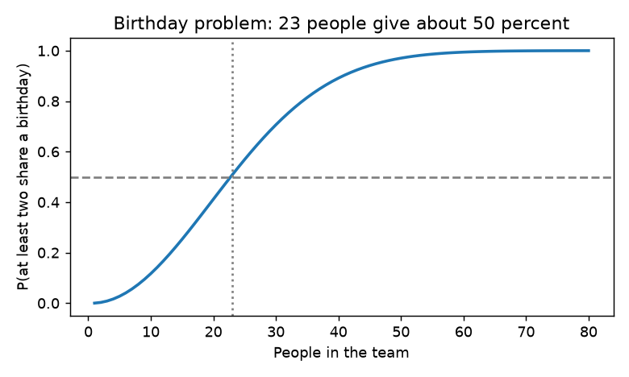
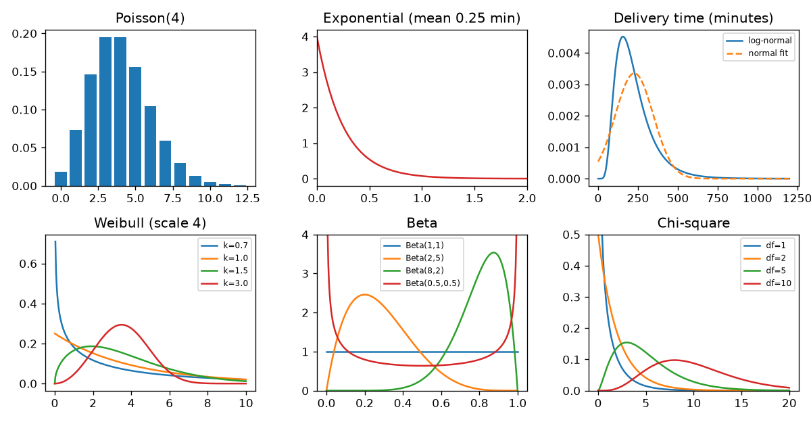
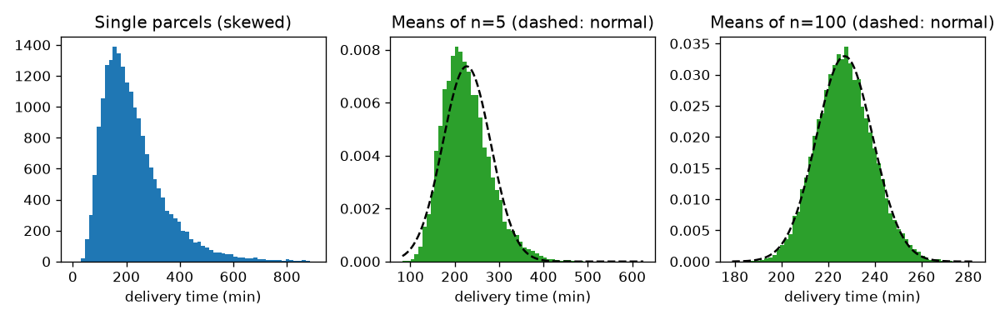
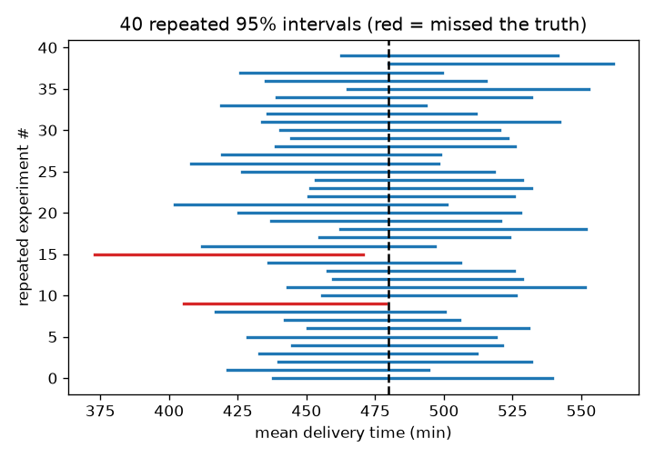
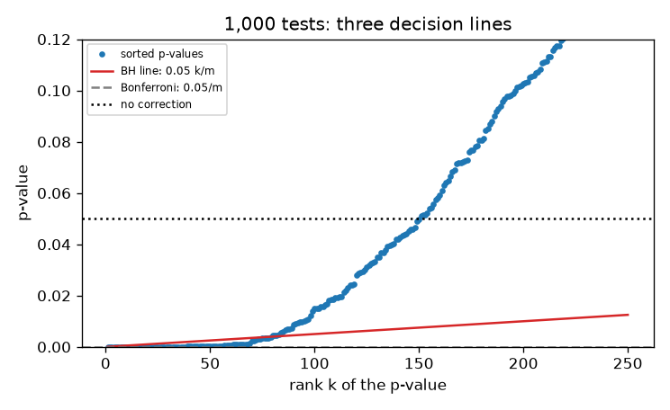
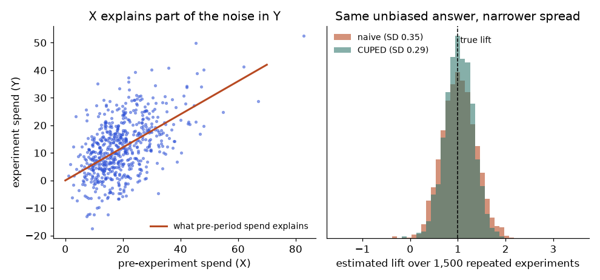
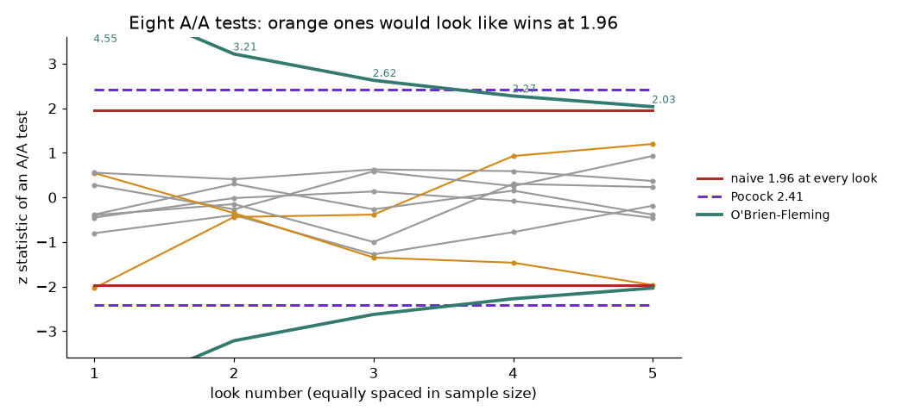
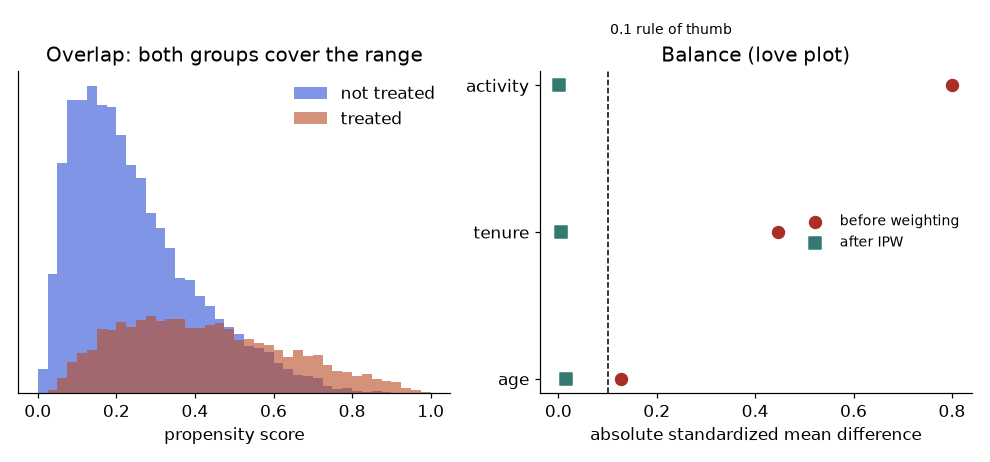
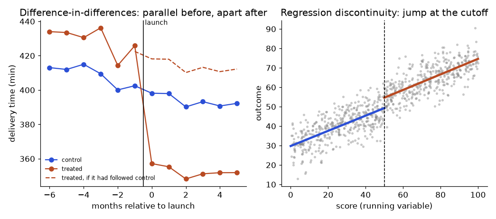

Statistics, Probability and Statistical Modelling for Data Work
A hands-on mini-textbook: from probability puzzles to regression, GLMs, Bayesian models, time series and experiments, taught with real numbers and runnable Python.
Taught the IIT Professor Way — Real Numbers. Real Problems. Real Understanding.
A Note From Your Professor
You already work with numbers every day. Whether you read exam results, delivery times or shop sales, you meet averages, percentiles and error rates, and you must decide whether a new process is really "faster". This document teaches you to do that with proof instead of feeling. We start with probability puzzles that fool smart people, move through distributions, sampling, tests and regression, and finish with Bayesian methods, forecasting, survival analysis, experiments and optimisation.
Be honest with yourself about one thing. Statistics is not about memorising formulas. It is about knowing which question you are really asking and how data can fool you. That is why every chapter shows a simulation: when a formula and a simulation agree, you understand it. When they disagree, you have learned something even more valuable.
You already own the Math PDF, which teaches the basics from zero (probability, Bayes, distributions, hypothesis testing, MLE, loss functions, information theory). This document does not repeat that. It goes deeper and wider, and it points back to the PDF ("see Math PDF, Pillar 3.2") when a basic idea is needed.
One rule matters more than any other: never move on until the current topic feels obvious. If a chapter feels foggy, redo its worked problems with different numbers, re-run the code and change the seed, and explain the idea aloud in three sentences. One hour a day, done honestly, is enough.
What Every Topic Contains
- INTUITION callout: the problem the idea solves, in everyday language.
- Formal definition / how it works: precise but plain, with a "Words you need" table.
- Worked problems with real numbers: every step, a Check and a plain-language interpretation, with real code output.
- The picture: a diagram, table or plot, explained fully.
- Connection to real work: where it shows up in analytics, data engineering, ML and operations.
- Applications: grouped by role, with concrete examples.
- COMMON MISTAKE callouts: what beginners get wrong and how to catch it.
- Check yourself: three short questions with answers.
Every chapter ends with a recap (with a formula table), a practice set (8 to 12 problems with answers) and a prompt pack (5 prompts to paste into an AI tutor).
Contents
- Probability Through Problem Solving: counting, conditional probability, Bayes and base-rate traps, expectation and variance, descriptive statistics, Simpson's paradox.
- Distributions in Depth: Bernoulli to Dirichlet, when to use which, chi-square/t/F, multivariate normal, LLN and Markov chains.
- Sampling, Estimation, Confidence Intervals and the Bootstrap: sampling bias, standard error, CLT, MLE and method of moments, CIs, bootstrap.
- Hypothesis Testing in Depth: z, t, paired, chi-square, ANOVA with Tukey, non-parametric tests, normality tests, power and sample size.
- Effect Sizes, Multiple Testing and How Data Fools You: Cohen's d, odds ratios, Bonferroni, Holm, BH-FDR, p-hacking, winner's curse.
- Linear Regression Deeply: OLS derivation, inference, assumptions, diagnostics, VIF, influential points, interpretation.
- Regularization and Model Selection: ridge, lasso, elastic net, bias-variance, AIC/BIC, cross-validation, other multivariate and smoothing tools.
- Generalized Linear Models: logistic, Poisson, negative binomial, link functions, deviance, odds ratios, marginal effects.
- Bayesian Statistics: priors, posteriors, conjugacy, credible intervals, Bayesian A/B tests, MCMC intuition, PyMC awareness.
- Time Series Statistics: stationarity, ACF/PACF, ARIMA/SARIMA, exponential smoothing, forecast evaluation.
- Survival Analysis and Mixed/Hierarchical Models: Kaplan-Meier, Cox, random effects and partial pooling.
- Experimental Design and Causal Basics: randomisation, confounding, difference-in-differences intuition.
- Optimization Techniques and Information Theory: convexity, gradient descent variants, Lagrange/KKT, linear programming with scipy, entropy refresher.
- Statistics Interview Bank and Common Pitfalls.
- Project Lab: Five Statistics Portfolio Projects
Appendix: Cheat Sheet (all key formulas and commands).
How To Study This Document
Use the five-step learning loop on every chapter:
- Build first. Run the code of the chapter's first section before reading the explanation. Change a number and run it again.
- Ask. Write down what confused you. Use the Prompt pack at the end of the chapter to ask an AI tutor those exact questions.
- Just-in-time theory. Read the formal part only for the confusing pieces.
- Rebuild. Close the document and recreate one simulation from a blank file. If you can reproduce the output, you understand it.
- Teach. Explain the chapter's main idea in three sentences to a colleague (or a rubber duck).
Suggested pace: one chapter per week at about one hour a day (read, code, practice set, prompt pack). Chapters 4 to 6 deserve two weeks each if you want interview-level fluency. How to use the Prompt packs: paste one into any AI assistant, replace [PASTE HERE] with your own work when asked, and always attempt the exercise before reading the answer. The practice sets contain the answers directly below each question so you can check yourself honestly.
A note on tools: all numbers in this document were produced with Python (NumPy, SciPy, matplotlib, pandas, scikit-learn). Where the library statsmodels, lifelines or PyMC would be the normal choice, the early chapters rebuild the calculation by hand so you can see inside it, and the library calls are shown but marked "not run here" if they were not executed.
Prerequisites
- Basic Python (variables, loops, functions, lists, NumPy arrays).
- School algebra and logarithms.
- The learner's Math PDF, at least the Probability and Statistics chapter (Pillar 3), the Calculus chapter (derivatives, gradients) and the Linear Algebra chapter (matrices, dot product). These are referred to, not repeated.
- Curiosity about numbers. No advanced mathematics is required.
Tools you need
All free:
- Python 3.10+ with
numpy,scipy,pandas,matplotlib,scikit-learn(pip install numpy scipy pandas matplotlib scikit-learn). - Optional libraries used later in the document:
statsmodels,lifelines,pymc,pingouin. - Jupyter Notebook or VS Code for running and editing code.
- A text editor and a notebook (paper) for the by-hand steps.
Imagine your monitoring tool fires an alert at 3 a.m. The vendor says, "This detector catches 99 percent of real incidents." Should you wake up the whole team? Most engineers say yes. After this chapter you will know that the honest answer can be "only one alert in five is real", and you will be able to prove it with five lines of arithmetic. Probability is the language of uncertainty, and every later chapter (tests, regression, Bayesian models, forecasts) is built on it. You already met the definitions in the Math PDF (Pillar 3.1 and 3.2: probability fundamentals, Bayes, distributions, descriptive statistics, covariance and correlation). So here we do not repeat them from zero. We solve problems, because probability is learned by solving, not by reading. Every answer is checked by a short computer simulation. When a formula and a simulation agree, you can trust both.
1.1 Counting and Sample Spaces
Words you need
| Word | Plain meaning | Example |
|---|---|---|
| Experiment | Anything with an uncertain result | Place one order and see if it arrives late |
| Outcome | One possible result | "fail" |
| Sample space S | The list of ALL outcomes | {pass, fail} |
| Event | A group of outcomes we care about | "response is slower than 1 s" |
| Permutation | An arrangement where order matters | First, second, third prize |
| Combination | A selection where order does not matter | A team of 3 people |
| Factorial n! | n × (n−1) × ... × 1 | 4! = 24 |
The rules
- Axioms (the three basic laws): P(A) ≥ 0; P(S) = 1; if A and B cannot happen together, P(A or B) = P(A) + P(B).
- Multiplication rule: if a task has steps with n₁, n₂, ... choices, the total is n₁ × n₂ × ...
- Permutations: choosing k from n with order:
n! / (n − k)! - Combinations: choosing k from n without order:
C(n, k) = n! / (k! (n − k)!). We divide by k! because each group of k items was counted k! times in different orders. - Complement trick:
P(at least one) = 1 − P(none). "None" is usually one simple product.
Does order matter? Yes -> permutation n!/(n-k)!
No -> combination C(n,k)
Repeats allowed? Yes -> n^k (ordered)| Item | Example value | Where it appears in the job |
|---|---|---|
| Multiplication rule | 4 × 3 × 5 = 60 scenarios | Counting test scenarios, feature crosses |
| Combinations C(n,k) | C(10,3) = 120 | Choosing k depots, the "n choose k" in the binomial (Chapter 2) |
| Complement | 1 − P(no collision) | Hash and ID collision risk |
Problem 1.1.1 A company has 10 depots. You pick 3 at random (no repeats) to audit. How many different sets of 3 exist? How many ordered line-ups? What is the probability that one specific depot is in your set?
| Formula | sets = C(10, 3) = 10! / (3! · 7!); line-ups = 10 · 9 · 8 |
|---|---|
| Plug in | C(10, 3) = (10 · 9 · 8) / (3 · 2 · 1) |
| Compute | 720 / 6 = 120 sets. Line-ups = 720. Sets that contain your depot: choose the other 2 from the remaining 9, C(9, 2) = 36. Probability = 36 / 120 = 0.3 |
| Answer | There are 120 sets and 720 ordered line-ups. Your depot is chosen with probability 0.3. |
| Check | Simple logic: you pick 3 of 10 seats, so each depot has a 3/10 = 0.3 chance. Both ways agree. Also 720 / 120 = 6 = 3!, which matches "each set can be ordered 6 ways". |
| Why it matters | Two methods giving the same answer is the habit of a good analyst. |
Predict: what do the three numbers below print?
from math import comb, perm
print(comb(10, 3), perm(10, 3), comb(9, 2) / comb(10, 3))120 720 0.3Line by line: comb(10, 3) counts sets, perm(10, 3) counts ordered line-ups, and the last expression divides the favourable sets by all sets.
Problem 1.1.2 (the birthday problem) In a team of 23 people, what is the chance that at least two share a birthday? Assume 365 equally likely days.
| Formula | P(match) = 1 − P(all different) |
|---|---|
| Plug in | P(all different) = (365/365)(364/365)(363/365) ... (343/365). The first person has any day, the second must avoid 1 day, the third must avoid 2 days, and so on. There are 23 factors. |
| Compute | Multiply the 23 factors, then subtract from 1. We use code, because 23 multiplications by hand is slow. |
| Answer | About 0.507: a little more than 50 percent. |
| Check | We simulate 100,000 random teams of 23 and count matches. The simulated fraction must be near the exact value. |
| Why it matters | Humans guess "about 6 percent" (23/365). The truth is nearly 50 percent, so your intuition for collisions is poor. |
Predict: will the simulated number be exactly equal to the exact one?
import numpy as np
def p_match(n):
p = 1.0
for i in range(n):
p *= (365 - i) / 365
return 1 - p
print("exact n=23:", round(p_match(23), 4), " n=50:", round(p_match(50), 4))
rng = np.random.default_rng(1)
teams = rng.integers(0, 365, size=(100_000, 23))
hits = sum(len(set(row)) < 23 for row in teams)
print("simulated n=23:", hits / 100_000)exact n=23: 0.5073 n=50: 0.9704
simulated n=23: 0.50695The simulated value is close but not identical, because it is random. With 100,000 teams the error is about ±0.003. That is the first lesson about simulation: it gives an estimate with noise.
The picture
# plot
import numpy as np, matplotlib.pyplot as plt
ns = np.arange(1, 81)
ps = [p_match(int(k)) for k in ns]
plt.figure(figsize=(6, 3.6))
plt.plot(ns, ps, color="#1f77b4", lw=2)
plt.axhline(0.5, color="gray", ls="--")
plt.axvline(23, color="gray", ls=":")
plt.xlabel("People in the team"); plt.ylabel("P(at least two share a birthday)")
plt.title("Birthday problem: 23 people give about 50 percent")
plt.tight_layout(); plt.savefig(f"{IMG}/ch01_birthday.png", dpi=130); plt.close()
How to read it: the x-axis is team size, the y-axis is the probability of at least one shared birthday. The dashed horizontal line marks 50 percent and the dotted vertical line marks 23 people. The curve crosses where the two lines meet. At 50 people it is already 97 percent.
Connection to the real job
Collision probability decides how long a random ID must be (order IDs, tracking numbers, UUIDs). Counting also appears in A/B test design (how many variant combinations), and as the "n choose k" inside the binomial distribution in Chapter 2.
Applications
- Data Engineering: choosing hash sizes and partition keys; estimating duplicate-key risk in a pipeline.
- Quality testing: pairwise test-case reduction when the full cross-product is too big.
- Machine Learning: counting feature crosses; sampling a train/test split without replacement.
- Analytics: counting possible segment combinations before a "slice and dice" analysis (more slices means more false findings, Chapter 5).
Check yourself
- How many 4-digit PINs exist if digits may repeat? Answer: 10⁴ = 10,000.
- How many ways to pick a team of 2 from 6 people? Answer: C(6,2) = 15.
- Why is "at least one" usually easier through the complement? Answer: "None" is one product of simple terms, while "at least one" has many cases.
1.2 Conditional Probability and Independence
P(A|B) is the probability of event A given that event B has happened. Two events are independent if knowing one does not change the probability of the other.Words you need
| Word | Plain meaning | Example |
|---|---|---|
| P(A \ | B) | Probability of A, given B happened |
| Joint P(A and B) | Both happen | Slow AND uses database |
| Partition | Groups that do not overlap and cover everything | Depot 1, 2 or 3 |
| Independent | Knowing one tells you nothing about the other | Two fair coin flips |
The rules
- Definition:
P(A | B) = P(A and B) / P(B), for P(B) > 0. In words: of all the B cases, what fraction also has A. - Multiplication rule:
P(A and B) = P(A | B) · P(B). - Law of total probability: if B₁, B₂, ... partition the world,
P(A) = Σ P(A | Bᵢ) · P(Bᵢ). It is a weighted average of the within-group probabilities. - Independence:
P(A and B) = P(A) · P(B), equivalentlyP(A | B) = P(A). - Conditional independence: A and B may be dependent overall, but independent once we know C. The Naive Bayes classifier assumes this for all features.
| Item | Example value | Where it appears in the job |
|---|---|---|
| P(A \ | B) | P(purchase \ |
| Total probability | 0.5·0.02 + 0.3·0.03 + 0.2·0.05 | Overall return rate from per-depot rates |
| Independence | P(A and B) = P(A)·P(B) | Assumption behind many tests and Naive Bayes |
Problem 1.2.1 A shop ships from three depots. Depot 1 handles 50 percent of orders and 2 percent of them are returned. Depot 2 handles 30 percent and 3 percent are returned. Depot 3 handles 20 percent and 5 percent are returned. What is the overall return rate?
| Formula | P(fail) = Σ P(fail | Sᵢ) · P(Sᵢ) (law of total probability) |
|---|---|
| Plug in | 0.02·0.5 + 0.03·0.3 + 0.05·0.2 |
| Compute | 0.010 + 0.009 + 0.010 = 0.029 |
| Answer | The overall return rate is 2.9 percent, which means about 29 returns per 1,000 orders. |
| Check | The answer must lie between the smallest (2 percent) and the largest (5 percent) rate, because it is a weighted average. It does. A simple average (3.3 percent) would be wrong because it ignores traffic weights. |
| Why it matters | "Combined rate = weighted average" is the rule behind every dashboard roll-up. |
Problem 1.2.2 (two children) A family has two children. (a) You learn that at least one is a girl. What is the probability that both are girls? (b) You learn instead that the older child is a girl. What is the probability that both are girls?
| Formula | P(both | info) = P(both and info) / P(info). Because outcomes are equally likely, count outcomes. |
|---|---|
| Plug in | The four equally likely outcomes (older first) are GG, GB, BG, BB. |
| Compute | (a) "at least one girl" leaves GG, GB, BG, so P = 1/3. (b) "older is a girl" leaves GG, GB, so P = 1/2. |
| Answer | (a) 1/3, (b) 1/2. The way the information arrives changes the answer. |
| Check | We simulate a million families below. |
| Why it matters | Be careful about exactly what a condition says. Data filters such as "at least one error in the session" and "the first order was late" select different worlds. |
Predict: roughly 0.33 and 0.50? Run it.
import numpy as np
rng = np.random.default_rng(2)
older = rng.integers(0, 2, 1_000_000) # 1 = girl
younger = rng.integers(0, 2, 1_000_000)
atleast = (older == 1) | (younger == 1)
both = (older == 1) & (younger == 1)
print("P(both | at least one girl):", round(both[atleast].mean(), 4))
print("P(both | older is girl): ", round(both[older == 1].mean(), 4))P(both | at least one girl): 0.3344
P(both | older is girl): 0.5009The line both[atleast].mean() keeps only families where the condition holds, then takes the fraction with both girls. This is exactly "shrink the world, then count".
The picture
A probability tree: each branch carries a probability, and you multiply along a path.
0.5 -- S1 -- fail 0.02 -> 0.5 x 0.02 = 0.010
start --- 0.3 -- S2 -- fail 0.03 -> 0.3 x 0.03 = 0.009
0.2 -- S3 -- fail 0.05 -> 0.2 x 0.05 = 0.010
total fail = 0.029Read it left to right. The first split chooses a depot. The second split (not drawn for "pass") chooses fail or pass. Add up the fail endings to get the total.
Connection to the real job
Every funnel metric is a conditional probability. In reliability work, P(late delivery | peak hour) differs from P(late delivery). In ML, a classifier output is an estimate of P(class | features).
Applications
- Data Analytics: funnel conversion, churn given a segment.
- Data Science: Naive Bayes spam filters (conditional independence of words).
- Reliability / SRE: fault trees, failure rates per component.
- Healthcare analytics: probability of disease given a symptom.
Check yourself
- P(A)=0.4, P(B)=0.5, independent. What is P(A and B)? Answer: 0.2.
- P(A and B)=0.1, P(B)=0.25. What is P(A | B)? Answer: 0.4.
- Can two events with non-zero probability be independent and mutually exclusive at once? Answer: No. If they cannot happen together, knowing one occurred tells you the other did not, so they are dependent.
1.3 Bayes' Theorem and the Base-Rate Trap
P(A|B) = P(B|A) P(A) / P(B). The base rate is the prior probability of the hypothesis, and ignoring it leads to the base-rate fallacy.Words you need
| Word | Plain meaning | Example |
|---|---|---|
| Prior P(H) | Belief before seeing evidence (the base rate) | 0.5 percent of minutes have a real incident |
| Likelihood P(E \ | H) | How likely the evidence is if H is true |
| Posterior P(H \ | E) | Belief after seeing the evidence |
| Sensitivity | P(positive \ | condition present) (also recall) |
| Specificity | P(negative \ | condition absent) |
| False positive rate | 1 − specificity | 0.02 |
| Odds | p / (1 − p) | 0.2 means 1 to 4 |
The theorem
P(H | E) = P(E | H) · P(H) / P(E), where P(E) = P(E | H)·P(H) + P(E | not H)·P(not H).
The odds version is easiest for repeated updates: posterior odds = prior odds × likelihood ratio, where the likelihood ratio is sensitivity / false positive rate.
| Item | Example value | Where it appears in the job |
|---|---|---|
| Prior | 0.005 | Fraud rate, incident rate, class balance |
| Likelihood ratio | 0.99 / 0.02 = 49.5 | How strongly one alert should move you |
| Posterior | 0.199 | Precision of an alert system |
Problem 1.3.1 An anomaly detector flags 99 percent of real incidents (sensitivity 0.99) and wrongly flags 2 percent of normal minutes (false positive rate 0.02). Real incidents occur in 0.5 percent of minutes. An alert fires. What is the probability that it is a real incident?
| Formula | P(H | E) = P(E | H)·P(H) / [P(E | H)·P(H) + P(E | not H)·P(not H)] |
|---|---|
| Plug in | (0.99 · 0.005) / (0.99 · 0.005 + 0.02 · 0.995) |
| Compute | top = 0.00495. Bottom = 0.00495 + 0.0199 = 0.02485. Ratio = 0.00495 / 0.02485 = 0.1992. |
| Answer | Only about 19.9 percent of alerts are real incidents. About 4 of every 5 alerts are false alarms, although the detector looks excellent on paper. |
| Check | Natural frequencies. Take 100,000 minutes. 500 are incidents and the detector fires on 495 of them. 99,500 are normal and the detector fires on 1,990 of them. Real alerts = 495 out of 2,485 total alerts = 19.9 percent. Same answer. |
| Why it matters | If the on-call team learns that 80 percent of pages are noise, they stop trusting the system. Detector quality means nothing without the base rate. |
Predict: what happens to the posterior if incidents become 10 times rarer (prior 0.0005)? Higher or lower than 0.199?
def posterior(prior, sens, fpr):
pe = sens * prior + fpr * (1 - prior)
return sens * prior / pe
print("posterior:", round(posterior(0.005, 0.99, 0.02), 4))
for prior in [0.0005, 0.005, 0.05, 0.2, 0.5]:
print(f"prior={prior:<7} posterior={posterior(prior, 0.99, 0.02):.4f}")posterior: 0.1992
prior=0.0005 posterior=0.0242
prior=0.005 posterior=0.1992
prior=0.05 posterior=0.7226
prior=0.2 posterior=0.9252
prior=0.5 posterior=0.9802The function computes the denominator pe (the total chance of an alert) first, then the share of it that comes from real incidents. The table shows the key lesson: with the same detector, precision runs from 2.4 percent to 98 percent depending only on the prior.
Problem 1.3.2 (two independent alerts) Two independent monitors both fire. Each has sensitivity 0.99 and false positive rate 0.02. With prior 0.005, what is the posterior after both alert?
| Formula | posterior odds = prior odds × LR₁ × LR₂ (independent evidence multiplies) |
|---|---|
| Plug in | prior odds = 0.005 / 0.995 = 0.005025. LR = 0.99 / 0.02 = 49.5. |
| Compute | odds = 0.005025 × 49.5 × 49.5 = 0.005025 × 2450.25 = 12.31. Probability = odds / (1 + odds) = 12.31 / 13.31 = 0.925. |
| Answer | About 92.5 percent. A second independent signal moves belief from 20 percent to over 90 percent. |
| Check | Updating one at a time must give the same: after the first alert odds = 0.005025 × 49.5 = 0.2487 (probability 0.199, as before). Multiply by 49.5 again: 12.31. Same. |
| Why it matters | This is why alert rules like "two of three checks fail" cut noise so strongly. The word independent is critical: if both checkers look at the same faulty scanner, the second one adds almost nothing. |
prior_odds = 0.005 / 0.995
lr = 0.99 / 0.02
odds = prior_odds * lr**2
print("posterior after two alerts:", round(odds / (1 + odds), 4))posterior after two alerts: 0.9249Problem 1.3.3 (Monty Hall) You pick door 1 of 3. The host, who knows where the car is, opens door 3 (a goat). Should you switch to door 2?
| Formula | P(car behind door k) before any door opens = 1/3 each. |
|---|---|
| Plug in | Your door has 1/3. The other two doors together have 2/3. |
| Compute | The host never opens the car door and never opens yours. Opening door 3 does not change the chance that your door is right (still 1/3), so the whole 2/3 now sits on door 2. |
| Answer | Switching wins with probability 2/3. Staying wins with 1/3. |
| Check | In the simulation a switcher wins exactly when the first pick was wrong, because the host then removes the only other goat. |
| Why it matters | The host's action is evidence, and its meaning depends on his rule. Always ask "how was this evidence produced?" before updating. |
import numpy as np
rng = np.random.default_rng(3)
n = 200_000
car = rng.integers(0, 3, n)
pick = np.zeros(n, dtype=int) # always pick door 0
stay = (car == pick).mean()
switch = (car != pick).mean()
print("stay:", round(stay, 3), " switch:", round(switch, 3))stay: 0.334 switch: 0.666The picture: natural frequencies
Read it as a funnel from top to bottom.
100,000 minutes
500 real incidents -> 495 alerts (99%)
99,500 normal minutes -> 1,990 alerts (2%)
Total alerts = 2,485; real = 495 -> 495 / 2,485 = 19.9%The 1,990 false alerts come from the huge normal group, even though only 2 percent of it fires. Small rate times huge group still gives a big number.
Connection to the real job
Precision of a classifier is exactly P(positive class | predicted positive), and it depends on prevalence. The naive Bayes classifier multiplies likelihoods under conditional independence. Fraud teams with a 0.1 percent fraud rate face this trap every day.
Applications
- Data Analytics: judging whether a dashboard anomaly flag is trustworthy.
- Machine Learning: precision, recall and prevalence (Math PDF, confusion matrix); Naive Bayes.
- MLOps / SRE: alert tuning, drift detectors with false alarms.
- GenAI: content-safety filters where the unsafe class is rare.
Check yourself
- Prior 1 percent, sensitivity 90 percent, false positive rate 9 percent. Rough posterior? Answer: 0.009 / (0.009 + 0.0891) is about 9.2 percent.
- What does the likelihood ratio 49.5 mean? Answer: A positive result is 49.5 times more likely under "incident" than under "normal".
- If the base rate rises, does precision rise or fall, with sensitivity and false positive rate fixed? Answer: It rises.
1.4 Random Variables, Expectation and Variance
Words you need (see Math PDF Pillar 3.2 for fuller definitions)
| Word | Plain meaning | Example |
|---|---|---|
| Random variable X | A number from a random process | Delivery time of the next order |
| Expectation E[X] | Probability-weighted average | 250 minutes |
| Variance Var(X) | Average squared distance from E[X] | 70,500 min² |
| Standard deviation | √Var, same unit as X | 265 minutes |
| Covariance | Do two variables move together? | Two services slow at the same time |
| Indicator variable | 1 if something happens, else 0 | 1 if call i fails |
The rules
E[X] = Σ x·P(X = x);E[aX + b] = a·E[X] + b;E[X + Y] = E[X] + E[Y]always.Var(X) = E[X²] − (E[X])²;Var(aX + b) = a²·Var(X).Var(X + Y) = Var(X) + Var(Y) + 2·Cov(X, Y); the covariance term is zero for independent variables.Cov(X, Y) = E[XY] − E[X]·E[Y]andCorr(X, Y) = Cov / (σₓ · σᵧ).
| Item | Example value | Where it appears in the job |
|---|---|---|
| E[X] | 250 minutes | Mean delivery time, expected cost, expected revenue |
| Linearity | 20 × 0.03 = 0.6 failures | Error budgets, expected counts |
| Var(X+Y) with covariance | 1,900 vs 1,300 | End-to-end time of a multi-leg delivery |
Problem 1.4.1 A shop offers 3 delivery options. Delivery takes 100 minutes with probability 0.6, 300 minutes with probability 0.3 and 1000 minutes with probability 0.1. Find the mean, the variance and the standard deviation.
| Formula | E[X] = Σ x·p; Var = E[X²] − E[X]² |
|---|---|
| Plug in | E[X] = 100·0.6 + 300·0.3 + 1000·0.1; E[X²] = 100²·0.6 + 300²·0.3 + 1000²·0.1 |
| Compute | E[X] = 60 + 90 + 100 = 250. E[X²] = 6,000 + 27,000 + 100,000 = 133,000. Var = 133,000 − 250² = 133,000 − 62,500 = 70,500. SD = √70,500 = 265.5. |
| Answer | The mean is 250 minutes and the standard deviation is about 265.5 minutes. The SD is larger than the mean: the 10 percent slow tail dominates the spread. |
| Check | The mean (250) lies between the smallest (100) and the largest (1000) value, and the probabilities add to 0.6 + 0.3 + 0.1 = 1. The code below confirms. |
| Why it matters | A mean of 250 minutes hides that 1 order in 10 takes 1000 minutes. This is why percentiles matter in delivery reports. |
Problem 1.4.2 (linearity of expectation) A parcel of 20 independent items is packed. Each item is damaged with probability 0.03. (a) Find the expected number of failed calls and its variance. (b) Ten people drop their hats in a box and each takes one hat back at random. What is the expected number of people who get their own hat?
| Formula | Write the count as a sum of indicators: Total = I₁ + ... + Iₙ with E[Iᵢ] = P(event i). |
|---|---|
| Plug in | (a) E[Iᵢ] = 0.03 for i = 1..20. (b) Person i gets own hat with probability 1/10. |
| Compute | (a) E = 20 × 0.03 = 0.6. Calls are independent, so Var = 20 × 0.03 × 0.97 = 0.582. (b) E = 10 × (1/10) = 1. The hat events are dependent, but linearity does not need independence. |
| Answer | Expect 0.6 failed calls per page view (variance 0.582). In the hat puzzle the expected number of lucky people is exactly 1, for any number of people. |
| Check | Simulation below: mean near 0.6, variance near 0.582, hats near 1. |
| Why it matters | Over 1,000,000 page views you should expect about 600,000 failed calls. Also, P(at least one failure on a page) = 1 − 0.97²⁰ = 0.456, so a small 3 percent per-call failure rate makes almost half of all page loads show at least one failure. Small per-call rates multiply across many calls. |
import numpy as np
v = np.array([100, 300, 1000]); p = np.array([0.6, 0.3, 0.1])
m = (v * p).sum(); var = (v**2 * p).sum() - m**2
print("mean", m, "var", var, "sd", round(var**0.5, 2))
rng = np.random.default_rng(4)
fails = rng.binomial(1, 0.03, size=(500_000, 20)).sum(axis=1)
print("fails mean/var:", round(fails.mean(), 3), round(fails.var(), 3))
print("P(at least one failure):", round(1 - 0.97**20, 4), " simulated:", round((fails > 0).mean(), 4))
n_people = 10
matches = [(rng.permutation(n_people) == np.arange(n_people)).sum() for _ in range(100_000)]
print("expected own hats:", round(np.mean(matches), 3))mean 250.0 var 70500.0 sd 265.52
fails mean/var: 0.597 0.58
P(at least one failure): 0.4562 simulated: 0.4544
expected own hats: 1.003Problem 1.4.3 (correlated sum) Two legs of a delivery (warehouse to hub, hub to door) have time variances 400 and 900 (min²) and covariance 300. What is the standard deviation of their total time? Compare with the case of independence.
| Formula | Var(X+Y) = Var(X) + Var(Y) + 2·Cov(X, Y) |
|---|---|
| Plug in | 400 + 900 + 2 × 300 |
| Compute | Var = 1,900, so SD = √1,900 = 43.6 minutes. If independent: Var = 1,300, SD = 36.1 minutes. |
| Answer | The total has SD 43.6 minutes, which is about 21 percent more than the independent value of 36.1 minutes. |
| Check | The correlation is 300 / (20 · 30) = 0.5. The rule is only valid if the covariance matrix is possible: |Cov| ≤ σₓσᵧ = 600. Yes. |
| Why it matters | Positive correlation (both slow when the weather is bad) makes the total more variable, so the tail of delivery times is worse than a model with independence predicts. |
The picture
Independent: spread of X+Y = sqrt(400+900) = 36.1
Correlated: spread of X+Y = sqrt(400+900+600) = 43.6Think of two people walking together. If they step randomly, their combined position wobbles a little. If they step in unison, it wobbles more.
Connection to the real job
Indicator variables plus linearity give expected counts for error budgets. The variance-of-sum rule explains why a multi-leg delivery's time is more variable than a naive calculation, and why diversification works in finance.
Applications
- Operations: service-promise error budgets, staffing plans with expected counts.
- Finance analytics: portfolio variance.
- Machine Learning: variance of averaged models (bagging) depends on their correlation.
- Data Engineering: expected duplicates or failed records in a batch.
Check yourself
- E[X] = 5. What is E[3X − 2]? Answer: 13.
- Var(X) = 4. What is Var(3X − 2)? Answer: 36.
- Does E[X + Y] = E[X] + E[Y] need independence? Answer: No. Only the variance rule needs it (or a covariance term).
1.5 Descriptive Statistics and Correlation Done Properly
Words you need
| Word | Plain meaning | Example |
|---|---|---|
| Nominal | Labels, no order | Browser name |
| Ordinal | Ordered labels, gaps unequal | Rating 1 to 5 |
| Interval | Equal gaps, no true zero | Temperature in Celsius |
| Ratio | Equal gaps and a true zero | Delivery time, weight |
| Robust | Not easily moved by outliers | Median |
| MAD | Median of \ | xᵢ − median\ |
| IQR | Q3 − Q1, the middle 50 percent | Robust spread |
| Skewness | 0 = symmetric, positive = long right tail | Delivery time |
| Excess kurtosis | 0 for a normal, large for heavy tails | Bad-sensor spikes |
| Monotonic | Always rising (or always falling) | y = x³ for x > 0 |
The data type decides what you may compute: average ratio data, take the median of ordinal data, and only count nominal data.
Correlation family
- Pearson r: strength of a straight-line relationship. Sensitive to outliers.
- Spearman ρ: Pearson computed on the ranks (1st, 2nd, 3rd smallest). Detects any monotonic relationship.
- Kendall τ: counts concordant pairs (both go up together) minus discordant pairs, divided by all pairs. Robust, good with ties and small samples.
| Item | Example value | Where it appears in the job |
|---|---|---|
| Median, MAD | 202 minutes, 67 minutes | Robust delivery-time summary |
| p95, p99 | 461 minutes, 590 minutes | Promise-to-customer targets |
| Spearman | 1.0 for y = x³ | Feature screening on curved relations |
Problem 1.5.1 Simulate 1,000 delivery times (minutes) from a log-normal distribution (a typical shape for waiting and delivery times; its logarithm is normal). Compare mean, median, SD, MAD, IQR, skewness, kurtosis, p95 and p99. Then add 5 huge outliers (20,000 minutes) and see what moves.
| Formula | MAD = median(|xᵢ − median(x)|); IQR = Q3 − Q1 |
|---|---|
| Plug in | Generate the data, compute, then append five values of 20,000. |
| Compute | See the output. |
| Answer | The mean jumps from about 227 to 325 and the SD from 119 to 1397, while the median, MAD and IQR hardly move. |
| Check | Five outliers out of 1,005 values are 0.5 percent of the data. A robust statistic should barely react to that, and it does (median changes by about 1 minutes). |
| Why it matters | If one bad measurement can move your summary a lot, use a robust summary or investigate the outliers. |
Predict: which of the two lines (clean, with outliers) will show the larger p99?
import numpy as np
from scipy import stats
rng = np.random.default_rng(5)
delivery_minutes = rng.lognormal(mean=5.3, sigma=0.5, size=1000) # median about 200 minutes
def describe(x):
return {"mean": x.mean(), "median": np.median(x), "sd": x.std(ddof=1),
"MAD": stats.median_abs_deviation(x), "IQR": stats.iqr(x),
"skew": stats.skew(x), "kurt": stats.kurtosis(x),
"p95": np.percentile(x, 95), "p99": np.percentile(x, 99)}
a = describe(delivery_minutes)
b = describe(np.concatenate([delivery_minutes, np.full(5, 20000.0)]))
print(f"{'stat':8}{'clean':>12}{'with outliers':>16}")
for k in a:
print(f"{k:8}{a[k]:12.2f}{b[k]:16.2f}")stat clean with outliers
mean 226.76 325.13
median 202.32 203.26
sd 119.06 1396.97
MAD 67.14 68.10
IQR 141.81 143.14
skew 1.63 13.92
kurt 4.56 193.14
p95 461.16 475.15
p99 590.08 681.91Line by line: ddof=1 makes the SD use n−1 (the sample SD). The dictionary holds all statistics so we can print them side by side. Even p99 moved (590 to 682), because with 5 extreme points the top 1 percent now contains them.
Problem 1.5.2 Compare Pearson, Spearman and Kendall for (a) y = x³ with x = 1..20 and (b) the straight line y = 2x with one wild outlier replacing the last value by −200.
| Formula | Spearman = Pearson of ranks. For (a) the ranks of y equal the ranks of x. |
|---|---|
| Plug in | x = 1..20, y = x³; then y₂ = 2x with y₂[20] = −200. |
| Compute | (a) rank correlation is exactly 1 because y rises with x at every step. Pearson is below 1 because the curve is not a line. (b) One point ruins Pearson. |
| Answer | For the cubic: Pearson 0.922, Spearman 1.000, Kendall 1.000. For the outlier case: Pearson −0.168 (wrong sign!), Spearman 0.714, Kendall 0.800. |
| Check | In (b), 19 of 20 points lie on a perfect rising line, so a sensible measure must be clearly positive. Only the rank-based ones are. |
| Why it matters | Pearson can be fooled by one bad row. Rank correlations are safer for messy data. |
x = np.arange(1, 21, dtype=float)
y = x**3
print("cubic pearson %.3f spearman %.3f kendall %.3f" % (
stats.pearsonr(x, y)[0], stats.spearmanr(x, y)[0], stats.kendalltau(x, y)[0]))
y2 = 2 * x; y2[-1] = -200
print("outlier pearson %.3f spearman %.3f kendall %.3f" % (
stats.pearsonr(x, y2)[0], stats.spearmanr(x, y2)[0], stats.kendalltau(x, y2)[0]))cubic pearson 0.922 spearman 1.000 kendall 1.000
outlier pearson -0.168 spearman 0.714 kendall 0.800The picture
Pearson high: points near a straight line
Spearman high: points rise together, line or curve
Both near 0: no rank relation (but a U-shape can still be strongly dependent!)Connection to the real job
EDA (exploratory data analysis) starts here. Report median and percentiles for delivery times, never only the mean. Use Spearman for feature screening when relations are curved. Skewed targets often need a log transform before regression (Chapter 6).
Applications
- Data Analytics: delivery-time and on-time-rate reports, KPI distributions.
- Data Science: feature screening, outlier detection.
- Data Engineering: data-quality checks (a kurtosis spike reveals a faulty sensor).
- ML: choosing between mean and median imputation.
Check yourself
- Which is robust: SD or MAD? Answer: MAD.
- Which correlation gives exactly 1 for y = exp(x)? Answer: Spearman and Kendall (not Pearson).
- Is a 1-5 satisfaction score ratio data? Answer: No, it is ordinal.
1.6 Simpson's Paradox and Why Correlation Is Not Causation
Words you need
| Word | Plain meaning | Example |
|---|---|---|
| Confounder | A hidden variable linked to both the "treatment" and the outcome | Traffic level |
| Stratify | Compare inside each group separately | Compare A and B only under heavy traffic |
| Adjust | Include the confounder in a model | Regression (Chapter 6) |
| Randomise | Assign treatments by coin flip so confounders balance out | A/B test (Chapter 12) |
Problem 1.6.1 Two depots were compared on a light day and a busy day. The numbers are parcels delivered within the promised time.
| Quiet day | Busy day | |
|---|---|---|
| Depot A | 81 / 87 pass (93.1%) | 192 / 263 pass (73.0%) |
| Depot B | 234 / 270 pass (86.7%) | 55 / 80 pass (68.8%) |
- Formula pass rate = passed / total; combined rate = (sum of passed) / (sum of total)
- Plug in A: (81 + 192) / (87 + 263). B: (234 + 55) / (270 + 80).
- Compute A: 273 / 350 = 78.0%. B: 289 / 350 = 82.6%. Inside light traffic A wins (93.1 vs 86.7). Inside heavy traffic A wins again (73.0 vs 68.8).
- Answer A is better in both conditions, but B looks better in the combined table, because 270 of B's 350 tests ran under easy light traffic while 263 of A's 350 ran under hard heavy traffic.
- Check Compute A's weights: 87/350 = 25 percent light, 75 percent heavy. B's weights: 77 percent light, 23 percent heavy. Different mixes explain the flip. Verify with code below.
- Why it matters The fair comparison is within the traffic level (or after adjusting for it). Looking only at the dashboard total would ship the worse build.
Predict: will the printed combined rate for B be higher than for A?
import pandas as pd
d = pd.DataFrame({"build": ["A","A","B","B"], "traffic": ["light","heavy","light","heavy"],
"pass": [81, 192, 234, 55], "n": [87, 263, 270, 80]})
d["rate"] = (d["pass"] / d["n"]).round(3)
print(d)
tot = d.groupby("build")[["pass", "n"]].sum()
tot["rate"] = (tot["pass"] / tot["n"]).round(3)
print(tot) build traffic pass n rate
0 A light 81 87 0.931
1 A heavy 192 263 0.730
2 B light 234 270 0.867
3 B heavy 55 80 0.688
pass n rate
build
A 273 350 0.780
B 289 350 0.826The picture
Quiet day Busy day Combined
A 93% (n=87) 73% (n=263) 78%
B 87% (n=270) 69% (n=80) 83% <- reversalRead across a row: A's combined rate is dominated by its hard heavy-traffic tests, B's by its easy light-traffic tests.
Connection to the real job
This is the daily danger in observational analysis: dashboards compare groups that differ in many ways. The fixes are stratification (compare within groups), regression that includes the confounder (Chapter 6) and randomised experiments (Chapter 12).
Applications
- Operations: comparing depots, regions, or suppliers under unequal volumes.
- Data Analytics: conversion rates by device, campaign or country.
- Data Science: feature importance when features are correlated with a hidden driver.
- Healthcare and policy: treatment comparisons where sicker patients get stronger treatments.
Check yourself
- What creates Simpson's paradox? Answer: A confounder plus unequal group mixes.
- Does the paradox mean the numbers are wrong? Answer: No, the numbers are right; the combined table answers a different question.
- Name two fixes. Answer: Stratify, adjust in a regression, or randomise.
Chapter recap
- Many probability questions reduce to counting; the complement trick makes "at least one" easy.
- The birthday problem shows collisions appear after about √N items.
- Conditional probability is "probability inside a smaller world"; P(A | B) is not P(B | A).
- Bayes' theorem needs the prior (base rate); a great detector can still give mostly false alarms when the event is rare.
- Natural frequencies (100,000 cases) make Bayes easy to explain and check.
- Expectation is linear even without independence; variance adds only with independence or with a covariance term.
- Report median, MAD, IQR and percentiles for skewed data like delivery times; mean and SD are fragile.
- Pearson measures straight-line links; Spearman and Kendall measure monotonic links; always plot.
- Simpson's paradox can reverse a trend; confounders must be handled by design or adjustment.
| Formula / pattern | Meaning |
|---|---|
C(n,k) = n!/(k!(n−k)!) | Unordered choices |
P(≥1) = 1 − P(none) | Complement trick |
| `P(A\ | B) = P(A and B)/P(B)` |
| `P(H\ | E) = P(E\ |
posterior odds = prior odds × LR | Odds-form update |
E[aX+b] = aE[X]+b, Var(aX+b) = a²Var(X) | Linear transforms |
Var(X+Y) = VarX + VarY + 2Cov | Variance of a sum |
scipy.stats.spearmanr / kendalltau / pearsonr | Correlations |
Practice set
Problem 1.7.1 How many different 5-letter passwords are possible using 26 lowercase letters with no repeated letter?
Answer: 26·25·24·23·22 = 7,893,600.
Problem 1.7.2 Two fair dice are rolled. What is P(sum = 8)?
Answer: Pairs (2,6),(3,5),(4,4),(5,3),(6,2) = 5 out of 36, so 5/36 = 0.139.
Problem 1.7.3 What is the output? from math import comb; print(comb(5,2)*comb(4,1))
Answer: 10 × 4 = 40.
Problem 1.7.4 P(A) = 0.3, P(B) = 0.6, P(A or B) = 0.72. Are A and B independent?
Answer: P(A and B) = 0.3 + 0.6 − 0.72 = 0.18 = 0.3 × 0.6. Yes, independent.
Problem 1.7.5 A disease affects 1 in 1,000 people. A test has 95 percent sensitivity and a 5 percent false positive rate. What is the posterior after a positive test?
Answer: 0.95·0.001 / (0.95·0.001 + 0.05·0.999) = 0.00095 / 0.05090 = 1.87 percent.
Problem 1.7.6 Find the bug: "Three depots have return rates 1%, 4% and 10%. The average is 5%, so the combined error rate is 5%."
Answer: The depots handle different volumes. The combined rate must be weighted by order counts (law of total probability).
Problem 1.7.7 X has mean 10 and SD 2; Y has mean 4 and SD 1; their correlation is 0.5. Find the SD of X − Y.
Answer: Var = 4 + 1 − 2·(0.5·2·1) = 5 − 2 = 3. SD = √3 = 1.73.
Problem 1.7.8 A coin is flipped 10 times. What is the expected number of positions where heads is followed by heads?
Answer: There are 9 adjacent pairs, each HH with probability 1/4. By linearity, 9/4 = 2.25.
Problem 1.7.9 (interview) "A fraud test is 90 percent accurate and it says 'fraud' for a transaction. Is the transaction 90 percent likely to be fraud?" Explain.
Answer: No. Accuracy is not the posterior. You need the base rate. If fraud is 0.1 percent and the test has 90 percent sensitivity and a 10 percent false positive rate, the posterior is 0.0009 / 0.1008 = 0.89 percent.
Problem 1.7.10 (interview) In a team of 10 people, what is the probability that at least two share a birth month (12 equally likely months)?
Answer: P(all different) = (12·11·10·...·3) / 12¹⁰ = 239,500,800 / 61,917,364,224 = 0.00387. So the probability of a match is 1 − 0.00387 = 99.6 percent.
Prompt pack
You are my patient, practical professor. I am a working professional moving into data roles, and English is my second language. Teach me Chapter 1 topic "counting, sample spaces and the birthday problem" step by step in simple English. Use everyday examples (shop orders, menu combinations, hash collisions, IDs). After each idea, ask me one check question and wait for my answer. Finish by giving me 5 small exercises and checking my answers when I paste them.
You are my patient, practical professor. I am a working professional moving into data roles. Explain conditional probability and the law of total probability using examples such as faulty parcels from several depots. Use trees and real numbers. Then give me 8 graded exercises from easy to hard WITHOUT solutions, and wait. When I reply with my answers, mark each one and explain every mistake slowly.
You are my patient, practical professor. I am a working professional moving into data roles. The topic is Bayes' theorem and base-rate neglect, using fraud alerts, hospital screening and medical tests. Quiz me one question at a time with natural-frequency problems (100,000 cases). Start easy, get harder, and after each answer tell me if I used the base rate correctly. Stop after 8 questions and summarise my weak spots.
You are my patient, practical professor. I am a working professional moving into data roles. Review my work on expectation, variance, covariance and linearity of expectation. Here are my solutions: [PASTE HERE]. Check every step, find errors, explain the right method in simple English, and then give me two new similar problems to try.
You are my patient, practical professor. I am a working professional moving into data roles. Run a mock interview on probability and descriptive statistics: Bayes traps, Simpson's paradox, Pearson versus Spearman, robust statistics for delivery times. Ask one question at a time, wait for my answer, then give a score out of 10 with a model answer I can learn from. Ask 8 questions in total.
Every dataset you will ever analyse was produced by some random process, and a distribution is the shape that describes that process. If you pick the right shape, you can answer questions like "how many orders will be returned in the next hour?", "how long until the next outage?" and "what is the chance that conversion is above 5 percent?" without more data. If you pick the wrong shape, your delivery-promise numbers, your confidence intervals and your forecasts are all wrong. The Math PDF (Pillar 3.2) introduced the common distributions. In this chapter you go deeper: the story behind each one, how to tell them apart, how they connect to each other, and how to simulate them in Python so you can test your intuition. By the end you will be able to look at a column of numbers and say which two or three distributions are sensible candidates.
Our running example is an online shop: orders arrive, some are returned, each takes some time to deliver, and visitors buy or not. Each section picks one part of that story.
2.1 Discrete Distributions: Counting Successes and Events
Words you need
| Word | Plain meaning | Example |
|---|---|---|
| PMF (probability mass function) | P(X = k) for each whole number k | P(exactly 3 failures) |
| CDF (cumulative distribution function) | P(X ≤ k) | P(at most 3 failures) |
| Trial | One attempt with a yes/no result | One order |
| Rate λ (lambda) | Average number of events per unit time | 4 orders per minute |
The families
| Distribution | Story | PMF | Mean | Variance |
|---|---|---|---|---|
| Bernoulli(p) | One yes/no trial | p or 1−p | p | p(1−p) |
| Binomial(n, p) | Number of yes in n independent trials | C(n,k) pᵏ (1−p)ⁿ⁻ᵏ | np | np(1−p) |
| Geometric(p) | Trials until the first yes | (1−p)ᵏ⁻¹ p | 1/p | (1−p)/p² |
| Poisson(λ) | Events in a fixed time, events independent | e⁻λ λᵏ / k! | λ | λ |
| Multinomial(n, p₁..p_m) | n trials, each lands in one of m categories | n!/(k₁!...k_m!) ∏pᵢ^kᵢ | npᵢ | npᵢ(1−pᵢ) |
Two facts to remember. First, Binomial is just a sum of n Bernoulli variables. Second, Poisson has mean = variance. If your count data has variance much larger than its mean, Poisson is the wrong model (this is called overdispersion, we use it in Chapter 8).
| Item | Example value | Where it appears in the job |
|---|---|---|
| Binomial(20, 0.03) | Failed calls among 20 | Error counts per page view |
| Poisson(4) | Orders per minute | Arrival counts at a checkout |
| Geometric(0.1) | Pages viewed until first purchase | Time-to-first-event in discrete steps |
| Multinomial | Clicks across 4 buttons | Click distribution, language-model word counts |
Problem 2.1.1 A parcel of 20 independent items is packed and each item is damaged with probability 0.03. What is P(exactly 2 fail), P(at most 1 fails) and P(at least 3 fail)?
| Formula | P(X = k) = C(20, k) · 0.03ᵏ · 0.97²⁰⁻ᵏ |
|---|---|
| Plug in | P(X = 2) = C(20, 2) · 0.03² · 0.97¹⁸ = 190 · 0.0009 · 0.5780 |
| Compute | 190 × 0.0009 = 0.171; 0.171 × 0.5780 = 0.0988. P(X ≤ 1) = P(0) + P(1) = 0.5438 + 0.3364 = 0.8802. P(X ≥ 3) = 1 − P(X ≤ 2) = 1 − (0.8802 + 0.0988) = 0.0210. |
| Answer | About 9.9 percent for exactly 2 failures, 88.0 percent for at most 1 failure, and 2.1 percent for 3 or more. |
| Check | The code below gives the same numbers, and the three probabilities for "0 or 1", "2" and "3 or more" add to 1. |
| Why it matters | Even if each call is 97 percent reliable, about 1 page load in 48 will have three or more failed calls. Capacity and retry designs depend on such tail counts. |
from scipy import stats
b = stats.binom(20, 0.03)
print("P(X=2) =", round(b.pmf(2), 4))
print("P(X<=1) =", round(b.cdf(1), 4))
print("P(X>=3) =", round(b.sf(2), 4), " (sf = survival function = 1 - cdf)")
print("check sum:", round(b.cdf(1) + b.pmf(2) + b.sf(2), 6))P(X=2) = 0.0988
P(X<=1) = 0.8802
P(X>=3) = 0.021 (sf = survival function = 1 - cdf)
check sum: 1.0Problem 2.1.2 (Poisson arrivals) A service receives on average 4 orders per minute, arrivals being independent. What is P(0 orders in a minute), P(more than 8 in a minute), and how many orders per minute should you staff for so that you are overwhelmed less than 1 percent of the time?
| Formula | P(X = k) = e⁻⁴ 4ᵏ / k! |
|---|---|
| Plug in | P(0) = e⁻⁴ = 0.0183 |
| Compute | P(X > 8) = 1 − P(X ≤ 8). We use the CDF in code. For the capacity, we need the smallest c with P(X > c) < 0.01, which is the 99th percentile of Poisson(4). |
| Answer | P(0) = 1.8 percent, P(X > 8) = 2.1 percent, and the 99th percentile is 9 orders per minute. A capacity of 9 orders per minute is exceeded only 0.8 percent of the time, so it meets the 1 percent target. |
| Check | Simulate 1,000,000 minutes. The fraction of minutes with more than 9 orders must be below 1 percent (we get 0.8 percent), and the fraction above 8 must be near 2.1 percent. |
| Why it matters | Poisson tells you that "average 4 per second" does not mean "never above 4". Burst capacity is always larger than the average. This is the same fact that makes a queue grow even when average load is below capacity. |
import numpy as np
p = stats.poisson(4)
print("P(0) =", round(p.pmf(0), 4))
print("P(>8) =", round(p.sf(8), 4))
print("99th percentile:", p.ppf(0.99), " P(>9) =", round(p.sf(9), 4))
sim = np.random.default_rng(10).poisson(4, 1_000_000)
print("simulated P(>8):", round((sim > 8).mean(), 4), " P(>9):", round((sim > 9).mean(), 4))P(0) = 0.0183
P(>8) = 0.0214
99th percentile: 9.0 P(>9) = 0.0081
simulated P(>8): 0.0214 P(>9): 0.0082Problem 2.1.3 (Poisson as limit of Binomial; mean vs variance) A batch has 10,000 records and each is corrupt with probability 0.0005. Compare Binomial(10000, 0.0005) with Poisson(5) for P(X = 8). Then simulate counts to see the mean and variance of each.
| Formula | Poisson(λ) approximates Binomial(n, p) when n is large, p is small and λ = np. |
|---|---|
| Plug in | λ = 10,000 × 0.0005 = 5. |
| Compute | Compare pmf(8) for both and the sample variance. |
| Answer | Both give P(X = 8) of about 0.0653, and both have mean 5 and variance about 5. |
| Check | Binomial variance = np(1−p) = 4.9975, which is almost 5 because 1−p is almost 1. |
| Why it matters | When you only know "average 5 bad records per batch", Poisson is the natural model, and you do not need n or p. |
rng = np.random.default_rng(11)
bin_pmf, poi_pmf = stats.binom(10000, 0.0005).pmf(8), stats.poisson(5).pmf(8)
print("binom pmf(8):", round(bin_pmf, 5), " poisson pmf(8):", round(poi_pmf, 5))
xb = rng.binomial(10000, 0.0005, 200_000); xp = rng.poisson(5, 200_000)
print("binom mean/var:", round(xb.mean(), 3), round(xb.var(), 3))
print("poisson mean/var:", round(xp.mean(), 3), round(xp.var(), 3))binom pmf(8): 0.06527 poisson pmf(8): 0.06528
binom mean/var: 5.005 4.988
poisson mean/var: 5.0 4.981The picture
Binomial(20,0.03): sharp spike at 0-1, thin right tail
Poisson(4): hill centred near 4, right tail longer than left
Geometric(0.1): highest at 1, then smoothly falling (the "waiting" shape)Connection to the real job
Binomial and Poisson are the building blocks of A/B testing (conversions are Binomial), log analysis (error counts per minute are Poisson-like) and queueing models for capacity planning. Multinomial is the model behind text count features and softmax outputs in classification.
Applications
- Data Analytics: conversion counts (Binomial), support tickets per day (Poisson).
- Operations: order arrivals, returns per batch, number of attempts until a delivery succeeds (Geometric).
- Machine Learning: Naive Bayes for counts (Multinomial), Poisson regression (Chapter 8).
- GenAI: next-token counts and sampling from a categorical distribution.
Check yourself
- What is the variance of Poisson(7)? Answer: 7.
- Binomial(10, 0.5): what is the mean? Answer: 5.
- You count "number of trials until the first success". Which distribution? Answer: Geometric.
2.2 Continuous Distributions for Time, Size and Noise
Words you need
| Word | Plain meaning | Example |
|---|---|---|
| PDF (density) | Height of the pile at x; area = probability | Density of delivery time near 200 minutes |
| Quantile / percentile | The value below which a given fraction lies | 99th-percentile delivery time |
| Scale and shape | Parameters that stretch the curve and bend its tail | Weibull(k, λ) |
| Memoryless | The future wait does not depend on how long you already waited | Exponential |
The families
| Distribution | Story | When to use | Mean |
|---|---|---|---|
| Uniform(a, b) | Every value equally likely | Random jitter, random IDs | (a+b)/2 |
| Normal(μ, σ²) | Sum of many small independent effects | Measurement noise, averages (Chapter 3) | μ |
| Log-normal | Product of many small positive effects; log is normal | Delivery times, file sizes, incomes | e^(μ+σ²/2) |
| Exponential(λ) | Waiting time between independent Poisson events | Time between arrivals or failures | 1/λ |
| Gamma(k, θ) | Waiting time for k events | Total time of k stages, rainfall | kθ |
| Weibull(k, λ) | Lifetime with changing failure rate | Hardware failure (k<1 early failures, k>1 wear-out) | λΓ(1+1/k) |
The exponential and Poisson distributions are two views of the same process: if events arrive as a Poisson process with rate λ per second, then the gaps between events are Exponential with mean 1/λ seconds.
| Item | Example value | Where it appears in the job |
|---|---|---|
| Log-normal(5.3, 0.5) | median 200 minutes, long tail | Delivery times |
| Exponential(rate 4) | mean gap 0.25 minutes | Gaps between customer orders |
| Weibull(k = 1.5) | wear-out failures | Disk and SSD lifetime modelling |
Problem 2.2.1 The gaps between customer orders are Exponential with mean 0.25 minutes (rate 4 per minute). What is P(gap > 1 minute), the median gap, and given that you have already waited 1 minute, what is the chance you wait more than 1 more minute (memoryless check)?
| Formula | P(T > t) = e^(−λt); median = ln 2 / λ |
|---|---|
| Plug in | λ = 4: P(T > 1) = e^(−4); median = 0.6931 / 4 |
| Compute | e^(−4) = 0.0183. Median = 0.1733 minutes. Memoryless: P(T > 2 | T > 1) = e^(−8) / e^(−4) = e^(−4) = 0.0183. |
| Answer | 1.8 percent of gaps exceed 1 minute, the median gap is 0.173 minutes (smaller than the mean 0.25 minutes because of the right tail), and the chance of waiting another minute is still 1.8 percent no matter how long you have waited. |
| Check | The Poisson rate 4 per minute gave P(0 arrivals in 1 minute) = e⁻⁴ = 0.0183 in 2.1.2. "No arrival in one minute" and "gap longer than one minute" are the same event. They match. |
| Why it matters | Simulation tools that generate random customer arrivals (a queue at a bank, calls to a help line) use exactly this kind of random gap. Memorylessness is also why a "bathtub" failure model needs Weibull instead. |
import numpy as np
from scipy import stats
ex = stats.expon(scale=0.25) # scale = mean = 1/rate
print("P(gap>1) :", round(ex.sf(1), 4))
print("median gap :", round(ex.median(), 4))
print("P(T>2 | T>1) :", round(ex.sf(2) / ex.sf(1), 4))
gaps = np.random.default_rng(12).exponential(0.25, 1_000_000)
print("sim mean/median:", round(gaps.mean(), 4), round(np.median(gaps), 4))P(gap>1) : 0.0183
median gap : 0.1733
P(T>2 | T>1) : 0.0183
sim mean/median: 0.25 0.1734Problem 2.2.2 (fit a distribution to delivery times) We have 2,000 delivery times (minutes). Is Normal or Log-normal a better description? Fit both by maximum likelihood (MLE, the Math PDF Pillar 3.2 idea of choosing parameters that make the data most likely) and compare the log-likelihood and the 99th percentile prediction against the data.
| Formula | For the log-normal, MLE is simple: μ̂ = mean of ln(x), σ̂ = SD of ln(x) (divide by n). For the normal: x̄ and the SD of x. |
|---|---|
| Plug in | Take the logs of the data, compute their mean and SD. Compute the sum of log-densities for each model. |
| Compute | See the output. A higher total log-likelihood means a better fit (same number of parameters, 2, so the comparison is fair). |
| Answer | The log-normal has a far higher log-likelihood (about −12,045 against −12,481). The normal even puts 3.4 percent of its probability on negative delivery times and under-estimates the 99th percentile (516 minutes against the data's 670; the log-normal says 639). |
| Check | The empirical 99th percentile from the data should be close to the log-normal 99th percentile and far from the normal one. |
| Why it matters | If you used a Normal model with mean ± 3 SD to set a delivery promise, you would set the 99th-percentile target about 150 minutes too low and promise too much. |
rng = np.random.default_rng(13)
data = rng.lognormal(5.3, 0.5, 2000) # pretend these are measured delivery times (minutes)
mu, sd = np.log(data).mean(), np.log(data).std()
m, s = data.mean(), data.std()
ll_log = stats.lognorm(s=sd, scale=np.exp(mu)).logpdf(data).sum()
ll_nor = stats.norm(m, s).logpdf(data).sum()
print(f"lognormal MLE mu={mu:.3f} sigma={sd:.3f} loglik={ll_log:.1f}")
print(f"normal MLE mean={m:.1f} sd={s:.1f} loglik={ll_nor:.1f}")
print("empirical 99th percentile:", round(np.percentile(data, 99), 1))
print("lognormal p99:", round(stats.lognorm(s=sd, scale=np.exp(mu)).ppf(0.99), 1))
print("normal p99:", round(stats.norm(m, s).ppf(0.99), 1))
print("normal P(time < 0):", round(stats.norm(m, s).cdf(0), 4))lognormal MLE mu=5.300 sigma=0.498 loglik=-12045.0
normal MLE mean=227.2 sd=124.2 loglik=-12481.3
empirical 99th percentile: 670.5
lognormal p99: 638.6
normal p99: 516.1
normal P(time < 0): 0.0337Problem 2.2.3 (Weibull and hardware failure) A disk has Weibull lifetime with shape k = 1.5 and scale λ = 4 years. Find the probability of surviving 3 years, the median lifetime, and the hazard (failure rate) at 1 year and at 5 years.
| Formula | Survival S(t) = exp(−(t/λ)ᵏ); hazard h(t) = (k/λ)(t/λ)ᵏ⁻¹; median = λ(ln 2)^(1/k) |
|---|---|
| Plug in | S(3) = exp(−(3/4)^1.5); h(1) = (1.5/4)(1/4)^0.5; h(5) = (1.5/4)(5/4)^0.5 |
| Compute | (3/4)^1.5 = 0.6495, S(3) = e^(−0.6495) = 0.5222. Median = 4 × 0.6931^(0.6667) = 4 × 0.7832 = 3.13 years. h(1) = 0.375 × 0.5 = 0.1875 per year; h(5) = 0.375 × 1.1180 = 0.4193 per year. |
| Answer | 52.2 percent of disks survive 3 years (0.5223), half are dead by 3.13 years, and the failure rate more than doubles from 0.19 to 0.42 per year, which is the signature of wear-out (k > 1). |
| Check | With k = 1 the hazard is a constant 1/λ (exponential). Here k = 1.5 > 1 so the hazard must rise with age. It does. |
| Why it matters | Weibull is the standard starting model in reliability and in the survival analysis of Chapter 11. |
w = stats.weibull_min(c=1.5, scale=4)
print("S(3) =", round(w.sf(3), 4), " median =", round(w.median(), 3))
h = lambda t: w.pdf(t) / w.sf(t)
print("hazard at 1 yr:", round(h(1), 4), " at 5 yr:", round(h(5), 4))S(3) = 0.5223 median = 3.133
hazard at 1 yr: 0.1875 at 5 yr: 0.4193The picture
# plot
import matplotlib.pyplot as plt
fig, ax = plt.subplots(2, 3, figsize=(10, 5.2))
x = np.linspace(0, 12, 400)
ax[0,0].bar(range(0, 13), stats.poisson(4).pmf(range(0, 13)), color="#1f77b4"); ax[0,0].set_title("Poisson(4)")
ax[0,1].plot(x, stats.expon(scale=0.25).pdf(x), color="#d62728"); ax[0,1].set_title("Exponential (mean 0.25 min)"); ax[0,1].set_xlim(0, 2)
xs = np.linspace(0.01, 1200, 600)
ax[0,2].plot(xs, stats.lognorm(0.5, scale=200).pdf(xs), label="log-normal"); ax[0,2].plot(xs, stats.norm(227, 119).pdf(xs), ls="--", label="normal fit"); ax[0,2].legend(fontsize=7); ax[0,2].set_title("Delivery time (minutes)")
xt = np.linspace(0, 10, 300)
for k in (0.7, 1.0, 1.5, 3.0): ax[1,0].plot(xt, stats.weibull_min(k, scale=4).pdf(xt), label=f"k={k}")
ax[1,0].legend(fontsize=7); ax[1,0].set_title("Weibull (scale 4)")
xb = np.linspace(0, 1, 300)
for a_, b_ in [(1,1),(2,5),(8,2),(0.5,0.5)]: ax[1,1].plot(xb, stats.beta(a_, b_).pdf(xb), label=f"Beta({a_},{b_})")
ax[1,1].legend(fontsize=7); ax[1,1].set_ylim(0, 4); ax[1,1].set_title("Beta")
xg = np.linspace(0, 20, 300)
for k_ in (1, 2, 5, 10): ax[1,2].plot(xg, stats.chi2(k_).pdf(xg), label=f"df={k_}")
ax[1,2].legend(fontsize=7); ax[1,2].set_ylim(0, 0.5); ax[1,2].set_title("Chi-square")
plt.tight_layout(); plt.savefig(f"{IMG}/ch02_distributions.png", dpi=120); plt.close()
How to read it: each small panel shows the PDF (or PMF bars for Poisson) on the y-axis against the value on the x-axis. In the "Delivery time" panel the dashed normal curve puts probability on negative numbers and misses the long right tail of the log-normal. In the Weibull panel, k below 1 starts very high (early failures), k = 1 is the exponential, and larger k is a hill (wear-out).
Connection to the real job
Choosing between log-normal, Gamma and Weibull for a positive skewed variable is a daily modelling task. Wrong-shape assumptions lead to wrong delivery promises, wrong anomaly thresholds and wrong simulated demand.
Applications
- Operations: delivery-time models, gaps between orders, failure and lifetime models.
- Data Science: choosing the response distribution for a GLM (Gamma for positive skewed targets).
- Finance / Insurance: log-normal claims and prices, Weibull for time to default.
- Simulation: generating realistic synthetic load and test data.
Check yourself
- If events arrive as Poisson(rate 10 per minute), what is the mean gap? Answer: 0.1 minute (6 seconds).
- Which distribution has a constant failure rate? Answer: Exponential (Weibull with k = 1).
- If ln(X) is normal, what is X called? Answer: Log-normal.
2.3 The Distributions That Come From the Normal: Chi-square, t and F
Words you need
| Word | Plain meaning | Example |
|---|---|---|
| Standard normal Z | Normal with mean 0 and SD 1 | Z-score |
| Degrees of freedom (df) | How many independent pieces of information are available | n − 1 for a sample variance |
| Critical value | The cut-off beyond which a test statistic is "rare" | 1.96 for z at 5 percent two-sided |
The recipes
- Chi-square(k) = Z₁² + Z₂² + ... + Z_k². Mean k, variance 2k.
- Student t(k) = Z / √(χ²_k / k). Looks like the normal but with heavier tails. When k is large it becomes normal.
- F(d₁, d₂) = (χ²_{d₁} / d₁) / (χ²_{d₂} / d₂). It is a ratio of two variance estimates, used in ANOVA and in the F-test of regression.
| Item | Example value | Where it appears in the job |
|---|---|---|
| t(9) critical value (two-sided 5%) | 2.262 | Small-sample confidence intervals |
| Chi-square(1) 95th percentile | 3.841 = 1.96² | Chi-square tests and likelihood-ratio tests |
| F(3, 20) 95th percentile | 3.098 | ANOVA decisions |
Problem 2.3.1 Show by simulation that Z/√(χ²/k) with k = 5 behaves like a t distribution with 5 degrees of freedom, by comparing the 97.5th percentile and the tail probability beyond 2.
| Formula | T = Z / √(V / k), where V is chi-square(k) built from k squared normals |
|---|---|
| Plug in | k = 5. Simulate Z and V = sum of 5 squared normals, 500,000 times. |
| Compute | Take the 97.5th percentile of T and P(T > 2). Compare with stats.t(5). |
| Answer | The simulated percentile is close to the exact 2.571 and P(T > 2) is close to 0.051. For the normal, the same numbers are 1.960 and 0.023. |
| Check | The exact t(5) percentile (2.571) is larger than the normal's (1.960), confirming heavier tails. |
| Why it matters | When you estimate the SD from only 6 data points, you must use the wider t cut-offs, otherwise your intervals are too narrow and you will be over-confident. |
rng = np.random.default_rng(14)
N, k = 500_000, 5
Z = rng.standard_normal(N)
V = (rng.standard_normal((N, k)) ** 2).sum(axis=1)
T = Z / np.sqrt(V / k)
print("sim 97.5% :", round(np.percentile(T, 97.5), 3), " P(T>2):", round((T > 2).mean(), 4))
print("t(5) exact :", round(stats.t(5).ppf(0.975), 3), " P(T>2):", round(stats.t(5).sf(2), 4))
print("normal :", round(stats.norm.ppf(0.975), 3), " P(Z>2):", round(stats.norm.sf(2), 4))sim 97.5% : 2.564 P(T>2): 0.0505
t(5) exact : 2.571 P(T>2): 0.051
normal : 1.96 P(Z>2): 0.0228Problem 2.3.2 (critical values you will use all the time) Find the 5-percent critical values for: z (two-sided), t with 9, 29 and 1000 degrees of freedom, chi-square with 1 and 4 df, and F(3, 20).
| Formula | critical value = the quantile at 1 − α/2 (two-sided t) or 1 − α (chi-square, F which are one-sided) |
|---|---|
| Plug in | ppf(0.975) for two-sided, ppf(0.95) for chi-square and F |
| Compute | See the output. |
| Answer | t falls from 2.262 (df 9) toward 1.962 (df 1000), approaching the z value 1.960. |
| Check | Chi-square(1) = z²: 1.960² = 3.841. It matches. |
| Why it matters | Knowing these by heart makes you quick in interviews: "about 2 for t with 30 df, 1.96 for z, 3.84 for chi-square with 1 df". |
print("z 97.5%:", round(stats.norm.ppf(0.975), 3))
for df in (9, 29, 1000):
print(f"t({df}) 97.5%:", round(stats.t(df).ppf(0.975), 3))
print("chi2(1) 95%:", round(stats.chi2(1).ppf(0.95), 3), " chi2(4) 95%:", round(stats.chi2(4).ppf(0.95), 3))
print("F(3,20) 95%:", round(stats.f(3, 20).ppf(0.95), 3), " 1.96^2 =", round(1.96**2, 3))z 97.5%: 1.96
t(9) 97.5%: 2.262
t(29) 97.5%: 2.045
t(1000) 97.5%: 1.962
chi2(1) 95%: 3.841 chi2(4) 95%: 9.488
F(3,20) 95%: 3.098 1.96^2 = 3.842The picture
Normal : ....../‾‾‾\...... thin tails
t(5) : ...../‾‾‾‾‾\..... same centre, more mass in the tails
chi2 : starts high (df small), becomes a hump to the right as df grows
F : starts at 0, long right tail, only positive valuesConnection to the real job
A t-test (Chapter 4) compares a mean difference to a t distribution. ANOVA and regression F-tests use F. Chi-square is used for tests on counts (Chapter 4) and in deviance tests for GLMs (Chapter 8). You rarely compute these by hand, but you must understand why the library picks them.
Applications
- Data Analytics: t-tests for before/after comparisons, chi-square for category association.
- Data Science: F-test for regression significance, likelihood-ratio tests.
- Machine Learning: comparing two models with a paired t-test over cross-validation folds.
- Quality engineering: control charts and variance tests.
Check yourself
- What does t(k) approach when k is large? Answer: The standard normal.
- What is the mean of chi-square with k df? Answer: k.
- Which distribution compares two variances? Answer: F.
2.4 Beta and Dirichlet: Distributions Over Probabilities
The definitions
- Beta(a, b) lives on (0, 1). Mean = a / (a + b). Variance = ab / ((a+b)²(a+b+1)). Think of a as "successes + 1" and b as "failures + 1" when you start from a flat view.
- Dirichlet(α₁, ..., α_m) lives on vectors (p₁, ..., p_m) with sum 1. Mean of pᵢ = αᵢ / Σα. A draw from it is a random probability vector.
- Beta(1, 1) is the flat Uniform(0, 1). Beta is the Dirichlet with two categories.
| Item | Example value | Where it appears in the job |
|---|---|---|
| Beta(4, 8) | 3 successes in 10 trials, flat prior | Posterior for a conversion rate |
| Beta(0.5, 0.5) | U-shaped | Jeffreys prior |
| Dirichlet(5,3,1,1) | Click shares for 4 buttons | Topic models (LDA), multi-variant tests |
Problem 2.4.1 After 3 conversions in 10 visits, a flat prior gives Beta(1 + 3, 1 + 7) = Beta(4, 8). Find its mean, its 95 percent central interval, and P(rate > 0.5). Then compare with 300 conversions in 1,000 visits, Beta(301, 701).
| Formula | mean = a / (a + b); interval = the 2.5th and 97.5th percentiles |
|---|---|
| Plug in | a = 4, b = 8 gives mean 4/12 = 0.333; a = 301, b = 701 gives 301/1002 = 0.3004 |
| Compute | Use ppf and sf. |
| Answer | With 10 visits the rate could be anywhere from about 0.11 to 0.61 and P(rate > 0.5) is about 0.11. With 1,000 visits the interval shrinks to about 0.27 to 0.33. |
| Check | The width shrinks roughly by a factor of √100 = 10 when the data grows 100 times. The width ratio 0.500 / 0.057 is about 9, close to 10. |
| Why it matters | The same observed rate (30 percent) carries very different certainty depending on sample size. Good analysts always show the uncertainty. |
for a_, b_ in [(4, 8), (301, 701)]:
d = stats.beta(a_, b_)
lo, hi = d.ppf([0.025, 0.975])
print(f"Beta({a_},{b_}): mean={d.mean():.4f} 95% interval=({lo:.3f}, {hi:.3f}) width={hi-lo:.3f} P(>0.5)={d.sf(0.5):.4f}")Beta(4,8): mean=0.3333 95% interval=(0.109, 0.610) width=0.500 P(>0.5)=0.1133
Beta(301,701): mean=0.3004 95% interval=(0.272, 0.329) width=0.057 P(>0.5)=0.0000Problem 2.4.2 (Dirichlet) Four buttons got click counts 50, 30, 15 and 5. Using a flat Dirichlet(1,1,1,1) prior, the posterior is Dirichlet(51, 31, 16, 6). Find the mean share for each button and the probability that button 1 truly has the highest share.
| Formula | posterior α = prior α + counts; mean share = αᵢ / Σα |
|---|---|
| Plug in | Σα = 51 + 31 + 16 + 6 = 104 |
| Compute | Shares: 0.490, 0.298, 0.154, 0.058. For P(button 1 is best), draw 200,000 random vectors and count how often component 1 is the largest. |
| Answer | The posterior mean shares are 49.0, 29.8, 15.4 and 5.8 percent. Button 1 is the best with probability very close to 1 (about 0.99). |
| Check | The shares must add to 1: 0.490 + 0.298 + 0.154 + 0.058 = 1.000. |
| Why it matters | The same method compares several design variants without running pairwise tests. |
alpha = np.array([51, 31, 16, 6])
print("mean shares:", np.round(alpha / alpha.sum(), 3), " sum:", round((alpha / alpha.sum()).sum(), 3))
draws = np.random.default_rng(15).dirichlet(alpha, 200_000)
print("P(button 1 highest):", round((draws.argmax(axis=1) == 0).mean(), 4))mean shares: [0.49 0.298 0.154 0.058] sum: 1.0
P(button 1 highest): 0.9876The picture
Beta(4, 8) is a hump near 0.33 that spreads from 0.1 to 0.6. Beta(301, 701) is a spike near 0.30 with width 0.06. See the Beta panel in the figure above for other shapes: Beta(1,1) is flat, Beta(0.5, 0.5) is a U.
Connection to the real job
Conversion rates, click-through rates and defect rates are probabilities with uncertainty. Beta and Dirichlet express this uncertainty directly. They also appear as the output layer logic (softmax gives a probability vector) and in topic models.
Applications
- Data Analytics: A/B test credible intervals for conversion.
- Data Science: Thompson sampling in bandit experiments.
- GenAI / NLP: Latent Dirichlet Allocation (topic modelling).
- Quality: defect-rate estimates from small samples.
Check yourself
- What is the mean of Beta(2, 6)? Answer: 2/8 = 0.25.
- Which distribution over 5 categories gives a random probability vector? Answer: Dirichlet.
- What is Beta(1,1)? Answer: Uniform(0, 1).
2.5 Joint, Marginal and Conditional Distributions; the Multivariate Normal; Transforming Variables
Words you need
| Word | Plain meaning | Example |
|---|---|---|
| Joint P(X, Y) | Probability of each pair of values | A 2D table |
| Marginal P(X) | Sum the joint over Y | Row totals |
| Conditional P(Y \ | X) | Joint divided by marginal |
| Covariance matrix Σ | Table of all variances (diagonal) and covariances (off-diagonal) | 2 × 2 for two variables |
| Transformation | A new variable defined from old ones, Y = g(X) | log of delivery time |
| MGF | M(t) = E[e^(tX)], a "fingerprint" of a distribution | Used to prove sums of variables |
Key facts
- Independent variables: joint = product of marginals.
- For a bivariate normal with means μ, SDs σₓ, σᵧ and correlation ρ:
E[Y | X = x] = μᵧ + ρ (σᵧ/σₓ)(x − μₓ)andVar(Y | X = x) = σᵧ² (1 − ρ²). Knowing X reduces the spread of Y by the factor (1 − ρ²). - Any linear combination of normal variables is normal.
- If Y = e^X and X is normal, Y is log-normal. If Z is standard normal, Z² is chi-square(1).
- MGF fact: the MGF of a sum of independent variables is the product of their MGFs. For a Bernoulli(p), M(t) = 1 − p + p·eᵗ. So the sum of n of them has M(t) = (1 − p + p·eᵗ)ⁿ, which is the Binomial MGF. This is a short proof that sums of independent Bernoullis are Binomial.
| Item | Example value | Where it appears in the job |
|---|---|---|
| Covariance matrix | [[400,300],[300,900]] | PCA, Mahalanobis anomaly distance |
| Conditional mean | E[Y\ | X=x] straight line |
| Log transform | delivery time → log delivery time | Making skewed data close to normal |
Problem 2.5.1 Order size X in items (mean 50, SD 10) and delivery time Y in minutes (mean 200, SD 40) are bivariate normal with correlation 0.8. (a) Given 70 items, what is the expected delivery time and its SD? (b) How much of the variance of delivery time is explained by order size?
| Formula | E[Y | x] = μᵧ + ρ(σᵧ/σₓ)(x − μₓ); SD(Y | x) = σᵧ √(1 − ρ²) |
|---|---|
| Plug in | E = 200 + 0.8 × (40/10) × (70 − 50); SD = 40 × √(1 − 0.64) |
| Compute | E = 200 + 0.8 × 4 × 20 = 200 + 64 = 264. SD = 40 × √0.36 = 40 × 0.6 = 24. Variance explained = ρ² = 0.64. |
| Answer | At 70 items expect about 264 minutes with SD 24 minutes (instead of the unconditional SD 40), and order size explains 64 percent of delivery-time variance. |
| Check | Simulate many pairs, keep those with order size in [69, 71], and compute the mean and SD of delivery time in that slice. |
| Why it matters | This is regression in one line: the conditional mean is a straight line with slope ρσᵧ/σₓ = 3.2 minutes per item. |
mean = [50, 200]
cov = [[100, 0.8 * 10 * 40], [0.8 * 10 * 40, 1600]]
xy = np.random.default_rng(16).multivariate_normal(mean, cov, 2_000_000)
sl = xy[(xy[:, 0] > 69) & (xy[:, 0] < 71)]
print("cov matrix:", cov)
print("slice size:", len(sl), " mean delivery time:", round(sl[:, 1].mean(), 1), " sd:", round(sl[:, 1].std(), 1))
print("theory: 264.0 and 24.0; corr:", round(np.corrcoef(xy.T)[0, 1], 3))cov matrix: [[100, 320.0], [320.0, 1600]]
slice size: 21555 mean delivery time: 263.7 sd: 24.1
theory: 264.0 and 24.0; corr: 0.8Problem 2.5.2 (transformations and MGF) (a) If X is standard normal, Y = e^X is log-normal. Find E[Y] by theory (e^(1/2)) and by simulation; note it is NOT e⁰ = 1. (b) Check with the MGF that the sum of 3 independent Bernoulli(0.2) variables has the Binomial(3, 0.2) distribution at t = 0.5.
| Formula | (a) E[e^X] = M_X(1) = e^(σ²/2) with σ = 1. (b) (1 − p + p eᵗ)ⁿ versus Σ P(k) e^(tk). |
|---|---|
| Plug in | (a) e^0.5. (b) p = 0.2, n = 3, t = 0.5. |
| Compute | (a) e^0.5 = 1.6487. (b) (0.8 + 0.2 × 1.6487)³ = (1.12974)³ = 1.4419. And Σ P(k)e^(0.5k) for the Binomial gives the same. |
| Answer | (a) The simulation gives 1.6508 against the theory 1.6487. The mean of the log-normal is bigger than 1, because the average of exponentials is dominated by large values (Jensen's inequality). (b) Both MGF calculations give 1.4419. |
| Check | The two numbers in (b) are computed in different ways and match to many decimals. |
| Why it matters | "Average of the log is not the log of the average." This explains why the mean delivery time sits above the median delivery time (mean 227 versus median 202 earlier). |
x = np.random.default_rng(17).standard_normal(2_000_000)
print("E[e^X] simulated:", round(np.exp(x).mean(), 4), " theory:", round(np.exp(0.5), 4))
t, p, n = 0.5, 0.2, 3
mgf_product = (1 - p + p * np.exp(t)) ** n
mgf_binom = sum(stats.binom(n, p).pmf(k) * np.exp(t * k) for k in range(n + 1))
print("MGF product:", round(mgf_product, 6), " binomial MGF:", round(mgf_binom, 6))E[e^X] simulated: 1.6508 theory: 1.6487
MGF product: 1.441918 binomial MGF: 1.441918The picture
Correlation 0.8: Conditional slice at 70 items:
time | . .: time |
| ..:::.. | ||| <- narrow band
| ..::::::. | ||| SD 24, not 40
| .:::::. | |||
+---------- items +------ itemsThe cloud is an ellipse; cutting it with a vertical line gives a narrower slice.
Connection to the real job
The covariance matrix drives PCA (Math PDF) and the Mahalanobis distance used for anomaly detection. Conditional distributions are exactly what regression models. Log transforms use the log-normal story and are used before linear models on skewed targets.
Applications
- Data Science: Gaussian mixture models, anomaly detection with Mahalanobis distance.
- Machine Learning: Gaussian processes, naive Bayes (conditional independence), Kalman filters.
- Finance: portfolio models with correlated returns.
- Operations: modelling joint behaviour of order size, distance and delivery time.
Check yourself
- A correlation of 0.6 reduces the conditional variance of Y by what factor? Answer: (1 − 0.36) = 0.64.
- Joint distribution of independent X, Y equals what? Answer: The product of the marginals.
- Why is E[e^X] bigger than e^E[X]? Answer: Jensen's inequality: the exponential is convex.
2.6 Law of Large Numbers and Markov Chains
Definitions
- LLN: if X₁, X₂, ... are independent with mean μ, then the average X̄ₙ → μ as n → ∞. It says nothing about speed, and it fails for some heavy-tailed laws (Cauchy has no mean).
- Markov property: P(next state | all past) = P(next state | current state). A chain is described by a transition matrix P where row i lists the probabilities of moving from state i to each state.
- Stationary distribution π: a probability vector with π P = π. If you start from π you stay at π.
- Poisson process: events occur independently at rate λ; counts in a window are Poisson, gaps are exponential (see 2.2).
Problem 2.6.1 A website has three page states: Home, Search, Buy. From Home, 60 percent stay Home, 30 percent go to Search, 10 percent go to Buy. From Search: 20 percent to Home, 50 percent stay, 30 percent to Buy. Buy is final-ish: from Buy, 50 percent go Home, 0 to Search, 50 percent stay. Find the long-run share of time in each state.
| Formula | Solve π P = π with π₁ + π₂ + π₃ = 1. |
|---|---|
| Plug in | P = [[0.6, 0.3, 0.1], [0.2, 0.5, 0.3], [0.5, 0.0, 0.5]] |
| Compute | The stationary vector is the eigenvector of Pᵀ for eigenvalue 1, scaled to sum to 1. We compute it with NumPy and also by multiplying a start vector by P many times. |
| Answer | In the long run the chain spends about 46.3 percent of its time in Home, 27.8 percent in Search and 25.9 percent in Buy. |
| Check | Applying P once more to π must give π back. The code prints the difference. |
| Why it matters | This is how PageRank works (a random surfer on the web), and how MCMC samplers are designed (build a chain whose stationary distribution is the one you want). |
P = np.array([[0.6, 0.3, 0.1], [0.2, 0.5, 0.3], [0.5, 0.0, 0.5]])
w, v = np.linalg.eig(P.T)
pi = np.real(v[:, np.argmin(abs(w - 1))]); pi = pi / pi.sum()
print("stationary (eigen):", np.round(pi, 4))
x = np.array([1.0, 0.0, 0.0])
for _ in range(100): x = x @ P
print("after 100 steps :", np.round(x, 4))
print("max |pi P - pi| :", np.abs(pi @ P - pi).max().round(12))stationary (eigen): [0.463 0.2778 0.2593]
after 100 steps : [0.463 0.2778 0.2593]
max |pi P - pi| : 0.0Problem 2.6.2 (LLN in action, and when it fails) Compare the running mean of 100,000 draws from a Normal(10, 2) and from a Cauchy distribution. Report the running mean at n = 100, 10,000 and 100,000.
| Formula | Running mean at n = (X₁ + ... + Xₙ) / n |
|---|---|
| Plug in | n = 100, 10,000 and 100,000 |
| Compute | See the output. |
| Answer | The normal's running mean settles near 10. The Cauchy's running mean keeps jumping, because the Cauchy has no finite mean and the LLN does not apply. |
| Check | For the normal the standard error is 2/√n: 0.2 at n = 100, 0.02 at n = 10,000, 0.0063 at n = 100,000. The values should be within a couple of these. |
| Why it matters | Averages of heavy-tailed data (some network delays, extreme loss amounts) can be unstable. Use medians or trimmed means when tails are very heavy. |
rng = np.random.default_rng(18)
norm = rng.normal(10, 2, 100_000); cau = rng.standard_cauchy(100_000)
for n in (100, 10_000, 100_000):
print(f"n={n:<7} normal mean={norm[:n].mean():7.3f} cauchy mean={cau[:n].mean():9.3f}")n=100 normal mean= 9.962 cauchy mean= -0.503
n=10000 normal mean= 9.988 cauchy mean= 0.326
n=100000 normal mean= 10.002 cauchy mean= -0.108The picture
Home --0.6--> Home Home --0.3--> Search Home --0.1--> Buy
Search --0.2--> Home Search --0.5--> Search Search --0.3--> Buy
Buy --0.5--> Home Buy --0.5--> BuyEach arrow carries the probability of that move; the outgoing arrows from each state add to 1.
Connection to the real job
Markov chains model user journeys, state machines of services, and are the engine inside MCMC samplers. The LLN justifies simulation: "run it 100,000 times and average" works because averages converge.
Applications
- Data Analytics: customer journey and funnel models.
- Data Science: PageRank, hidden Markov models, MCMC.
- GenAI: text generation is a (very long-memory) sequence model; Markov chains are the simple ancestor.
- Operations: queue and state models, Monte Carlo simulation of demand.
Check yourself
- What does the Markov property say? Answer: The future depends on the present only, not the earlier past.
- Rows of a transition matrix add up to what? Answer: 1.
- Why does the LLN fail for the Cauchy distribution? Answer: It has no finite mean.
Chapter recap
- Choose a distribution by the story: yes/no (Bernoulli), count of yes in n (Binomial), count of events in time (Poisson), wait for an event (Exponential), skewed positive size (log-normal), lifetime (Weibull).
- Poisson has mean = variance; if variance is much bigger, the data are overdispersed.
- Exponential gaps and Poisson counts describe the same process.
- Delivery and waiting times are typically log-normal; fitting a normal gives negative values and a wrong 99th percentile.
- Chi-square, t and F are built from normal variables; t has heavier tails and is used when the SD is estimated.
- Beta and Dirichlet are distributions over probabilities; they express uncertainty about rates.
- A bivariate normal's conditional mean is a straight line; the conditional variance shrinks by (1 − ρ²).
- The LLN says averages converge (when a mean exists); Markov chains settle to a stationary distribution.
- Always check a fitted distribution against the data (percentiles, histogram, log-likelihood).
| Formula / pattern | Meaning |
|---|---|
stats.binom(n,p).pmf/cdf/sf | Binomial probabilities |
stats.poisson(lam).ppf(0.99) | Capacity quantile |
stats.expon(scale=1/rate) | Exponential (scale = mean) |
stats.lognorm(s=sigma, scale=exp(mu)) | Log-normal parameterisation |
stats.weibull_min(c=k, scale=lam) | Weibull |
t = Z/√(χ²/k), F = (χ²₁/d₁)/(χ²₂/d₂) | t and F recipes |
| `E[Y\ | x] = μᵧ + ρσᵧ/σₓ (x−μₓ)` |
π P = π | Stationary distribution |
Practice set
Problem 2.7.1 X is Binomial(10, 0.5). What is P(X = 5)?
Answer: C(10,5) × 0.5¹⁰ = 252 / 1024 = 0.246.
Problem 2.7.2 The mean of a count variable is 6 and its sample variance is 6.2. Which model first?
Answer: Poisson, because mean and variance are almost equal.
Problem 2.7.3 What is the output? from scipy import stats; print(round(stats.poisson(3).pmf(0), 4))
Answer: e⁻³ = 0.0498.
Problem 2.7.4 Orders arrive as Poisson with rate 12 per minute. What is the mean gap between orders in seconds and P(gap > 10 s)?
Answer: Mean gap = 60/12 = 5 s. Rate per second = 0.2, so P(gap > 10) = e^(−0.2 × 10) = e⁻² = 0.135.
Problem 2.7.5 Find the bug: an analyst sets the late-delivery alert at mean + 3 × SD using a normal model on log-normal delivery times (mean 227, SD 119). What is wrong?
Answer: The threshold is 227 + 3 × 119 = 584 minutes. A normal model says only 0.13 percent of orders exceed it. For log-normal delivery times with median 200 minutes and sigma 0.5, the real exceedance is 1.6 percent, about 12 times more alerts than planned. Use percentiles of the data or a log-scale model.
Problem 2.7.6 Beta(2, 8) represents a click rate. Find the mean. After 10 more visits with 5 clicks, what is the new Beta and the new mean?
Answer: Mean = 2/10 = 0.2. New Beta = (2 + 5, 8 + 5) = Beta(7, 13), mean = 7/20 = 0.35.
Problem 2.7.7 Z is standard normal. What is the distribution of Z₁² + Z₂² + Z₃²? What is its mean and variance?
Answer: Chi-square with 3 df, mean 3, variance 6.
Problem 2.7.8 A Markov chain has P = [[0.9, 0.1], [0.5, 0.5]]. Find the stationary distribution.
Answer: Solve π₁ = 0.9π₁ + 0.5π₂, giving 0.1π₁ = 0.5π₂, so π₁ = 5π₂. With π₁ + π₂ = 1: π = (5/6, 1/6) = (0.833, 0.167).
Problem 2.7.9 (interview) "Delivery-time data has mean 200 minutes and median 150 minutes. What does this tell you about the distribution, and what would you report?"
Answer: Mean greater than median means a right-skewed distribution with a long tail (likely log-normal). Report the median and percentiles (p90, p95, p99), not only the mean.
Problem 2.7.10 (interview) "Why does the t distribution have heavier tails than the normal?"
Answer: The t statistic divides by an estimated SD, which is itself noisy. When the estimate is small by chance, the ratio becomes large. This extra uncertainty gives heavier tails, especially with few degrees of freedom.
Prompt pack
You are my patient, practical professor. I am a working professional moving into data roles, and English is my second language. Teach me Chapter 2 topic "discrete distributions (Bernoulli, Binomial, Geometric, Poisson, Multinomial) and how to choose between them" in simple English. Use web-service examples with real numbers, show Python simulation for each, and ask me one check question after each distribution. End with 6 exercises and mark my answers.
You are my patient, practical professor. I am a working professional moving into data roles. Explain log-normal, exponential, Gamma and Weibull distributions for delivery times, gaps between orders and machine failure. Explain how to fit each with maximum likelihood in scipy and how to check the fit with percentiles and Q-Q plots. Give me 8 graded exercises WITHOUT solutions and wait for my answers before correcting them.
You are my patient, practical professor. I am a working professional moving into data roles. The topic is how chi-square, t and F distributions are built from normal variables and why tests use them. Walk me through building each by simulation in NumPy, then quiz me one question at a time on degrees of freedom and critical values. Stop after 8 questions and summarise my weak points.
You are my patient, practical professor. I am a working professional moving into data roles. Review my work on Beta, Dirichlet, bivariate normal conditional distributions and Markov chain stationary distributions. Here is my work: [PASTE HERE]. Check every number, show where I went wrong in simple English, and give me two new problems of the same kind.
You are my patient, practical professor. I am a working professional moving into data roles. Run a mock interview on probability distributions for data roles: which distribution for which data, Poisson overdispersion, why delivery time is log-normal, LLN versus CLT, Markov chains. Ask one question at a time, wait for my answer, then give a score out of 10 and a model answer. Ask 8 questions.
An online shop checks 400 parcels and finds the average delivery time is 480 minutes. Your manager asks: "So what is the real average for all customers?" You cannot know it exactly, because you only measured a small part of the world. Statistics gives you a clear way to answer: "Probably between 450 and 510 minutes, and here is how I know." In this chapter you learn how samples are chosen (and how bad choices poison everything), how the noise of an average shrinks as the sample grows (the Central Limit Theorem), how to turn one sample into an honest range (confidence intervals), how to estimate parameters (maximum likelihood and method of moments), and how to get intervals for any statistic, such as p95, using the bootstrap. Every concept is checked by simulation, so you will see the theory work.
Our running example is the delivery time of an online shop: the full population has about 100,000 parcels per week, and we look at samples of 25 to 1,000.
3.1 Sampling Methods and Sampling Bias
Words you need
| Word | Plain meaning | Example |
|---|---|---|
| Population | Everything you want to know about | All parcels delivered this week |
| Sample | The part you actually measured | 400 parcels |
| Parameter | A true number about the population | True mean delivery time μ |
| Statistic (estimator) | A number computed from the sample | Sample mean x̄ |
| Simple random sample | Every item has the same chance of being picked | Pick 400 log lines by random index |
| Stratified sample | Split the population into groups (strata), sample inside each | Sample mobile and desktop users separately, in proportion |
| Cluster sample | Pick whole groups at random, measure everyone in them | Pick 10 depots, measure all drivers there |
| Sampling bias | The way you pick makes some items more likely than others | Only measuring parcels that were delivered |
| Method | Strength | Weakness | Job example |
|---|---|---|---|
| Simple random | Easy, unbiased | Can miss small groups | Random sample of log lines |
| Stratified | Lower variance when strata differ | You need to know the strata | Survey per country |
| Cluster | Cheap (visit few places) | Higher variance if clusters are alike inside | Audit 10 of 100 warehouses |
| Convenience / self-selected | Cheapest | Usually biased | Only surveying users who complain |
Problem 3.1.1 A shop has 100,000 customers: 70 percent mobile (average spend 20) and 30 percent desktop (average spend 60). The true mean spend is 0.7 × 20 + 0.3 × 60 = 32. (a) Draw a simple random sample of 200 customers, many times, and see how the estimate behaves. (b) Draw a stratified sample (140 mobile, 60 desktop). (c) Draw a biased sample where desktop users are 4 times more likely to respond. Compare the average and the spread of the three estimators over 2,000 repeats.
| Formula | Stratified estimate = Σ (stratum weight × stratum sample mean). The biased estimate is just the plain sample mean of the people who responded. |
|---|---|
| Plug in | weights 0.7 and 0.3; response probability proportional to 1 for mobile and 4 for desktop, so the expected desktop share among responders is 0.3×4 / (0.7×1 + 0.3×4) = 1.2 / 1.9 = 0.632. |
| Compute | Biased expected mean = 0.368 × 20 + 0.632 × 60 = 7.37 + 37.9 = 45.3, far above 32. The code repeats each method 2,000 times. |
| Answer | Simple random and stratified samples both centre on 32, and stratified has about half the spread (0.74 against 1.47). The biased sample centres on about 45.2, which is wrong, and gathering more data would not help. |
| Check | The theoretical biased mean 45.3 matches the simulation. The spread of a random sample of 200 is about √(var / 200) where the population SD is 21.1 (we compute it in the code), so 21.1 / √200 = 1.49. The simulation gives 1.47. |
| Why it matters | A survey of "customers who answered" or a tracker that only logs parcels that arrived (so lost parcels vanish) gives confident wrong answers. Always ask: how did this data get to me? |
Predict: which estimator has the smallest spread, and which one is centred on the wrong value?
import numpy as np
rng = np.random.default_rng(20)
N = 100_000
seg = rng.random(N) < 0.7 # True = mobile
spend = np.where(seg, rng.normal(20, 8, N), rng.normal(60, 15, N))
print("true mean:", round(spend.mean(), 3), " population sd:", round(spend.std(), 2))
mob, desk = spend[seg], spend[~seg]
srs, strat, biased = [], [], []
p_resp = np.where(seg, 1.0, 4.0); p_resp = p_resp / p_resp.sum()
for _ in range(2000):
srs.append(rng.choice(spend, 200, replace=False).mean())
strat.append(0.7 * rng.choice(mob, 140, replace=False).mean() + 0.3 * rng.choice(desk, 60, replace=False).mean())
biased.append(spend[rng.choice(N, 200, replace=False, p=p_resp)].mean())
for name, a in [("simple random", srs), ("stratified", strat), ("biased (desktop x4)", biased)]:
print(f"{name:22} mean of estimates={np.mean(a):7.3f} sd of estimates={np.std(a):6.3f}")true mean: 31.997 population sd: 21.11
simple random mean of estimates= 31.990 sd of estimates= 1.473
stratified mean of estimates= 31.979 sd of estimates= 0.742
biased (desktop x4) mean of estimates= 45.212 sd of estimates= 1.622Problem 3.1.2 (cluster sampling and its cost) A courier company has 100 depots, each with 50 drivers. Drivers inside one depot have similar average delivery times because they share the same roads and dispatcher. You can measure 500 drivers. Compare (a) a random sample of 500 drivers across all depots with (b) a cluster sample of 10 whole depots.
| Formula | Variance of the estimate rises with the similarity of items inside a cluster (the intra-cluster correlation). |
|---|---|
| Plug in | Each depot has its own mean delivery time (minutes) drawn from Normal(50, 10); each driver varies around the depot mean with SD 5. |
| Compute | Repeat both methods 2,000 times and compare the SD of the estimated overall mean. |
| Answer | The cluster sample is much noisier (SD 2.67 versus 0.42 for random sampling, about 6 times larger), although both use 500 drivers. |
| Check | Theory for 10 clusters: SD ≈ 10 / √10 = 3.2 (between-depot noise dominates); it is a little smaller in the simulation (2.67) because we sample 10 of only 100 depots, so some of the variation is removed. For 500 random drivers: √((10² + 5²) / 500) = 0.5, and the simulation gives 0.42 for the same reason. |
| Why it matters | If your data come in groups (pupils in classes, orders in deliveries, patients in hospitals), the effective sample size is closer to the number of groups than to the number of rows. This will matter again for mixed models in Chapter 11. |
rng = np.random.default_rng(21)
depot_means = rng.normal(50, 10, 100)
drivers = depot_means[:, None] + rng.normal(0, 5, (100, 50))
flat = drivers.ravel()
a, b = [], []
for _ in range(2000):
a.append(rng.choice(flat, 500, replace=False).mean())
b.append(drivers[rng.choice(100, 10, replace=False)].mean())
print("true mean:", round(flat.mean(), 2))
print("random 500 drivers : sd of estimate =", round(np.std(a), 3))
print("10 whole clusters : sd of estimate =", round(np.std(b), 3))true mean: 50.51
random 500 drivers : sd of estimate = 0.424
10 whole clusters : sd of estimate = 2.665The picture
Simple random: . x . . x . x . . x . (x = chosen, spread over everything)
Stratified: [ mobile: x x x x ] [ desktop: x x ] (each group represented)
Cluster: [ ALL of DC3 ] [ ALL of DC8 ] (whole groups)
Biased: only the top of the pot (some parts never chosen)Connection to the real job
In analytics you rarely control collection, so you must detect sampling bias: survivorship (only successful deliveries logged), non-response, and time bias (measuring only on Monday morning). Even the measuring tool can bias results: a stopwatch that is only started when the parcel leaves the depot misses the slow waiting time before dispatch, so the slow cases are under-counted.
Applications
- Data Analytics: survey analysis, A/B test assignment, data auditing by stratum.
- Data Science / ML: stratified train/test splits (
stratify=y) so rare classes appear in both parts. - Data Engineering: sampling big tables for quality checks.
- MLOps: monitoring on a sample of traffic; make sure the sample is random.
Check yourself
- Which method fixes "small groups get missed"? Answer: Stratified sampling.
- Why can 10 clusters of 50 drivers be less informative than 500 random drivers? Answer: Drivers in one cluster are alike, so they add little new information.
- Does more data reduce bias? Answer: No, it only reduces random noise.
3.2 Standard Error and the Central Limit Theorem
Words you need
| Word | Plain meaning | Example |
|---|---|---|
| Sampling distribution | The distribution of a statistic over many repeated samples | The distribution of x̄ for n = 36 |
| Standard error (SE) | The standard deviation of a statistic | SE of the mean = σ/√n |
| CLT | For large n, x̄ is approximately Normal(μ, σ²/n) | |
| z-score | (value − mean) / SD | z = 2 means 2 SDs above |
The rules
SE(x̄) = σ / √n, estimated bys / √nwhere s is the sample SD.- Quadrupling the sample size halves the SE (the square-root law). Going from n = 100 to n = 10,000 gives only 10 times less noise.
- For a proportion:
SE(p̂) = √(p(1 − p) / n). - The CLT needs a finite variance. The more skewed the data, the larger n must be. Heavy tails (like the Cauchy) break it.
- SD versus SE: SD describes how spread out individual values are. SE describes how precisely you know the mean. Do not mix them.
| Item | Example value | Where it appears in the job |
|---|---|---|
| SE of mean delivery time | 121 / √36 = 20.2 min | Error bars on a monthly average |
| SE of conversion rate | √(0.05×0.95/10,000) = 0.0022 | A/B test precision |
| Square-root law | 4× the data → 2× the precision | Deciding how long to run a test |
Problem 3.2.1 Delivery time (minutes) in a population is log-normal with mean 227.0 min and SD 121.0 min (heavily right-skewed). You take samples of size n and compute the mean. (a) What is the SE for n = 36 and n = 400? (b) Simulate 20,000 sample means for each n and check the SD of the means. (c) How skewed are the sample means?
| Formula | SE = σ / √n |
|---|---|
| Plug in | n = 36: 121.0 / 6; n = 400: 121.0 / 20 |
| Compute | 121.0 / 6 = 20.2 min; 121.0 / 20 = 6.05 min. |
| Answer | The simulated SDs of the means are 20.24 and 6.08 min, as theory says. The individual delivery times have skewness 1.77, the means for n = 36 have 0.28, and the means for n = 400 have skewness 0.10, so they are almost symmetric. |
| Check | The simulated mean of the sample means must be near 227.0 (unbiasedness). The simulated values are 227.2 and 227.0. |
| Why it matters | A 400-parcel sample pins the mean down to about ±12 minutes (2 SE), even though single parcels vary by hundreds of minutes. |
import numpy as np
from scipy import stats
rng = np.random.default_rng(22)
mu_ln, sg_ln = 5.3, 0.5
pop_mean = np.exp(mu_ln + sg_ln**2 / 2)
pop_sd = pop_mean * np.sqrt(np.exp(sg_ln**2) - 1)
print("population mean %.1f sd %.1f" % (pop_mean, pop_sd))
one = rng.lognormal(mu_ln, sg_ln, 200_000)
print("single-parcel skewness: %.2f" % stats.skew(one))
for n in (36, 400):
means = rng.lognormal(mu_ln, sg_ln, (20_000, n)).mean(axis=1)
print(f"n={n:<4} theory SE={pop_sd/np.sqrt(n):6.2f} simulated SD of means={means.std():6.2f} mean of means={means.mean():6.1f} skew={stats.skew(means):5.2f}")population mean 227.0 sd 121.0
single-parcel skewness: 1.77
n=36 theory SE= 20.16 simulated SD of means= 20.24 mean of means= 227.2 skew= 0.28
n=400 theory SE= 6.05 simulated SD of means= 6.08 mean of means= 227.0 skew= 0.10Problem 3.2.2 (how big must n be?) Conversions are 0/1 with success probability 0.02. For n = 50, 500 and 5,000, how skewed is the distribution of the sample proportion, and is a normal approximation reasonable? Use the rule of thumb: need n·p ≥ 10 and n·(1−p) ≥ 10.
| Formula | n·p ≥ 10 and n·(1 − p) ≥ 10 for the normal approximation to a proportion |
|---|---|
| Plug in | n = 50: 50 × 0.02 = 1; n = 500: 10; n = 5,000: 100 |
| Compute | The rule is satisfied for n = 500 (exactly 10) and n = 5,000, but not n = 50. The code measures the skewness of p̂ from 50,000 simulated samples. |
| Answer | With n = 50 the proportion is very skewed (the most common sample has 0 or 1 successes), so a normal interval would be poor. At n = 500 skewness is about 0.3 and at n = 5,000 it is 0.08. |
| Check | Theoretical skewness of a Binomial(n, p) is (1 − 2p) / √(n p (1 − p)): for n = 50 it is 0.96 / 0.99 = 0.97. The simulation should agree. |
| Why it matters | Rare events need big samples before the usual formulas work. Checking n·p is a quick safety test before you trust a z-test or a normal interval. |
for n in (50, 500, 5000):
ph = rng.binomial(n, 0.02, 50_000) / n
th = (1 - 2 * 0.02) / np.sqrt(n * 0.02 * 0.98)
print(f"n={n:<5} n*p={n*0.02:6.1f} sim skew={stats.skew(ph):5.2f} theory skew={th:5.2f} SE={np.sqrt(0.02*0.98/n):.4f}")n=50 n*p= 1.0 sim skew= 0.97 theory skew= 0.97 SE=0.0198
n=500 n*p= 10.0 sim skew= 0.32 theory skew= 0.31 SE=0.0063
n=5000 n*p= 100.0 sim skew= 0.08 theory skew= 0.10 SE=0.0020The picture
# plot
import matplotlib.pyplot as plt
fig, ax = plt.subplots(1, 3, figsize=(10, 3.2), sharey=False)
ax[0].hist(one[:20000], bins=60, range=(0, 900), color="#1f77b4"); ax[0].set_title("Single parcels (skewed)")
for a_, n in zip(ax[1:], (5, 100)):
m = rng.lognormal(mu_ln, sg_ln, (20_000, n)).mean(axis=1)
a_.hist(m, bins=60, color="#2ca02c", density=True)
xs = np.linspace(m.min(), m.max(), 200)
a_.plot(xs, stats.norm(pop_mean, pop_sd / np.sqrt(n)).pdf(xs), "k--")
a_.set_title(f"Means of n={n} (dashed: normal)")
for a_ in ax: a_.set_xlabel("delivery time (min)")
plt.tight_layout(); plt.savefig(f"{IMG}/ch03_clt.png", dpi=120); plt.close()
How to read it: the left panel is a histogram of single parcels (long right tail). The middle panel shows averages of 5 parcels: narrower and nearly symmetric, but still a bit lopsided compared with the dashed normal curve. The right panel shows averages of 100: the histogram sits right on the normal curve. The x-axis is delivery time in minutes, the height shows how often.
Connection to the real job
The CLT is why a t-test or z-test can compare average delivery time between two depots even when delivery time itself is far from normal. The SE formula tells you how many parcels to sample: halving the error bar needs four times the samples.
Applications
- Operations: error bars on average delivery or waiting times, deciding how many items to sample.
- Data Analytics: margin of error in survey and A/B test reports.
- Machine Learning: noise in cross-validation scores shrinks as folds and data grow.
- Quality control: control charts on subgroup means.
Check yourself
- Sample SD is 50 and n = 100. What is the SE of the mean? Answer: 50 / 10 = 5.
- How much more data halves the SE? Answer: 4 times as much.
- Does the CLT say individual values become normal? Answer: No, only averages (or sums) do.
3.3 Point Estimation: Maximum Likelihood and Method of Moments
Words you need
| Word | Plain meaning | Example |
|---|---|---|
| Estimator | A recipe that turns data into a guess for a parameter | x̄ for the mean |
| Bias | Average error of an estimator over many samples | Sample variance with n in the denominator is biased low |
| Likelihood L(θ) | Probability of the observed data as a function of the parameter θ | |
| Log-likelihood | ln L(θ); sums instead of products, easier to maximise | |
| Fisher information | How sharply the log-likelihood curves at its top; more curve means less uncertainty | SE(θ̂) ≈ 1/√(I(θ)) |
The recipes
- Method of moments (MoM): set sample moments equal to theoretical moments (sample mean = E[X], sample variance = Var(X)) and solve for the parameters.
- MLE: maximise Σ ln f(xᵢ; θ). Take the derivative, set it to zero.
- Examples: Exponential rate λ̂ = 1/x̄. Poisson λ̂ = x̄. Normal: μ̂ = x̄, σ̂² = Σ(xᵢ − x̄)²/n (biased; divide by n−1 for unbiased).
- For large samples MLEs are approximately unbiased, normal and have the smallest possible variance (they are "efficient"). That is why they are the default.
| Item | Example value | Where it appears in the job |
|---|---|---|
| Exponential MLE | λ̂ = 1/mean gap = 4.1 per second | Failure/arrival rate |
| Gamma MoM / MLE | shape, scale from delivery stages | Positive skewed data |
| Logistic regression | Fitted by MLE (Math PDF) | Every classifier trained with log-loss |
Problem 3.3.1 (exponential MLE by hand) Five gaps between failures (in hours) are 2, 5, 1, 4, 3. (a) Find the MLE of the failure rate λ. (b) Find its approximate standard error. (c) Give the log-likelihood at λ = 0.2 and at the MLE to show the MLE is higher.
| Formula | L(λ) = ∏ λ e^(−λxᵢ), so ln L = n ln λ − λ Σxᵢ. Setting the derivative n/λ − Σxᵢ = 0 gives λ̂ = n / Σxᵢ. Fisher information I(λ) = n / λ², so SE = λ̂ / √n. |
|---|---|
| Plug in | n = 5, Σx = 15 |
| Compute | λ̂ = 5 / 15 = 0.3333 per hour. SE = 0.3333 / √5 = 0.1491. ln L(0.2) = 5 ln 0.2 − 0.2 × 15 = −8.047 − 3 = −11.047. ln L(0.3333) = 5 ln 0.3333 − 0.3333 × 15 = −5.493 − 5 = −10.493. |
| Answer | The MLE is one failure every 3 hours (rate 0.333 per hour), with standard error about 0.149. The log-likelihood at the MLE (−10.49) beats that at 0.2 (−11.05). |
| Check | The MLE equals 1 / (mean gap) = 1 / 3 = 0.333, as the formula says. A numerical optimiser gives the same value (code below). |
| Why it matters | With only 5 observations the SE (0.149) is almost half the estimate: the data say very little. The relative error is 1/√n = 45 percent. You need about 100 failures for 10 percent. |
from scipy import optimize
x = np.array([2, 5, 1, 4, 3.0])
ll = lambda lam: len(x) * np.log(lam) - lam * x.sum()
res = optimize.minimize_scalar(lambda l: -ll(l), bounds=(0.01, 5), method="bounded")
print("MLE closed form:", round(len(x) / x.sum(), 4), " numeric:", round(res.x, 4))
print("SE:", round((len(x) / x.sum()) / np.sqrt(len(x)), 4))
print("loglik at 0.2 :", round(ll(0.2), 3), " at MLE:", round(ll(len(x) / x.sum()), 3))MLE closed form: 0.3333 numeric: 0.3333
SE: 0.1491
loglik at 0.2 : -11.047 at MLE: -10.493Problem 3.3.2 (method of moments versus MLE for Gamma) Service time at a bank counter is Gamma distributed with shape 3 and scale 50 seconds (mean 150). From a sample of 300, estimate shape and scale by MoM and MLE. Repeat for 1,000 samples and compare the spread (variance) of the two estimators.
| Formula | For Gamma(k, θ): mean = kθ, variance = kθ². MoM: θ̂ = s² / x̄ and k̂ = x̄² / s². |
|---|---|
| Plug in | Example: if x̄ = 150 and s² = 7,500 then θ̂ = 50 and k̂ = 22,500 / 7,500 = 3. |
| Compute | The MLE has no closed form and is found numerically by stats.gamma.fit(data, floc=0). |
| Answer | Both are close to the truth, but the MLE has a smaller spread across repeated samples, which is its advantage (efficiency). |
| Check | Both estimators should average near the true shape 3 across 1,000 samples. Compare printed averages. |
| Why it matters | Use MoM for a quick start (and as the starting point for an optimiser); use MLE for final results. |
rng = np.random.default_rng(23)
mom_k, mle_k = [], []
for _ in range(1000):
d = rng.gamma(3, 50, 300)
mom_k.append(d.mean()**2 / d.var(ddof=1))
mle_k.append(stats.gamma.fit(d, floc=0)[0])
print("true shape 3.0")
print("MoM : mean %.3f sd %.3f" % (np.mean(mom_k), np.std(mom_k)))
print("MLE : mean %.3f sd %.3f" % (np.mean(mle_k), np.std(mle_k)))true shape 3.0
MoM : mean 3.035 sd 0.278
MLE : mean 3.033 sd 0.234Problem 3.3.3 (bias of the variance estimator) Why do we divide by n − 1? Draw 200,000 samples of size 5 from Normal(0, 1) (true variance 1) and average the two versions of the sample variance.
| Formula | Biased: Σ(x − x̄)² / n. Unbiased: Σ(x − x̄)² / (n − 1). |
|---|---|
| Plug in | n = 5: expected biased value is (n−1)/n × σ² = 0.8 |
| Compute | Simulate. |
| Answer | The divide-by-n version averages about 0.80, the divide-by-(n−1) version about 1.00. |
| Check | 0.8 = 4/5, exactly as theory predicts. |
| Why it matters | The sample mean is fitted from the same data, so deviations from x̄ are a little smaller than deviations from the true mean. Dividing by n−1 corrects that. In NumPy, np.var uses n by default; ddof=1 gives n−1. Pandas .var() uses n−1 by default. |
s5 = np.random.default_rng(24).standard_normal((200_000, 5))
print("divide by n :", round(s5.var(axis=1, ddof=0).mean(), 4))
print("divide by n-1:", round(s5.var(axis=1, ddof=1).mean(), 4))divide by n : 0.8006
divide by n-1: 1.0008The picture
log-likelihood
| ___
| __/ \__ <- peak at the MLE (lambda = 0.333)
| __/ \___
| __/ \___
+------------------------------ lambda
0.2 0.333 0.6
A sharp peak = small SE (much data). A flat peak = big SE (little data).Connection to the real job
Every model you train by minimising a loss is doing MLE in disguise: squared error is the MLE for normal noise; log-loss (cross-entropy) is the MLE for Bernoulli labels. Knowing this lets you pick a loss that matches the data.
Applications
- Data Science: fitting distributions to delivery times, claim size or time-to-event.
- Machine Learning: logistic regression, Poisson regression, neural network losses.
- Reliability engineering: failure-rate estimation from few failures.
- Finance: volatility estimation.
Check yourself
- MLE for Poisson rate from counts 3, 5, 4? Answer: The mean, 4.
- Why is the divide-by-n variance biased low? Answer: It measures deviations from x̄, which is fitted to the same data.
- Name one advantage of MLE over MoM. Answer: It has a lower variance for large samples (efficiency).
3.4 Confidence Intervals
Words you need
| Word | Plain meaning | Example |
|---|---|---|
| Confidence level | How often the method captures the truth in repeated use | 95 percent |
| Margin of error | Half the width of the interval | ±41 minutes |
| Coverage | The actual fraction of intervals that contain the truth | Should be about 95 percent |
| Wald interval | p̂ ± z√(p̂(1−p̂)/n), simple but poor for small n or rare events | |
| Wilson interval | A better interval for proportions |
The rules
- Mean (unknown SD):
x̄ ± t* · s/√n, where t* is the t quantile with n−1 df (Chapter 2). For n > 100, t* is almost 1.96. - Proportion: Wald
p̂ ± 1.96 √(p̂(1−p̂)/n); Wilson and exact (Clopper-Pearson) intervals are safer for small n or p near 0 or 1. - Rule of three: if you see 0 failures in n trials, the 95 percent upper limit on the failure rate is about 3/n.
- Width: halving the width needs four times the data.
- A wide interval is information: it says "we do not know yet".
| Item | Example value | Where it appears in the job |
|---|---|---|
| CI for mean delivery time | 480 ± 41 min | Service reports |
| CI for a conversion rate | 4.5% (2.8% to 7.0%) | A/B test summary |
| Rule of three | 0 errors in 200 runs → < 1.5% | Release sign-off with zero failures |
Problem 3.4.1 A delivery audit has n = 25 parcels with mean 480 minutes and sample SD 100 minutes. Build the 95 percent CI for the true mean with the t distribution, and compare with the (wrong for small n) z interval.
| Formula | x̄ ± t* × s / √n, with t* = t(24 df, 97.5%) = 2.064 |
|---|---|
| Plug in | SE = 100 / √25 = 20; margin = 2.064 × 20 |
| Compute | margin = 41.3. The interval is 480 − 41.3 = 438.7 to 480 + 41.3 = 521.3. The z version: 1.96 × 20 = 39.2, giving 440.8 to 519.2. |
| Answer | We are 95 percent confident that the true mean is between 438.7 and 521.3 minutes. The z interval is about 5 percent too narrow. |
| Check | The code computes the interval with stats.t.interval and gets the same numbers. |
| Why it matters | "480 minutes" alone hides that the data cannot tell 440 from 520. If the shop promises delivery within 500 minutes on average, this audit is inconclusive, not a pass. |
n, xbar, s = 25, 480, 100
se = s / np.sqrt(n)
lo, hi = stats.t.interval(0.95, n - 1, loc=xbar, scale=se)
print("t interval: (%.1f, %.1f) t*=%.3f" % (lo, hi, stats.t.ppf(0.975, n - 1)))
print("z interval: (%.1f, %.1f)" % (xbar - 1.96 * se, xbar + 1.96 * se))t interval: (438.7, 521.3) t*=2.064
z interval: (440.8, 519.2)Problem 3.4.2 (proportions: Wald, Wilson and the rule of three) (a) 18 of 400 parcels were delivered damaged. Give the Wald and Wilson 95 percent intervals. (b) In another audit 0 of 200 parcels were damaged. What can you say about the true damage rate?
| Formula | Wald: p̂ ± 1.96 √(p̂(1 − p̂)/n). Rule of three: upper limit ≈ 3 / n. |
|---|---|
| Plug in | (a) p̂ = 18/400 = 0.045, SE = √(0.045 × 0.955 / 400) = 0.01036. (b) 3/200. |
| Compute | (a) Wald margin = 1.96 × 0.01036 = 0.0203, interval 0.0247 to 0.0653. Wilson is slightly shifted (see output). (b) Wald gives (0, 0), which is absurd. Rule of three gives an upper limit of 0.015; the exact interval gives about 0.0183. |
| Answer | (a) The damage rate is likely between 2.5 and 6.5 percent (Wald); the better Wilson interval says 2.9 to 7.0 percent. (b) With zero damaged parcels in 200, the true damage rate could still be as high as about 1.5 to 1.8 percent. "No damage seen" does not mean "no damage". |
| Check | The exact Clopper-Pearson upper bound for 0 of 200 is 1 − 0.025^(1/200) = 0.0183, consistent with 3/200 = 0.015 as a rough approximation. |
| Why it matters | Quality teams often say "zero defects in the check, so it is safe". The interval tells you how safe: with 200 items checked you can only claim the defect rate is below about 1.8 percent. |
r = stats.binomtest(18, 400)
print("Wald :", np.round(0.045 + np.array([-1, 1]) * 1.96 * np.sqrt(0.045 * 0.955 / 400), 4))
print("Wilson:", np.round([r.proportion_ci(method="wilson").low, r.proportion_ci(method="wilson").high], 4))
print("Exact :", np.round([r.proportion_ci(method="exact").low, r.proportion_ci(method="exact").high], 4))
z = stats.binomtest(0, 200)
print("0 of 200 exact upper:", round(z.proportion_ci(method="exact").high, 4), " rule of three:", 3 / 200)Wald : [0.0247 0.0653]
Wilson: [0.0287 0.07 ]
Exact : [0.0269 0.0702]
0 of 200 exact upper: 0.0183 rule of three: 0.015Problem 3.4.3 (what does 95 percent really mean?) Draw 10,000 samples of size 15 from the skewed delivery-time population (true mean 227.0). Build a 95 percent t interval from each. What fraction contain the true mean? Repeat with n = 100.
| Formula | coverage = fraction of intervals containing μ |
|---|---|
| Plug in | n = 15 and n = 100, 10,000 repetitions each |
| Compute | See output. |
| Answer | With n = 15 on skewed data the coverage is a bit below 95 percent (92.9 percent); with n = 100 it is 94.6 percent, very close to 95. |
| Check | If coverage were 95 percent then about 500 of 10,000 intervals should miss. The code counts misses. |
| Why it matters | The CI promise holds only if its assumptions hold. Skewed data with a small sample slightly breaks it. The bootstrap (next section) is one remedy. |
rng = np.random.default_rng(25)
def coverage(n, reps=10_000):
d = rng.lognormal(mu_ln, sg_ln, (reps, n))
m, s = d.mean(1), d.std(1, ddof=1)
tcrit = stats.t.ppf(0.975, n - 1)
lo, hi = m - tcrit * s / np.sqrt(n), m + tcrit * s / np.sqrt(n)
return ((lo <= pop_mean) & (pop_mean <= hi)).mean()
print("coverage n=15 :", coverage(15))
print("coverage n=100:", coverage(100))coverage n=15 : 0.9286
coverage n=100: 0.9458The picture
# plot
d = rng.normal(480, 100, (40, 25))
m, s = d.mean(1), d.std(1, ddof=1); mg = stats.t.ppf(0.975, 24) * s / 5
fig, ax = plt.subplots(figsize=(6, 4.2))
for i in range(40):
miss = not (m[i] - mg[i] <= 480 <= m[i] + mg[i])
ax.plot([m[i] - mg[i], m[i] + mg[i]], [i, i], color="#d62728" if miss else "#1f77b4", lw=2)
ax.axvline(480, color="k", ls="--"); ax.set_xlabel("mean delivery time (min)"); ax.set_ylabel("repeated experiment #")
ax.set_title("40 repeated 95% intervals (red = missed the truth)")
plt.tight_layout(); plt.savefig(f"{IMG}/ch03_ci_coverage.png", dpi=120); plt.close()
How to read it: each horizontal line is the interval from one repeated experiment (the y-axis just numbers the experiments). The dashed vertical line is the true mean. About 1 or 2 out of 40 intervals miss it (red). You never see this picture in real life, because you only run one experiment. The picture is what the "95 percent" promise means.
Connection to the real job
Every dashboard number should have an interval or at least a sample size. In A/B testing, an interval that includes zero effect means "we cannot tell". In capacity testing, the upper end of the interval is what you plan for.
Applications
- Data Analytics: margin of error for KPIs, polls, conversion rates.
- Data Science: reporting model accuracy with an interval (CI on a test-set accuracy).
- Operations: declaring whether a depot meets its promised delivery time with confidence.
- Reliability: upper bounds on failure rates after zero-failure tests.
Check yourself
- n = 100, s = 20, x̄ = 50. Rough 95 percent CI? Answer: 50 ± 1.98 × 2 ≈ 50 ± 4, so (46, 54).
- Why should you not use Wald for 0 failures out of 200? Answer: It gives a zero-width interval; use Wilson, exact, or the rule of three.
- To halve the margin of error, how much more data? Answer: Four times.
3.5 The Bootstrap
Words you need
| Word | Plain meaning | Example |
|---|---|---|
| Resample | A new sample of the same size, drawn from the data with replacement | 500 values drawn from 500 |
| Bootstrap distribution | The statistic computed on each resample | 10,000 medians |
| Percentile interval | The 2.5th and 97.5th percentiles of the bootstrap distribution | A 95 percent CI |
The recipe
- Take your sample of n values.
- Repeat B times (say 10,000): draw n values with replacement; compute the statistic.
- The standard deviation of the B results is the bootstrap SE. Their 2.5th and 97.5th percentiles give a 95 percent percentile interval.
The bootstrap works best for smooth statistics (mean, median, p90). It struggles for extremes (the maximum, the 99.99th percentile), for very small samples, and for dependent data (time series need a block bootstrap).
| Item | Example value | Where it appears in the job |
|---|---|---|
| CI for p95 delivery time | 438 to 521 min | Reporting the slow tail with honesty |
| CI for the difference of medians | −12 to 35 min | Comparing two depots |
| CI for a correlation or AUC | 0.71 to 0.79 | Model reporting |
Problem 3.5.1 From 500 measured delivery times in minutes (log-normal, true median 200 min), compute the bootstrap 95 percent CI for the mean, the median and p95. Compare the bootstrap SE of the mean with s/√n.
| Formula | bootstrap SE = SD of the B resampled statistics; percentile CI = (2.5%, 97.5%) of them |
|---|---|
| Plug in | n = 500, B = 10,000 |
| Compute | Vectorised: draw an index matrix of size 10,000 × 500. |
| Answer | See the output. The bootstrap SE of the mean agrees with s/√n, and the p95 interval is much wider than the median's in relative terms. |
| Check | The true median is 200 and the true p95 is exp(5.3 + 1.645 × 0.5) = 456.0. Both should fall inside their intervals (they usually do, about 95 percent of the time). |
| Why it matters | Tail percentiles are estimated from few points, so they are much less precise than the median. A report saying "p95 = 475 min" without a range overclaims. |
rng = np.random.default_rng(26)
x = rng.lognormal(5.3, 0.5, 500)
B = 10_000
idx = rng.integers(0, len(x), (B, len(x)))
boot = x[idx]
stats_b = {"mean": boot.mean(1), "median": np.median(boot, axis=1), "p95": np.percentile(boot, 95, axis=1)}
point = {"mean": x.mean(), "median": np.median(x), "p95": np.percentile(x, 95)}
for k, v in stats_b.items():
lo, hi = np.percentile(v, [2.5, 97.5])
print(f"{k:6} point={point[k]:7.1f} boot SE={v.std():6.2f} 95% CI=({lo:6.1f}, {hi:6.1f})")
print("analytic SE of mean s/sqrt(n):", round(x.std(ddof=1) / np.sqrt(len(x)), 2))
print("true median 200.0, true p95", round(np.exp(5.3 + 1.645 * 0.5), 1))mean point= 233.9 boot SE= 5.60 95% CI=( 223.2, 245.2)
median point= 208.7 boot SE= 6.32 95% CI=( 196.4, 219.8)
p95 point= 489.1 boot SE= 23.71 95% CI=( 438.4, 521.4)
analytic SE of mean s/sqrt(n): 5.58
true median 200.0, true p95 456.0Problem 3.5.2 (comparing two depots with a bootstrap) Depot A delivery times (n = 300) and Depot B delivery times (n = 300) are log-normal with medians 200 and 190 minutes. Estimate the difference of medians and a 95 percent bootstrap CI, then say whether B is really faster.
| Formula | statistic = median(B) − median(A); resample each group separately |
|---|---|
| Plug in | B = 5,000 resamples of each group |
| Compute | See output. |
| Answer | The point estimate is a difference of −14 minutes, but the 95 percent interval (−33.8 to +9.0) includes zero, so with 300 parcels per depot we cannot say that B is faster. With 1,200 samples the interval (−22.7 to −1.5) excludes zero, and now we can. |
| Check | Four times the data (n = 1,200) should halve the width (square-root law). It does: 42.8 to 21.2. |
| Why it matters | When comparing two depots you must decide between "different" and "not enough data". An interval tells you which. |
rng = np.random.default_rng(27)
def diff_ci(n):
a = rng.lognormal(np.log(200), 0.5, n); b = rng.lognormal(np.log(190), 0.5, n)
ia = rng.integers(0, n, (5000, n)); ib = rng.integers(0, n, (5000, n))
d = np.median(b[ib], axis=1) - np.median(a[ia], axis=1)
return np.median(b) - np.median(a), np.percentile(d, [2.5, 97.5])
for n in (300, 1200):
est, (lo, hi) = diff_ci(n)
print(f"n={n:<5} diff of medians={est:6.1f} 95% CI=({lo:6.1f}, {hi:6.1f}) width={hi-lo:5.1f}")n=300 diff of medians= -14.0 95% CI=( -33.8, 9.0) width= 42.8
n=1200 diff of medians= -12.9 95% CI=( -22.7, -1.5) width= 21.2The picture
bootstrap distribution of the median (10,000 resamples)
count
| ___
| _/ \_
| _/ \_
| __/ \__
+---|-----|-----|----- median (min)
2.5% point 97.5%
<- 95% CI ->Connection to the real job
Bootstrap is the go-to when no formula exists: p95 delivery time, differences in medians, AUC, ratios of two means, and complicated business metrics. It is also the tool behind "confidence band on a model's accuracy" and behind bagging and random forests (each tree sees a bootstrap sample).
Applications
- Operations: CI on percentiles, detecting whether one depot really became slower.
- Data Science: intervals for AUC, F1, or any custom metric.
- Machine Learning: bagging and random forests.
- Finance: risk measures such as Value at Risk.
Check yourself
- Why do we resample with replacement? Answer: Without it every resample would be identical to the original sample.
- Name one statistic where the bootstrap fails. Answer: The maximum of a sample (or extreme quantiles like the 99.99th percentile).
- Bootstrap SE of the mean is close to what formula? Answer: s / √n.
Chapter recap
- A sample can only be trusted if the way it was chosen is fair; bias is not cured by size.
- Stratified sampling reduces noise when groups differ; cluster sampling is cheap but noisy when items inside a cluster are alike.
- The standard error of a mean is σ/√n; quadruple the data to halve the noise.
- The CLT says averages become normal even if the data are skewed; proportions need n·p ≥ 10.
- Estimators: method of moments matches averages; MLE maximises the likelihood and is efficient for large n.
- Sample variance divides by n−1 to remove bias.
- A 95 percent CI describes the procedure, not a single interval; use t for the mean and Wilson or exact for proportions.
- Zero failures in n trials still allows a failure rate up to about 3/n.
- The bootstrap gives an SE and CI for almost any statistic, including p95; it fails for extremes and for dependent data unless adapted.
| Formula / pattern | Meaning |
|---|---|
SE = s/√n | Standard error of a mean |
x̄ ± t*·SE (stats.t.interval) | CI for a mean |
SE(p̂) = √(p̂(1−p̂)/n) | SE of a proportion |
stats.binomtest(k, n).proportion_ci(method="wilson") | Proportion CI |
upper ≈ 3/n | Rule of three |
λ̂ = n/Σx (exponential) | MLE |
x[rng.integers(0, n, (B, n))] | Bootstrap resample matrix |
np.percentile(stat, [2.5, 97.5]) | Percentile CI |
Practice set
Problem 3.6.1 A sample of 64 values has SD 16. What is the SE of the mean?
Answer: 16 / √64 = 2.
Problem 3.6.2 A proportion is 0.30 from n = 100. Wald 95 percent CI?
Answer: SE = √(0.3 × 0.7 / 100) = 0.0458; margin = 0.0898; interval (0.210, 0.390).
Problem 3.6.3 What is the output? import numpy as np; print(np.var([2,4,6], ddof=1))
Answer: Mean 4, squared deviations 4 + 0 + 4 = 8, divided by 2 gives 4.0.
Problem 3.6.4 n = 16, mean 50, SD 8. Give the 95 percent t interval (t* for 15 df is 2.131).
Answer: SE = 8 / 4 = 2; margin = 4.26; interval (45.74, 54.26).
Problem 3.6.5 By what factor must n grow to reduce the margin of error from ±6 to ±2?
Answer: The margin scales as 1/√n, so we need 3 times smaller, which is 9 times more data.
Problem 3.6.6 Poisson counts: 2, 0, 3, 1, 4, 2. What is the MLE of λ and its SE?
Answer: Mean = 12/6 = 2. SE = √(λ̂ / n) = √(2/6) = 0.577.
Problem 3.6.7 Find the bug: "The mean delivery time is 300 min ± 5 min (SD of 5), so 95 percent of parcels are between 290 and 310 min."
Answer: The ±5 is the SE of the mean, not the SD of parcels. With n = 400 the parcel SD would be 5 × 20 = 100 min. Individual parcels range far more widely.
Problem 3.6.8 A survey of 1,000 people who visited the help page says 90 percent are unhappy with the product. Why is this unreliable?
Answer: Sampling bias (self-selection): people visiting a help page are those who have a problem. Size does not repair it.
Problem 3.6.9 (interview) "Explain a 95 percent confidence interval to a manager in two sentences."
Answer: "If we repeated this measurement many times and built an interval each time, about 95 of 100 intervals would contain the true value. For this study the plausible range for the average is 438 to 521 minutes, so we cannot yet say it meets a 500-minute target."
Problem 3.6.10 (interview) "You must report the 99th percentile of delivery time from 2,000 parcels. How do you quantify its uncertainty and why is it hard?"
Answer: Use a bootstrap percentile interval. It is hard because the 99th percentile depends on only about 20 data points in the tail, so it is noisy, and the bootstrap itself is less reliable for such extreme quantiles. Report the interval and consider collecting more data or fitting a tail model.
Prompt pack
You are my patient, practical professor. I am a working professional moving into data roles, and English is my second language. Teach me Chapter 3 topic "sampling methods and sampling bias (simple random, stratified, cluster, survivorship)" with simulations in Python. Show me with real numbers how a biased sample gives a wrong answer even when it is large. After each idea ask one check question and wait for my answer. End with 6 exercises.
You are my patient, practical professor. I am a working professional moving into data roles. Explain the standard error of the mean and the Central Limit Theorem. Walk me through a NumPy simulation using skewed delivery-time data and plots, and explain the difference between SD and SE. Then give me 8 graded exercises WITHOUT solutions and wait for my answers.
You are my patient, practical professor. I am a working professional moving into data roles. Teach me maximum likelihood estimation and the method of moments for exponential, Poisson, normal and gamma data. Derive each MLE step by step with simple algebra, then verify it with scipy.optimize. Quiz me one question at a time and give feedback after each answer. Stop after 8 questions.
You are my patient, practical professor. I am a working professional moving into data roles. Review my confidence interval work: [PASTE HERE]. Check whether I chose t, Wald, Wilson or exact correctly, check my arithmetic, and check whether I explained the meaning of 95 percent correctly in plain English. Show me any mistakes and a corrected version.
You are my patient, practical professor. I am a working professional moving into data roles. Run a mock interview on sampling, standard error, CLT, confidence intervals and the bootstrap, with everyday scenarios (p95 with CI, zero damaged parcels in an audit, comparing two depots). Ask one question at a time, wait for my answer, then give a score out of 10 and a model answer. Ask 8 questions.
Your delivery company introduces a "faster sorting process" and the average delivery time drops from 250 minutes to 225 minutes in a trial. Is the fix real, or did you just get a lucky run? A hypothesis test answers that question with a probability instead of a feeling. The Math PDF (Pillar 3.2) showed you the idea of a null hypothesis and a p-value. In this chapter you learn how the machinery works in practice: how to pick between the z-test, t-test, paired test, chi-square, ANOVA and the non-parametric tests; how to check assumptions; and how to calculate, before the test, how much data you need. Every test is run on real numbers, and every p-value is checked by simulation, so you will see what a p-value really is.
We use one story throughout: you are comparing delivery depots of an online shop on delivery time, damage rates and the mix of customers.
4.1 The Logic of Testing, Seen Through Simulation
Words you need
| Word | Plain meaning | Example |
|---|---|---|
| Null hypothesis H₀ | The "nothing happening" claim | Mean delivery time is unchanged |
| Alternative H₁ | What you suspect | Mean delivery time changed (two-sided) or dropped (one-sided) |
| Test statistic | A number that measures how far the data are from H₀ | t = (x̄ − μ₀) / SE |
| p-value | P(data this extreme or more \ | H₀ true) |
| Significance level α | The p-value cut-off you set before the test | 0.05 |
| Type I error | Rejecting a true H₀ (false alarm), probability α | Declaring a fix real when it is not |
| Type II error | Failing to reject a false H₀ (miss), probability β | Missing a real improvement |
| Power | 1 − β, the chance of detecting a real effect | 0.80 |
| One-tailed vs two-tailed | Looking for change in one direction or either | "dropped" vs "changed" |
The five-step recipe
- State H₀ and H₁ and choose α (before looking at data).
- Choose the test that matches the data type and design.
- Compute the test statistic and p-value.
- Compare: p ≤ α means "reject H₀", else "not enough evidence".
- Report the effect size and its interval (Chapter 5), not just the p-value.
| Item | Example value | Where it appears in the job |
|---|---|---|
| α = 0.05 | 1 false alarm in 20 null tests | Regression detection in CI pipelines |
| Power = 0.8 | 80 percent chance to catch a real 20-minute gain | Planning the trial size |
| One-tailed | "Did delivery time get worse?" | Quality gates (only worse matters) |
Problem 4.1.1 (what a p-value is) The null is "mean delivery time = 500 minutes". A sample of n = 25 has mean 480 and SD 100. Compute the t statistic and the two-sided p-value by hand, then show by simulation that the p-value is the fraction of null-world samples as extreme as ours.
| Formula | t = (x̄ − μ₀) / (s / √n); two-sided p = 2 × P(T₂₄ > |t|) |
|---|---|
| Plug in | t = (480 − 500) / (100 / 5) |
| Compute | t = −20 / 20 = −1.00. With 24 degrees of freedom, P(T > 1) = 0.1635, so p = 2 × 0.1635 = 0.327. |
| Answer | p = 0.327. If the true mean were really 500 minutes, about 1 sample in 3 would be at least this far from 500 just by chance. So we have no evidence that the mean differs from 500. |
| Check | The simulation draws 200,000 null-world samples (true mean 500, SD 100, n = 25) and counts how many have |t| ≥ 1. The share should be near 0.327. |
| Why it matters | "Not significant" does not prove the promise of 500 minutes is met. It says the data cannot tell 480 from 500. |
Predict: will the simulated share be exactly 0.327?
import numpy as np
from scipy import stats
n, xbar, s, mu0 = 25, 480, 100, 500
t = (xbar - mu0) / (s / np.sqrt(n))
p = 2 * stats.t.sf(abs(t), n - 1)
print("t = %.3f p = %.4f" % (t, p))
rng = np.random.default_rng(30)
sim = rng.normal(500, 100, (200_000, n))
tsim = (sim.mean(1) - mu0) / (sim.std(1, ddof=1) / np.sqrt(n))
print("simulated share with |t|>=1:", round((abs(tsim) >= 1).mean(), 4))t = -1.000 p = 0.3273
simulated share with |t|>=1: 0.3276Problem 4.1.2 (p-values under a true null, and the Type I error rate) Run 20,000 experiments in which both depots have the same delivery-time distribution (Normal, mean 250, SD 60, n = 40 each). Run a two-sample t-test in each. What share of p-values are below 0.05? What does the histogram of p-values look like?
| Formula | Under H₀ the p-value is Uniform(0, 1), so P(p < α) = α. |
|---|---|
| Plug in | α = 0.05, 20,000 experiments |
| Compute | See output: the share below 0.05, below 0.10, and below 0.50. |
| Answer | About 5 percent of true-null experiments give p < 0.05, about 10 percent give p < 0.10, and about 50 percent give p < 0.50. The p-values are spread evenly. |
| Check | Uniform means each bin of width 0.1 holds about 10 percent of the values (2,000 of 20,000). |
| Why it matters | If you test 100 meaningless metrics, expect about 5 "significant" ones. This is the origin of false discoveries. |
a = rng.normal(250, 60, (20_000, 40)); b = rng.normal(250, 60, (20_000, 40))
pv = stats.ttest_ind(a, b, axis=1).pvalue
print("share p<0.05: %.4f p<0.10: %.4f p<0.50: %.4f" % ((pv < .05).mean(), (pv < .10).mean(), (pv < .5).mean()))
print("counts per 0.1-wide bin:", np.histogram(pv, bins=10, range=(0, 1))[0])share p<0.05: 0.0496 p<0.10: 0.0998 p<0.50: 0.5064
counts per 0.1-wide bin: [1997 2043 2016 2031 2041 1938 1966 2007 2055 1906]The picture
p-values when H0 is TRUE (flat): p-values when H1 is TRUE (piled at 0):
count count
|# # # # # # # # # # |#
|# # # # # # # # # # |# #
|# # # # # # # # # # |# # # . . . . . . .
+--------------------------- p +--------------------------- p
0 1 0 1How to read it: each bar is how many experiments produced a p-value in that bin. A flat histogram means the test has no real effect to find. A pile near zero means a real effect was found often (high power).
Connection to the real job
Routine quality checks are hypothesis tests: "is this month's delivery slower than last month's?" A threshold p = 0.05 means 1 false alarm in 20 perfectly normal months, which is a real cost when managers must investigate each alarm. This is why teams use smaller α, repeated checks, or effect-size thresholds.
Applications
- Data Analytics: A/B tests on conversion and revenue.
- Operations: quality gates, pilot-versus-rollout comparison.
- Data Science: feature relevance tests, model comparison.
- Healthcare / pharma: clinical trials (pre-registered hypotheses).
Check yourself
- If H₀ is true and α = 0.05, how often do you reject? Answer: 5 percent of the time.
- Does "p > 0.05" prove H₀ is true? Answer: No, it only says the data are not strong enough evidence against H₀.
- What is power? Answer: The probability of rejecting H₀ when a real effect exists.
4.2 z-Tests, t-Tests (One-sample, Two-sample, Paired) and the F-test
Words you need
| Word | Plain meaning | Example |
|---|---|---|
| z-test | Test using the normal distribution; needs known SD or very large n | Proportions with large n |
| One-sample t | Compare one mean to a fixed value | Mean delivery time vs a 500-minute promise |
| Two-sample (independent) t | Compare means of two separate groups | Depot A vs Depot B |
| Welch's t-test | Two-sample t that does not assume equal variances (the safe default) | |
| Paired t | Test on within-pair differences | Same routes before and after a change |
| Levene / F test | Tests whether two groups have equal variances |
The formulas
- One-sample:
t = (x̄ − μ₀) / (s/√n), df = n − 1. - Welch two-sample:
t = (x̄₁ − x̄₂) / √(s₁²/n₁ + s₂²/n₂); df from the Welch-Satterthwaite formula (computed by software). - Paired: compute dᵢ = after − before for each pair; then do a one-sample t-test on d against 0.
- Two-proportion z:
z = (p̂₁ − p̂₂) / √(p̂(1 − p̂)(1/n₁ + 1/n₂))with pooled p̂. - F-test for variances: F = s₁² / s₂² with (n₁−1, n₂−1) df. It is very sensitive to non-normality, so prefer Levene's test in practice.
- Assumptions: independent observations; roughly normal means (CLT helps when n ≥ 30 or so); for Welch, no equal-variance assumption.
| Item | Example value | Where it appears in the job |
|---|---|---|
| Welch t | t = 2.07, p = 0.04 | Depot A vs Depot B average delivery time |
| Paired t | mean difference −18 min, p < 0.001 | Same 12 routes before/after a change |
| Two-proportion z | 5.0% vs 6.2% conversion | A/B test |
Problem 4.2.1 (Welch two-sample t) Depot A: n = 40 parcel batches, mean 250 min, SD 60. Depot B: n = 45, mean 225 min, SD 50. Test whether the means differ.
| Formula | t = (x̄₁ − x̄₂) / √(s₁²/n₁ + s₂²/n₂) |
|---|---|
| Plug in | SE = √(60²/40 + 50²/45) = √(90 + 55.56) |
| Compute | SE = √145.56 = 12.07. t = 25 / 12.07 = 2.072. Welch df is about 77. The p-value is about 0.04. |
| Answer | t = 2.07, p ≈ 0.041. At α = 0.05 we reject H₀: Depot B's mean is lower, by 25 minutes with a 95 percent interval of roughly 1 to 49 minutes. |
| Check | |t| just above 2 with ~77 df gives p ≈ 0.04, consistent with the rule of thumb "|t| > 2 means p < 0.05". |
| Why it matters | The interval (1 to 49 minutes) tells the full story: B is faster, but the data are consistent with an almost useless 1-minute gain or a large 49-minute gain. |
res = stats.ttest_ind_from_stats(250, 60, 40, 225, 50, 45, equal_var=False)
se = np.sqrt(60**2 / 40 + 50**2 / 45)
dfw = (60**2/40 + 50**2/45)**2 / ((60**2/40)**2/39 + (50**2/45)**2/44)
ci = 25 + np.array([-1, 1]) * stats.t.ppf(0.975, dfw) * se
print("t = %.3f p = %.4f Welch df = %.1f SE = %.2f" % (res.statistic, res.pvalue, dfw, se))
print("95%% CI for the difference: (%.1f, %.1f)" % tuple(ci))t = 2.072 p = 0.0416 Welch df = 76.3 SE = 12.06
95% CI for the difference: (1.0, 49.0)Problem 4.2.2 (paired versus unpaired) 12 delivery routes are timed before and after a new dispatch rule. The routes differ a lot from each other (base times 100 to 900 minutes) but the rule gives each a similar saving (about 20 minutes, noise SD 10). Compare the paired test with the wrong unpaired test on the same data.
| Formula | Paired: t = d̄ / (s_d / √n), df = n − 1 |
|---|---|
| Plug in | Differences dᵢ = after − before for each route. |
| Compute | The code generates the data and runs both tests. |
| Answer | The paired test finds a clearly significant drop: mean difference −19.1 min, t = −5.86, p = 0.0001. The unpaired test, which treats the routes as unrelated, does not see it at all (p = 0.87), because route-to-route variation (SD ~250 min) swamps the 20-minute gain. |
| Check | The SE of the paired difference is s_d/√12 = 11.3/3.46 = 3.3 min, while the unpaired SE is about 100 min (route SD of about 250 min): roughly 30 times larger. |
| Why it matters | Whenever the same units are measured twice, use a paired design and a paired test. It is one of the cheapest ways to gain power. |
rng = np.random.default_rng(31)
base = rng.uniform(100, 900, 12)
before = base + rng.normal(0, 10, 12)
after = base - 20 + rng.normal(0, 10, 12)
d = after - before
print("mean diff %.1f sd of diff %.1f" % (d.mean(), d.std(ddof=1)))
print("paired : t=%.2f p=%.2e" % tuple(stats.ttest_rel(after, before)))
print("unpaired : t=%.2f p=%.3f" % tuple(stats.ttest_ind(after, before, equal_var=False)))mean diff -19.1 sd of diff 11.3
paired : t=-5.86 p=1.09e-04
unpaired : t=-0.16 p=0.873Problem 4.2.3 (two proportions and the F/Levene test) Variant A: 500 of 10,000 visitors convert (5.0%). Variant B: 600 of 10,000 convert (6.0%). Test the difference with the z-test. Then compare delivery-time variances of two groups with the F-test and Levene's test.
| Formula | z = (p̂₁ − p̂₂) / √(p̂(1 − p̂)(1/n₁ + 1/n₂)), pooled p̂ = (500 + 600) / 20,000 = 0.055 |
|---|---|
| Plug in | SE = √(0.055 × 0.945 × (2/10,000)) = √(0.0000104) = 0.003224 |
| Compute | z = (0.06 − 0.05) / 0.003224 = 3.10; two-sided p = 0.0019. |
| Answer | z = 3.10, p = 0.0019. B's conversion is higher by 1.0 percentage point, and this is unlikely to be luck. For the delivery-time groups (log-normal with sigma 0.5 and 0.7) both the F-test (p = 1.7e-7) and Levene's test (p = 0.00034) say the variances differ; with skewed data trust Levene, because the F-test is overly sensitive to non-normality. |
| Check | The chi-square test on the same 2×2 table gives χ² = z² = 9.6 and the same p. |
| Why it matters | At 5 percent base rate, a 20 percent relative lift needs about 10,000 visitors per arm to be detected. That is typical A/B planning. |
x1, n1, x2, n2 = 500, 10_000, 600, 10_000
pp = (x1 + x2) / (n1 + n2)
z = (x2/n2 - x1/n1) / np.sqrt(pp * (1 - pp) * (1/n1 + 1/n2))
print("z = %.3f p = %.4f z^2 = %.2f" % (z, 2 * stats.norm.sf(z), z**2))
chi = stats.chi2_contingency([[x1, n1 - x1], [x2, n2 - x2]], correction=False)
print("chi-square = %.2f p = %.4f" % (chi[0], chi[1]))
rng = np.random.default_rng(32)
g1 = rng.lognormal(5.3, 0.5, 200); g2 = rng.lognormal(5.3, 0.7, 200)
F = g1.var(ddof=1) / g2.var(ddof=1); pF = 2 * min(stats.f.cdf(F, 199, 199), stats.f.sf(F, 199, 199))
print("F test: F=%.3f p=%.2e Levene: stat=%.2f p=%.2e" % ((F, pF) + tuple(stats.levene(g1, g2))))z = 3.102 p = 0.0019 z^2 = 9.62
chi-square = 9.62 p = 0.0019
F test: F=0.472 p=1.66e-07 Levene: stat=13.05 p=3.42e-04The picture
Paired design (lines join the same route): Unpaired view (just two clouds):
min | o------o <- all drop by ~20 min | o o o o o
| o------o | o o o o
| o------o | o o o o
+------------------ +--- before ---- after ---The paired picture shows every line sloping down by the same small amount; the unpaired picture hides that signal inside the spread between routes.
Connection to the real job
Choose Welch by default for two independent groups (never assume equal variances), paired for before/after on the same units, and two-proportion z-tests for conversion and error rates. In delivery or retail comparisons a paired design means measuring both versions of a process on the same routes, shops or customers.
Applications
- Data Analytics: A/B tests on revenue per visit (Welch) and conversion (z).
- Operations: before-and-after comparisons on the same routes or shops.
- Machine Learning: paired t-test of two models over the same cross-validation folds.
- Manufacturing quality: comparing batch means.
Check yourself
- t = 2.5 with large df: is p below 0.05? Answer: Yes (about 0.012 two-sided).
- Which test fits "same 20 shops before and after a new layout"? Answer: The paired t-test.
- Why prefer Welch over the pooled t-test? Answer: It stays valid when the group variances differ.
4.3 Chi-square Tests for Counts
Words you need
| Word | Plain meaning | Example |
|---|---|---|
| Goodness-of-fit | Do observed counts match a stated distribution? | Equal use of 4 counters |
| Contingency table | Counts split by two categories | Browser × converted |
| Expected count | Count we would see if H₀ were true | 250 per counter |
| Independence | Knowing one category tells nothing about the other | Browser does not affect conversion |
The formulas
χ² = Σ (O − E)² / E.- Goodness-of-fit: df = (number of categories − 1) minus the number of parameters estimated.
- Independence in an r × c table: expected count = (row total × column total) / grand total; df = (r − 1)(c − 1).
- Rule of thumb: every expected count should be at least 5. For small 2×2 tables use Fisher's exact test.
- Strength of association: Cramér's V = √(χ² / (n · min(r−1, c−1))).
| Item | Example value | Where it appears in the job |
|---|---|---|
| Goodness-of-fit | 280, 240, 260, 220 vs 250 each | Load-balancer fairness, random-number check |
| Independence | Browser × conversion | Segment analysis |
| Cramér's V | 0.08 = weak | Effect size for categorical association |
Problem 4.3.1 (goodness-of-fit by hand) 1,000 shoppers used 4 checkout counters: 280, 240, 260, 220. If shoppers choose freely it should be equal (250 each). Test the fairness.
| Formula | χ² = Σ (O − E)² / E, df = 4 − 1 = 3 |
|---|---|
| Plug in | (280−250)²/250 + (240−250)²/250 + (260−250)²/250 + (220−250)²/250 |
| Compute | 900/250 + 100/250 + 100/250 + 900/250 = 3.6 + 0.4 + 0.4 + 3.6 = 8.0. For χ²(3), P(χ² ≥ 8.0) = 0.046. |
| Answer | χ² = 8.0, p = 0.046. This is just below 0.05, so there is weak evidence that the traffic split is not equal. |
| Check | The 5 percent critical value for 3 df is 7.815, and 8.0 exceeds it. The code agrees. |
| Why it matters | A borderline result like this should trigger a larger sample, not a declaration of victory or defeat. With a count of 10,000 shoppers and the same proportions, χ² would be 80 and p tiny. |
obs = np.array([280, 240, 260, 220])
r = stats.chisquare(obs, f_exp=[250] * 4)
print("chi2 = %.2f p = %.4f critical(5%%, 3 df) = %.3f" % (r.statistic, r.pvalue, stats.chi2.ppf(.95, 3)))
r10 = stats.chisquare(obs * 10, f_exp=[2500] * 4)
print("same shares, 10x data: chi2 = %.1f p = %.2e" % (r10.statistic, r10.pvalue))chi2 = 8.00 p = 0.0460 critical(5%, 3 df) = 7.815
same shares, 10x data: chi2 = 80.0 p = 3.07e-17Problem 4.3.2 (independence in a contingency table) Conversion by browser: Chrome 300 converted and 2,700 did not; Safari 120 and 1,380; Firefox 60 and 940. Are browser and conversion independent? Report Cramér's V.
| Formula | E = (row total × column total) / grand total; χ² = Σ(O − E)²/E; df = (3−1)(2−1) = 2 |
|---|---|
| Plug in | Row totals 3,000; 1,500; 1,000. Column totals 480 converted; 5,020 not. Grand total 5,500. |
| Compute | E for Chrome-converted = 3,000 × 480 / 5,500 = 261.8. The code prints all cells, χ² and p. |
| Answer | χ² = 16.43 with 2 df and p = 0.0003, so conversion differs between browsers (Chrome 10.0%, Safari 8.0%, Firefox 6.0%). But Cramér's V is only 0.055: the link is statistically clear but weak in size. |
| Check | All expected counts are above 5, so the test is valid. Observed and expected totals agree: both sum to 5,500. |
| Why it matters | With large n, tiny effects become "significant". Always add an effect size. |
tab = np.array([[300, 2700], [120, 1380], [60, 940]])
chi2, p, dof, exp = stats.chi2_contingency(tab)
V = np.sqrt(chi2 / (tab.sum() * min(tab.shape[0] - 1, tab.shape[1] - 1)))
print("expected counts:\n", np.round(exp, 1))
print("chi2 = %.2f dof = %d p = %.4f Cramer's V = %.3f" % (chi2, dof, p, V))
print("conversion rates:", np.round(tab[:, 0] / tab.sum(1), 3))
print("Fisher exact p on tiny table [[3,1],[1,3]]: %.4f" % stats.fisher_exact([[3, 1], [1, 3]])[1])expected counts:
[[ 261.8 2738.2]
[ 130.9 1369.1]
[ 87.3 912.7]]
chi2 = 16.43 dof = 2 p = 0.0003 Cramer's V = 0.055
conversion rates: [0.1 0.08 0.06]
Fisher exact p on tiny table [[3,1],[1,3]]: 0.4857The picture
Observed Expected if independent
Chrome 300|2700 261.8|2738.2
Safari 120|1380 130.9|1369.1
Firefox 60| 940 87.3| 912.7Compare cell by cell. Firefox has fewer conversions than expected (60 against 87.3), and Chrome has more (300 against 261.8). Those two cells contribute most to χ².
Connection to the real job
Chi-square is the fast screening test for categorical columns: "does device type matter for churn?" It also checks data quality (does a hash-based split give equal buckets?) and is the basis for chi-square feature selection in scikit-learn.
Applications
- Data Analytics: segment analysis, survey cross-tabs.
- Data Engineering: testing that a partitioning key distributes evenly.
- Machine Learning:
SelectKBest(chi2)for categorical features; checking class balance in splits. - Security: testing random-number generators.
Check yourself
- What is the df for a 3×4 table? Answer: (3−1)(4−1) = 6.
- When do you prefer Fisher's exact test? Answer: Small counts, especially a 2×2 table with an expected count below 5.
- Is a significant chi-square always a strong association? Answer: No. With large n, weak associations are significant; check Cramér's V.
4.4 ANOVA and Post-hoc Tests
Words you need
| Word | Plain meaning | Example |
|---|---|---|
| Factor | A category you vary | Depot |
| Level | A value of a factor | Depot A, B, C |
| SS between (SSB) | Spread of group means around the grand mean, weighted by group size | |
| SS within (SSW) | Spread of values around their own group mean | |
| Mean square (MS) | SS divided by its df | |
| Post-hoc test | Pairwise comparisons after a significant ANOVA | Tukey HSD |
| Interaction | The effect of one factor depends on the other | Depot effect is larger for vans than for bikes |
The formulas
- One-way:
F = MSB / MSW, withMSB = SSB / (k − 1)andMSW = SSW / (N − k). k groups, N total observations. SSB = Σ nⱼ (x̄ⱼ − x̄)²,SSW = Σ Σ (xᵢⱼ − x̄ⱼ)².- Eta-squared η² = SSB / SST is the share of variance explained (an effect size).
- Two-way ANOVA splits the variation into factor A, factor B, interaction A×B and error.
- Assumptions: independent observations, roughly normal residuals, equal variances (check with Levene). If violated, use Kruskal-Wallis (Section 4.5).
- Tukey HSD compares all pairs and controls the overall error rate.
| Item | Example value | Where it appears in the job |
|---|---|---|
| One-way ANOVA | 3 depots, F = 9.8 | Compare many variants at once |
| Two-way ANOVA | Vehicle × depot | Does the depot effect depend on the vehicle? |
| Tukey HSD | A-C differ, A-B do not | Find which pairs differ |
Problem 4.4.1 (one-way ANOVA by hand, tiny data) Three depots, 4 parcels each (delivery minutes): A = 10, 12, 11, 13; B = 14, 15, 13, 16; C = 20, 19, 21, 20. Compute F by hand.
| Formula | F = [SSB / (k−1)] / [SSW / (N−k)] |
|---|---|
| Plug in | Group means: A = 11.5, B = 14.5, C = 20. Grand mean = (46 + 58 + 80) / 12 = 15.333. |
| Compute | SSB = 4(11.5 − 15.333)² + 4(14.5 − 15.333)² + 4(20 − 15.333)² = 4(14.69) + 4(0.694) + 4(21.78) = 58.78 + 2.78 + 87.11 = 148.67. SSW: A: 2.25+0.25+0.25+2.25 = 5; B: 0.25+0.25+2.25+2.25 = 5; C: 0+1+1+0 = 2; total 12. F = (148.67 / 2) / (12 / 9) = 74.33 / 1.333 = 55.75. |
| Answer | F = 55.75 with (2, 9) degrees of freedom, p = 0.0000085: the three depots do not all have the same mean. η² = 148.67 / 160.67 = 0.925, so the depot explains 92.5 percent of the variance. |
| Check | SST = SSB + SSW must hold: 148.67 + 12 = 160.67. The code confirms. |
| Why it matters | Computing it once by hand shows that F is just "between-group spread over within-group spread". |
A = [10, 12, 11, 13]; B = [14, 15, 13, 16]; C = [20, 19, 21, 20]
allv = np.concatenate([A, B, C]); gm = allv.mean()
ssb = sum(len(g) * (np.mean(g) - gm) ** 2 for g in (A, B, C))
ssw = sum(((np.array(g) - np.mean(g)) ** 2).sum() for g in (A, B, C))
F = (ssb / 2) / (ssw / 9)
print("SSB=%.2f SSW=%.2f SST=%.2f F=%.2f eta2=%.3f" % (ssb, ssw, ((allv - gm) ** 2).sum(), F, ssb / (ssb + ssw)))
print("scipy f_oneway:", stats.f_oneway(A, B, C))
print("Tukey HSD (group 0 = A, 1 = B, 2 = C):")
print(stats.tukey_hsd(A, B, C))SSB=148.67 SSW=12.00 SST=160.67 F=55.75 eta2=0.925
scipy f_oneway: F_onewayResult(statistic=np.float64(55.74999999999986), pvalue=np.float64(8.504515585506145e-06))
Tukey HSD (group 0 = A, 1 = B, 2 = C):
Pairwise Group Comparisons (95.0% Confidence Interval)
Comparison Statistic p-value Lower CI Upper CI
(0 - 1) -3.000 0.013 -5.280 -0.720
(0 - 2) -8.500 0.000 -10.780 -6.220
(1 - 0) 3.000 0.013 0.720 5.280
(1 - 2) -5.500 0.000 -7.780 -3.220
(2 - 0) 8.500 0.000 6.220 10.780
(2 - 1) 5.500 0.000 3.220 7.780Problem 4.4.2 (two-way ANOVA with interaction, by hand in NumPy) A balanced experiment: factor Vehicle (Van, Bike) and factor Depot (A, B, C), with 10 parcels per cell. Depot C is much faster for vans but not for bikes. Compute the sums of squares for OS, Build, the interaction and the error, and the F-tests.
| Formula | SS_A = b·n Σ(ȳᵢ.. − ȳ)², SS_B = a·n Σ(ȳ.ⱼ. − ȳ)², SS_AB = n ΣΣ(ȳᵢⱼ. − ȳᵢ.. − ȳ.ⱼ. + ȳ)², SS_E = ΣΣΣ(yᵢⱼₖ − ȳᵢⱼ.)². Each F = MS / MS_E. |
|---|---|
| Plug in | a = 2 levels of Vehicle, b = 3 depots, n = 10 per cell, error df = 2 × 3 × (10 − 1) = 54. |
| Compute | The function below does all sums. We set cell means Van: 200, 190, 150 and Bike: 210, 205, 200, with SD 12. |
| Answer | Vehicle, Depot and the Vehicle × Depot interaction are all significant. The significant interaction means "the depot effect is not the same for both vehicle types", so you must not report one overall "depot effect". |
| Check | The sums of squares must add up to the total: SS_Vehicle + SS_Depot + SS_Inter + SS_Error = SS_Total. The printed check shows the difference of 0. |
| Why it matters | Interactions are common in everyday data (a new route plan helps vans and not bikes). Looking only at main effects would hide it. |
rng = np.random.default_rng(33)
means = {"Van": [200, 190, 150], "Bike": [210, 205, 200]}
y = np.array([[rng.normal(m, 12, 10) for m in means[o]] for o in ("Van", "Bike")]) # shape (2, 3, 10)
a_, b_, n_ = y.shape
gm = y.mean(); mA = y.mean((1, 2)); mB = y.mean((0, 2)); mAB = y.mean(2)
ssA = b_ * n_ * ((mA - gm) ** 2).sum()
ssB = a_ * n_ * ((mB - gm) ** 2).sum()
ssAB = n_ * ((mAB - mA[:, None] - mB[None, :] + gm) ** 2).sum()
ssE = ((y - mAB[:, :, None]) ** 2).sum()
dfE = a_ * b_ * (n_ - 1)
rows = [("Vehicle", ssA, a_ - 1), ("Depot", ssB, b_ - 1), ("Vehicle x Depot", ssAB, (a_ - 1) * (b_ - 1))]
print(f"{'source':12}{'SS':>10}{'df':>4}{'F':>9}{'p':>12}")
for name, ss, df in rows:
Fv = (ss / df) / (ssE / dfE)
print(f"{name:12}{ss:10.1f}{df:4d}{Fv:9.2f}{stats.f.sf(Fv, df, dfE):12.2e}")
print(f"{'Error':12}{ssE:10.1f}{dfE:4d}")
print("sum of SS minus SS_total:", abs(round(ssA + ssB + ssAB + ssE - ((y - gm) ** 2).sum(), 9)))
print("cell means:\n", np.round(mAB, 1))source SS df F p
Vehicle 12628.6 1 104.89 2.92e-14
Depot 10740.0 2 44.60 3.66e-12
Vehicle x Depot 6113.2 2 25.39 1.69e-08
Error 6501.3 54
sum of SS minus SS_total: 0.0
cell means:
[[203. 186.7 147.5]
[214.4 205.1 204.8]]The picture
Delivery time (min)
210 | W-----W-----W Bike: lines almost flat
190 | L-----L
150 | \
| L Van: drops sharply at Depot C
+---A-----B-----C--- depot
Lines that are NOT parallel = interaction.How to read it: each line is one vehicle type, plotted over the three depots. If the lines were parallel, the depot effect would be the same for both vehicles. They are not, so there is an interaction.
Connection to the real job
ANOVA is used when you compare more than two configurations (shop layouts, price levels, advert designs) and is the engine behind "which factor matters" experiments (design of experiments, Chapter 12). The F-test inside regression (Chapter 6) is the same mathematics.
Applications
- Operations: factor experiments on a process (staffing level × opening hours).
- Data Science: comparing several models or feature sets across folds.
- Marketing analytics: several email variants.
- Agriculture and manufacturing: the original home of ANOVA.
Check yourself
- Why not run three t-tests for three groups? Answer: The false-alarm risk grows to about 14 percent (1 − 0.95³).
- What does F compare? Answer: Between-group variance with within-group variance.
- What does a significant interaction mean? Answer: The effect of one factor depends on the level of the other factor.
4.5 Non-parametric Tests, Permutation Tests and Normality Tests
Words you need
| Word | Plain meaning | Example |
|---|---|---|
| Parametric | Assumes a distribution shape (normal) | t-test |
| Non-parametric | Uses ranks or resampling, fewer assumptions | Mann-Whitney |
| Mann-Whitney U (Wilcoxon rank-sum) | Do values in one group tend to be larger than in the other? (two independent groups) | |
| Wilcoxon signed-rank | Paired version | Before/after |
| Kruskal-Wallis | Rank version of one-way ANOVA | 3+ groups |
| Permutation test | Shuffle labels to build the null distribution | |
| Shapiro-Wilk | Test of normality (H₀: data are normal) | |
| Kolmogorov-Smirnov (KS) | Compares an empirical distribution with a reference (or two samples) |
When to use which
| Situation | Parametric | Non-parametric |
|---|---|---|
| 2 independent groups | Welch t | Mann-Whitney U |
| Paired | Paired t | Wilcoxon signed-rank |
| 3+ groups | One-way ANOVA | Kruskal-Wallis |
| Any statistic (median, p95) | (no formula) | Permutation test |
Trade-off: with truly normal data non-parametric tests lose only a little power (Mann-Whitney is about 95 percent as efficient as t). With heavy tails they can be much more powerful.
Problem 4.5.1 (Mann-Whitney and Welch on skewed data) Delivery times (minutes) for two depots (n = 30 each) are log-normal. Depot B's true median is 20 percent lower than A's. Compare the Welch t-test, the Mann-Whitney test and a permutation test on the difference of means. Also run Wilcoxon signed-rank on 15 paired measurements.
| Formula | Permutation p-value = (number of shuffles with |difference| ≥ observed) / (number of shuffles) |
|---|---|
| Plug in | 10,000 permutations |
| Compute | Run the three tests on the same data. |
| Answer | See the output. The medians are 221 and 137 minutes. Welch gives p = 0.035, Mann-Whitney p = 0.0067 and the permutation test p = 0.025 (manual) or 0.020 (scipy; the two differ a little because shuffles are random). All three point the same way. The rank test is the most sensitive here because it is not distracted by the long tail. The paired data (15 pairs, about 15 percent faster after the change) are clearly significant under both paired tests (Wilcoxon p = 6e-5). |
| Check | scipy.stats.permutation_test and our own manual loop give p-values within about 0.01 of each other (0.020 and 0.025). |
| Why it matters | If tests disagree strongly, look at the data (histograms) before choosing the result you like. Choosing after seeing p-values is a form of p-hacking (Chapter 5). |
rng = np.random.default_rng(34)
A = rng.lognormal(np.log(200), 0.6, 30)
B = rng.lognormal(np.log(160), 0.6, 30)
print("medians:", round(np.median(A), 1), round(np.median(B), 1), " means:", round(A.mean(), 1), round(B.mean(), 1))
print("Welch t : p = %.4f" % stats.ttest_ind(A, B, equal_var=False).pvalue)
print("Mann-Whitney U : p = %.4f" % stats.mannwhitneyu(A, B, alternative="two-sided").pvalue)
obs = A.mean() - B.mean(); pool = np.concatenate([A, B]); cnt = 0
for _ in range(10_000):
rng.shuffle(pool)
cnt += abs(pool[:30].mean() - pool[30:].mean()) >= abs(obs)
print("permutation (manual): p = %.4f" % ((cnt + 1) / 10_001))
pt = stats.permutation_test((A, B), lambda x, y: x.mean() - y.mean(), n_resamples=9999, random_state=1)
print("permutation (scipy) : p = %.4f" % pt.pvalue)
before = rng.lognormal(np.log(200), 0.5, 15); after = before * rng.lognormal(np.log(0.85), 0.1, 15)
print("Wilcoxon signed-rank on 15 pairs: p = %.2e paired t: p = %.2e" % (stats.wilcoxon(before, after).pvalue, stats.ttest_rel(before, after).pvalue))medians: 221.3 136.5 means: 244.3 172.3
Welch t : p = 0.0351
Mann-Whitney U : p = 0.0067
permutation (manual): p = 0.0246
permutation (scipy) : p = 0.0196
Wilcoxon signed-rank on 15 pairs: p = 6.10e-05 paired t: p = 4.45e-06Problem 4.5.2 (Kruskal-Wallis and normality tests) Compare three groups of 25 delivery times each (log-normal) with Kruskal-Wallis and ANOVA. Then test normality with Shapiro-Wilk and KS on raw and on log-transformed data. Finally, see what Shapiro says on 5,000 slightly non-normal values.
| Formula | Shapiro-Wilk: H₀ = "data come from a normal distribution"; a small p-value means "not normal". |
|---|---|
| Plug in | 75 log-normal values; then 5,000 values from a t distribution with 10 df (nearly normal). |
| Compute | Run all tests. |
| Answer | See the output below the code. Shapiro rejects normality of the raw skewed data (p = 0.0000077) but not of their logs (p = 0.31). Neither ANOVA (p = 0.15) nor Kruskal-Wallis (p = 0.24) finds a difference among the three groups of 25, even though the true medians are 180, 200 and 260: n = 25 per group is too small for such noisy data (a power problem). On the 5,000 values from a t distribution with 10 df, which look normal to the eye, Shapiro still rejects (p < 0.0001): with big n it flags harmless differences. A KS test whose reference curve uses parameters estimated from the same data is too lenient, so prefer Shapiro (or the Lilliefors version of KS) for normality. |
| Check | log of a log-normal is exactly normal, so the log-transformed data should pass. |
| Why it matters | With big samples, normality tests flag tiny harmless deviations; with small samples they miss big ones. Look at a Q-Q plot too, and think about whether the mean's distribution is normal (CLT), not whether the raw data are. |
rng = np.random.default_rng(35)
g = [rng.lognormal(np.log(m), 0.6, 25) for m in (180, 200, 260)]
print("ANOVA p = %.4f Kruskal-Wallis p = %.4f" % (stats.f_oneway(*g).pvalue, stats.kruskal(*g).pvalue))
allx = np.concatenate(g)
print("Shapiro raw : W=%.3f p=%.2e" % stats.shapiro(allx))
print("Shapiro log : W=%.3f p=%.3f" % stats.shapiro(np.log(allx)))
print("KS (params estimated) on log data: p=%.3f" % stats.kstest((np.log(allx) - np.log(allx).mean()) / np.log(allx).std(ddof=1), "norm").pvalue)
big = stats.t(10).rvs(5000, random_state=7)
print("Shapiro on 5000 t(10) values (almost normal): p=%.4f" % stats.shapiro(big).pvalue)ANOVA p = 0.1544 Kruskal-Wallis p = 0.2414
Shapiro raw : W=0.889 p=7.66e-06
Shapiro log : W=0.981 p=0.309
KS (params estimated) on log data: p=0.764
Shapiro on 5000 t(10) values (almost normal): p=0.0000The picture
Ranks, not values: 10 12 14 200 9000 -> 1 2 3 4 5
The 9000-minute outlier is just "rank 5": it cannot drag the result.Connection to the real job
Delivery times, revenue and many business metrics are skewed, so rank tests and permutation tests are everyday tools. The permutation test is also how you can test any odd metric, like the difference of p95s, without a formula.
Applications
- Operations: Mann-Whitney on delivery-time samples from two depots.
- Data Analytics: comparing median revenue per user.
- Machine Learning: Wilcoxon test to compare two models across many datasets.
- Healthcare: small-sample trials with skewed outcomes.
Check yourself
- What replaces the values in rank tests? Answer: Their ranks.
- Which test is the non-parametric partner of one-way ANOVA? Answer: Kruskal-Wallis.
- Does a significant Shapiro-Wilk test on 5,000 rows mean you cannot use a t-test? Answer: Not necessarily. With big n the CLT protects the mean and Shapiro flags tiny deviations.
4.6 Power and Sample Size
Words you need
| Word | Plain meaning | Example |
|---|---|---|
| Minimum detectable effect (MDE) | The smallest real difference you want to detect | 20 minutes |
| Effect size d | Difference divided by SD (Cohen's d) | 20 / 100 = 0.2 |
| Power 1 − β | Probability of detecting the MDE | 0.80 |
| Sample size n | Observations per group | 392 |
The formulas
- Two-sample t (equal n per group):
n = 2 (z₁₋α/₂ + z₁₋β)² σ² / δ²where δ is the true difference and σ the SD. With α = 0.05 and power 0.8: (1.96 + 0.84)² = 7.85, son ≈ 15.7 / d²per group. - Two proportions:
n = (z_α/2 √(2 p̄ q̄) + z_β √(p₁q₁ + p₂q₂))² / (p₁ − p₂)². - Power rises with n, effect size and α, and falls with noise.
- The statsmodels library has
TTestIndPowerandNormalIndPower; it is not installed here, so we use the formula and simulation (both are shown, and they agree).
| Item | Example value | Where it appears in the job |
|---|---|---|
| Delivery time: δ = 20 min, σ = 100 min | n = 392 per group | Planning how many parcels to time |
| Conversion 5% → 6% | about 8,158 per arm | A/B test duration |
| Rule of thumb | n ≈ 16 / d² per group | Quick mental check |
Problem 4.6.1 (sample size for a delivery-time trial) You want to detect a 20-minute improvement when the SD of a single delivery time is 100 minutes, with α = 0.05 (two-sided) and power 0.80. How many parcels per depot? Verify power by simulation, and show how power changes with n.
| Formula | n = 2 (z₁₋α/₂ + z₁₋β)² σ² / δ² |
|---|---|
| Plug in | z₁₋α/₂ = 1.960, z₁₋β = 0.842; σ = 100, δ = 20 |
| Compute | (1.960 + 0.842)² = 7.849. n = 2 × 7.849 × 10,000 / 400 = 392.4, so 393 per group. |
| Answer | You need about 393 measurements per depot. With only 100 per depot the power is about 29 percent: you would miss a real 20-minute gain 7 times out of 10. |
| Check | Simulation: run 5,000 experiments at n = 393 per group and count how often the t-test rejects. It should be near 0.80. |
| Why it matters | If a stakeholder gives you only 100 samples, you can tell them honestly: "this test will usually not detect a gain of 20 minutes". |
za, zb = stats.norm.ppf(0.975), stats.norm.ppf(0.80)
n_req = 2 * (za + zb) ** 2 * 100**2 / 20**2
print("required n per group: %.1f (z_alpha/2=%.3f, z_beta=%.3f)" % (n_req, za, zb))
rng = np.random.default_rng(36)
def power(n, delta=20, sd=100, reps=5000):
a = rng.normal(0, sd, (reps, n)); b = rng.normal(delta, sd, (reps, n))
return (stats.ttest_ind(a, b, axis=1).pvalue < 0.05).mean()
for n in (50, 100, 200, 393, 600):
print("n=%-4d simulated power = %.3f" % (n, power(n)))required n per group: 392.4 (z_alpha/2=1.960, z_beta=0.842)
n=50 simulated power = 0.167
n=100 simulated power = 0.293
n=200 simulated power = 0.504
n=393 simulated power = 0.805
n=600 simulated power = 0.931Problem 4.6.2 (sample size for an A/B conversion test) Baseline conversion is 5 percent. You want to detect a lift to 6 percent with α = 0.05 and power 0.8. How many visitors per arm? How does the number change if you want to detect 5.5 percent instead?
| Formula | n = (z_α/2 √(2 p̄ q̄) + z_β √(p₁q₁ + p₂q₂))² / (p₁ − p₂)² |
|---|---|
| Plug in | p₁ = 0.05, p₂ = 0.06, p̄ = 0.055 |
| Compute | The code evaluates the formula for both lifts. |
| Answer | About 8,158 visitors per arm for 5 to 6 percent. For 5 to 5.5 percent you need about 31,233 per arm: halving the effect needs about four times as many visitors. |
| Check | Simulating the test at n = 8,158 gives power 0.816, close to the target 0.80. |
| Why it matters | At 1,000 visitors a day per arm, the 5→6 percent test needs about 8 days, but the 5→5.5 percent test needs a month. Agree on the MDE before the test. |
def n_prop(p1, p2, alpha=0.05, power=0.8):
za, zb = stats.norm.ppf(1 - alpha / 2), stats.norm.ppf(power)
pb = (p1 + p2) / 2
return (za * np.sqrt(2 * pb * (1 - pb)) + zb * np.sqrt(p1 * (1 - p1) + p2 * (1 - p2))) ** 2 / (p1 - p2) ** 2
for p2 in (0.06, 0.055):
print("5%% -> %.1f%%: n per arm = %.0f" % (p2 * 100, n_prop(0.05, p2)))
nn = int(np.ceil(n_prop(0.05, 0.06)))
rng = np.random.default_rng(37); rej = 0; reps = 4000
for _ in range(reps):
x1, x2 = rng.binomial(nn, 0.05), rng.binomial(nn, 0.06)
pp = (x1 + x2) / (2 * nn)
z = (x2 - x1) / nn / np.sqrt(pp * (1 - pp) * 2 / nn)
rej += 2 * stats.norm.sf(abs(z)) < 0.05
print("simulated power at n=%d: %.3f" % (nn, rej / reps))5% -> 6.0%: n per arm = 8158
5% -> 5.5%: n per arm = 31233
simulated power at n=8158: 0.816The picture
# plot
import matplotlib.pyplot as plt
ns = np.array([20, 50, 100, 200, 300, 393, 500, 700, 1000])
plt.figure(figsize=(6, 3.6))
for d_, c_ in [(10, "#2ca02c"), (20, "#1f77b4"), (30, "#d62728")]:
plt.plot(ns, [power(int(k), delta=d_, reps=2000) for k in ns], marker="o", color=c_, label=f"true gain {d_} min")
plt.axhline(0.8, color="gray", ls="--"); plt.xlabel("parcels per depot"); plt.ylabel("power"); plt.legend(); plt.title("Power curves (SD = 100 min, alpha = 0.05)")
plt.tight_layout(); plt.savefig(f"{IMG}/ch04_power.png", dpi=120); plt.close()
How to read it: the x-axis is parcels per depot, the y-axis is power (the chance of detecting the real gain). The dashed line is the usual target, 80 percent. A 30-minute gain reaches it near 180 samples, 20 minutes near 390, and 10 minutes needs more than 1,000.
Connection to the real job
In A/B testing, test duration is decided from power analysis before launch. In operations, it tells you how many parcels or days of data are needed before a "no change detected" result means anything.
Applications
- Data Analytics / Product: planning experiment length and traffic share.
- Operations: deciding how many parcels or days to measure.
- Machine Learning: how large a test set must be to tell two models apart.
- Clinical research: sample size justification is mandatory.
Check yourself
- If the SD doubles, what happens to the required n? Answer: It quadruples (n ∝ σ²).
- If you want to detect half the effect, what happens to n? Answer: It becomes about four times larger.
- What are the four ingredients of a sample-size calculation? Answer: α, power, effect size (MDE) and noise (σ or base rate).
Chapter recap
- A p-value is P(data this extreme | H₀); under a true null it is uniform, so 5 percent of null tests "succeed" by luck at α = 0.05.
- Use Welch for two independent means, paired t for before/after on the same units, z or chi-square for proportions.
- Chi-square compares observed and expected counts: goodness-of-fit (df = k − 1) and independence (df = (r−1)(c−1)); add Cramér's V.
- ANOVA's F is between-group variance over within-group variance; follow with Tukey; two-way ANOVA reveals interactions.
- Non-parametric tests (Mann-Whitney, Wilcoxon, Kruskal-Wallis) use ranks; permutation tests work for any statistic.
- Normality tests are too strict on big samples and too weak on small ones; check plots and think about the CLT.
- Power analysis comes before the test: n = 2(z₁₋α/₂ + z₁₋β)²σ²/δ² per group; halving the MDE quadruples n.
- Never say "no significant difference" means "no difference"; report effect size and interval.
| Task | Function |
|---|---|
| One-sample t | stats.ttest_1samp(x, mu0) |
| Welch t | stats.ttest_ind(a, b, equal_var=False) |
| Paired t | stats.ttest_rel(a, b) |
| Chi-square GOF / independence | stats.chisquare, stats.chi2_contingency |
| Fisher exact | stats.fisher_exact(table) |
| ANOVA, Tukey | stats.f_oneway, stats.tukey_hsd |
| Rank tests | stats.mannwhitneyu, stats.wilcoxon, stats.kruskal |
| Permutation | stats.permutation_test |
| Normality, variance | stats.shapiro, stats.kstest, stats.levene |
| Sample size | n = 2(zα+zβ)²σ²/δ² |
Practice set
Problem 4.7.1 A test statistic is z = 2.58 (two-sided). Is the p-value below 0.01?
Answer: Yes. The two-sided p for z = 2.58 is 0.0099.
Problem 4.7.2 n = 36, mean 52, SD 12; H₀: μ = 50. Compute t and say whether p < 0.05 (critical t for 35 df is 2.03).
Answer: SE = 12 / 6 = 2; t = 2 / 2 = 1.0. Since 1.0 < 2.03, p > 0.05 (p is about 0.32). Not significant.
Problem 4.7.3 What is the output? from scipy import stats; print(round(stats.chi2.ppf(0.95, 1), 3))
Answer: 3.841.
Problem 4.7.4 Three groups, 10 per group; SSB = 60, SSW = 135. Compute F and the df.
Answer: df = (2, 27). MSB = 30, MSW = 135 / 27 = 5. F = 6.0, p ≈ 0.007.
Problem 4.7.5 Expected counts are 200, 300, 500 and observed are 220, 280, 500. Compute χ² and df.
Answer: 400/200 + 400/300 + 0 = 2 + 1.333 = 3.333; df = 2; p = 0.189. No evidence of a difference.
Problem 4.7.6 Find the bug: "We compared 5 depots with 10 pairwise t-tests at α = 0.05 each. Two were significant, so those two depots are different."
Answer: Ten uncorrected tests give a family-wise false alarm risk of 1 − 0.95¹⁰ = 40 percent. Run ANOVA (or Kruskal-Wallis) first, then Tukey, or use a multiple-testing correction (Chapter 5).
Problem 4.7.7 Required n per group to detect d = 0.5 (medium effect) at α = 0.05, power 0.8?
Answer: n ≈ 15.7 / 0.25 = 63 per group (more exactly 64 for a t-test).
Problem 4.7.8 Delivery-time data are heavily skewed with n = 20 per group. Which test and why?
Answer: Mann-Whitney (or a permutation or bootstrap test), because the CLT has not yet made the means normal and outliers inflate the t-test's SD.
Problem 4.7.9 (interview) "Our A/B test shows p = 0.049 for +0.2 percent revenue. Do we ship?"
Answer: Not on the p-value alone. Ask for the effect size and its confidence interval, whether the metric was chosen before the test, how many other metrics were tested, and whether the effect is large enough to matter commercially. p = 0.049 is a borderline result.
Problem 4.7.10 (interview) "Why do we use the t distribution instead of the normal, and when are they the same?"
Answer: We estimate σ from the sample, which adds uncertainty, so the t distribution has heavier tails. They become practically the same when df is large (about 100 or more).
Prompt pack
You are my patient, practical professor. I am a working professional moving into data roles, and English is my second language. Teach me Chapter 4 topic "the logic of hypothesis testing: null, alternative, p-value, Type I and II errors, one and two-tailed". Use simulations that show p-values under a true null. Ask me one check question after each idea and wait. End with 6 exercises and mark my answers.
You are my patient, practical professor. I am a working professional moving into data roles. Teach me the z-test, one-sample, Welch two-sample and paired t-tests with depot-comparison examples. For each, give the formula, the assumptions, a hand-worked example, and the scipy call. Then give me 8 graded exercises WITHOUT solutions and wait for my answers.
You are my patient, practical professor. I am a working professional moving into data roles. Explain chi-square tests (goodness-of-fit and independence), one-way and two-way ANOVA with interaction, and Tukey post-hoc tests, using checkout-counter and depot examples. Work through one example of each by hand with all steps. Then quiz me one question at a time and stop after 8.
You are my patient, practical professor. I am a working professional moving into data roles. Review my analysis: [PASTE HERE]. It should include the choice of test, assumption checks (normality, equal variance, independence), the test result, an effect size and a confidence interval, and a plain-English conclusion. Find the mistakes, explain them simply, and rewrite it correctly.
You are my patient, practical professor. I am a working professional moving into data roles. Run a mock interview on hypothesis testing for data roles: p-value meaning, Type I and II errors, choosing a test, non-parametric alternatives, and power and sample size for A/B tests. Ask one question at a time, wait for my answer, then give a score out of 10 and a model answer. Ask 8 questions.
A product manager runs 40 A/B tests this quarter. Three come back "significant at 5 percent" and the team celebrates. A data scientist who knows this chapter asks three questions: how big are the effects, how many tests were run, and how many of those three would we expect by luck alone? (Answer to the last: about 2.) This chapter teaches you to measure the size of an effect, to correct for looking many times, and to recognise the ways data tricks honest people: peeking at results, slicing into subgroups, picking winners, and regression to the mean. These skills separate analysts whose findings hold up from those whose findings disappear when repeated. You will build each correction by hand so you understand what it does, then check it against a library.
The running example continues from Chapter 4: delivery-time comparisons between two depots and A/B tests on a web shop.
5.1 Effect Sizes: How Big Is the Difference?
Words you need
| Word | Plain meaning | Example |
|---|---|---|
| Effect size | A number measuring the size of a difference or link | 25 minutes, d = 0.45, odds ratio 1.21 |
| Cohen's d | Difference of means divided by the pooled SD | 0.2 small, 0.5 medium, 0.8 large (rough guide) |
| Hedges' g | Cohen's d with a small-sample correction | |
| η² (eta-squared) | Share of total variance explained by a factor (ANOVA) | 0.06 medium |
| Risk difference | p₂ − p₁ | 1.0 percentage point |
| Relative risk (risk ratio) | p₂ / p₁ | 1.20 |
| Odds ratio (OR) | [p₂/(1−p₂)] / [p₁/(1−p₁)] | 1.21 |
| Probability of superiority | P(random value from B beats random value from A) | 0.63 |
| Practical significance | Large enough to matter to the business | A 5-minute gain on a 5-hour delivery window |
The formulas
d = (x̄₁ − x̄₂) / s_p, pooled SDs_p = √[((n₁−1)s₁² + (n₂−1)s₂²) / (n₁ + n₂ − 2)].- Hedges' g = d × (1 − 3 / (4(n₁ + n₂) − 9)).
- SE of d ≈
√[(n₁+n₂)/(n₁n₂) + d²/(2(n₁+n₂))], so an approximate 95 percent CI is d ± 1.96 SE. - Probability of superiority for normal data = Φ(d/√2), where Φ is the normal CDF.
- Odds ratio CI: compute on the log scale,
ln OR ± 1.96 √(1/a + 1/b + 1/c + 1/d)using the four counts of the 2×2 table, then exponentiate. - The guide "0.2 small, 0.5 medium, 0.8 large" is a rough convention. In your field the right yardstick is the business or engineering consequence.
| Item | Example value | Where it appears in the job |
|---|---|---|
| Cohen's d | 0.45 | Standardised depot-to-depot difference |
| Relative risk | 1.20 | "20 percent more conversions" |
| Odds ratio | 1.21 | Logistic regression coefficients (Chapter 8) |
| η² | 0.925 | Share of delivery-time variance explained by the depot |
Problem 5.1.1 (Cohen's d with a confidence interval) Use the Depot A/Depot B summary from Chapter 4: A has n = 40, mean 250, SD 60; B has n = 45, mean 225, SD 50. Compute d, Hedges' g, a 95 percent interval for d, and the probability of superiority.
| Formula | s_p = √[((n₁−1)s₁² + (n₂−1)s₂²)/(n₁+n₂−2)]; d = difference / s_p |
|---|---|
| Plug in | s_p = √[(39 × 3600 + 44 × 2500) / 83] = √[(140,400 + 110,000) / 83] |
| Compute | s_p = √3,017.1 = 54.93. d = 25 / 54.93 = 0.455. Correction factor 1 − 3/(4 × 85 − 9) = 1 − 3/331 = 0.991, so g = 0.451. SE(d) = √(85/1,800 + 0.455²/170) = √(0.04722 + 0.00122) = 0.220, so the interval is 0.455 ± 0.431 = (0.024, 0.886). Probability of superiority = Φ(0.455/1.414) = Φ(0.322) = 0.626. |
| Answer | The effect is medium (d = 0.45), but uncertain: it could be anywhere from nearly nothing (0.02) to large (0.89). A random delivery from B beats a random delivery from A in about 63 percent of pairs. |
| Check | The p-value from Chapter 4 (0.042) is just below 0.05, and the interval for d just excludes zero. Both tell the same story, as they must. |
| Why it matters | "Significant" here hides a wide range of possible effects. A stakeholder needs to see "somewhere between trivial and large". |
import numpy as np
from scipy import stats
n1, m1, s1, n2, m2, s2 = 40, 250, 60, 45, 225, 50
sp = np.sqrt(((n1 - 1) * s1**2 + (n2 - 1) * s2**2) / (n1 + n2 - 2))
d = (m1 - m2) / sp
g = d * (1 - 3 / (4 * (n1 + n2) - 9))
se = np.sqrt((n1 + n2) / (n1 * n2) + d**2 / (2 * (n1 + n2)))
print("pooled sd %.2f d %.3f hedges g %.3f SE(d) %.3f" % (sp, d, g, se))
print("95%% CI for d: (%.3f, %.3f)" % (d - 1.96 * se, d + 1.96 * se))
print("probability of superiority: %.3f" % stats.norm.cdf(d / np.sqrt(2)))pooled sd 54.93 d 0.455 hedges g 0.451 SE(d) 0.220
95% CI for d: (0.024, 0.887)
probability of superiority: 0.626Problem 5.1.2 (statistically significant but tiny) A giant experiment has 2,000,000 orders per arm. Mean delivery time differs by 0.5 minutes (SD 100 minutes). Compute the z statistic, the p-value and d. Is this worth a change of process?
| Formula | z = difference / √(2σ²/n); d = difference / σ |
|---|---|
| Plug in | SE = 100 × √(2 / 2,000,000) = 100 × 0.001 = 0.1 |
| Compute | z = 0.5 / 0.1 = 5.0. Two-sided p = 5.7 × 10⁻⁷. d = 0.5 / 100 = 0.005. |
| Answer | The result is extremely significant (z = 5, p ≈ 6 × 10⁻⁷) yet d = 0.005 is about 40 times smaller than the "small" benchmark 0.2. A half-minute gain on a 200-minute delivery is invisible to customers. |
| Check | Doubling the data raises z by √2 but leaves d unchanged. That is the key difference between significance and size. |
| Why it matters | In big-data settings everything is significant. Always decide beforehand what effect is large enough to matter (the MDE from Chapter 4). |
n, diff, sd = 2_000_000, 0.5, 100
se = sd * np.sqrt(2 / n)
print("SE %.3f z %.2f p %.2e d %.4f" % (se, diff / se, 2 * stats.norm.sf(diff / se), diff / sd))SE 0.100 z 5.00 p 5.73e-07 d 0.0050Problem 5.1.3 (risk difference, relative risk, odds ratio) Variant A: 500 of 10,000 convert. Variant B: 600 of 10,000 convert. Compute the risk difference, the relative risk, the odds ratio and a 95 percent interval for the odds ratio.
| Formula | RD = p_B − p_A; RR = p_B / p_A; OR = [p_B/(1−p_B)] / [p_A/(1−p_A)] |
|---|---|
| Plug in | p_A = 0.05, p_B = 0.06. Odds_A = 0.05/0.95 = 0.05263; odds_B = 0.06/0.94 = 0.06383. |
| Compute | RD = 0.01; RR = 1.20; OR = 0.06383 / 0.05263 = 1.2128. SE(ln OR) = √(1/600 + 1/9,400 + 1/500 + 1/9,500) = √(0.001667 + 0.000106 + 0.002 + 0.000105) = 0.0623. Interval: exp(ln 1.2128 ± 1.96 × 0.0623) = (1.073, 1.370). |
| Answer | B converts 1 percentage point more (a 20 percent relative lift). The odds ratio is 1.21, with 95 percent interval 1.07 to 1.37, which excludes 1. |
| Check | When the event is rare (5 percent), the OR (1.21) is close to the RR (1.20). For common events the OR exaggerates the RR. |
| Why it matters | "Odds went up 21 percent" and "probability went up 20 percent" sound alike but are different things. In an interview, always say which one you mean. |
a, b, c, dd = 600, 9400, 500, 9500 # B convert, B not, A convert, A not
pA, pB = c / (c + dd), a / (a + b)
OR = (a / b) / (c / dd); se = np.sqrt(1/a + 1/b + 1/c + 1/dd)
print("RD %.3f RR %.3f OR %.4f" % (pB - pA, pB / pA, OR))
print("95%% CI OR: (%.3f, %.3f)" % (np.exp(np.log(OR) - 1.96 * se), np.exp(np.log(OR) + 1.96 * se)))
# rare vs common event: OR vs RR
for pa, pb in [(0.05, 0.06), (0.40, 0.48)]:
print("pA=%.2f pB=%.2f RR=%.3f OR=%.3f" % (pa, pb, pb / pa, (pb / (1 - pb)) / (pa / (1 - pa))))RD 0.010 RR 1.200 OR 1.2128
95% CI OR: (1.073, 1.370)
pA=0.05 pB=0.06 RR=1.200 OR=1.213
pA=0.40 pB=0.48 RR=1.200 OR=1.385The picture
Effect size on a ruler (Cohen's d):
0 ---- 0.2 ---- 0.5 ---- 0.8 ---- 1.2
tiny small medium large very large
Depot B vs A: 0.455 with interval [0.02 ........ 0.89]How to read it: the dot is the estimate, and the bracket is the plausible range. The wide bracket tells you the data have not pinned down the effect.
Connection to the real job
Every experiment readout should have: the effect size in business units (minutes, percentage points, revenue per customer), its confidence interval and the p-value. Regression coefficients in Chapter 6 are effect sizes too (minutes per extra 100 orders waiting). In machine learning, "model A is 0.3 percent more accurate" needs an interval to be meaningful.
Applications
- Data Analytics: experiment readouts, KPI change reports.
- Data Science: feature importance, uplift modelling.
- Machine Learning: differences in AUC or F1 with intervals.
- Operations: deciding whether a change in delivery time is large enough to justify changing a process.
Check yourself
- Means 105 and 100, pooled SD 10. What is Cohen's d? Answer: 0.5.
- When does the odds ratio differ a lot from the relative risk? Answer: When the event is common.
- Does a larger sample change Cohen's d? Answer: Not on average; it only makes the estimate of d more precise.
5.2 Multiple Testing: Bonferroni, Holm and Benjamini-Hochberg
Words you need
| Word | Plain meaning | Example |
|---|---|---|
| Family of tests | The set of tests that you interpret together | 40 A/B metrics |
| FWER (family-wise error rate) | P(at least one false positive in the family) | Without correction, 1 − 0.95⁴⁰ = 87 percent for 40 tests |
| FDR (false discovery rate) | Expected share of false positives among the discoveries | At most 5 percent of the flagged metrics |
| Adjusted p-value | The p-value you compare to α after correction | |
| q-value | Adjusted p-value for FDR |
The three methods (sort the p-values p₍₁₎ ≤ p₍₂₎ ≤ ... ≤ p₍ₘ₎)
- Bonferroni: reject if
p ≤ α / m. Simple, controls FWER, but loses power when m is large. - Holm (step-down): compare the smallest p to α/m, the next to α/(m−1), and so on, stopping at the first failure. Controls FWER and is never worse than Bonferroni, so always prefer it to plain Bonferroni.
- Benjamini-Hochberg (BH): find the largest k with
p₍ₖ₎ ≤ (k / m) · q. Reject hypotheses 1..k. It controls FDR at q (for independent or positively dependent tests), and finds many more discoveries than Bonferroni. - When to use which: confirmatory tests with serious consequences (clinical, safety): Bonferroni or Holm. Exploratory screening of many features, genes or metrics: BH.
| Item | Example value | Where it appears in the job |
|---|---|---|
| Bonferroni threshold | 0.05 / 40 = 0.00125 | A/B test dashboards with 40 metrics |
| BH at q = 0.05 | Allows about 5 percent false among flagged | Feature screening, anomaly flags across many services |
| Holm | Same strictness as Bonferroni, more power | Safe default for FWER |
Problem 5.2.1 (by hand, five tests) Five p-values: 0.001, 0.008, 0.020, 0.041, 0.300. With α = 0.05, which are rejected under Bonferroni, Holm and BH?
| Formula | Bonferroni: p ≤ 0.05/5 = 0.01. Holm thresholds: 0.05/5, 0.05/4, 0.05/3, 0.05/2, 0.05/1. BH thresholds: (k/5) × 0.05. |
|---|---|
| Plug in | Holm thresholds 0.0100, 0.0125, 0.0167, 0.0250, 0.0500. BH thresholds 0.010, 0.020, 0.030, 0.040, 0.050. |
| Compute | Bonferroni: 0.001 and 0.008 pass (≤ 0.01); 0.020 fails. So 2 rejections. Holm: 0.001 ≤ 0.0100 yes; 0.008 ≤ 0.0125 yes; 0.020 ≤ 0.0167 no, stop. So 2 rejections. BH: 0.001 ≤ 0.010 yes; 0.008 ≤ 0.020 yes; 0.020 ≤ 0.030 yes; 0.041 ≤ 0.040 no; 0.300 ≤ 0.050 no. The largest passing k is 3, so 3 rejections. |
| Answer | Bonferroni and Holm reject the first two hypotheses; BH rejects the first three. Adjusted p-values: Bonferroni 0.005, 0.040, 0.100, 0.205, 1.0; Holm 0.005, 0.032, 0.060, 0.082, 0.300; BH 0.005, 0.020, 0.033, 0.051, 0.300. |
| Check | Our hand-built functions are compared with scipy.stats.false_discovery_control (the BH adjustment) in the code. |
| Why it matters | The third test (p = 0.020) is a "discovery" under FDR control but not under FWER control. Which rule you pick depends on the cost of a false alarm. |
def bonferroni(p):
p = np.asarray(p); return np.minimum(p * len(p), 1)
def holm(p):
p = np.asarray(p); m = len(p); o = np.argsort(p)
run = 0; out = np.empty(m)
for rank, i in enumerate(o):
run = max(run, (m - rank) * p[i]); out[i] = min(run, 1)
return out
def bh(p):
p = np.asarray(p); m = len(p); o = np.argsort(p)
adj = p[o] * m / (np.arange(m) + 1)
adj = np.minimum.accumulate(adj[::-1])[::-1]
out = np.empty(m); out[o] = np.minimum(adj, 1); return out
p = [0.001, 0.008, 0.020, 0.041, 0.300]
print("Bonferroni:", np.round(bonferroni(p), 3))
print("Holm :", np.round(holm(p), 3))
print("BH :", np.round(bh(p), 4))
print("scipy BH :", np.round(stats.false_discovery_control(p), 4))
print("rejected at 0.05 -> Bonf", (bonferroni(p) <= .05).sum(), " Holm", (holm(p) <= .05).sum(), " BH", (bh(p) <= .05).sum())Bonferroni: [0.005 0.04 0.1 0.205 1. ]
Holm : [0.005 0.032 0.06 0.082 0.3 ]
BH : [0.005 0.02 0.0333 0.0512 0.3 ]
scipy BH : [0.005 0.02 0.0333 0.0512 0.3 ]
rejected at 0.05 -> Bonf 2 Holm 2 BH 3Problem 5.2.2 (simulation: 1,000 metrics, 100 real effects) Suppose 1,000 metrics are tested with a two-sample t-test (n = 40 per group). For 100 of them there is a real effect of d = 0.8; for 900 there is none. Compare four approaches: no correction, Bonferroni, Holm and BH (q = 0.05). Count true discoveries, false discoveries and the realised false discovery proportion.
| Formula | false discovery proportion = false discoveries / all discoveries |
|---|---|
| Plug in | m = 1,000, true effects 100, α = q = 0.05 |
| Compute | The code simulates the data, runs 1,000 t-tests and applies each rule. |
| Answer | Without correction there are 150 discoveries, 94 true and 56 false, so 37 percent of the discoveries are false alarms. Bonferroni and Holm give the same result: 29 discoveries, none false, but 71 of the 100 real effects are missed (power 0.29). BH finds 79 discoveries, 76 true and 3 false (false discovery proportion 3.8 percent, below the 5 percent target) and detects 76 percent of the real effects. |
| Check | Uncorrected false alarms should be near 900 × 0.05 = 45; we got 56, a bit high by chance (the SD of that count is about 6.5). Also the uncorrected rule detects 94 percent of real effects, which is the power of a t-test with d = 0.8 and n = 40. |
| Why it matters | "Correct or not" is a trade-off between false alarms and misses. FDR control is the practical choice when you scan many things and will follow up on the shortlist. |
rng = np.random.default_rng(40)
m, k, n = 1000, 100, 40
true = np.zeros(m, bool); true[:k] = True
a = rng.normal(0, 1, (m, n)); b = rng.normal(0, 1, (m, n)) + np.where(true, 0.8, 0.0)[:, None]
pv = stats.ttest_ind(a, b, axis=1).pvalue
rules = {"no correction": pv <= 0.05, "Bonferroni": bonferroni(pv) <= 0.05, "Holm": holm(pv) <= 0.05, "BH (q=0.05)": bh(pv) <= 0.05}
print(f"{'rule':16}{'discoveries':>12}{'true':>6}{'false':>7}{'FDP':>8}{'power':>8}")
for name, rej in rules.items():
tp = (rej & true).sum(); fp = (rej & ~true).sum()
print(f"{name:16}{rej.sum():12d}{tp:6d}{fp:7d}{fp / max(rej.sum(), 1):8.3f}{tp / k:8.2f}")rule discoveries true false FDP power
no correction 150 94 56 0.373 0.94
Bonferroni 29 29 0 0.000 0.29
Holm 29 29 0 0.000 0.29
BH (q=0.05) 79 76 3 0.038 0.76The picture
# plot
import matplotlib.pyplot as plt
o = np.sort(pv); ranks = np.arange(1, m + 1)
plt.figure(figsize=(6.2, 3.8))
plt.plot(ranks[:250], o[:250], ".", color="#1f77b4", label="sorted p-values")
plt.plot(ranks[:250], 0.05 * ranks[:250] / m, color="#d62728", label="BH line: 0.05 k/m")
plt.axhline(0.05 / m, color="gray", ls="--", label="Bonferroni: 0.05/m")
plt.axhline(0.05, color="black", ls=":", label="no correction")
plt.xlabel("rank k of the p-value"); plt.ylabel("p-value"); plt.ylim(0, 0.12); plt.legend(fontsize=7)
plt.title("1,000 tests: three decision lines")
plt.tight_layout(); plt.savefig(f"{IMG}/ch05_multiple_testing.png", dpi=120); plt.close()
How to read it: the x-axis is the rank of each p-value (1 = smallest) and the y-axis is the p-value. Blue dots rise as rank increases. BH rejects every test up to the last point where the dots are below the red rising line. Bonferroni (dashed grey line, almost at zero) is far stricter. The dotted line at 0.05 is "no correction" and lets in a crowd of false alarms.
Connection to the real job
A/B test platforms track dozens of metrics per test; anomaly detectors scan thousands of series; feature selection tests thousands of columns. Without correction the shortlist is full of noise. BH is the standard way to produce a shortlist with a known error budget.
Applications
- Data Analytics: many-metric A/B test readouts, segment scans.
- Data Science: screening features, genes or keywords.
- Machine Learning: comparing many models or hyperparameters on the same test set.
- Operations: flagging changes across hundreds of delivery routes or branches after a process change.
Check yourself
- 20 independent tests at α = 0.05: P(at least one false alarm)? Answer: 1 − 0.95²⁰ = 0.64.
- Which is never worse than Bonferroni? Answer: Holm.
- Which method controls the share of false alarms among discoveries? Answer: Benjamini-Hochberg (FDR).
5.3 p-Hacking: Peeking, Slicing and Forking Paths
Words you need
| Word | Plain meaning | Example |
|---|---|---|
| Optional stopping / peeking | Checking the p-value repeatedly and stopping when it is "good" | Checking an A/B test every day |
| Forking paths | Many analysis choices, each of which could have been different | Which outliers to drop, which metric to use |
| Fishing / data dredging | Testing many hypotheses and reporting only the hits | 20 subgroups |
| Pre-registration | Writing down the hypothesis and analysis plan before seeing data | An experiment document |
Problem 5.3.1 (peeking at an A/B test) An A/A test (no real difference) has two arms with conversion 5 percent. You look at the data after every 1,000 visitors per arm, up to 10 looks, and stop at the first look where p < 0.05. What share of A/A tests will you wrongly declare a winner? Compare with a single look at the end.
| Formula | At each look compute the two-proportion z-test on all data so far; "declare" if any look has p < 0.05. |
|---|---|
| Plug in | 10 looks, α = 0.05, 5,000 simulated A/A experiments |
| Compute | The code uses cumulative counts, which is exactly what a dashboard does. |
| Answer | A single look at the end has a false-positive rate near 5 percent (we get 5.2). Peeking 10 times raises it to 19.6 percent, nearly 4 times the promised rate. Using Bonferroni across the 10 looks (0.005 each) brings it back down to 2.4 percent, which is safe but a little conservative. |
| Check | A single look must give about 5 percent, which validates the simulation. |
| Why it matters | Peeking at a dashboard and stopping when it looks good is the most common source of false wins in A/B testing. |
rng = np.random.default_rng(41)
S, looks, step, p0 = 5000, 10, 1000, 0.05
xa = np.cumsum(rng.binomial(step, p0, (S, looks)), axis=1)
xb = np.cumsum(rng.binomial(step, p0, (S, looks)), axis=1)
nn = step * np.arange(1, looks + 1)
pp = (xa + xb) / (2 * nn)
z = (xb - xa) / nn / np.sqrt(np.maximum(pp * (1 - pp) * 2 / nn, 1e-12))
pvals = 2 * stats.norm.sf(np.abs(z))
print("single look at the end : false positive rate = %.3f" % (pvals[:, -1] < .05).mean())
print("peek at all 10 looks, stop on p<.05: false positive rate = %.3f" % (pvals < .05).any(axis=1).mean())
print("Bonferroni over 10 looks (0.005 each): %.3f" % (pvals < .005).any(axis=1).mean())single look at the end : false positive rate = 0.052
peek at all 10 looks, stop on p<.05: false positive rate = 0.196
Bonferroni over 10 looks (0.005 each): 0.024Problem 5.3.2 (fishing in subgroups) An A/A test is sliced into 20 subgroups (country, device and so on). What is the probability that at least one subgroup shows p < 0.05 by luck? Simulate it, and show the corrected result.
| Formula | P(at least one) = 1 − (1 − 0.05)²⁰ |
|---|---|
| Plug in | 1 − 0.95²⁰ = 1 − 0.3585 |
| Compute | 0.6415 by theory. Simulate 5,000 experiments of 20 independent null tests. |
| Answer | About 64 percent of null experiments contain at least one "significant" subgroup (0.6424 simulated, 0.6415 theory), and the average number of such subgroups is 1.01. With Holm correction, the false-alarm rate returns to 4.6 percent. |
| Check | The simulated fraction should be near 0.64. |
| Why it matters | "The new design works for users in Brazil on Android" is a typical headline from a slice scan. Unless you planned that slice in advance, treat it as a hypothesis to test on new data. |
S, G = 5000, 20
pv_sub = rng.uniform(0, 1, (S, G)) # null p-values are uniform
print("theory P(at least one): %.4f" % (1 - 0.95**G))
print("simulated, uncorrected : %.4f mean number significant: %.2f" % ((pv_sub < .05).any(1).mean(), (pv_sub < .05).sum(1).mean()))
holm_any = np.array([(holm(row) <= .05).any() for row in pv_sub[:2000]])
print("simulated, Holm : %.4f" % holm_any.mean())theory P(at least one): 0.6415
simulated, uncorrected : 0.6424 mean number significant: 1.01
simulated, Holm : 0.0460The picture
Look 1 Look 2 Look 3 ... Look 10
p=.31 p=.12 p=.04 <-- "significant!" stop and ship
(the p-value random-walks; given 10 chances it will cross 0.05 often)Connection to the real job
Experiment platforms increasingly use sequential methods (always-valid p-values, alpha-spending) that allow continuous monitoring safely. If yours does not, fix the sample size in advance (Chapter 4) and look once.
Applications
- Data Analytics / Product: fixed-horizon A/B tests, sequential testing tools.
- Data Science: pre-registered analysis plans, train/validation/test discipline.
- Machine Learning: hyperparameter search results must be confirmed on untouched data.
- Research: reproducibility.
Check yourself
- 20 subgroups, all null. Expected number "significant" at 5 percent? Answer: 1.
- Why does peeking inflate false positives? Answer: Each look is another chance to cross the threshold by luck.
- Name a fix for peeking. Answer: Fix the sample size in advance, or use a sequential method such as alpha-spending.
5.4 More Ways Data Fools You: Winner's Curse, Regression to the Mean, and Low Prior Odds
Words you need
| Word | Plain meaning | Example |
|---|---|---|
| Winner's curse | The best-looking option's measured effect overstates its true effect | The best of 200 test variants |
| Regression to the mean | Extreme values tend to be less extreme when measured again | The 10 slowest delivery branches today |
| Prior probability of a true effect | The share of tested ideas that really work | Maybe 10 percent |
| PPV (positive predictive value) of a "significant" result | P(effect is real \ | significant) |
The formula for the third trap
PPV = (power × prior) / (power × prior + α × (1 − prior))
This is just Bayes' theorem from Chapter 1 with "significant" as the positive test.
Problem 5.4.1 (winner's curse) You test 200 landing-page variants. True effects on conversion (in percentage points) are Normal(mean 0, SD 0.3). Each test measures its effect with noise SD 0.5. You ship the top 5 by measured lift. What is the average measured lift of the top 5, and what is their average true lift?
| Formula | observed = true + noise. Selecting the top observed values selects both large true effects and large positive noise. |
|---|---|
| Plug in | 200 variants, true SD 0.3, noise SD 0.5 |
| Compute | Simulate 2,000 repeated "tournaments" and average the top-5 results. |
| Answer | The top 5 show a measured lift of about 1.34 points, but their true lift is only about 0.35 points: about three-quarters of the apparent gain is luck. The same measured numbers will not be seen again when you re-test. |
| Check | The theory for the expected true effect of a selected unit is the "shrinkage" factor σ²_true / (σ²_true + σ²_noise) = 0.09 / 0.34 = 0.26 times the measured value, so 1.34 × 0.26 = 0.35. The simulation agrees. |
| Why it matters | When you pick the best of many variants, the forecast of the gain must be shrunk, or confirmed in a fresh test. Bayesian shrinkage (Chapter 9, 11) formalises this. |
rng = np.random.default_rng(42)
obs_top, true_top = [], []
for _ in range(2000):
true = rng.normal(0, 0.3, 200); obs = true + rng.normal(0, 0.5, 200)
top = np.argsort(obs)[-5:]
obs_top.append(obs[top].mean()); true_top.append(true[top].mean())
print("top-5 measured lift: %.2f top-5 true lift: %.2f shrink factor %.2f" % (np.mean(obs_top), np.mean(true_top), 0.09 / 0.34))top-5 measured lift: 1.34 top-5 true lift: 0.35 shrink factor 0.26Problem 5.4.2 (regression to the mean) 500 delivery branches have a "true" average delivery time of 200 minutes (with branch-specific differences, SD 20) and each day's measurement has noise SD 30. On day 1 you flag the 25 worst branches and "fix" them by doing nothing at all. On day 2 you measure again. What happens to their average?
| Formula | Day measurement = branch's true level + daily noise. Flagging the worst picks high noise. |
|---|---|
| Plug in | Branch SD 20, noise SD 30, top 5 percent |
| Compute | Simulate and compare day 1 and day 2 averages for the flagged branches. |
| Answer | The flagged branches average 272 minutes on day 1 and drop to 225 minutes on day 2 with no change at all. A team that "retrained the staff" at those branches would believe it fixed 47 minutes. |
| Check | Expected day-2 value = 200 + (20² / (20² + 30²)) × (day-1 mean − 200) = 200 + 0.308 × 72.3 = 222.2 (the simulation gave 224.9). |
| Why it matters | Any "fix the worst offenders" programme, and any "treat the sickest patients" study, will look successful without a control group. This is why randomised comparison (Chapter 12) matters. |
rng = np.random.default_rng(43)
true = rng.normal(200, 20, 500)
d1 = true + rng.normal(0, 30, 500); d2 = true + rng.normal(0, 30, 500)
worst = np.argsort(d1)[-25:]
print("flagged branches: day 1 mean %.1f -> day 2 mean %.1f (nothing was changed)" % (d1[worst].mean(), d2[worst].mean()))
print("theory for day 2: %.1f" % (200 + 20**2 / (20**2 + 30**2) * (d1[worst].mean() - 200)))flagged branches: day 1 mean 272.3 -> day 2 mean 224.9 (nothing was changed)
theory for day 2: 222.2Problem 5.4.3 (why most findings can be false) A team tests ideas of which only 10 percent really work. Their tests have power 0.8 and α = 0.05. (a) What share of "significant" results is real? (b) If the tests are underpowered (power 0.3), what share is real? (c) If only 2 percent of ideas work and power is 0.8?
| Formula | PPV = (power × prior) / (power × prior + α × (1 − prior)) |
|---|---|
| Plug in | (a) 0.8 × 0.1 = 0.08; false = 0.05 × 0.9 = 0.045. |
| Compute | (a) 0.08 / (0.08 + 0.045) = 0.64. (b) 0.03 / (0.03 + 0.045) = 0.40. (c) 0.016 / (0.016 + 0.049) = 0.246. |
| Answer | (a) 64 percent, (b) 40 percent, (c) only 24.6 percent of "wins" are real. |
| Check | Verify (a) with natural frequencies: of 1,000 ideas, 100 work and 80 are detected; of 900 duds, 45 are falsely detected; 80 / (80 + 45) = 64 percent. |
| Why it matters | If your organisation tries many long-shot ideas, a large share of the "wins" are noise. Underpowered tests make it worse. This is the same base-rate trap as the alert example in Chapter 1. |
def ppv(power, prior, alpha=0.05):
return power * prior / (power * prior + alpha * (1 - prior))
for pw, pr in [(0.8, 0.1), (0.3, 0.1), (0.8, 0.02), (0.8, 0.5)]:
print("power=%.1f prior=%.2f -> PPV=%.3f" % (pw, pr, ppv(pw, pr)))power=0.8 prior=0.10 -> PPV=0.640
power=0.3 prior=0.10 -> PPV=0.400
power=0.8 prior=0.02 -> PPV=0.246
power=0.8 prior=0.50 -> PPV=0.941The picture
Measured lift of 200 variants (true effect + noise)
true effects: ........(narrow cloud around 0)........
measured effects: ....................(wider cloud)....................
the 5 you pick: ### <- far right
their true values: back inside the narrow cloud, near +0.35The winners come from the right edge of the wide (noisy) cloud, but their true values come from the narrow cloud.
Connection to the real job
Winner's curse explains why launched features rarely deliver the lifts seen in experiments ("the lift decays"). Regression to the mean explains the success of many "rescue the worst" programmes and the failure of many "reward the best" ones. PPV explains why replication matters: confirm surprising findings with a fresh test before betting on them.
Applications
- Data Analytics / Product: forecasting the impact of winning variants; holdout groups.
- Machine Learning: the best of 500 hyperparameter runs overstates the true score; use an untouched test set.
- Operations: "fix the slowest routes" without a control looks like a miracle.
- Education and health: programmes aimed at the worst performers.
Check yourself
- Why does the best of many noisy measurements look better than it is? Answer: It was selected partly for good luck (positive noise).
- What do you need to rule out regression to the mean? Answer: A control group (or randomisation).
- If power is low, does the share of true findings among significant ones rise or fall? Answer: It falls.
5.5 An Honest Reporting Checklist
Problem 5.5.1 (write the paragraph) From this chapter's numbers, write a short honest summary of the Depot A vs Depot B comparison (Chapter 4 and 5.1): Welch t = 2.07, p = 0.042, difference 25 minutes with a 95 percent interval of 1 to 49 minutes, d = 0.45 (0.02 to 0.89), pre-agreed MDE 20 minutes, only this one metric tested.
| Formula | A good summary has: question, design, estimate with interval, effect size, caveats, decision rule. |
|---|---|
| Plug in | Use the numbers above. |
| Compute | (writing task) |
| Answer | "We compared Depot B with Depot A on mean delivery time (one pre-planned metric, 40 and 45 deliveries). B was faster by 25 minutes (95 percent CI 1 to 49 minutes; Welch t = 2.07, p = 0.042; Cohen's d = 0.45, CI 0.02 to 0.89). The estimate is above our 20-minute threshold, but the interval is wide and includes gains below it, so we recommend a larger confirmation run (about 400 deliveries per depot) before concluding that the gain is practically important." |
| Check | Every number is traceable to the earlier problems; the decision rule links to the MDE (20 minutes). |
| Why it matters | This format protects you in a review, because it states what is known and what is not. |
The checklist to copy:
- State the question, the primary metric and the MDE before collecting data.
- Fix the sample size or the stopping rule in advance.
- Report all tests that were run, and correct for them (Holm or BH).
- Report effect sizes with confidence intervals, not p-values alone.
- Label unplanned findings as "exploratory" and confirm them on fresh data.
- Say what the data cannot tell you.
Chapter recap
- Effect size tells how much; the p-value tells whether it is likely luck. Report both, with an interval.
- Cohen's d = difference / pooled SD; odds ratios and relative risks differ when the event is common.
- With enough data, tiny effects become significant; decide the practical threshold beforehand.
- Running m tests at α inflates false alarms: P(any) = 1 − (1 − α)ᵐ.
- Bonferroni and Holm control the chance of any false alarm (Holm is never worse); BH controls the share of false discoveries and is the exploration default.
- Peeking at p-values and fishing in subgroups can raise a nominal 5 percent false-positive rate to 20 percent or 64 percent.
- Winner's curse and regression to the mean make the best and worst results look more extreme than they are; use controls and re-tests.
- When few ideas are truly good, many "significant" results are false (PPV).
- Plan, pre-register, correct, report intervals, and confirm surprises on new data.
| Formula / pattern | Meaning |
|---|---|
d = (x̄₁ − x̄₂)/s_p, g = d(1 − 3/(4N − 9)) | Cohen's d and Hedges' g |
OR = (a/b)/(c/d), SE(ln OR) = √(1/a+1/b+1/c+1/d) | Odds ratio and CI |
Bonferroni p·m; Holm step-down; BH p·m/k | Adjusted p-values |
stats.false_discovery_control(p) | BH adjustment in scipy |
1 − (1 − α)ᵐ | Chance of at least one false alarm |
PPV = power·prior / (power·prior + α(1−prior)) | Share of real findings |
Practice set
Problem 5.6.1 Means 80 and 70, pooled SD 20. What is d, and is it small, medium or large?
Answer: d = 10 / 20 = 0.5, medium.
Problem 5.6.2 You run 12 independent tests at α = 0.05. Chance of at least one false positive?
Answer: 1 − 0.95¹² = 1 − 0.5404 = 0.46.
Problem 5.6.3 What is the Bonferroni threshold for 25 tests at α = 0.05?
Answer: 0.05 / 25 = 0.002.
Problem 5.6.4 Four p-values: 0.003, 0.012, 0.030, 0.200. Which are rejected by BH at q = 0.05?
Answer: Thresholds (k/4) × 0.05 = 0.0125, 0.025, 0.0375, 0.05. 0.003 ≤ 0.0125 yes; 0.012 ≤ 0.025 yes; 0.030 ≤ 0.0375 yes; 0.200 ≤ 0.05 no. The first three are rejected. Bonferroni (0.0125) would reject only 0.003.
Problem 5.6.5 What is the output? print(round(0.8*0.1 / (0.8*0.1 + 0.05*0.9), 3))
Answer: 0.08 / 0.125 = 0.64.
Problem 5.6.6 Find the bug: "We watched the test for two weeks, and on day 9 the p-value was 0.03, so we stopped and shipped."
Answer: Optional stopping inflates false positives (up to about 20 percent with 10 looks). The stopping rule must be fixed before the test, or a sequential method used.
Problem 5.6.7 2×2 counts: exposed 30 events of 100; unexposed 10 events of 100. Compute RR and OR.
Answer: RR = 0.30 / 0.10 = 3.0. OR = (30/70) / (10/90) = 0.4286 / 0.1111 = 3.857. The OR is larger because the event is not rare.
Problem 5.6.8 The 10 branches with the longest waits are given to a team that "optimises" them. The next week their average wait drops 15 percent. List two reasons to doubt the team's effect.
Answer: Regression to the mean (the worst branches were partly unlucky) and no control group (other changes or seasonality could also explain it). Compare with similar branches that were left untouched.
Problem 5.6.9 (interview) "You ran 50 metrics in an A/B test and 3 are significant at 0.05. What do you do?"
Answer: Expected false positives are 50 × 0.05 = 2.5, so 3 hits is what noise alone would give. Apply BH or Holm, ask which metrics were pre-specified as primary, look at effect sizes and intervals, and confirm any promising metric in a follow-up test.
Problem 5.6.10 (interview) "Explain the difference between FWER and FDR and when you would use each."
Answer: FWER is the probability of at least one false positive; use it (Bonferroni, Holm) when any false positive is costly, as in a confirmatory safety decision. FDR is the expected proportion of false positives among the discoveries; use it (Benjamini-Hochberg) for screening many hypotheses when you will validate the shortlist later.
Prompt pack
You are my patient, practical professor. I am a working professional moving into data roles, and English is my second language. Teach me Chapter 5 topic "effect sizes: Cohen's d, Hedges' g, eta-squared, risk difference, relative risk, odds ratio, and confidence intervals for them". Use delivery-time and conversion examples with real numbers. Ask one check question after each idea. End with 6 exercises and mark my answers.
You are my patient, practical professor. I am a working professional moving into data roles. Teach me multiple testing: FWER versus FDR, Bonferroni, Holm and Benjamini-Hochberg. Work one example with five p-values by hand and then verify in Python. Then give me 8 graded exercises WITHOUT solutions and wait for my answers before correcting.
You are my patient, practical professor. I am a working professional moving into data roles. Explain p-hacking: peeking at A/B tests, subgroup fishing, forking paths and optional stopping. Show Python simulations of the inflated false positive rate and the correct fixes (fixed horizon, sequential testing, alpha spending). Quiz me one question at a time and stop after 8 questions.
You are my patient, practical professor. I am a working professional moving into data roles. Review this experiment readout I wrote: [PASTE HERE]. Check whether I reported effect sizes with intervals, corrected for multiple testing, avoided peeking, and described the limits of the data. Rewrite it using the honest reporting checklist and explain every change in simple English.
You are my patient, practical professor. I am a working professional moving into data roles. Run a mock interview on effect sizes, multiple testing, p-hacking, winner's curse and regression to the mean. Use A/B test and before-and-after comparison scenarios. Ask one question at a time, wait for my answer, then give a score out of 10 and a model answer. Ask 8 questions.
Your manager asks, "If we expect 800 orders waiting at the depot on Friday, what delivery time should we promise customers, and which factor matters most: the number of orders, the distance or the express courier option?" Linear regression is the tool that answers both questions at once. It gives you a prediction, an effect for each factor (in minutes per unit), an uncertainty for each number, and a set of diagnostic checks that tell you when the model is lying. You already know regression as a machine-learning model (the Math PDF, Pillar 2 and Pillar 5, covered gradients and loss functions). Here we treat it as a statistical model: we derive the OLS formula, compute standard errors and tests by hand, check the assumptions, find influential points, detect collinearity, and learn what the coefficients really mean. By the end you will be able to explain every number in a regression table, which is exactly what interviewers and stakeholders ask.
Since the library statsmodels is not installed in our environment, we build everything in NumPy so you see inside the box. The statsmodels equivalent (sm.OLS(y, X).fit().summary()) is shown at the end of the chapter as "not run here"; it reports the same numbers.
6.1 Simple Linear Regression and the OLS Derivation
y = b0 + b1 x + error. Ordinary least squares (OLS) chooses the line that minimises the sum of squared residuals.Words you need
| Word | Plain meaning | Example |
|---|---|---|
| Response (y) | What you predict | Delivery time in min |
| Predictor (x) | What you use to predict | Orders waiting |
| Intercept β₀ | Predicted y when x = 0 | Delivery time with no orders waiting |
| Slope β₁ | Change in predicted y for 1 more unit of x | min per extra user |
| Fitted value ŷ | The model's prediction for a point | |
| Residual e | y − ŷ: what the line misses | |
| SSE | Sum of squared residuals Σe² | The quantity OLS minimises |
| R² | 1 − SSE/SST, share of variance explained | 0.6 |
The model and the derivation
The model is y = β₀ + β₁x + ε. The ε (epsilon) is random noise. In matrix form, with one row per observation and a column of ones for the intercept: y = Xβ + ε.
OLS chooses β to minimise SSE(β) = (y − Xβ)ᵀ(y − Xβ).
- Take the derivative with respect to β:
−2 Xᵀ(y − Xβ). - Set it to zero:
Xᵀ(y − Xβ) = 0, giving the normal equationsXᵀX β = Xᵀy. - Solve:
β̂ = (XᵀX)⁻¹ Xᵀ y.
For one predictor this reduces to β̂₁ = Sxy / Sxx and β̂₀ = ȳ − β̂₁ x̄, where Sxy = Σ(x − x̄)(y − ȳ) and Sxx = Σ(x − x̄)².
Geometry (picture it as a shadow): the vector y lives in n-dimensional space. The columns of X span a flat sheet (a subspace). The fitted vector ŷ = Xβ̂ is the shadow (orthogonal projection) of y on that sheet, and the residual vector is the part sticking out at a right angle. That is why Xᵀe = 0: residuals are orthogonal to every predictor.
Under the standard assumptions (Section 6.3) the variance of the estimate is Var(β̂) = σ² (XᵀX)⁻¹, estimated with s² = SSE / (n − p), where p is the number of coefficients. The Math PDF (Pillar 2) showed the same minimisation through gradient descent. The normal equation is the one-step shortcut.
| Item | Example value | Where it appears in the job |
|---|---|---|
| Slope β₁ | 0.6 min per order | Planning: cost of one more waiting order |
| R² | 0.60 | How much of the variation the model explains |
| s (residual SE) | 0.89 min | Typical prediction error |
Problem 6.1.1 (five points, every number by hand) x = 1, 2, 3, 4, 5 (load in hundreds of orders) and y = 2, 4, 5, 4, 5 (delivery time in tens of min). Find the OLS line, R², the SE of the slope, its t statistic and p-value.
| Formula | β̂₁ = Sxy/Sxx; β̂₀ = ȳ − β̂₁x̄; s² = SSE/(n−2); SE(β̂₁) = √(s²/Sxx); t = β̂₁/SE |
|---|---|
| Plug in | x̄ = 3, ȳ = 4. Sxy = (−2)(−2) + (−1)(0) + (0)(1) + (1)(0) + (2)(1) = 4 + 0 + 0 + 0 + 2 = 6. Sxx = 4 + 1 + 0 + 1 + 4 = 10. |
| Compute | β̂₁ = 6/10 = 0.6. β̂₀ = 4 − 0.6 × 3 = 2.2. Fitted: 2.8, 3.4, 4.0, 4.6, 5.2. Residuals: −0.8, 0.6, 1.0, −0.6, −0.2. SSE = 0.64 + 0.36 + 1.0 + 0.36 + 0.04 = 2.4. SST = Σ(y − ȳ)² = 4 + 0 + 1 + 0 + 1 = 6. R² = 1 − 2.4/6 = 0.6. s² = 2.4/3 = 0.8. SE = √(0.8/10) = 0.283. t = 0.6/0.283 = 2.12 with 3 df, p = 0.124. |
| Answer | The line is ŷ = 2.2 + 0.6x: each extra 100 orders adds 6 min on average. The line explains 60 percent of the variance, but with only 5 points the slope is not statistically significant (p = 0.12). |
| Check | The residuals add to zero: −0.8 + 0.6 + 1.0 − 0.6 − 0.2 = 0. They are orthogonal to x: Σ x·e = −0.8 + 1.2 + 3.0 − 2.4 − 1.0 = 0. The code confirms both. |
| Why it matters | A decent R² with 5 points proves little. Always look at the standard error and the interval, not only at the slope. |
Predict: will X.T @ e print exactly zero?
import numpy as np
from scipy import stats
x = np.array([1, 2, 3, 4, 5.0]); y = np.array([2, 4, 5, 4, 5.0])
X = np.column_stack([np.ones_like(x), x])
beta = np.linalg.solve(X.T @ X, X.T @ y) # normal equations
e = y - X @ beta
n, p = X.shape
s2 = e @ e / (n - p)
cov = s2 * np.linalg.inv(X.T @ X)
se = np.sqrt(np.diag(cov)); t = beta / se
print("beta:", beta, " SSE:", round(e @ e, 3), " R2:", round(1 - e @ e / ((y - y.mean()) ** 2).sum(), 3))
print("SE:", np.round(se, 4), " t:", np.round(t, 3), " p:", np.round(2 * stats.t.sf(abs(t), n - p), 4))
print("X'e (should be ~0):", np.round(X.T @ e, 12))
print("lstsq check:", np.linalg.lstsq(X, y, rcond=None)[0])beta: [2.2 0.6] SSE: 2.4 R2: 0.6
SE: [0.9381 0.2828] t: [2.345 2.121] p: [0.1007 0.124 ]
X'e (should be ~0): [0. 0.]
lstsq check: [2.2 0.6]Line by line: np.linalg.solve(XtX, Xty) solves the normal equations without forming the inverse (more stable). X.T @ e is the orthogonality check. In real code prefer np.linalg.lstsq (or QR), which stays accurate even when columns are nearly collinear.
Problem 6.1.2 (a realistic dataset: delivery time versus orders) We simulate 200 delivery days where delivery time = 80 + 0.15 × orders + noise (SD 25). Fit the line, interpret the slope, and report the 95 percent CI, R² and the residual standard error. Then make a prediction for 800 orders with both a confidence interval (for the mean delivery time at 800 orders) and a prediction interval (for one new run).
| Formula | CI for mean: ŷ₀ ± t* · s √(x₀ᵀ(XᵀX)⁻¹x₀). Prediction interval: ŷ₀ ± t* · s √(1 + x₀ᵀ(XᵀX)⁻¹x₀). |
|---|---|
| Plug in | x₀ = (1, 800) |
| Compute | The code builds a reusable function ols() that we will use for the rest of the chapter. |
| Answer | The fitted slope is 0.156 min per order (about 15.6 min per extra 100 orders, true value 0.15) with a 95 percent CI of (0.144, 0.168), which contains the truth. The prediction at 800 orders is 203.3 min. The interval for the mean at 800 orders is narrow (±4.4 min) while the prediction interval for a single run is wide (about ±47 min), because single days carry the full noise SD. |
| Check | The true mean at 800 orders is 80 + 0.15 × 800 = 200 min. The CI 203.3 ± 4.4 = (198.9, 207.7) contains 200. |
| Why it matters | Stakeholders usually want the prediction interval ("how long will tomorrow's delivery take?"), not the CI for the mean. Mixing them up is a very common error. |
def ols(X, y, names=None):
X = np.asarray(X, float); y = np.asarray(y, float)
n, p = X.shape
XtXi = np.linalg.inv(X.T @ X)
beta = XtXi @ X.T @ y
fit = X @ beta; e = y - fit
sse = e @ e; sst = ((y - y.mean()) ** 2).sum()
s2 = sse / (n - p)
se = np.sqrt(s2 * np.diag(XtXi))
t = beta / se; pv = 2 * stats.t.sf(abs(t), n - p)
h = np.einsum("ij,jk,ik->i", X, XtXi, X) # leverage = diag of hat matrix
r2 = 1 - sse / sst; adj = 1 - (1 - r2) * (n - 1) / (n - p)
F = ((sst - sse) / (p - 1)) / s2; pF = stats.f.sf(F, p - 1, n - p)
cooks = e**2 / (p * s2) * h / (1 - h) ** 2
return dict(beta=beta, se=se, t=t, p=pv, resid=e, fitted=fit, h=h, r2=r2, adj=adj, F=F, pF=pF,
s=np.sqrt(s2), n=n, k=p, cooks=cooks, XtXi=XtXi, sse=sse, names=names)
def show(m):
print(f"{'term':12}{'coef':>10}{'se':>9}{'t':>8}{'p':>10}")
for nm, b, s_, t_, p_ in zip(m["names"], m["beta"], m["se"], m["t"], m["p"]):
print(f"{nm:12}{b:10.4f}{s_:9.4f}{t_:8.2f}{p_:10.4f}")
print(f"R2={m['r2']:.4f} adjR2={m['adj']:.4f} F={m['F']:.1f} (p={m['pF']:.2e}) resid SE={m['s']:.2f} n={m['n']}")
rng = np.random.default_rng(60)
n = 200
orders = rng.uniform(100, 1000, n)
dmin = 80 + 0.15 * orders + rng.normal(0, 25, n)
X1 = np.column_stack([np.ones(n), orders])
m1 = ols(X1, dmin, ["intercept", "orders"])
show(m1)
tcrit = stats.t.ppf(0.975, n - 2)
print("95%% CI slope: (%.4f, %.4f)" % (m1["beta"][1] - tcrit * m1["se"][1], m1["beta"][1] + tcrit * m1["se"][1]))
x0 = np.array([1, 800.0]); yhat0 = x0 @ m1["beta"]; q = x0 @ m1["XtXi"] @ x0
print("prediction at 800 orders: %.1f min" % yhat0)
print("CI for the mean : +/- %.1f" % (tcrit * m1["s"] * np.sqrt(q)))
print("prediction interval: +/- %.1f" % (tcrit * m1["s"] * np.sqrt(1 + q)))term coef se t p
intercept 78.1250 3.7600 20.78 0.0000
orders 0.1564 0.0061 25.71 0.0000
R2=0.7695 adjR2=0.7684 F=661.2 (p=5.07e-65) resid SE=23.65 n=200
95% CI slope: (0.1444, 0.1684)
prediction at 800 orders: 203.3 min
CI for the mean : +/- 4.4
prediction interval: +/- 46.8The picture
# plot
import matplotlib.pyplot as plt
fig, ax = plt.subplots(figsize=(6.2, 3.8))
ax.scatter(orders, dmin, s=10, alpha=.6, color="#1f77b4", label="days")
xs = np.linspace(100, 1000, 100)
Xs = np.column_stack([np.ones(100), xs]); ys = Xs @ m1["beta"]
sem = m1["s"] * np.sqrt(np.einsum("ij,jk,ik->i", Xs, m1["XtXi"], Xs))
sep = m1["s"] * np.sqrt(1 + np.einsum("ij,jk,ik->i", Xs, m1["XtXi"], Xs))
ax.plot(xs, ys, color="k", label="OLS line")
ax.fill_between(xs, ys - tcrit * sem, ys + tcrit * sem, color="#d62728", alpha=.5, label="95% CI of mean")
ax.fill_between(xs, ys - tcrit * sep, ys + tcrit * sep, color="gray", alpha=.2, label="95% prediction interval")
ax.set_xlabel("orders waiting"); ax.set_ylabel("delivery time (min)"); ax.legend(fontsize=7)
plt.tight_layout(); plt.savefig(f"{IMG}/ch06_fit.png", dpi=120); plt.close()
How to read it: each blue dot is one delivery day. The black line is the OLS fit. The narrow red band is the confidence interval for the average delivery time at each order level; it is narrowest in the middle of the data (where we know most) and fans out at the edges. The wide grey band is the prediction interval for a single new run; about 95 percent of dots fall inside it.
Connection to the real job
Regression is the first model to try for any numeric target: capacity forecasts, cost models, sales drivers. The coefficient is an effect size in natural units (min per order), which is why regression is the workhorse of analytics reporting.
Applications
- Operations: delivery time vs order volume, capacity forecasts.
- Data Analytics: driver analysis ("what moves revenue?").
- Machine Learning: baseline model and the starting point for GLMs and neural nets.
- Finance and economics: beta of a stock, demand curves.
Check yourself
- The slope is 0.15 min/order. What is the predicted change for 100 more orders? Answer: 15 min.
- Which interval is wider: CI for the mean or prediction interval? Answer: The prediction interval.
- What does
Xᵀe = 0mean geometrically? Answer: The residual vector is perpendicular to the space spanned by the predictors.
6.2 Multiple Regression: Coefficients, t-tests, the F-test, R² and Adjusted R²
Words you need
| Word | Plain meaning | Example |
|---|---|---|
| Partial effect | Effect of one predictor with the others held constant | min per order, at fixed distance |
| Dummy (indicator) variable | 0/1 column for a category | express = 1 |
| Adjusted R² | R² penalised for the number of predictors | |
| F-test (overall) | H₀: all slopes are zero | |
| t-test on a coefficient | H₀: this slope is zero, others kept in the model | |
| Degrees of freedom | n − p, with p the number of coefficients | 196 |
The formulas
- Same OLS as before,
β̂ = (XᵀX)⁻¹Xᵀy, with more columns in X. t_j = β̂_j / SE(β̂_j)with n − p df.- Overall F:
F = [(SST − SSE)/(p − 1)] / [SSE/(n − p)]. Adjusted R² = 1 − (1 − R²)(n − 1)/(n − p). Plain R² never decreases when you add a variable (even a useless one); adjusted R² can.- Nested model F-test: to compare a smaller model with a larger one:
F = [(SSE_small − SSE_big)/q] / [SSE_big/(n − p_big)], where q is the number of extra variables. - Interpretation of transformed variables: in
log(y) = β₀ + β₁x, one unit of x changes y by about100·β₁percent (when β₁ is small). Inlog(y) = β₀ + β₁ log(x), β₁ is an elasticity: a 1 percent change in x gives a β₁ percent change in y.
| Item | Example value | Where it appears in the job |
|---|---|---|
| Coefficient for distance | 0.8 min per km | Which factor matters most |
| Dummy for express courier | −40 min | Effect of a categorical factor |
| Adjusted R² | 0.90 | Compare models of different size |
Problem 6.2.1 (three predictors) Simulate 200 days. Delivery time = 80 + 0.15 × orders + 0.8 × distance_km − 40 × express + noise (SD 25). Fit the model, read the table, check the overall F-test and compare R² with adjusted R². Then add a pure-noise column and see what happens to R² and adjusted R².
| Formula | β̂ = (XᵀX)⁻¹Xᵀy; adj R² = 1 − (1−R²)(n−1)/(n−p) |
|---|---|
| Plug in | n = 200, p = 4 (intercept + 3 predictors), then p = 5 with the noise column |
| Compute | The code prints both tables. |
| Answer | Estimated coefficients are close to the truth: orders 0.138 (true 0.15), distance 0.75 (true 0.8), express −43.1 min (true −40). The overall F-test is overwhelming (F = 241.7). Adding a pure-noise column raises R² from 0.7872 to 0.7904 (as it always does). Here adjusted R² also rose slightly (0.7840 to 0.7861) because the noise column happened to get t = 1.73: adjusted R² rises whenever |t| > 1, and a pure-noise column reaches |t| > 1 about one time in three. Its p-value (0.086) is not significant. So adjusted R² is a gentle penalty, not a strict test; the t-test or AIC (Chapter 7) is stricter. |
| Check | True values are known, so compare. Each estimate should be within about 2 standard errors of the truth: orders is 1.9 SE below, distance 0.5 SE, express 0.9 SE away. |
| Why it matters | The coefficient on express ("−40 min") is the clean estimate of the benefit of the express courier option holding order volume and distance fixed, which is the number the operations team wants. |
rng = np.random.default_rng(61)
n = 200
orders = rng.uniform(100, 1000, n)
distance = rng.lognormal(3.0, 0.6, n) # km
express = rng.binomial(1, 0.6, n)
dmin = 80 + 0.15 * orders + 0.8 * distance - 40 * express + rng.normal(0, 25, n)
X3 = np.column_stack([np.ones(n), orders, distance, express])
m3 = ols(X3, dmin, ["intercept", "orders", "distance_km", "express"])
show(m3)
junk = rng.normal(size=n)
m4 = ols(np.column_stack([X3, junk]), dmin, ["intercept", "orders", "distance_km", "express", "noise_col"])
print("--- adding a pure-noise column ---")
show(m4)
print("R2 %.5f -> %.5f adjR2 %.5f -> %.5f" % (m3["r2"], m4["r2"], m3["adj"], m4["adj"]))term coef se t p
intercept 88.5149 5.1144 17.31 0.0000
orders 0.1381 0.0063 21.74 0.0000
distance_km 0.7505 0.0930 8.07 0.0000
express -43.0774 3.5524 -12.13 0.0000
R2=0.7872 adjR2=0.7840 F=241.7 (p=1.36e-65) resid SE=24.56 n=200
--- adding a pure-noise column ---
term coef se t p
intercept 88.9722 5.0956 17.46 0.0000
orders 0.1377 0.0063 21.78 0.0000
distance_km 0.7414 0.0927 8.00 0.0000
express -43.1175 3.5347 -12.20 0.0000
noise_col 2.8642 1.6584 1.73 0.0857
R2=0.7904 adjR2=0.7861 F=183.9 (p=5.26e-65) resid SE=24.44 n=200
R2 0.78723 -> 0.79044 adjR2 0.78397 -> 0.78614Problem 6.2.2 (nested F-test and log interpretation) (a) Test whether distance_km and express together add anything beyond orders alone using the nested F-test. (b) Fit log(delivery time) on log(orders) and interpret the elasticity.
| Formula | F = [(SSE_small − SSE_big)/q] / [SSE_big/(n − p_big)] |
|---|---|
| Plug in | small model: intercept + orders (p = 2). Big model: p = 4, so q = 2 extra variables. |
| Compute | Use the SSE values from the fits. |
| Answer | (a) F(2, 196) = 108.8 with p = 1.7e-32: distance and express matter jointly. (b) The elasticity is 0.451 (SE 0.034): a 1 percent increase in orders raises delivery time by about 0.45 percent, less than proportionally because delivery time has a fixed base of about 80 min. |
| Check | Our F-test should equal the square of the t-statistic when q = 1. We verify this with a one-variable comparison. |
| Why it matters | The nested F-test is the right tool to ask "does this group of variables help?". Elasticities are ideal for scaling arguments such as "double the orders, how much slower?". |
m_small = ols(np.column_stack([np.ones(n), orders]), dmin, ["i", "orders"])
q = 2
F = ((m_small["sse"] - m3["sse"]) / q) / (m3["sse"] / (n - 4))
print("nested F(%d,%d) = %.1f p = %.2e" % (q, n - 4, F, stats.f.sf(F, q, n - 4)))
m_cache = ols(np.column_stack([np.ones(n), orders, distance]), dmin, ["i", "u", "p"])
F1 = ((m_cache["sse"] - m3["sse"]) / 1) / (m3["sse"] / (n - 4))
print("one-variable check: F=%.2f t^2=%.2f" % (F1, m3["t"][3] ** 2))
ml = ols(np.column_stack([np.ones(n), np.log(orders)]), np.log(dmin), ["i", "log_users"])
print("elasticity of delivery time w.r.t. orders: %.3f (se %.3f)" % (ml["beta"][1], ml["se"][1]))nested F(2,196) = 108.8 p = 1.65e-32
one-variable check: F=147.05 t^2=147.05
elasticity of delivery time w.r.t. orders: 0.451 (se 0.034)The picture
delivery time
^
(express=0)| . . ./ . <- same slope on orders,
| . ./ . two parallel lines
(express=1)| . ./ . . <- shifted down by 40 min
+---------------> ordersA dummy variable moves the whole line up or down without changing the slope. (To let the slope differ, add an interaction orders × express.)
Connection to the real job
This is the "driver analysis" at the centre of many analytics projects. In an interview you will be asked to interpret a coefficient table, to explain "holding other variables constant", and to say why adjusted R² or a nested F-test is used.
Applications
- Data Analytics: driver models for conversion, revenue, churn (as a linear probability baseline).
- Operations: which factors (vans, distance, express option) explain delivery time.
- Machine Learning: feature screening and a linear baseline.
- Economics: wage equations, price elasticities.
Check yourself
- A model has R² = 0.80 and a new variable raises it to 0.801. Does that prove the variable helps? Answer: No. R² always rises; check adjusted R² or an F-test.
- In log(y) = 2 + 0.03x, what is the effect of one more x? Answer: About a 3 percent increase in y.
- What does the overall F-test test? Answer: Whether all slopes are zero.
6.3 The Assumptions, and How to Check Them
The assumptions (the "LINE" mnemonic, plus no collinearity)
- Linearity: the mean of y is a straight-line function of the predictors. Check: residuals vs fitted values should show no curve. Fix: transform, add squared terms, or use splines.
- Independence: errors are unrelated to each other. Check: Durbin-Watson (values near 2 are fine), or an autocorrelation plot for time-ordered data. Fix: time-series models (Chapter 10), clustered or mixed models (Chapter 11).
- Normality of errors: needed for exact t and F tests in small samples. Check: Q-Q plot, Shapiro-Wilk on residuals. With large n, the CLT protects you; normality is the least important assumption.
- Equal variance (homoscedasticity): the spread of errors is constant. Check: residuals vs fitted should show a band, not a funnel; Breusch-Pagan test. Fix: log transform, weighted least squares, or robust (HC3) standard errors.
- No perfect collinearity (Section 6.4).
What breaks when assumptions fail: non-linearity biases the estimates. Dependence and unequal variance leave the estimates unbiased but make the standard errors, p-values and intervals wrong.
Tests we compute by hand
- Breusch-Pagan: regress e² on the predictors;
LM = n × R²_auxfollows χ² with (number of predictors) df under H₀ of equal variance. - Durbin-Watson:
DW = Σ(eₜ − eₜ₋₁)² / Σeₜ²; about 2 means no autocorrelation, below 1.5 suggests positive autocorrelation. - HC3 robust SE:
Var(β̂) = (XᵀX)⁻¹ Xᵀ diag(eᵢ²/(1 − hᵢ)²) X (XᵀX)⁻¹, which does not assume equal variance.
| Item | Example value | Where it appears in the job |
|---|---|---|
| Residual vs fitted plot | Funnel shape | Delivery time noise grows with load |
| Breusch-Pagan | LM = 60, p ≈ 0 | Formal check for the funnel |
| Durbin-Watson | 0.6 | Back-to-back delivery days are correlated |
Problem 6.3.1 (heteroscedasticity and robust errors) Delivery time noise grows with load: SD = 0.05 × orders. Fit OLS of delivery time on orders. Run the Breusch-Pagan test, and compare the ordinary SE of the slope with the HC3 robust SE. Then fix the problem by regressing log(delivery time) on log(orders) and re-test.
| Formula | BP: LM = n·R² from regressing e² on x; ~ χ²(1) under H₀. HC3 as above. |
|---|---|
| Plug in | n = 300, true slope 0.15, true noise SD = 0.05 × orders (between 5 and 50 min) |
| Compute | Run the code. |
| Answer | The BP test rejects equal variance (p near 0). The slope is 0.149 (true 0.15), so it is still unbiased. The naive SE is 0.0070 and the HC3 SE is 0.0066: here they are close, because the funnel is moderate; with a stronger funnel the two can differ by a factor of two or more, and the robust one is the honest one. Working in logs reduces the funnel (the BP statistic falls from 47.3 to 13.0) but does not remove it entirely (p = 0.0003), because the noise in this simulation is not exactly proportional to the mean. |
| Check | The slope estimate should be close to the truth 0.15 in all versions. Only its uncertainty changes. |
| Why it matters | If you report a naive p-value with a funnel in the residuals, your stated confidence is wrong. Robust errors are cheap insurance, and many practitioners use them by default. |
rng = np.random.default_rng(62)
n = 300
u = rng.uniform(100, 1000, n)
y_h = 80 + 0.15 * u + rng.normal(0, 1, n) * 0.05 * u
Xh = np.column_stack([np.ones(n), u]); mh = ols(Xh, y_h, ["intercept", "orders"])
e2 = mh["resid"] ** 2
aux = ols(Xh, e2, ["i", "u"])
LM = n * aux["r2"]
print("Breusch-Pagan: LM = %.1f p = %.2e" % (LM, stats.chi2.sf(LM, 1)))
def hc3(m, X):
X = np.asarray(X, float)
meat = X.T @ (X * (m["resid"] ** 2 / (1 - m["h"]) ** 2)[:, None])
return np.sqrt(np.diag(m["XtXi"] @ meat @ m["XtXi"]))
print("slope %.4f naive SE %.4f HC3 SE %.4f" % (mh["beta"][1], mh["se"][1], hc3(mh, Xh)[1]))
ml = ols(np.column_stack([np.ones(n), np.log(u)]), np.log(np.maximum(y_h, 1)), ["i", "log_u"])
aux2 = ols(np.column_stack([np.ones(n), np.log(u)]), ml["resid"] ** 2, ["i", "x"])
print("after log-log: BP LM = %.1f p = %.1e" % (n * aux2["r2"], stats.chi2.sf(n * aux2["r2"], 1)))Breusch-Pagan: LM = 47.3 p = 6.23e-12
slope 0.1491 naive SE 0.0070 HC3 SE 0.0066
after log-log: BP LM = 13.0 p = 3.2e-04Problem 6.3.2 (non-linearity, autocorrelation and normality) (a) Generate delivery time that follows a curve (quadratic in orders), fit a straight line, and see the curved residual pattern through a correlation of residuals with orders². (b) Generate time-ordered delivery days whose noise carries over from one run to the next (AR(1) noise with coefficient 0.8), and compute Durbin-Watson. (c) Check normality of the residuals from the correct model with Shapiro-Wilk.
| Formula | DW = Σ(eₜ − eₜ₋₁)² / Σeₜ² |
|---|---|
| Plug in | (a) delivery time = 100 + 0.0004 × orders² + noise; (b) noise eₜ = 0.8 eₜ₋₁ + innovation |
| Compute | Run the code. |
| Answer | (a) Residuals from the straight line correlate at 0.83 with the centred squared term: the line misses the bend (although its R² of 0.938 still looks high!). Adding orders² brings the correlation to 0.00 and R² to 0.982. (b) Durbin-Watson is 0.51 for the AR(1) noise (strong positive autocorrelation) and 1.79 for independent noise. (c) Residuals of the correct model pass Shapiro-Wilk (p = 0.585). |
| Check | For AR(1) noise the theoretical DW is about 2(1 − 0.8) = 0.4; the sample value 0.51 is in that area. Also note the lesson in (a): a high R² (0.938) coexisted with a clearly wrong shape. |
| Why it matters | Days that follow each other share state (a backlog carried over from yesterday, tired drivers), so their errors are correlated. The standard errors you compute under "independence" are then too small. The fix is time-series modelling or averaging per week. |
rng = np.random.default_rng(63)
n = 200
u = np.sort(rng.uniform(100, 1000, n))
y_c = 100 + 0.0004 * u**2 + rng.normal(0, 15, n)
mline = ols(np.column_stack([np.ones(n), u]), y_c, ["i", "u"])
mquad = ols(np.column_stack([np.ones(n), u, u**2]), y_c, ["i", "u", "u2"])
uc2 = (u - u.mean()) ** 2 # centred square: the 'bend' term
print("line R2 %.3f; corr(resid_line, centred u^2) = %.3f" % (mline["r2"], np.corrcoef(mline["resid"], uc2)[0, 1]))
print("quad R2 %.3f; corr(resid_quad, centred u^2) = %.3f; coef on u^2 = %.6f" % (mquad["r2"], np.corrcoef(mquad["resid"], uc2)[0, 1], mquad["beta"][2]))
print("Shapiro-Wilk on quadratic-model residuals: p = %.3f" % stats.shapiro(mquad["resid"]).pvalue)
# AR(1) noise
innov = rng.normal(0, 10, n); noise = np.zeros(n)
for t in range(1, n): noise[t] = 0.8 * noise[t - 1] + innov[t]
days = np.arange(n, dtype=float)
y_a = 50 + 0.2 * days + noise
ma = ols(np.column_stack([np.ones(n), days]), y_a, ["i", "day"])
dw = np.sum(np.diff(ma["resid"]) ** 2) / np.sum(ma["resid"] ** 2)
iid = ols(np.column_stack([np.ones(n), days]), 50 + 0.2 * days + rng.normal(0, 17, n), ["i", "day"])
print("Durbin-Watson, AR(1) noise: %.2f independent noise: %.2f" % (dw, np.sum(np.diff(iid["resid"]) ** 2) / np.sum(iid["resid"] ** 2)))line R2 0.938; corr(resid_line, centred u^2) = 0.832
quad R2 0.982; corr(resid_quad, centred u^2) = -0.000; coef on u^2 = 0.000396
Shapiro-Wilk on quadratic-model residuals: p = 0.585
Durbin-Watson, AR(1) noise: 0.51 independent noise: 1.79The picture
# plot
fig, ax = plt.subplots(1, 3, figsize=(10, 3.2))
ax[0].scatter(mquad["fitted"], mquad["resid"], s=8, color="#2ca02c"); ax[0].axhline(0, color="k"); ax[0].set_title("Good: random band")
ax[1].scatter(mh["fitted"], mh["resid"], s=8, color="#d62728"); ax[1].axhline(0, color="k"); ax[1].set_title("Funnel: unequal variance")
ax[2].scatter(mline["fitted"], mline["resid"], s=8, color="#1f77b4"); ax[2].axhline(0, color="k"); ax[2].set_title("Curve: missed non-linearity")
for a_ in ax: a_.set_xlabel("fitted value"); a_.set_ylabel("residual")
plt.tight_layout(); plt.savefig(f"{IMG}/ch06_residuals.png", dpi=120); plt.close()
How to read it: the x-axis is the model's fitted value and the y-axis is the residual (what the model missed). Left (green): a flat, even cloud around zero is what you want. Middle (red): the cloud widens to the right like a funnel, so errors grow with the fitted value (heteroscedasticity). Right (blue): residuals curve down, then up, then down, which means a straight line is the wrong shape.
Connection to the real job
Residual plots are the first thing a reviewer asks for. In operations data, funnels (noise grows with the number of orders) and autocorrelation (days share state) are the usual violations. Diagnosing them before reporting is a mark of professional work.
Applications
- Data Science: model validation and model-risk review.
- Operations: trustworthy capacity models.
- Economics / econometrics: robust (HC) and clustered standard errors are standard practice.
- Machine Learning: residual analysis shows where a model fails and which features are missing.
Check yourself
- A funnel in the residual plot signals which problem? Answer: Unequal variance (heteroscedasticity).
- Which assumption, when broken, biases the coefficients themselves? Answer: Linearity (mis-specification).
- Durbin-Watson near 0.4 means what? Answer: Strong positive autocorrelation.
6.4 Multicollinearity and the Variance Inflation Factor (VIF)
Words you need
| Word | Plain meaning | Example |
|---|---|---|
| Collinear | One predictor is (nearly) a combination of others | vans ≈ 0.05 × orders |
| VIF_j | 1 / (1 − R²_j), where R²_j is from regressing predictor j on the other predictors | VIF 10 means SE is 3.2× larger |
| Condition number | Large value of XᵀX stretch; warns about numerical trouble |
The rules
VIF_j = 1 / (1 − R²_j). The variance of β̂_j is inflated by exactly this factor compared with the case of uncorrelated predictors; the SE is inflated by√VIF.- Rule of thumb: VIF above 5 is a concern, above 10 is serious.
- Collinearity does not hurt predictions inside the range of the data, only the interpretation of the individual coefficients.
- Fixes: drop or combine variables, use domain knowledge (keep orders, drop vans), centre variables for polynomial terms, use ridge regression (Chapter 7) or PCA.
| Item | Example value | Where it appears in the job |
|---|---|---|
| VIF of vans | 25 | vans and orders measure the same load |
| SE inflation | √25 = 5 | A significant coefficient becomes insignificant |
| Ridge regression | Shrinks coefficients | Stable prediction with correlated features |
Problem 6.4.1 (VIF by hand, and the damage) Using the earlier simulation, add vans = 0.05 × orders + noise (SD 1). vans has no effect on delivery time of its own. Compute the VIF for each predictor by regressing it on the others, and compare the SE of the orders coefficient with and without vans in the model.
| Formula | VIF_j = 1 / (1 − R²_j) |
|---|---|
| Plug in | For the orders column: regress orders on (intercept, distance, express, vans). |
| Compute | The code does each auxiliary regression. |
| Answer | vans and orders each have a VIF of about 159 (vans is almost an exact multiple of orders), while distance and express have VIF 1.0. The SE of the orders coefficient grows from 0.0069 to 0.0855, a factor of 12.5, which matches √159 = 12.6. The orders coefficient becomes 0.265 (true 0.15) and vans gets −2.25 with p = 0.19. R² barely changes (0.7590 to 0.7611). |
| Check | SE ratio ≈ √VIF_users. We print both to check. |
| Why it matters | If you reported "vans is not significant, so it does not matter", you would be misled: it is simply impossible to separate it from orders in this data. |
rng = np.random.default_rng(64)
n = 200
orders = rng.uniform(100, 1000, n)
distance = rng.lognormal(3.0, 0.6, n); express = rng.binomial(1, 0.6, n)
dmin = 80 + 0.15 * orders + 0.8 * distance - 40 * express + rng.normal(0, 25, n)
vans = 0.05 * orders + rng.normal(0, 1, n)
Xa = np.column_stack([np.ones(n), orders, distance, express])
Xb = np.column_stack([np.ones(n), orders, distance, express, vans])
ma_ = ols(Xa, dmin, ["intercept", "orders", "distance", "express"]); mb_ = ols(Xb, dmin, ["intercept", "orders", "distance", "express", "vans"])
show(mb_)
def vif(X, j):
others = np.delete(X, j, axis=1)
r2 = ols(others, X[:, j])["r2"] if True else 0
return 1 / (1 - r2)
for j, nm in [(1, "orders"), (2, "distance"), (3, "express"), (4, "vans")]:
print("VIF %-8s = %8.1f" % (nm, vif(Xb, j)))
print("SE(orders) without vans: %.5f with vans: %.5f ratio %.1f sqrt(VIF) %.1f" % (ma_["se"][1], mb_["se"][1], mb_["se"][1] / ma_["se"][1], np.sqrt(vif(Xb, 1))))
print("R2 without vans %.4f, with vans %.4f" % (ma_["r2"], mb_["r2"]))term coef se t p
intercept 70.8093 6.0435 11.72 0.0000
orders 0.2647 0.0855 3.10 0.0022
distance 0.9445 0.1182 7.99 0.0000
express -37.7678 3.6267 -10.41 0.0000
vans -2.2543 1.7072 -1.32 0.1882
R2=0.7611 adjR2=0.7562 F=155.3 (p=1.77e-59) resid SE=24.22 n=200
VIF orders = 158.9
VIF distance = 1.0
VIF express = 1.0
VIF vans = 158.7
SE(orders) without vans: 0.00685 with vans: 0.08546 ratio 12.5 sqrt(VIF) 12.6
R2 without vans 0.7590, with vans 0.7611Problem 6.4.2 (instability) Draw 200 different samples from the model with vans included and record the coefficient of orders. Compare its spread with the model without vans.
| Formula | spread = standard deviation of the estimates across repeated samples |
|---|---|
| Plug in | 200 repeated datasets with the same design |
| Compute | Run both models on each dataset. |
| Answer | Without vans the orders coefficient is stable (SD 0.0069 across datasets). With vans its SD is 0.0936, about 13.6 times larger, and in 6 percent of the datasets the coefficient even has the wrong (negative) sign. The predictions are equally accurate in both (SD 2.34 min). |
| Check | The mean of the orders coefficient across datasets is near 0.15 in both versions (unbiased), only the spread differs. |
| Why it matters | This shows the real cost of collinearity: unstable, untrustworthy individual coefficients, even though the overall model fits fine. |
est_a, est_b, pred_a, pred_b = [], [], [], []
for _ in range(200):
u = rng.uniform(100, 1000, n); pl = rng.lognormal(3.0, 0.6, n); ca = rng.binomial(1, 0.6, n)
y_ = 80 + 0.15 * u + 0.8 * pl - 40 * ca + rng.normal(0, 25, n); cp = 0.05 * u + rng.normal(0, 1, n)
A = np.column_stack([np.ones(n), u, pl, ca]); B = np.column_stack([A, cp])
ba = np.linalg.lstsq(A, y_, rcond=None)[0]; bb = np.linalg.lstsq(B, y_, rcond=None)[0]
est_a.append(ba[1]); est_b.append(bb[1])
pred_a.append(np.array([1, 500, 20, 1]) @ ba); pred_b.append(np.array([1, 500, 20, 1, 25]) @ bb)
print("orders coef without vans: mean %.4f sd %.4f" % (np.mean(est_a), np.std(est_a)))
print("orders coef with vans : mean %.4f sd %.4f share negative: %.2f" % (np.mean(est_b), np.std(est_b), np.mean(np.array(est_b) < 0)))
print("prediction at a typical point: sd without %.2f, with %.2f" % (np.std(pred_a), np.std(pred_b)))orders coef without vans: mean 0.1495 sd 0.0069
orders coef with vans : mean 0.1601 sd 0.0936 share negative: 0.06
prediction at a typical point: sd without 2.34, with 2.34The picture
Without collinearity: With collinearity (orders ~ vans):
SSE surface = a round bowl SSE surface = a long narrow valley
\ | / the minimum is somewhere along
\|/ one clear minimum the valley floor; many (orders, vans)
* mixes fit almost equally wellThink of finding the lowest point in a long flat valley: a small change in the data moves the answer a long way along the valley floor.
Connection to the real job
Operational features (vans on the road, orders per hour, staff on shift) are almost always collinear. Before interpreting a coefficient, compute VIFs; before using regression for "what drives delivery time", decide which of the correlated variables you can defend. For pure prediction, collinearity is less of a problem, but regularisation (Chapter 7) helps.
Applications
- Data Science: feature selection, checking regression assumptions.
- Marketing analytics: correlated ad channels make attribution hard.
- Economics: correlated macro variables.
- Machine Learning: why ridge regression exists.
Check yourself
- VIF = 16. By what factor is the SE inflated? Answer: √16 = 4.
- Does collinearity bias the coefficients? Answer: No, it makes them unstable (large SE).
- Does collinearity ruin predictions within the data range? Answer: No.
6.5 Leverage, Influential Points and Cook's Distance
Words you need
| Word | Plain meaning | Example |
|---|---|---|
| Leverage hᵢ | How unusual the x-values of point i are (diagonal of the hat matrix, between 0 and 1) | A day with 5,000 orders when others have ≤ 1,000 |
| Outlier | Point with a big residual | A day that was 200 min slower than predicted |
| Influential point | Removing it changes the fit a lot | High leverage and a big residual |
| Studentised residual | Residual scaled by its own SE | About ±3 or more is unusual |
| Cook's distance Dᵢ | eᵢ² hᵢ / (p s² (1 − hᵢ)²) | Above 4/n is worth a look; above 1 is serious |
The rules
- Average leverage = p / n. A point with
hᵢ > 2p/nhas high leverage. - High leverage plus a large residual means an influential point.
- Never delete a point just because it is influential. Investigate: is it a data error (fix it), a different kind of unit (model it separately) or real (keep it and report the sensitivity)?
| Item | Example value | Where it appears in the job |
|---|---|---|
| Leverage | 0.83 | A once-off 5,000-order holiday-sale day among normal days |
| Cook's D | 2.4 | One day drives the whole slope |
| Rule 4/n | 0.02 for n = 200 | Screening threshold |
Problem 6.5.1 (one point that bends the line) Take the 200 days of delivery time vs orders (orders from 100 to 1,000, true slope 0.15). Add one holiday-sale day: 5,000 orders with a delivery time of 300 min (the "model" says 80 + 0.15 × 5,000 = 830 min, so this run is much faster than predicted, perhaps because it hit a different code path). Fit with and without this point. Compute its leverage and Cook's distance.
| Formula | hᵢ = xᵢᵀ(XᵀX)⁻¹xᵢ; Dᵢ = eᵢ² hᵢ / (p s² (1 − hᵢ)²) |
|---|---|
| Plug in | p = 2, n = 201 |
| Compute | The code compares the two fits and lists the top Cook's distances. |
| Answer | The extra point has leverage 0.602 (huge compared with the average 2/201 = 0.01) and a Cook's distance of 74.2, while the next largest is 0.031. It drags the slope from 0.156 down to 0.081. Without it the model recovers the truth (0.15). |
| Check | The average of all leverages must equal p/n = 2/201 = 0.00995. The code prints it. |
| Why it matters | One strange day can reverse your planning conclusions. Always list the top few Cook's distances before reporting. |
rng = np.random.default_rng(65)
n = 200
u = rng.uniform(100, 1000, n); y_ = 80 + 0.15 * u + rng.normal(0, 25, n)
u2 = np.append(u, 5000.0); y2 = np.append(y_, 300.0)
mA = ols(np.column_stack([np.ones(n), u]), y_, ["i", "u"])
mB = ols(np.column_stack([np.ones(n + 1), u2]), y2, ["i", "u"])
print("slope without the holiday-sale day: %.4f with: %.4f" % (mA["beta"][1], mB["beta"][1]))
i = n
print("holiday-sale day: leverage %.3f Cook's D %.2f residual %.1f" % (mB["h"][i], mB["cooks"][i], mB["resid"][i]))
print("mean leverage %.5f (p/n = %.5f) points with h > 2p/n: %d" % (mB["h"].mean(), 2 / (n + 1), (mB["h"] > 4 / (n + 1)).sum()))
top = np.argsort(mB["cooks"])[::-1][:3]
print("top 3 Cook's D:", [(int(j), round(float(mB["cooks"][j]), 3)) for j in top], " 4/n =", round(4 / (n + 1), 4))slope without the holiday-sale day: 0.1564 with: 0.0813
holiday-sale day: leverage 0.602 Cook's D 74.21 residual -221.7
mean leverage 0.00995 (p/n = 0.00995) points with h > 2p/n: 1
top 3 Cook's D: [(200, 74.206), (34, 0.031), (183, 0.029)] 4/n = 0.0199Problem 6.5.2 (an outlier that is not influential) Add a day with 550 orders (the middle of the range) and a delivery time 150 min above the line. Compare its leverage and Cook's distance with the holiday-sale day above.
| Formula | Same as above. |
|---|---|
| Plug in | x = 550 (near the mean of x, so low leverage); residual of about +150. |
| Compute | Run the code. |
| Answer | The residual is huge (150 min, about 5.5 standard deviations) but the leverage is tiny (0.005), so the Cook's distance is only 0.075 and the slope barely moves (0.1564 to 0.1565). Large residual alone is not enough; you need leverage too. |
| Check | Slope with and without the point should differ by a tiny amount. |
| Why it matters | Outliers and influential points are different things. A middle outlier shifts the intercept slightly; an extreme-x point can swing the slope. |
u3 = np.append(u, 550.0); y3 = np.append(y_, 80 + 0.15 * 550 + 150)
mC = ols(np.column_stack([np.ones(n + 1), u3]), y3, ["i", "u"])
print("slope without: %.4f with the middle outlier: %.4f" % (mA["beta"][1], mC["beta"][1]))
print("middle outlier: leverage %.4f Cook's D %.3f residual %.1f (s = %.1f)" % (mC["h"][n], mC["cooks"][n], mC["resid"][n], mC["s"]))slope without: 0.1564 with the middle outlier: 0.1565
middle outlier: leverage 0.0050 Cook's D 0.075 residual 150.3 (s = 27.5)The picture
delivery time
| . (holiday-sale day: high leverage, off the line)
| .... pulls the slope down
| ...... <- normal cloud
| ....
+-----------------------------> orders
(normal range 100-1000) 5000
High leverage = far in x. Influential = far in x AND off the line.Connection to the real job
Bad rows in operational data (a cancelled order logged with a delivery time of 0, a unit mistake) are typically high-influence points. In ML, the same idea underlies robust regression and outlier handling.
Applications
- Data Science: model validation, data cleaning.
- Operations: finding bad delivery days.
- Finance: extreme days affecting a fitted beta.
- Machine Learning: influence functions, robust losses (Huber).
Check yourself
- Average leverage with p = 4 and n = 100? Answer: p/n = 0.04.
- Which point is more influential: high leverage with a small residual, or low leverage with a large residual? Answer: Neither alone is very influential; the combination is what hurts. A high-leverage point with a small residual follows the line and doesn't change it much.
- A common screening rule for Cook's D? Answer: Look at points with D above 4/n, and be concerned above 1.
6.6 Interpreting Regression Honestly: Causation, Extrapolation and Omitted Variables
Words you need
| Word | Plain meaning | Example |
|---|---|---|
| Omitted variable bias | A missing predictor that is related to both x and y biases the coefficient on x | Leaving out distance |
| Extrapolation | Predicting outside the range of observed x | Predicting 5,000 orders from data up to 1,000 |
| Association vs causation | Pattern vs effect of an intervention |
The omitted-variable formula
If the true model is y = β₁x₁ + β₂x₂ + ε and you leave out x₂, then the slope on x₁ estimates β₁ + β₂ × δ, where δ is the slope of x₂ regressed on x₁. The bias is β₂δ.
Problem 6.6.1 (omitted variable bias) x₁ = marketing spend, x₂ = season index. True model: y = 1·x₁ + 2·x₂ + noise. The correlation between x₁ and x₂ is 0.7 (both are high in busy seasons). What slope on x₁ will you see if you forget x₂?
| Formula | biased slope = β₁ + β₂ δ, with δ = slope of x₂ on x₁ |
|---|---|
| Plug in | β₁ = 1, β₂ = 2, δ = 0.7 (both are standardised, SD = 1) |
| Compute | 1 + 2 × 0.7 = 2.4 |
| Answer | You will see a slope of about 2.4 instead of the true 1.0: you would overestimate the effect of marketing by 140 percent. |
| Check | The simulation fits both models and compares: the full model gives about 1 and 2; the short model gives about 2.4. |
| Why it matters | Observational regression tells the truth about the conditional pattern, not about interventions. This is where randomised experiments (Chapter 12) come in. |
rng = np.random.default_rng(66)
n = 100_000
x1 = rng.standard_normal(n); x2 = 0.7 * x1 + np.sqrt(1 - 0.49) * rng.standard_normal(n)
y = 1.0 * x1 + 2.0 * x2 + rng.standard_normal(n)
full = np.linalg.lstsq(np.column_stack([np.ones(n), x1, x2]), y, rcond=None)[0]
short = np.linalg.lstsq(np.column_stack([np.ones(n), x1]), y, rcond=None)[0]
print("full model :", np.round(full, 3))
print("short model:", np.round(short, 3), " (theory for slope: 1 + 2*0.7 = 2.4)")full model : [1.000e-03 9.970e-01 2.002e+00]
short model: [-0.007 2.394] (theory for slope: 1 + 2*0.7 = 2.4)Problem 6.6.2 (extrapolation) The model was fitted on 100 to 1,000 orders. The real depot saturates: above 1,000 orders, delivery time grows much faster (we simulate a hockey-stick). What does the linear model predict at 3,000 orders versus the truth?
| Formula | prediction = β̂₀ + β̂₁ × 3,000 |
|---|---|
| Plug in | True delivery time = 80 + 0.15 × orders for orders ≤ 1,000, and then grows with slope 0.9 per user above 1,000. |
| Compute | Fit a line to the observed range, then compare at 3,000. |
| Answer | The straight line predicts about 508 min at 3,000 orders. The true value is 80 + 150 + 0.9 × 2,000 = 2,030 min. The model is badly wrong, and the narrow prediction interval would give false comfort. |
| Check | The true curve at 3,000: 80 + 0.15 × 1,000 + 0.9 × 2,000 = 2,030. The model's confidence interval does not contain it. |
| Why it matters | In capacity planning for deliveries, the interesting regime is exactly the one you did not test. Never extrapolate a linear fit past the tested range, because queues saturate and curves bend. |
rng = np.random.default_rng(67)
n = 200
u = rng.uniform(100, 1000, n); y_ = 80 + 0.15 * u + rng.normal(0, 25, n)
m = ols(np.column_stack([np.ones(n), u]), y_, ["i", "u"])
pred = m["beta"] @ np.array([1, 3000.0])
truth = 80 + 0.15 * 1000 + 0.9 * (3000 - 1000)
print("linear model prediction at 3000 orders: %.0f min truth: %.0f min" % (pred, truth))linear model prediction at 3000 orders: 508 min truth: 2030 minThe picture
delivery time
| . truth (queue saturates)
| .
| .
| ______---- model's straight line continues
| ..:::::
+--------------|------------------> orders
tested range 1000 3000Connection to the real job
In interviews, "what is the difference between prediction and causal inference?" and "what could go wrong with this regression?" are classic questions. In practice, always state the range of validity and whether the analysis is observational.
Applications
- Data Analytics: driver analysis with caution about confounding.
- Operations: capacity planning with queueing knowledge, not straight lines.
- Economics: causal inference methods (instrumental variables, DiD, Chapter 12).
- Machine Learning: distribution shift is extrapolation.
The statsmodels version (not run here; the library is not installed in this environment)
# not run here
import statsmodels.api as sm
X = sm.add_constant(df[["orders", "distance_km", "express"]])
res = sm.OLS(df["delivery time"], X).fit() # classical SE
print(res.summary()) # coef, SE, t, p, R2, adj R2, F, DW, Omnibus
res_robust = sm.OLS(df["delivery time"], X).fit(cov_type="HC3")
infl = res.get_influence(); print(infl.cooks_distance[0].max())
from statsmodels.stats.outliers_influence import variance_inflation_factor
print([variance_inflation_factor(X.values, i) for i in range(X.shape[1])])Check yourself
- Omitted variable bias needs the omitted variable to be related to which two things? Answer: To the response y and to the included predictor x.
- Why is extrapolation dangerous? Answer: The relationship may change outside the observed range, and the intervals do not warn you.
- A regression slope from observational data means what? Answer: An association after adjusting for the included variables, not necessarily a causal effect.
Chapter recap
- OLS minimises squared residuals; the solution is β̂ = (XᵀX)⁻¹Xᵀy, the projection of y onto the predictor space.
- Standard errors come from s²(XᵀX)⁻¹; t-tests check single coefficients, the F-test checks all slopes or groups of them.
- R² always rises with extra variables; use adjusted R² or a nested F-test to compare models.
- Coefficients mean "effect holding the others fixed"; log transforms give percent and elasticity interpretations.
- Check LINE: linearity, independence, normality (least important), equal variance; plot residuals against fitted values.
- Unequal variance or autocorrelation leave coefficients unbiased but make SEs wrong; use robust (HC3) errors or the right model.
- VIF = 1/(1 − R²_j); the SE grows by √VIF; collinearity makes coefficients unstable but not predictions.
- Leverage times a large residual gives influence; check Cook's distance (rule 4/n), investigate and never delete blindly.
- Regression shows association; omitted variables bias coefficients; never extrapolate beyond the data range.
| Formula / pattern | Meaning |
|---|---|
β̂ = (XᵀX)⁻¹Xᵀy (np.linalg.lstsq) | OLS solution |
SE = √(s²·diag((XᵀX)⁻¹)), s² = SSE/(n−p) | Coefficient SEs |
adjR² = 1 − (1−R²)(n−1)/(n−p) | Adjusted R² |
F = ((SSE₀−SSE₁)/q)/(SSE₁/(n−p)) | Nested F-test |
VIF_j = 1/(1−R²_j) | Collinearity |
h = diag(X(XᵀX)⁻¹Xᵀ), D = e²h/(p s²(1−h)²) | Leverage, Cook's D |
LM = n R²_aux ~ χ² | Breusch-Pagan |
DW = Σ(Δe)²/Σe² | Durbin-Watson |
sm.OLS(y, X).fit(cov_type="HC3") | statsmodels robust fit (not run here) |
Practice set
Problem 6.7.1 Points (1, 3), (2, 5), (3, 7). What is the OLS line?
Answer: The points are exactly on y = 1 + 2x, so slope 2, intercept 1, R² = 1.
Problem 6.7.2 n = 50, SSE = 400, p = 3. What is s² and the residual SE?
Answer: s² = 400 / 47 = 8.51; s = 2.92.
Problem 6.7.3 What is the output? print(round(1 - (1 - 0.64) * (100 - 1) / (100 - 5), 4))
Answer: 1 − 0.36 × 99/95 = 1 − 0.3751 = 0.6249 (adjusted R²).
Problem 6.7.4 A slope of 0.15 has SE 0.02 and n − p = 100. Roughly, is it significant at 5 percent? Give a 95 percent interval.
Answer: t = 7.5, so yes. Interval 0.15 ± 1.98 × 0.02 = (0.110, 0.190).
Problem 6.7.5 In log(y) = 3 + 0.04·x, what does an increase of 5 in x do to y?
Answer: About 5 × 4 = 20 percent more (exactly e^0.2 − 1 = 22.1 percent).
Problem 6.7.6 Find the bug: a developer fits delivery time on orders and vans (VIF 40 each) and writes "vans is not significant, remove it, so vans does not affect delivery time".
Answer: The non-significance is caused by collinearity (SE inflated by √40 ≈ 6.3). vans may well be a driver. Decide using domain knowledge or combine/replace the variables.
Problem 6.7.7 A model has n = 100, p = 5 and the average leverage threshold is 2p/n. Compute it. A point has h = 0.25. Is it high-leverage?
Answer: 2 × 5 / 100 = 0.10. Yes, 0.25 is above 0.10.
Problem 6.7.8 Scenario: the residual plot shows a funnel and the DW is 1.1. Name the problems and fixes.
Answer: Funnel: heteroscedasticity (log-transform, weighted least squares or HC3 errors). DW 1.1: positive autocorrelation (the errors are not independent; use a time-series model, include lagged terms, or use HAC/clustered errors).
Problem 6.7.9 (interview) "Explain what 'holding other variables constant' means in a multiple regression coefficient."
Answer: The coefficient is the average difference in y between two units that have the same values of all the other predictors in the model but differ by one unit in this predictor. It is computed by removing the part of x that the other variables explain (partial regression) and relating what is left to y.
Problem 6.7.10 (interview) "Your regression has R² = 0.95 on training data. Does that mean it's a good model?"
Answer: Not necessarily. Check out-of-sample performance (cross-validation), residual diagnostics, whether predictors are leaky or time-ordered, influential points and whether the model is used within the data range. R² also rises with every added variable, so use adjusted R² or validation.
Prompt pack
You are my patient, practical professor. I am a working professional moving into data roles, and English is my second language. Teach me Chapter 6 topic "deriving ordinary least squares: the normal equations, the geometry of projection, standard errors, and what the coefficient table means". Work through a 5-point example by hand, then in NumPy. Ask one check question after each step. End with 6 exercises and mark my answers.
You are my patient, practical professor. I am a working professional moving into data roles. Teach me multiple regression interpretation: partial effects, dummy variables, interaction terms, log transforms and elasticities, adjusted R-squared and nested F-tests. Use a delivery time model (orders, distance, express) as the running example. Give me 8 graded exercises WITHOUT solutions and wait for my answers before correcting.
You are my patient, practical professor. I am a working professional moving into data roles. Explain regression diagnostics: the LINE assumptions, residual plots, Q-Q plots, Breusch-Pagan, Durbin-Watson, robust standard errors, VIF, leverage and Cook's distance. For each, show how to check it in Python and what to do when it fails. Quiz me one question at a time and stop after 8 questions.
You are my patient, practical professor. I am a working professional moving into data roles. Review my regression analysis: [PASTE HERE]. Check the model specification, the interpretation of each coefficient, the diagnostics I ran or forgot, collinearity, influential points and any causal claims I made. Explain every problem in simple English and show me a better version of the write-up.
You are my patient, practical professor. I am a working professional moving into data roles. Run a mock interview on linear regression for data science roles: assumptions, interpretation, multicollinearity, heteroscedasticity, influential points, omitted variable bias, extrapolation and R-squared. Ask one question at a time, wait for my answer, then give a score out of 10 and a model answer. Ask 8 questions.
You have 40 recently sold houses and 10 measurements per house (floor area, rooms, age of the roof, distance to the station, and so on). You fit a regression to predict the sale price. It looks wonderful on the 40 houses and then fails on the next batch of listings. This is overfitting: the model learned the noise, not the pattern. In this chapter you learn the two cures used every day in data work. The first is regularization, which gently punishes big coefficients (ridge, lasso, elastic net). The second is model selection, which gives honest scores to compare models (cross-validation, AIC, BIC). By the end you will fit all of them with plain NumPy, read the coefficient paths, and pick a penalty with cross-validation. We assume you know ordinary least squares (OLS) and the bias-variance idea from the earlier regression material. For the calculus of the loss function and the L1/L2 norms, see the Math PDF.
Running example: 40 training houses, 10 standardised features. Only the first 3 features truly matter (true effects 3, -2, 1.5). The other 7 are pure noise. The noise in the response has standard deviation 3, so the best possible test error is 3² = 9. We also keep 2,000 fresh houses as a test set. All numbers below come from code I ran (NumPy 2.5, Python 3; statsmodels is not installed here, so I wrote the formulas by hand, which is also better for learning).
7.1 Why Models Overfit: Bias and Variance
Words you need
| Word | Plain meaning | Example |
|---|---|---|
| Training error | Error on the data used to fit | 6.5 on the 40 houses |
| Test error | Error on new, unseen data | 11.6 on the 2,000 fresh houses |
| Bias | Error from a model that is too simple | A straight line through a curve |
| Variance | How much the fitted model changes if the training data changes | Coefficients jumping between samples |
| Overfitting | Low training error, high test error | Memorising |
| Hyperparameter | A setting you choose, not learned by the fit | The penalty strength λ |
How it works
Expected test error splits into three parts:
expected test error = bias² + variance + irreducible noiseThe irreducible noise (here 9) is the floor. You cannot beat it. Bias falls when the model is more flexible; variance rises. The best model sits in the middle.
Problem 7.1.1 Fit OLS with all 10 features on the 40 training houses. Compare training and test mean squared error (MSE).
| Formula | MSE = average of (actual − predicted)² |
|---|---|
| Compute | (from code) train MSE = 6.505, test MSE = 11.592 |
| Answer | The model looks 6.5 on its own data but is really 11.6 on new data. The gap of about 5 is the cost of overfitting. |
| Check | The noise floor is 9, and test MSE (11.6) is above it, as it must be. Training MSE (6.5) is below the floor, which is the sign of fitting noise. |
| Why it matters | Training error alone is a lie. Always measure on data the model never saw. |
Connection to the real job. Every ML model has this problem: trees (depth), neural nets (size, epochs), and regression (number of features). A regularization knob exists in all of them.
Applications
- Data Science: predicting churn with hundreds of columns and few thousand rows.
- Machine Learning: weight decay in neural nets is ridge in disguise.
- Real estate and retail: predicting prices or sales from many measured attributes.
Check yourself
- Can training error ever be below the noise floor? Answer: Yes, when the model fits noise. That is overfitting.
- Which one falls as a model becomes more flexible, bias or variance? Answer: Bias falls; variance rises.
- Is λ learned by the fit? Answer: No. It is a hyperparameter you choose, usually by cross-validation.
7.2 Ridge Regression (L2 Penalty)
Formal definition
OLS minimises the residual sum of squares, RSS = Σ(yᵢ − ŷᵢ)². Ridge minimises:
RSS + λ × Σ βⱼ² (λ ≥ 0, the intercept is not penalised)The closed form is β̂ = (XᵀX + λI)⁻¹ Xᵀy. Adding λ to the diagonal also fixes the case where XᵀX cannot be inverted (columns that are copies of each other). Always standardise features first (subtract the mean, divide by the standard deviation), otherwise a column measured in bytes is punished differently from one measured in seconds.
Why is it called "ridge"? Adding λ on the diagonal of a matrix is like adding a ridge of values along it. Why L2? The penalty Σβ² is the squared L2 norm (see the Math PDF on norms).
Problem 7.2.1 (tiny numbers) One feature x = [1, 2, 3], y = [2, 4, 5]. Compute the ridge slope for λ = 0, 1, 2, 10. Centre the data first.
| Step 1 | Centre: x̄ = 2, ȳ = 11/3 = 3.667. So xc = [−1, 0, 1], yc = [−1.667, 0.333, 1.333]. |
|---|---|
| Step 2 | With one feature, β = Σ xc·yc / (Σ xc² + λ). Σ xc·yc = 1.667 + 0 + 1.333 = 3. Σ xc² = 2. |
| Step 3 | λ = 0: 3 / 2 = 1.5. λ = 1: 3 / 3 = 1.0. λ = 2: 3 / 4 = 0.75. λ = 10: 3 / 12 = 0.25. |
| Answer | The slope shrinks from 1.5 (OLS) toward 0 as λ grows, but never reaches 0. |
| Check | Code printed 1.5, 1.0, 0.75, 0.25. Same. |
| Why it matters | Every ridge coefficient is the OLS coefficient divided by a number larger than 1. It is a shrinkage. |
Problem 7.2.2 (realistic) On the running example, fit ridge for several λ and report the first 3 (real) coefficients and the test MSE. Here the penalty is λ Σβ² on standardised columns.
| λ | β₁ | β₂ | β₃ | Train MSE | Test MSE |
|---|---|---|---|---|---|
| 0 (OLS) | 2.93 | −2.39 | 0.60 | 6.505 | 11.592 |
| 1 | 2.86 | −2.34 | 0.60 | 6.513 | 11.367 |
| 5 | 2.62 | −2.16 | 0.57 | 6.682 | 10.823 |
| 20 | 2.02 | −1.71 | 0.43 | 8.086 | 10.947 |
| 50 | 1.41 | −1.22 | 0.26 | 11.120 | 13.034 |
| 200 | 0.57 | −0.51 | 0.07 | 18.349 | 18.840 |
- Read the table Training MSE only goes up as λ grows (the model is more constrained). Test MSE goes down, then up. The best test MSE is near λ = 5 to 20, and it beats OLS (10.82 vs 11.59).
- Answer A modest penalty cuts test error by about 7 percent here. Too much penalty (λ = 200) underfits: both errors are high.
- Check The test MSE never goes below 9, the noise floor.
- Why it matters The U-shape of test error against λ is the picture you will see in every tuning exercise.
Connection to the real job. sklearn.linear_model.Ridge (its alpha is this λ). Weight decay in PyTorch optimisers is the same idea. Ridge is the default when many features are all a little useful or are correlated.
Applications
- Machine Learning: baseline regressor with many correlated features.
- Data Science: stabilising regression when columns are nearly copies (multicollinearity).
- Deep Learning: weight decay on neural network weights.
Check yourself
- If λ = 0 what is ridge? Answer: Ordinary least squares.
- Does ridge make coefficients exactly 0? Answer: No, it only shrinks them.
- Why standardise first? Answer: So the penalty treats all features fairly, regardless of units.
7.3 Lasso Regression (L1 Penalty)
Formal definition
minimise (1/2n) × RSS + λ × Σ |βⱼ|The name is an acronym: Least Absolute Shrinkage and Selection Operator. There is no closed form, but coordinate descent works: update one coefficient at a time while holding others fixed. The one-coefficient update uses the soft-threshold function:
S(ρ, λ) = sign(ρ) × max(|ρ| − λ, 0)Here ρ is the correlation of the feature with the current residual. If |ρ| is smaller than λ, the coefficient becomes exactly 0. (With standardised columns, the update is βⱼ = S(ρⱼ, λ).)
Problem 7.3.1 (tiny) Compute S(3, 1), S(−0.4, 1), S(1.5, 0.5).
| Step 1 | S(3, 1): |3| − 1 = 2, positive, keep the sign, so 2. |
|---|---|
| Step 2 | S(−0.4, 1): |−0.4| − 1 = −0.6, below zero, so max(…, 0) = 0. The answer is 0. |
| Step 3 | S(1.5, 0.5): 1.5 − 0.5 = 1.0. |
| Answer | 2, 0, 1.0. Code gave 2, −0.0 (which is zero), 1.0. |
| Why it matters | "Shrink by λ and clip at 0" is the whole mechanism. Small signals die, big signals lose λ. |
Problem 7.3.2 (realistic) Fit lasso on the running example (7 of the 10 features are noise).
| λ | Non-zero coefficients | β₁ | β₂ | β₃ | Test MSE |
|---|---|---|---|---|---|
| 0 (OLS) | 10 | 2.93 | −2.39 | 0.60 | 11.592 |
| 0.1 | 8 | 2.89 | −2.24 | 0.52 | 11.029 |
| 0.3 | 5 | 2.73 | −2.06 | 0.33 | 10.946 |
| 0.6 | 3 | 2.43 | −1.84 | 0.03 | 11.809 |
| 1.0 | 2 | 2.14 | −1.55 | 0 | 12.150 |
| 2.0 | 2 | 1.40 | −0.81 | 0 | 14.745 |
- Read the table As λ rises, noise features drop out first. At λ = 0.3, five features remain, and the test error is the best (10.95). At λ = 1.0, the real third feature (true effect 1.5) is also dropped, because its signal in 40 rows is too weak, and error rises.
- Answer Lasso found the two strong features and mostly ignored the noise, but with only 40 rows it cannot reliably keep the weaker third one.
- Check Non-zero counts fall steadily (10, 8, 5, 3, 2, 2). Test MSE has a U shape again.
- Why it matters If you need a short, explainable list of drivers, lasso gives it. Use it with care: the chosen set can change if the data changes.
The picture: coefficient paths

Each line is one coefficient (blue lines are the 3 real features, grey lines are noise). The x-axis is the penalty strength, from none on the left to strong on the right. The y-axis is the coefficient value. In the ridge panel, the lines glide smoothly toward 0 and never land. In the lasso panel, lines hit 0 and stay flat there. This is the difference in one image.
Why lasso gives exact zeros (the geometry, 2 coefficients)
β2 The loss contours (ellipses) grow from the OLS
| ridge: circle point until they touch the penalty region.
| lasso: diamond A circle is smooth: touches at a generic point.
---+--- <> A diamond has corners on the axes: ellipses
| usually touch a corner, where one β is 0.Connection to the real job. sklearn.linear_model.Lasso and LassoCV. Used for sparse models, feature screening, and sparse regression in genomics, text, and click-through data with thousands of columns.
Applications
- Data Science: pick a short list of predictors for a business model.
- Machine Learning: L1 regularised logistic regression on sparse text features.
- Signal processing: sparse recovery (compressed sensing).
Check yourself
- Which penalty gives exact zeros, L1 or L2? Answer: L1 (lasso).
- In S(ρ, λ), what happens if |ρ| < λ? Answer: The result is exactly 0.
- Two features are almost identical copies. What does lasso do? Answer: It tends to keep one and drop the other, somewhat arbitrarily.
7.4 Elastic Net
Formal definition
minimise (1/2n) RSS + λ × [ α × Σ|βⱼ| + (1 − α)/2 × Σβⱼ² ]α = 1 is lasso; α = 0 is ridge; in between is elastic net. In coordinate descent the update becomes βⱼ = S(ρⱼ, λα) / (1 + λ(1 − α)) for standardised columns.
Problem 7.4.1 Build 60 rows with 5 features. Features 1 and 2 are both base + small noise (twins), and y = 3 × base + noise. Features 3-5 are noise. Fit lasso, elastic net (α = 0.5), and ridge, all with λ = 0.3.
| Compute | (from code): |
|---|
| Method | β₁ | β₂ | β₃ | β₄ | β₅ |
|---|---|---|---|---|---|
| Lasso (α = 1) | 2.85 | 0 | 0 | 0 | 0 |
| Elastic net (α = 0.5) | 1.47 | 1.31 | 0.03 | 0.08 | 0 |
| Ridge (α = 0) | 1.38 | 1.31 | 0.16 | 0.19 | 0.01 |
- Answer Lasso gives the whole 2.85 to one twin. Elastic net splits it (1.47 + 1.31 = 2.78) and keeps noise features near 0. Ridge splits it too but leaves noise features at 0.16 and 0.19.
- Check The twins' sum is about 2.8 to 2.85 in all three methods, which matches the true total effect of 3 (a little shrunk).
- Why it matters When features move together (floor area and number of rooms), elastic net gives stable and shareable results.
Connection to the real job. sklearn.linear_model.ElasticNet (alpha = λ, l1_ratio = α; the two libraries name them in opposite ways, so read the docs). It is the practical default when you do not know which of ridge or lasso is best.
Applications
- Genomics and finance: thousands of correlated predictors.
- Marketing mix models: correlated channel spends.
- Pricing: correlated cost drivers.
Check yourself
- What does α = 0 give? Answer: Ridge.
- When prefer elastic net to lasso? Answer: When features are correlated and you want them kept together.
- Which two numbers do you tune? Answer: Total strength λ and the mix α.
7.5 Cross-Validation
How it works (K-fold)
- Shuffle the rows and cut them into K groups (folds).
- For each fold: fit on the other K−1 folds, score on this fold.
- Average the K scores. Do this for each candidate λ. Pick the λ with the lowest average (or the largest λ within one standard error of the best, called the "one-standard-error rule", which prefers simpler models).
- Refit on all training data with that λ. Touch the test set once, at the very end.
Important: standardisation and any other data-driven step must be redone inside each fold, using only that fold's training part. Otherwise information leaks from the exam into the textbook ("data leakage").
Problem 7.5.1 5-fold CV for ridge on the 40 training rows (8 rows per fold). Which λ wins?
| λ | CV mean MSE | CV std across folds |
|---|---|---|
| 0.01 | 17.979 | 9.049 |
| 1 | 17.113 | 9.341 |
| 5 | 15.217 | 10.226 |
| 10 | 14.406 | 10.808 |
| 20 | 14.353 | 11.261 |
| 50 | 16.222 | 11.471 |
| 100 | 18.777 | 11.501 |
| 300 | 22.630 | 11.605 |
- Answer CV picks λ = 20 (14.353), nearly tied with λ = 10 (14.406). The real test curve earlier was best near 5 to 20, so CV agreed well.
- Check CV errors (14 to 18) are higher than the 2,000-row test MSE (about 11). That is expected: each CV model trains on only 32 rows, and 8-row folds are noisy. The standard deviation across folds (9 to 11) is big, which says the difference between λ = 10 and 20 is not meaningful.
- Why it matters CV gives a defensible choice without touching the test set, and the spread tells you how much to trust it.
Problem 7.5.2 Leave-one-out CV (K = n) for a linear model has a shortcut: LOOCV = mean( (residualᵢ / (1 − hᵢᵢ))² ), where hᵢᵢ is the diagonal of the "hat matrix" H = X(XᵀX)⁻¹Xᵀ. For polynomial fits of degree 1 to 6 on 50 points (true curve is a parabola), the code gave LOOCV 1.607 (degree 1), 0.773 (degree 2), 0.788 (degree 3), 0.807 (degree 4), 0.836 (degree 5), 0.916 (degree 6).
| Answer | LOOCV is lowest at degree 2, the true degree. Higher degrees steadily get worse. |
|---|---|
| Why it matters | A cheap, exact CV for linear models: no refitting 50 times. |
Time series warning. Random folds break time order and leak the future. For forecasts use rolling-origin evaluation (Chapter 10). For grouped data (several rows per user) use group-aware folds.
Pipeline so it is refit within each fold.Connection to the real job. cross_val_score, RidgeCV, LassoCV, GridSearchCV in scikit-learn. Every model-comparison in an ML interview ends with "how did you validate?".
Applications
- Machine Learning: hyperparameter tuning for every model.
- Data Science: comparing two candidate models fairly.
- MLOps: automated retraining picks the best config by CV.
Check yourself
- Why not tune λ on the test set? Answer: Then the test set is no longer unseen; your final score would be too optimistic.
- Common choice of K? Answer: 5 or 10.
- Where must scaling happen? Answer: Inside each fold, fit on the fold's training part only.
7.6 AIC and BIC
Formal definition
For a model with k estimated parameters, n rows, and maximised log-likelihood ℓ (higher means better fit; see MLE in the Math PDF):
AIC = 2k − 2ℓ
BIC = k × ln(n) − 2ℓLower is better. AIC charges 2 per parameter. BIC charges ln(n) per parameter, which is more than 2 once n > 7, so BIC prefers simpler models, especially in large data. For a linear regression with normal errors: ℓ = −(n/2) × (ln(2π × RSS/n) + 1) and k counts the coefficients plus one for the error variance.
Rule of thumb: a difference of more than about 2 in AIC is meaningful; more than 10 is strong. AIC aims at good prediction; BIC aims at finding the true model if it is among the candidates.
Problem 7.6.1 n = 50 points from the parabola y = 1 + 2x − 0.8x² + noise. Fit polynomial degree 1, 2, 3. Compute AIC and BIC from RSS.
| Formula | ℓ = −(n/2)(ln(2π·RSS/n) + 1); k = degree + 2. |
|---|---|
| Plug in (degree 2) | RSS = 34.19, n = 50, k = 4. 2π × 34.19 / 50 = 4.2964. ln(4.2964) = 1.4580. Add 1 = 2.4580. Times −25 = −61.45. |
| Compute | AIC = 2 × 4 + 2 × 61.45 = 130.89. BIC = 4 × ln(50) + 122.9 = 4 × 3.912 + 122.9 = 138.54. |
| All degrees (from code) |
| Degree | RSS | ℓ | AIC | BIC |
|---|---|---|---|---|
| 1 | 72.68 | −80.30 | 166.60 | 172.33 |
| 2 | 34.19 | −61.44 | 130.89 | 138.54 |
| 3 | 33.50 | −60.94 | 131.87 | 141.43 |
| 4 | 32.62 | −60.27 | 132.55 | 144.02 |
| 6 | 28.41 | −56.82 | 129.63 | 144.93 |
- Answer BIC picks degree 2 clearly (138.54, lowest). AIC also prefers degree 2 among degrees 1-5, but degree 6 (129.63) sneaks slightly below it, a difference of only 1.3, which is below the "meaningful" threshold of 2.
- Check RSS always falls with more terms (72.7, 34.2, 33.5, 32.6, 28.4), yet the penalty beats the small gains. The big drop is from degree 1 to 2 (38.5), then tiny gains.
- Why it matters AIC/BIC turn "is the extra term worth it?" into a number. Notice the disagreement at degree 6: AIC is more generous. When they disagree, check with CV.
Connection to the real job. statsmodels results show .aic and .bic for OLS, GLMs, and ARIMA (Chapters 8 and 10). They compare models on the same data and same response only. You cannot compare AIC from different datasets.
Applications
- Statistics and econometrics: choosing ARIMA orders and GLM terms.
- Data Science: quick screening of many nested models.
- Actuarial and risk work: comparing claim-count models.
Check yourself
- Lower or higher AIC is better? Answer: Lower.
- Which penalises complexity more for n = 50, AIC or BIC? Answer: BIC (ln 50 = 3.9 per parameter versus 2).
- Can you compare AIC of two models on different datasets? Answer: No.
7.7 Putting It Together: A Model-Selection Workflow
| Step | What | Tool |
|---|---|---|
| 1 | Split off a test set and do not touch it | train_test_split |
| 2 | Standardise inside a pipeline | Pipeline + StandardScaler |
| 3 | Tune λ (and α) by K-fold CV on training data | RidgeCV, LassoCV, ElasticNetCV |
| 4 | Compare different model families by CV score; use AIC/BIC for nested likelihood models | CV, .aic, .bic |
| 5 | Refit on all training data, score once on the test set | .score |
| 6 | Report the test score with uncertainty (bootstrap, Chapter 3) | numpy |
scikit-learn pipelines against statsmodels here (statsmodels is not installed). The code above uses only NumPy so every number is real, but the library calls in the table are standard and should work as named. Check the argument names in your installed version.Chapter recap
- Training error lies. Test error (or cross-validated error) tells the truth.
- Test error = bias² + variance + noise. Regularization adds a little bias to cut a lot of variance.
- Ridge (L2) shrinks all coefficients smoothly; closed form
(XᵀX + λI)⁻¹Xᵀy; never exactly zero. - Lasso (L1) shrinks and sets some coefficients to exactly zero (feature selection) through the soft-threshold.
- Elastic net mixes both; best for correlated features.
- Standardise first, inside each CV fold, to avoid unit effects and leakage.
- K-fold CV chooses λ; the one-standard-error rule prefers simpler models; LOOCV has a hat-matrix shortcut for linear models.
- AIC = 2k − 2ℓ, BIC = k ln n − 2ℓ; lower is better; same data only; BIC is stricter.
| Item | Formula or call | Note |
|---|---|---|
| Ridge | β = (XᵀX + λI)⁻¹Xᵀy | Ridge(alpha=λ) |
| Lasso | `S(ρ, λ) = sign(ρ)·max( | ρ |
| Elastic net | S(ρ, λα) / (1 + λ(1 − α)) | ElasticNet(l1_ratio=α) |
| AIC / BIC | 2k − 2ℓ / k ln n − 2ℓ | model.aic, model.bic |
| LOOCV (linear) | mean((eᵢ / (1 − hᵢᵢ))²) | Hat matrix diagonal |
| CV | K folds, fit on K−1, score on 1 | cross_val_score |
Practice set
1 (easy). Ridge with one centred feature has Σxc·yc = 8 and Σxc² = 4. What is β for λ = 0 and λ = 4? Answer: λ = 0: 8/4 = 2. λ = 4: 8/(4+4) = 1. The slope halves.
2 (easy). Compute S(−2.5, 1) and S(0.8, 1). Answer: S(−2.5, 1) = −(2.5 − 1) = −1.5. S(0.8, 1) = 0 because 0.8 < 1.
3 (easy). Model A has AIC 210.4 and model B has AIC 206.1 on the same data. Which is preferred and is the gap meaningful? Answer: B (lower). The gap is 4.3, more than 2, so it is meaningful support.
4. What is the output? A model has train MSE 2.0 and 5-fold CV MSE 9.5. What do you suspect? Answer: Overfitting. The model fits the training data far better than new data. Add regularization or reduce features.
5. n = 100, log-likelihoods: model 1 (k = 3) ℓ = −150; model 2 (k = 6) ℓ = −146. Compute AIC and BIC for both and say which each criterion picks. (ln 100 = 4.605.) Answer: AIC1 = 6 + 300 = 306; AIC2 = 12 + 292 = 304, so AIC picks model 2. BIC1 = 3 × 4.605 + 300 = 313.8; BIC2 = 6 × 4.605 + 292 = 319.6, so BIC picks model 1. They disagree: BIC is stricter.
6 (find the bug). A student standardises the full dataset with StandardScaler().fit_transform(X), then runs cross_val_score. What is wrong? Answer: The scaler saw the validation folds' mean and standard deviation, a small leak. Put the scaler in a Pipeline so it is fit within each fold.
7. A lasso model on 500 features keeps 12. A colleague says "these 12 are the causes of churn". Respond. Answer: Lasso picks a predictive subset, not causes. Correlated features may be dropped arbitrarily, and the set can change with a new sample. Check stability by refitting on bootstrap samples, and use causal reasoning (or an experiment) for causes.
8. For 5-fold CV the fold errors for a model are 10, 12, 9, 14, 15. Compute the mean, the standard deviation, and the standard error of the mean. Answer: Mean = 60/5 = 12. Deviations: −2, 0, −3, 2, 3; squares: 4, 0, 9, 4, 9 = 26. Sample variance = 26/4 = 6.5, SD = 2.55. SE = 2.55/√5 = 1.14.
9 (scenario). You have 200 rows and 300 features (more columns than rows). Can you run OLS? What do you do instead? Answer: OLS has no unique solution because XᵀX is singular (rank at most 200). Use ridge (adding λI makes it invertible), lasso, or elastic net, with λ chosen by CV.
10 (interview). Explain in 60 seconds why ridge shrinks coefficients but lasso zeroes them. Answer: Both add a penalty to the least-squares loss. L2's penalty gradient shrinks in proportion to the coefficient, so it approaches zero but never reaches it. L1's penalty pulls with constant force λ, so a coefficient whose data signal is weaker than λ is clipped to exactly zero (soft-threshold). Geometrically, the L1 ball is a diamond with corners on the axes.
11 (interview). When would you choose BIC over AIC, and when CV over both? Answer: BIC when you want a simpler, more interpretable model or you have lots of data and believe a simple true model exists. AIC for prediction-focused choices. CV when the model is not a likelihood model (trees, neural nets), when the assumptions behind the likelihood are doubtful, or when you want a direct estimate of prediction error.
Prompt pack
You are my patient, practical professor. I am a working professional moving into data roles. Teach me ridge regression and the bias-variance trade-off step by step. Use a tiny dataset with 5 numbers first, then a NumPy example with 10 features where only 3 matter. Show why training error always falls but test error is U-shaped as the penalty changes. Check my understanding with 4 short questions, one at a time, before moving on.
You are my patient, practical professor. I am a working professional moving into data roles. Explain lasso, the soft-threshold function, and coordinate descent, with the diamond-versus-circle geometry in words. Then explain elastic net and when it beats lasso on correlated features. Give me 8 graded exercises with small numbers, WITHOUT solutions, and wait for my answers before you correct them.
You are my patient, practical professor. I am a working professional moving into data roles. Quiz me one question at a time on K-fold cross-validation, data leakage, the one-standard-error rule, and leave-one-out CV. After each answer, tell me what is right, what is wrong, and why. Include two questions about time series and grouped data. Stop after 8 questions and give me a score.
You are my patient, practical professor. I am a working professional moving into data roles. Review my model-selection work: [PASTE HERE]. Check whether I standardised inside the folds, whether I compared AIC or BIC on the same data, whether I read the cross-validation spread honestly, and whether my conclusions about feature importance are justified. List each mistake and show a corrected version.
You are my patient, practical professor. I am a working professional moving into data roles. Run a mock interview on regularization and model selection: ridge versus lasso, elastic net, AIC versus BIC, cross-validation pitfalls, and overfitting. Ask one question at a time, wait for my answer, then give a score out of 10 and a model answer in simple English. Ask 8 questions, from easy to hard.
Ordinary linear regression predicts a number that can be anything: 120 minutes, minus 5, 3.7. But many real questions are different. "Will this parcel arrive late, yes or no?" has only two answers. "How many complaints will we get this hour?" is a count: 0, 1, 2, never 2.5 and never negative. If you force a straight line onto these, it predicts probabilities of 130 percent and error counts below zero. Generalized linear models (GLMs) fix this with one clean idea. In this chapter you learn the idea, fit logistic and Poisson regressions with a short NumPy routine, read odds ratios and marginal effects, test whether a model fits using deviance, and handle the common failure of "too much variation" with the negative binomial model. We build on OLS and MLE (see the Math PDF for MLE and log-loss) and on AIC from Chapter 7.
Two running examples, both simulated with a fixed seed so the numbers are repeatable:
- Late deliveries: 500 parcels, with
load(in units of 100 orders per hour, 1 to 10) anddistance(in 10 km units, 0 to 5). The outcome is 1 if the parcel arrived late. Result: 184 of 500 were late (36.8 percent). - Complaint counts: complaints per hour against traffic (thousands of orders per hour).
statsmodels is not installed in this environment, so I fitted the models with my own iteratively reweighted least squares (IRLS) code. In real work you would call statsmodels.api.GLM or sklearn; the numbers match because it is the same maths. Library calls shown below are standard but "not run here".
8.1 The GLM Idea and Link Functions
η = β₀ + β₁x₁ + β₂x₂. That score can be any number from minus to plus infinity. A probability must stay between 0 and 1. A count must stay at or above 0. So we pass the score through a bent pipe (a link function) that squeezes it into the allowed range. The score itself stays a simple straight-line formula.Words you need
| Word | Plain meaning | Example |
|---|---|---|
| Linear predictor η | The straight-line score β₀ + β₁x₁ + … | η = −0.65 |
| Link function g | Connects the mean of y to η: g(mean) = η | logit, log |
| Inverse link | Turns η back into a mean | 1/(1 + e^(−η)) |
| Family | The distribution of y around its mean | Bernoulli, Poisson |
| Deviance | A fit score: 2 × (ℓ_saturated − ℓ_model), lower is better | 500.8 |
A GLM has three parts: (1) a distribution for y (the family), (2) a linear predictor η, (3) a link g(μ) = η, where μ is the mean of y.
| Model | Family | Link g(μ) | Mean μ in terms of η | y looks like |
|---|---|---|---|---|
| Linear regression | Normal | identity: μ | μ = η | any number |
| Logistic regression | Bernoulli / Binomial | logit: ln(μ/(1−μ)) | μ = 1/(1+e^(−η)) | 0 or 1 |
| Poisson regression | Poisson | log: ln μ | μ = e^η | count 0, 1, 2… |
| Negative binomial | Neg. binomial | log: ln μ | μ = e^η | overdispersed count |
| Gamma regression | Gamma | log (or inverse) | μ = e^η | positive, skewed (delivery time) |
Why not just predict the mean with a straight line? Because the line leaves the allowed range. Why the log for counts? Effects become multiplicative: adding 1 to x multiplies the expected count by e^β. That matches how busy periods tend to act on complaint counts.
How the fit works
We use maximum likelihood (MLE). For these models there is no closed formula, so we use IRLS: repeat a weighted least-squares fit, updating weights from the current fit, until the coefficients stop changing. This is Newton's method (see Math PDF, second-order optimisation) in a special form. It typically converges in 5 to 8 rounds. Our code converged in 6 for both examples.
Problem 8.1.1 (tiny) A model has η = −0.65. What probability does the logit link give, and what do the odds equal?
| Formula | p = 1 / (1 + e^(−η)) |
|---|---|
| Plug in | e^(0.65) = 1.9155, so p = 1/(1 + 1.9155) |
| Compute | p = 1/2.9155 = 0.343. Odds = p/(1−p) = 0.343/0.657 = 0.522, and e^(−0.65) = 0.522. |
| Answer | η = −0.65 means a 34.3 percent chance. The odds equal e^η. |
| Check | η = 0 gives p = 0.5; negative η must give p below 0.5. Yes. |
| Why it matters | η is on the "log-odds" scale; always convert before you report to a manager. |
Problem 8.1.2 Poisson model with η = 0.15 + 0.35 × traffic. What is the expected complaint count at traffic = 4?
| Step 1 | η = 0.15 + 0.35 × 4 = 1.55. |
|---|---|
| Step 2 | μ = e^1.55 = 4.71. |
| Answer | About 4.7 complaints per hour. |
| Check | The result is positive, as a count's mean must be. A linear model could have given a negative number at low traffic. |
exp or compute probabilities.Connection to the real job. statsmodels.api.GLM(y, X, family=sm.families.Binomial()) and …Poisson(); sklearn.linear_model.LogisticRegression, PoissonRegressor, GammaRegressor. Logistic regression is the first classifier you will meet in ML.
Applications
- Data Science: churn, fraud, conversion (logistic); orders per day, tickets per hour (Poisson).
- Machine Learning: logistic regression is a one-layer neural net with a sigmoid and log-loss.
- Insurance: claim counts (Poisson, NB), claim size (Gamma).
- Operations: late-delivery probability and complaint counts as a function of order load.
Check yourself
- Which link is used for counts? Answer: The log link.
- In logistic regression, what does η = 0 mean? Answer: Probability 0.5 (odds 1).
- Why is IRLS used? Answer: GLM likelihoods have no closed-form maximum, so we solve by repeated weighted least squares.
8.2 Logistic Regression and Odds Ratios
Formal definition
odds = p / (1 − p)
logit = ln(odds) = ln(p / (1 − p)) = β₀ + β₁x₁ + β₂x₂
p = 1 / (1 + e^(−logit))Each coefficient βⱼ is the change in log-odds for one unit of xⱼ, others fixed. e^βⱼ is the odds ratio (OR): the factor by which the odds are multiplied. OR = 1 means no effect, above 1 raises the odds, below 1 lowers them. The likelihood to maximise is Σ [y ln p + (1−y) ln(1−p)], whose negative is the log-loss (see Math PDF).
| p | odds | log-odds |
|---|---|---|
| 0.5 | 1 | 0 |
| 0.2 | 0.25 | −1.386 |
| 0.8 | 4 | +1.386 |
| 0.9 | 9 | +2.197 |
Notice the symmetry: p = 0.2 and p = 0.8 have log-odds of the same size and opposite sign.
Problem 8.2.1 Fit a logistic regression for late deliveries on the 500 parcels. Report the coefficients, standard errors, odds ratios and 95 percent confidence intervals.
| Formula | CI for OR = exp(β ± 1.96 × SE). The z statistic is β / SE. |
|---|---|
| Compute | (from code, 6 IRLS iterations): |
| Term | β | SE | z | p-value | Odds ratio | 95% CI for OR |
|---|---|---|---|---|---|---|
| constant | −4.395 | 0.424 | −10.36 | ~0 | 0.012 | 0.005 to 0.028 |
| load (per 100 orders/hour) | 0.521 | 0.051 | 10.16 | ~0 | 1.683 | 1.522 to 1.861 |
| distance (per 10 km) | 0.309 | 0.079 | 3.91 | 0.00009 | 1.362 | 1.166 to 1.590 |
- Answer Each extra 100 orders per hour multiplies the odds of a late delivery by 1.68 (68 percent higher odds), holding distance fixed. Each extra 10 km multiplies the odds by 1.36. Both intervals exclude 1, so both effects are clearly real.
- Check I generated the data with true values −5, 0.6, 0.4. The estimates (−4.40, 0.52, 0.31) are close, and each true value lies within about 2 SE of its estimate. Hand check: e^0.5209 = 1.683. ✓.
- Why it matters The odds ratio is the standard way to report logistic results.
Problem 8.2.2 (combining ideas) What is the late-delivery probability at load = 6 and distance = 2? What happens if load goes to 7?
| Step 1 | η = −4.395 + 0.5209 × 6 + 0.3087 × 2 = −4.395 + 3.125 + 0.617 = −0.653. |
|---|---|
| Step 2 | p = 1/(1 + e^0.653) = 1/(1 + 1.921) = 0.342. Odds = 0.521. |
| Step 3 | At load 7: η = −0.132, p = 0.467, so the new odds are 0.467/0.533 = 0.877. New odds / old odds = 0.877/0.521 = 1.683 (code: 1.6835), equal to the OR. |
| Answer | 34.2 percent at load 6, and 46.7 percent at load 7. The probability rose by 12.5 percentage points while the odds rose by a factor of 1.68. |
| Check | The ratio of odds equals e^β exactly, a good test of the algebra. |
| Why it matters | The OR is constant but the probability change is not: it depends on where you start. |
Marginal effects
A marginal effect answers "how much does the probability change per unit of x?" For logistic regression it is p(1−p) × β, so it changes with p. The average marginal effect (AME) averages this over all rows. Here, AME for load = 0.0862, so on average one more 100 orders per hour adds about 8.6 percentage points of timeout probability; AME for payload = 0.0511, about 5.1 points per 10 KB. Non-linear models need this to give a plain-language answer.
The picture

Left panel: grey dots are the 500 parcels (0 = on time, 1 = late, jittered a little so you can see them) against load. The blue S-curve is the fitted probability with distance held at 2. It is flat near 0 on the left, rises steeply in the middle, and flattens near 1 on the right. The steepest part is where p ≈ 0.5, where the marginal effect is largest (β/4 = 0.13 per unit load). The right panel belongs to section 8.4.
Fit and diagnostics
| Quantity | Value (from code) | Meaning |
|---|---|---|
| Log-likelihood of model | −250.41 | Higher is better |
| Log-likelihood of intercept-only | −328.94 | The "no-feature" baseline |
| Residual deviance (−2ℓ) | 500.83 | Lower is better |
| Null deviance | 657.88 | Deviance with only the constant |
| Likelihood-ratio test | 157.05 on 2 df, p ≈ 8 × 10⁻³⁵ | The features help |
| AIC | 506.83 | For comparing models, as in Chapter 7 |
| McFadden pseudo-R² | 1 − (−250.41/−328.94) = 0.239 | Not like OLS R²; 0.2 to 0.4 is already good |
| Accuracy at threshold 0.5 | 0.748 | Not enough alone (see below) |
The LR test is "deviance drop = null − residual = 657.88 − 500.83 = 157.05", compared with a chi-square with 2 degrees of freedom (one per added feature).
Connection to the real job. Logistic regression is the standard baseline for any yes/no prediction: it is fast, explainable, and gives odds ratios you can show to a manager. It is also the model inside many risk scorecards at banks.
Applications
- Data Analytics: which factors raise churn odds.
- Machine Learning: baseline classifier; L1/L2 penalty from Chapter 7 applies directly (
LogisticRegression(C=…), whereC = 1/λ). - Healthcare: odds ratios for risk factors.
- Fraud and credit: scorecards.
Check yourself
- If β = 0.693, what is the OR? Answer: e^0.693 = 2.0. The odds double.
- Does OR = 2 mean the probability doubles? Answer: No, only the odds double.
- What does an OR confidence interval of 0.8 to 1.3 say? Answer: It includes 1, so no clear effect.
8.3 Poisson Regression for Counts
Formal definition
y ~ Poisson(μ), ln μ = β₀ + β₁x so μ = e^(β₀ + β₁x)A key property of the Poisson distribution is mean = variance = μ (see Chapter 2 on distributions). e^β₁ is the rate ratio: the factor by which the expected count is multiplied for a unit increase in x.
Exposure and offsets. If hours differ in length, or counts come from systems of different size, model the rate: ln μ = ln(exposure) + β₀ + β₁x. The ln(exposure) term is an offset: a column whose coefficient is forced to 1 (GLM(..., offset=np.log(exposure)) in statsmodels; not run here). Without it you would compare a 10-minute window with a 60-minute window unfairly.
Problem 8.3.1 Fit Poisson regression for complaints per hour on 300 hours of traffic data.
| Compute | (from code): intercept 0.1488 (SE 0.0885), traffic slope 0.3482 (SE 0.0202), 6 iterations. True values used to simulate: 0.2 and 0.35. |
|---|---|
| Answer | Rate ratio = e^0.3482 = 1.416. Each additional 1,000 orders per hour multiplies the expected complaint count by 1.42, a 42 percent rise. |
| Check | Slope z = 0.3482/0.0202 = 17.2: very significant. Data mean count 4.37 and variance 9.65: the variance is bigger than the mean, but part of that is explained by the changing μ across hours, not by overdispersion, as the next check shows. |
| Why it matters | Compounding is the point: 5 more thousand multiplies by 1.416⁵ = 5.7, not by 1 + 5 × 0.42. |
Problem 8.3.2 Is the Poisson model a good fit? Use the deviance and the Pearson ratio.
| Formula | Residual deviance = 2 Σ [y ln(y/μ̂) − (y − μ̂)]. Pearson dispersion = Σ (y − μ̂)² / μ̂ / (n − p). |
|---|---|
| Compute | Deviance = 347.41 on 298 degrees of freedom (300 rows − 2 parameters). Pearson ratio = 1.056. |
| Answer | For a well-fitting Poisson model both ratios are close to 1. Deviance/df = 1.17 and Pearson = 1.06 are fine. No sign of overdispersion. |
| Check | Mean and variance of residual counts should be close once μ̂ is used. Pearson near 1.0 says so. |
| Why it matters | This test costs nothing and prevents wrong confidence intervals. |
Connection to the real job. Counts per time unit (orders, tickets, defects, calls), rate modelling with exposure, and demand forecasting inputs. Also the loss in many deep-learning count models.
Applications
- Operations: tickets per day, delivery complaints per week.
- Insurance and healthcare: claim counts, hospital admissions.
- Marketing: purchases per customer.
- Web analytics: page views per session (often overdispersed, see next).
Check yourself
- Poisson mean = 6. What is its variance? Answer: 6.
- β = 0.2 in a Poisson model. Rate ratio? Answer: e^0.2 = 1.22.
- What is an offset for? Answer: To model rates when exposure (time or size) differs between rows.
8.4 Overdispersion and the Negative Binomial Model
Formal definition
Overdispersion means variance is greater than the mean. The negative binomial (NB) regression keeps the log link and the mean μ = e^η, but the variance is
Var(y) = μ + α × μ² (α ≥ 0; α = 0 is Poisson)It arises when the Poisson rate is itself random with a Gamma distribution (a "Gamma-Poisson mixture"). A big α means lots of extra wobble.
Problem 8.4.1 Simulate 400 hours where the true model has mean e^(0.2 + 0.3 × traffic) and α = 0.5. Fit Poisson first. Then fit NB.
| Step 1 | Data: mean count = 3.76 but variance = 15.19. Variance is four times the mean. Red flag. |
|---|---|
| Step 2 | Poisson fit: intercept 0.016, slope 0.3358 (SE 0.0192). Pearson dispersion = 2.87. A value well above 1 confirms overdispersion. |
| Step 3 | The quasi-Poisson fix: multiply the SE by √2.87 = 1.695: slope SE becomes 0.0326, which is 1.7 times larger. The point estimate stays the same. |
| Step 4 | NB fit by maximum likelihood (scipy.optimize, BFGS): intercept 0.007, slope 0.3379 (numerical SE 0.0317), α = 0.507. True α was 0.5. |
| Step 5 | Compare: Poisson log-likelihood −1078.21, AIC 2160.4. NB log-likelihood −924.49, AIC 1854.97 (3 parameters including α). |
| Answer | NB wins by 305 AIC points; α is recovered correctly at 0.507. The Poisson SE (0.0192) was too small by about 40 percent compared to the NB SE (0.0317). |
| Check | The NB-based SE (0.0317) and the quasi-Poisson SE (0.0326) agree. LR statistic for α = 0 is 307.4 (a very large number, so overdispersion is real). |
| Why it matters | With the Poisson SE, you would have reported a confidence interval that is 40 percent too narrow, and "significant" results that are not. |
The right panel of the figure above shows this. Grey dots are the counts. The solid line is the fitted mean. The dashed line is "mean + 2 standard deviations" under Poisson, which cuts across the cloud, so many dots lie above it. The red dotted line is the same band under NB, wider and about right.
Other counts problems you may meet: too many zeros (zero-inflated models), counts that can never be zero (truncated models). Both are extensions; ignore them until you see a histogram with a large spike at 0.
Connection to the real job. sm.GLM(..., family=sm.families.NegativeBinomial(alpha=…)) or sm.NegativeBinomial (the latter estimates α; not run here). In scikit-learn there is PoissonRegressor but no standard NB regressor.
Applications
- Web and product analytics: visits, clicks, purchases per user.
- Epidemiology: case counts by region.
- Reliability: failures per machine across a fleet.
Check yourself
- Variance 15, mean 4: Poisson or NB? Answer: NB (variance far above the mean).
- What happens to point estimates and SEs when you use Poisson on overdispersed data? Answer: Estimates stay roughly right; SEs are too small.
- What is α = 0 in NB? Answer: The Poisson model.
8.5 Choosing the Right GLM
| Outcome | First model | Check | If it fails |
|---|---|---|---|
| Yes/No | Logistic (logit) | Calibration, separation | Penalised logistic, probit, tree models |
| Count per time | Poisson (log) + offset | Pearson/deviance ratio near 1 | NB or quasi-Poisson |
| Count with many zeros | Poisson/NB | Compare predicted vs actual zeros | Zero-inflated model |
| Positive skewed amount (delivery time, cost) | Gamma (log) | Residual plots | Log-transform + OLS, or quantile regression |
| Proportion out of n trials | Binomial (logit) with weights | Dispersion | Beta-binomial |
| Any number | Linear (identity) | Chapter on regression diagnostics | Robust regression |
8.6 Rates and Exposure: Offsets Done Properly
Section 8.3 mentioned the offset in one line. It deserves a full example, because forgetting it silently flips conclusions. A count is only comparable between rows if every row had the same chance to produce events. If one site was watched for 5 days and another for 60, raw counts say more about the watching than about the sites. The fix is to model the rate (events per unit of exposure) and let the model handle the exposure.
Problem 8.6.1 300 monitored sites, half with a new alert rule (treated). Treated sites were watched for 5 to 25 days, controls for 20 to 60 days. The true effect of the rule is +0.4 on the log rate (a 49 percent higher incident rate per day). Fit Poisson regression with and without the offset ln(days).
import numpy as np
rng = np.random.default_rng(8)
n = 300
treat = rng.integers(0, 2, n)
days = np.where(treat == 1, rng.uniform(5, 25, n), rng.uniform(20, 60, n)) # treated sites watched for fewer days
rate = np.exp(-1.2 + 0.4 * treat) # true events per day
y = rng.poisson(rate * days)
def poisson_irls(X, y, offset, iters=25):
b = np.zeros(X.shape[1]); b[0] = np.log(y.mean() + 0.1)
for _ in range(iters):
eta = X @ b + offset; mu = np.exp(eta)
W = mu; z = eta - offset + (y - mu) / mu
XtW = X.T * W
b = np.linalg.solve(XtW @ X, XtW @ z)
mu = np.exp(X @ b + offset)
se = np.sqrt(np.diag(np.linalg.inv((X.T * mu) @ X)))
return b, se
X = np.column_stack([np.ones(n), treat])
b0, s0 = poisson_irls(X, y, np.zeros(n))
b1, s1 = poisson_irls(X, y, np.log(days))
print("true treatment effect on log rate: 0.400")
print(f"no offset : coef {b0[1]:.3f} (SE {s0[1]:.3f}) rate ratio {np.exp(b0[1]):.2f}")
print(f"offset : coef {b1[1]:.3f} (SE {s1[1]:.3f}) rate ratio {np.exp(b1[1]):.2f}")
print(f"mean days: control {days[treat==0].mean():.1f}, treated {days[treat==1].mean():.1f}")
print(f"baseline rate per day (offset model): {np.exp(b1[0]):.3f} (true {np.exp(-1.2):.3f})")true treatment effect on log rate: 0.400
no offset : coef -0.539 (SE 0.039) rate ratio 0.58
offset : coef 0.413 (SE 0.039) rate ratio 1.51
mean days: control 39.9, treated 15.4
baseline rate per day (offset model): 0.307 (true 0.301)| Step 1 | The raw counts per site are lower for treated sites, because treated sites were watched for 15 days on average and controls for 40. |
|---|---|
| Step 2 | Without the offset the model compares counts directly. It reports a coefficient of -0.539, a rate ratio of 0.58, and a tight SE of 0.039. It concludes the rule cuts incidents by 42 percent. That is wrong in sign. |
| Step 3 | With the offset the model compares counts per day. The coefficient is 0.413 (SE 0.039), against the true 0.400. The rate ratio is 1.51. |
| Step 4 | The intercept now has a meaning: baseline incidents per day = e^(-1.2 estimate) = 0.307, near the true 0.301. |
| Answer | The offset turned a confident wrong answer into a correct one. Both fits had the same SE, so a small standard error is no evidence that the model is right. |
Going deeper: why the offset is not just a predictor
You could add ln(days) as an ordinary predictor and let the model estimate its coefficient. If that coefficient comes out near 1, the "rate" assumption holds. If it comes out at 0.6 or 1.4, events do not scale linearly with exposure (bursts early, saturation later), and a simple rate model is the wrong shape. Fit it both ways when exposure varies widely, and report the check.
8.7 Excess Zeros: Zero-Inflated and Hurdle Models
Many count variables have more zeros than any Poisson or negative binomial can explain: purchases per customer (many people never buy), claims per policy, sick days per employee. The usual story is two groups mixed together. Some units are structural zeros (they cannot produce events, such as never-buyers) and the rest follow an ordinary count process that also produces some zeros by chance.
This is the zero-inflated Poisson (ZIP). Here π is the share of structural zeros and λ is the mean among the active group. A hurdle model is the close cousin: one binary model decides zero versus positive, and a truncated count model describes the positives. In a hurdle, all zeros are "structural". In ZIP, zeros come from two sources.
Problem 8.7.1 2,000 customers. 30 percent never buy; the rest buy Poisson(3) items. Check how bad the plain Poisson is, then fit ZIP by maximum likelihood.
import numpy as np
from scipy.optimize import minimize
from scipy.special import gammaln
rng = np.random.default_rng(81)
n = 2000
structural = rng.random(n) < 0.30 # never-buyers
y = np.where(structural, 0, rng.poisson(3.0, n))
print("share of zeros observed:", round((y == 0).mean(), 3), " mean:", round(y.mean(), 3), " variance:", round(y.var(), 3))
lam_p = y.mean()
print("Poisson with same mean predicts zeros:", round(np.exp(-lam_p), 3))
def nll(p):
pi = 1 / (1 + np.exp(-p[0])); lam = np.exp(p[1])
ll0 = np.log(pi + (1 - pi) * np.exp(-lam))
llp = np.log(1 - pi) - lam + y * np.log(lam) - gammaln(y + 1)
return -np.where(y == 0, ll0, llp).sum()
r = minimize(nll, [0.0, 0.5], method="Nelder-Mead", options={"xatol": 1e-8, "fatol": 1e-10})
pi, lam = 1 / (1 + np.exp(-r.x[0])), np.exp(r.x[1])
ll_pois = (-lam_p + y * np.log(lam_p) - gammaln(y + 1)).sum()
print(f"ZIP estimates: pi = {pi:.3f} (true 0.30), lambda = {lam:.3f} (true 3.00)")
print(f"AIC Poisson {2*1 - 2*ll_pois:.1f} AIC ZIP {2*2 + 2*r.fun:.1f}")share of zeros observed: 0.344 mean: 2.09 variance: 4.086
Poisson with same mean predicts zeros: 0.124
ZIP estimates: pi = 0.311 (true 0.30), lambda = 3.032 (true 3.00)
AIC Poisson 8464.9 AIC ZIP 7397.4| Step 1 | Observed share of zeros is 0.344. The mean is 2.09 but the variance is 4.09, about twice the mean. Both are warning signs. |
|---|---|
| Step 2 | A Poisson with mean 2.09 predicts only e^(-2.09) = 12.4 percent zeros. The data has 34.4 percent. |
| Step 3 | ZIP recovers π = 0.311 (true 0.30) and λ = 3.032 (true 3.00). |
| Step 4 | AIC drops from 8,464.9 to 7,397.4. A gap of over 1,000 is enormous; the ZIP is the better description by far. |
| Answer | Two groups: about 31 percent structural zeros and an active group buying about 3 items on average. The overall mean 2.09 = 0.69 × 3.03 hides this structure. |
8.8 Ordinal and Multinomial Outcomes
Logistic regression handles two outcomes. Real labels often have more. Two cases need different tools and mixing them up wastes information or breaks assumptions.
- Ordered categories (satisfaction low / mid / high, severity grades): use ordinal (proportional odds) logistic regression. One slope β for each predictor, plus thresholds. The model says logit P(Y ≤ k) = θk − βx, so the same odds ratio eβ applies at every cut point.
- Unordered categories (reason for churn: price / service / moved): use multinomial logistic regression. One coefficient vector for each class except a reference, and the probabilities come from a softmax.
Problem 8.8.1 Simulate 1,500 survey responses with three ordered levels driven by one standardized feature, fit the proportional odds model by maximum likelihood, then fit a 3-class unordered model for churn reasons on two features.
import numpy as np
from scipy.optimize import minimize
from sklearn.linear_model import LogisticRegression
rng = np.random.default_rng(82)
n = 1500
x = rng.normal(0, 1, n)
# proportional odds: logit P(y <= k) = theta_k - beta x, with theta = (-0.5, 1.2), beta = 0.9
th_true, beta_true = np.array([-0.5, 1.2]), 0.9
cum = 1 / (1 + np.exp(-(th_true[None, :] - beta_true * x[:, None])))
u = rng.random(n)
y = (u > cum[:, 0]).astype(int) + (u > cum[:, 1]).astype(int) # 0 low, 1 mid, 2 high
print("class counts (low, mid, high):", np.bincount(y))
def nll(p):
t1, d, b = p[0], np.exp(p[1]), p[2]; t2 = t1 + d
c1 = 1 / (1 + np.exp(-(t1 - b * x))); c2 = 1 / (1 + np.exp(-(t2 - b * x)))
pr = np.where(y == 0, c1, np.where(y == 1, c2 - c1, 1 - c2))
return -np.log(np.clip(pr, 1e-12, None)).sum()
r = minimize(nll, [0, 0, 0], method="BFGS")
t1, t2, b = r.x[0], r.x[0] + np.exp(r.x[1]), r.x[2]
print(f"thresholds {t1:.2f}, {t2:.2f} (true -0.50, 1.20); beta {b:.2f} (true 0.90); OR per SD of x: {np.exp(b):.2f}")
c1 = 1/(1+np.exp(-(t1 - b*1.0))); c2 = 1/(1+np.exp(-(t2 - b*1.0)))
print(f"at x = +1 SD: P(low) {c1:.3f} P(mid) {c2-c1:.3f} P(high) {1-c2:.3f}")
# multinomial for comparison (unordered): 3 churn reasons from 2 features
rng = np.random.default_rng(83)
m = 1200; F = rng.normal(0, 1, (m, 2))
logits = np.column_stack([np.zeros(m), 0.8 * F[:, 0] - 0.2, -0.9 * F[:, 1] + 0.1])
P = np.exp(logits); P /= P.sum(1, keepdims=True)
cls = np.array([rng.choice(3, p=p) for p in P])
clf = LogisticRegression(C=1e6, max_iter=2000).fit(F, cls)
co = clf.coef_ - clf.coef_[0] # relative to class 0 as the reference
print("multinomial coefficients vs reference class 0 (true: class1 [0.8, 0], class2 [0, -0.9]):")
print(np.round(co[1:], 2))
print("predicted probabilities at (1, 0):", np.round(clf.predict_proba([[1.0, 0.0]])[0], 3))class counts (low, mid, high): [565 520 415]
thresholds -0.57, 1.11 (true -0.50, 1.20); beta 0.83 (true 0.90); OR per SD of x: 2.30
at x = +1 SD: P(low) 0.198 P(mid) 0.370 P(high) 0.432
multinomial coefficients vs reference class 0 (true: class1 [0.8, 0], class2 [0, -0.9]):
[[ 0.65 0.06]
[-0.07 -0.87]]
predicted probabilities at (1, 0): [0.27 0.461 0.269]| Step 1 | Class counts: 565 low, 520 mid, 415 high. |
|---|---|
| Step 2 | The thresholds are -0.57 and 1.11 (true -0.50 and 1.20). The slope is 0.83 (true 0.90). One slope, two thresholds, three probabilities. |
| Step 3 | Odds ratio per one SD of the feature: e^0.83 = 2.30. For any cut point, the odds of being at a higher level than that cut point are 2.3 times as large. |
| Step 4 | At x = +1 SD the model gives P(low) = 0.198, P(mid) = 0.370, P(high) = 0.432, which sum to 1. |
| Step 5 | The multinomial fit has two coefficient rows: (0.65, 0.06) for class 1 and (-0.07, -0.87) for class 2, relative to class 0. True values were (0.8, 0) and (0, -0.9). With 1,200 rows the estimates are close but noisy. |
| Answer | Ordinal uses 1 slope per feature (parsimonious) while multinomial needs (classes − 1) slopes per feature. If the order is real, the ordinal model is both simpler and sharper. |
8.9 Judging a Logistic Model: AUC, Calibration and Separation
A logistic model can fail in two different ways: it can rank cases badly, or it can rank them well but give the wrong probabilities. They need different checks.
- Discrimination is the ability to put positives above negatives. Measure it with the ROC curve and AUC, the probability that a random positive gets a higher score than a random negative. 0.5 is a coin flip, 1.0 is perfect.
- Calibration is whether "30 percent" means 30 percent. Sort cases by predicted probability, cut into 10 equal groups, and compare the average prediction with the observed rate in each. The Hosmer-Lemeshow statistic sums (observed − expected)² / (n p̄ (1 − p̄)) over groups, and is compared with chi-square on (groups − 2) degrees of freedom when computed on the training data.
Problem 8.9.1 Fit a logistic model on 1,200 training rows, score 800 held-out rows, and report AUC, a decile calibration table and Hosmer-Lemeshow. Then show what perfect separation does to the coefficient.
import numpy as np
from sklearn.linear_model import LogisticRegression
from scipy.stats import chi2
rng = np.random.default_rng(84)
n = 2000
X = rng.normal(0, 1, (n, 2))
p = 1 / (1 + np.exp(-(-1.0 + 1.1 * X[:, 0] + 0.6 * X[:, 1])))
y = (rng.random(n) < p).astype(int)
tr, te = slice(0, 1200), slice(1200, n)
m = LogisticRegression(C=1e6).fit(X[tr], y[tr])
ph = m.predict_proba(X[te])[:, 1]; yt = y[te]
def auc(s, yy):
r = s.argsort().argsort() + 1
n1 = yy.sum(); n0 = len(yy) - n1
return (r[yy == 1].sum() - n1 * (n1 + 1) / 2) / (n1 * n0)
print("test AUC:", round(auc(ph, yt), 3))
# Hosmer-Lemeshow on the training data (g - 2 = 8 df), 10 equal-count groups
ptr = m.predict_proba(X[tr])[:, 1]; ytr = y[tr]
o = np.argsort(ptr); groups = np.array_split(o, 10)
hl = 0
for g in groups:
n_g, obs, exp = len(g), ytr[g].sum(), ptr[g].sum()
pbar = exp / n_g
hl += (obs - exp) ** 2 / (n_g * pbar * (1 - pbar))
print(f"Hosmer-Lemeshow chi2 = {hl:.2f} on 8 df, p = {1 - chi2.cdf(hl, 8):.3f}")
print("decile mean predicted observed rate")
for i, g in enumerate(groups):
print(f"{i+1:>6} {ptr[g].mean():>14.3f} {ytr[g].mean():>13.3f}")
# separation
xs = np.concatenate([rng.normal(-2, .3, 50), rng.normal(2, .3, 50)]).reshape(-1, 1); ys = np.r_[np.zeros(50), np.ones(50)]
print("perfect separation, slope as the penalty weakens:")
for C in [1, 100, 1e4, 1e6]:
print(f" C = {C:>9g}: slope = {LogisticRegression(C=C, max_iter=5000).fit(xs, ys).coef_[0][0]:.2f}")test AUC: 0.784
Hosmer-Lemeshow chi2 = 8.84 on 8 df, p = 0.356
decile mean predicted observed rate
1 0.033 0.025
2 0.078 0.075
3 0.126 0.150
4 0.180 0.158
5 0.235 0.217
6 0.298 0.367
7 0.372 0.308
8 0.468 0.525
9 0.602 0.558
10 0.791 0.800
perfect separation, slope as the penalty weakens:
C = 1: slope = 2.32
C = 100: slope = 4.68
C = 10000: slope = 5.98
C = 1e+06: slope = 6.01
How to read it: On the left, the curve bows toward the top-left corner; the more area under it, the better the ranking. On the right, each dot is a group of 80 held-out cases: x is what the model said, y is what happened. Dots on the dashed line mean the probabilities can be taken at face value.
| Step 1 | Test AUC is 0.784: a random positive outranks a random negative 78 percent of the time. |
|---|---|
| Step 2 | The decile table shows predictions and outcomes agreeing within a few points (decile 6: 0.298 predicted, 0.367 observed; decile 10: 0.791 and 0.800). Deviations of this size are expected with 120 rows per group. |
| Step 3 | Hosmer-Lemeshow = 8.84 on 8 df, p = 0.356. No evidence of miscalibration. |
| Step 4 | With perfectly separated data, the slope keeps growing as the penalty weakens: 2.32, 4.68, 5.98, 6.01. It stops only because the optimizer gives up, not because the likelihood has a peak. In unpenalized fits you see huge coefficients, huge SEs and convergence warnings. |
| Answer | The model discriminates moderately well and is calibrated. Fix separation with a penalty (ridge or Firth) or by removing or binning the leaking feature. |
Going deeper
AUC is also the Mann-Whitney U statistic divided by n1n0, which links this chapter to the rank tests in chapter 4. Hosmer-Lemeshow depends on how you form the groups and has low power for large samples. Many practitioners prefer a calibration plot with confidence bands and the Brier score (mean squared error of the probabilities), which rewards both discrimination and calibration.
Chapter recap
- A GLM has a distribution (family), a linear predictor η, and a link function connecting mean to η.
- Logit link for yes/no, log link for counts, identity for ordinary regression.
- Fit by maximum likelihood using IRLS (repeated weighted least squares), 5 to 8 rounds.
- Logistic:
e^βis the odds ratio. Odds are not probability; report marginal effects for probability changes. - Deviance and the likelihood-ratio test compare models; AIC compares non-nested ones; McFadden pseudo-R² is not OLS R².
- Poisson:
e^βis a rate ratio, effects multiply; use an offset for unequal exposure. - Always check dispersion (Pearson/df near 1). If above 1, use negative binomial or quasi-Poisson.
- Overdispersion mostly corrupts the standard errors, not the point estimates.
| Item | Formula | Note |
|---|---|---|
| Odds, logit | p/(1−p), ln(p/(1−p)) | logit = η |
| Inverse logit | p = 1/(1+e^(−η)) | sigmoid |
| Odds ratio | e^β | CI: exp(β ± 1.96·SE) |
| AME (logit) | mean(p(1−p)) × β | percentage points |
| Poisson | μ = e^η, rate ratio e^β | mean = variance |
| NB variance | μ + αμ² | α = 0 is Poisson |
| Deviance | 2(ℓ_sat − ℓ_model) | LR test = null dev − resid dev |
| Pearson dispersion | Σ(y−μ̂)²/μ̂ / (n−p) | near 1 is good |
Practice set
1 (easy). p = 0.75. Give odds and log-odds. Answer: Odds = 0.75/0.25 = 3. Log-odds = ln 3 = 1.099.
2 (easy). A logistic coefficient is β = −0.7. What is the OR, and what does it say? Answer: e^(−0.7) = 0.497. The odds are halved for each unit increase.
3 (easy). A Poisson model has η = 2. What is the expected count? Answer: e² = 7.39.
4. Output: log-odds = ln(4) for a parcel. What is p? Answer: Odds 4, p = 4/(1+4) = 0.8.
5. A logistic model for conversion has intercept −3 and slope 0.5 per page view. Find p for 4 page views and the AME-like slope at that point. Answer: η = −3 + 2 = −1. p = 1/(1+e) = 0.269. Slope = p(1−p)β = 0.269 × 0.731 × 0.5 = 0.098 per page view.
6 (find the bug). A report says: "OR = 3.0 for the new UI, so users are 3 times as likely to convert." Baseline conversion was 40 percent. What is wrong, and what is the real new probability? Answer: OR describes odds, not probability. Baseline odds = 0.4/0.6 = 0.667. New odds = 2.0. New p = 2/3 = 0.667. Users are 1.67 times as likely (66.7 vs 40 percent), not 3 times.
7. Poisson fit gives Pearson dispersion 3.4 with SE of slope 0.02. What do you do and what is the corrected SE (quasi-Poisson)? Answer: Overdispersed. Use NB or quasi-Poisson. Quasi SE = 0.02 × √3.4 = 0.02 × 1.844 = 0.0369.
8. A log-likelihood is −120 for the model and −150 for the intercept-only model, with 3 extra parameters. Compute LR statistic, the McFadden R² and say whether it's significant (chi-square 5 percent critical value with 3 df = 7.81). Answer: LR = 2 × (−120 − (−150)) = 60 > 7.81, highly significant. McFadden = 1 − 120/150 = 0.20.
9 (scenario). Complaint counts are recorded for windows of 10, 30 and 60 minutes. How do you model them? Answer: Poisson (or NB) with a log link and offset ln(window length in minutes), so coefficients describe complaints per minute.
10 (scenario). A logistic model on 20 features has a coefficient of 18.4 on one feature and a convergence warning. What probably happened and what do you do? Answer: Perfect or near-perfect separation by that feature. Check the crosstab of that feature against y, remove or bin it, or add L2 regularization.
11 (interview). Explain the odds ratio to a product manager in two sentences. Answer: "For every extra 100 orders per hour, the odds that a parcel arrives late go up by about 68 percent (odds ratio 1.68). Odds are a different way to express chance, so in probability terms the jump depends on where you start: from 34 percent it goes to about 47 percent."
12 (interview). Why use negative binomial rather than Poisson, and what changes in your results? Answer: Real counts often have variance larger than the mean. Poisson assumes equality, so its standard errors are too small and p-values too optimistic. NB adds a dispersion parameter α with Var = μ + αμ². The estimated effects stay similar, but standard errors become honest and the fit (AIC) improves a lot when overdispersion is present.
13 (medium). An ordinal model has β = 0.83 per SD. What is the odds ratio for a customer who is 2 SD higher? Answer: The log odds change by 2 × 0.83 = 1.66, so OR = e^1.66 = 5.26. Odds do not scale linearly with SD, they multiply.
14 (medium, offset). A site had 18 incidents in 40 days. The rate ratio for a new rule is 1.5. How many incidents do you expect in 25 days with the rule? Answer: Baseline rate = 18/40 = 0.45 per day. With the rule: 0.45 × 1.5 = 0.675 per day. Over 25 days: 0.675 × 25 = 16.9 incidents.
15 (medium, ZIP). A ZIP has π = 0.30 and λ = 2. Find P(Y = 0) and E[Y]. Answer: P(0) = 0.30 + 0.70 × e^(-2) = 0.30 + 0.70 × 0.1353 = 0.395. E[Y] = (1 − π) λ = 0.70 × 2 = 1.4.
16 (medium, AUC by hand). Positives have scores 0.9, 0.6, 0.4. Negatives have 0.7, 0.3, 0.2. Compute AUC. Answer: There are 9 positive-negative pairs. The 0.9 positive wins all 3. The 0.6 positive beats 0.3 and 0.2 (2 wins), losing to 0.7. The 0.4 positive beats 0.3 and 0.2 (2 wins). Total 7 of 9, AUC = 0.778.
17 (medium, calibration). In one decile of 500 users the model's average predicted probability is 0.20 and 120 users converted. Compute this group's Hosmer-Lemeshow term and say what it suggests. Answer: Expected = 100, observed = 120. Term = (120 − 100)² / (500 × 0.20 × 0.80) = 400 / 80 = 5.0. A single term of 5 against chi-square scale where the typical term is about 1 suggests under-prediction in this group (it converts 24 percent, not 20).
18 (medium, softmax). A 3-class model has logits 0, 0.5 and −0.5 (class 0 is the reference). Find the probabilities. Answer: e^0 = 1, e^0.5 = 1.649, e^−0.5 = 0.607. Sum = 3.255. Probabilities are 0.307, 0.507 and 0.186.
19 (hard, scenario). A daily count model for support tickets is fitted with Poisson and the Pearson dispersion is 1.1, but 40 percent of days have zero tickets while the model predicts 8 percent. What do you check next and why? Answer: Dispersion near 1 does not rule out excess zeros, because very high counts on some days can offset zeros in the variance. Check the weekday pattern first: zeros may be weekends and holidays, which a predictor can capture. If zeros remain in excess after adding it, fit ZIP or a hurdle model and compare AIC.
20 (hard, interview). A teammate codes survey answers 1 to 5 and fits OLS. When is that acceptable and when should you switch? Answer: It is a fine first look when the scale has 5 or more levels, answers are not piled at the ends, and you only need the sign and rough size of an effect. Switch to ordinal logistic when answers pile at the ends, when you need probabilities of each level, or when the result will drive a decision where the unequal gaps between levels matter.
21 (hard, design). You must predict churn reason (price, service, moved, other) from account features and give a retention team ranked lists per reason. Which model, which metric? Answer: The reasons have no order, so use multinomial logistic. Judge by log loss for the probabilities and per-class AUC (one-vs-rest) for the ranked lists. Check calibration per class, since the team will act on the probabilities.
Prompt pack
You are my patient, practical professor. I am a working professional moving into data roles. Teach me logistic regression from scratch: odds, log-odds, the sigmoid link, maximum likelihood and how IRLS or gradient descent fits it. Use a tiny 6-row dataset I can compute by hand, then a NumPy version. Explain odds ratios and marginal effects in plain English, and check my understanding with 4 questions, one at a time.
You are my patient, practical professor. I am a working professional moving into data roles. Explain generalized linear models: family, linear predictor, link function, deviance and the likelihood-ratio test. Show how linear, logistic, Poisson and gamma regression fit into one framework with a table. Then give me 8 graded exercises WITHOUT solutions, using small numbers, and wait for my answers.
You are my patient, practical professor. I am a working professional moving into data roles. Teach me Poisson and negative binomial regression for complaint counts per hour. Cover rate ratios, offsets for unequal time windows, overdispersion tests, and why standard errors go wrong under overdispersion. Include a statsmodels example and tell me honestly which output lines to read. Quiz me with 5 scenario questions, one at a time.
You are my patient, practical professor. I am a working professional moving into data roles. Review my GLM analysis: [PASTE HERE]. Check that I chose the right family and link, interpreted coefficients on the right scale (odds ratio or rate ratio), checked dispersion or separation, and did not confuse odds with probability. List each problem and show a corrected interpretation in simple English.
You are my patient, practical professor. I am a working professional moving into data roles. Run a mock interview on logistic regression, odds ratios, link functions, Poisson regression, overdispersion and negative binomial models. Ask one question at a time, wait for my answer, then give a score out of 10 and a short model answer. Ask 8 questions, easy to hard, with at least two real-world scenarios.
Your team ran an A/B test on a checkout page. The frequentist report says "p = 0.08, not significant" and the product manager asks: "So what is the chance that the new page is actually better?" A p-value cannot answer that question. It tells you how surprising the data would be if there were no difference, not how likely it is that B wins. Bayesian statistics answers the manager's question directly. In this chapter you learn the Bayesian recipe (prior, likelihood, posterior), the conjugate shortcuts that make it a few lines of arithmetic, credible intervals, a full Bayesian A/B test with decision-making, and the intuition for MCMC, the computer method used when no shortcut exists. We build on Bayes' theorem from the Math PDF and on the Beta and Gamma distributions from Chapter 2. We also compare honestly with the frequentist way from Chapters 3 and 4.
Running example: an A/B test of a checkout page. Version A: 480 purchases from 4,000 visitors (12.0 percent). Version B: 532 purchases from 4,000 visitors (13.3 percent). All outputs below are computed with NumPy and SciPy (PyMC and Stan are not installed here, so those calls are "not run here").
9.1 The Bayesian Recipe: Prior, Likelihood, Posterior
Words you need
| Word | Plain meaning | Example |
|---|---|---|
| Parameter θ | The unknown number we want to learn | True conversion rate of page A |
| Prior p(θ) | What we believe about θ before seeing data | "Rates are usually around 10 percent" |
| Likelihood p(data given θ) | How probable the data is for each possible θ | 480 of 4,000 is likely if θ ≈ 0.12 |
| Posterior p(θ given data) | Belief about θ after seeing data | Bell curve around 0.120 |
| Evidence p(data) | A normalising number so the posterior sums to 1 | Often ignored; computed by software |
Formal definition
Bayes' theorem (Math PDF) applied to a parameter:
posterior ∝ likelihood × prior
p(θ | data) = p(data | θ) × p(θ) / p(data)The symbol ∝ means "proportional to". The denominator p(data) is just a constant that makes the area equal to 1.
Frequentists treat θ as a fixed, unknown number and the data as random. Bayesians treat θ as uncertain (described by a distribution) and the data as fixed once observed. So a Bayesian can say "P(θ is between 0.11 and 0.13) = 0.95". A frequentist cannot say this about a single interval.
Problem 9.1.1 (tiny, discrete) A bag holds one coin: either fair (P(heads) = 0.5) or biased (P(heads) = 0.8). You think the bag is fair with probability 0.9. You flip 3 times and see 3 heads. What is the posterior probability that the coin is biased?
| Step 1 | Prior: fair 0.9, biased 0.1. |
|---|---|
| Step 2 | Likelihood of 3 heads: fair 0.5³ = 0.125; biased 0.8³ = 0.512. |
| Step 3 | Multiply: fair 0.9 × 0.125 = 0.1125; biased 0.1 × 0.512 = 0.0512. Sum = 0.1637. |
| Step 4 | Normalise: biased = 0.0512/0.1637 = 0.313; fair = 0.687. |
| Answer | After 3 heads, the chance the coin is biased rises from 10 percent to 31.3 percent. |
| Check | Posterior probabilities add to 1 (0.313 + 0.687). The evidence moved the belief toward "biased", as it should, but 3 flips are not enough to overturn a strong prior. |
| Why it matters | This is the whole method: multiply prior by likelihood, then rescale. |
Connection to the real job. Spam filters (naive Bayes), A/B testing platforms, recommender cold-start, medical diagnosis, forecasting with uncertainty, and the idea of "prior" in regularization: a ridge penalty is the same as a Normal prior on the coefficients, and lasso is a Laplace prior (Chapter 7).
Applications
- Data Analytics: A/B tests with a direct "probability B is best".
- Data Science: small-data estimates where a sensible prior helps.
- Machine Learning: Bayesian regularization, Bayesian optimisation for tuning, Gaussian processes.
- GenAI: probabilistic reasoning about uncertainty in model outputs.
Check yourself
- What are the three ingredients of the posterior? Answer: Prior, likelihood (data), and a normalising constant.
- What does ∝ mean? Answer: "Is proportional to": equal up to a constant.
- Which parameter view is Bayesian: fixed unknown, or distribution? Answer: A distribution describing uncertainty.
9.2 Conjugate Priors: Beta-Binomial, Normal-Normal and Gamma-Poisson
Beta-Binomial (a rate between 0 and 1)
Prior: θ ~ Beta(a, b). The Beta distribution lives on 0 to 1; read a as "prior successes" and b as "prior failures". Data: k successes in n trials. Then:
posterior = Beta(a + k, b + n − k)
posterior mean = (a + k) / (a + b + n)Beta(1, 1) is flat: "any rate is equally likely".
Problem 9.2.1 (tiny) 3 purchases from 10 visitors, flat prior Beta(1, 1). Find the posterior, its mean, mode and 95 percent credible interval.
| Step 1 | Posterior = Beta(1 + 3, 1 + 7) = Beta(4, 8). |
|---|---|
| Step 2 | Mean = 4/12 = 0.333. Mode = (4 − 1)/(12 − 2) = 0.30, the same as the raw rate 3/10. |
| Step 3 | 2.5th and 97.5th percentiles of Beta(4, 8) (from SciPy): 0.109 and 0.610. |
| Answer | With 10 visitors, the rate is probably between 11 percent and 61 percent: wide, honestly. |
| Check | The mean (0.333) is pulled slightly toward 0.5 (the flat prior) from 0.30. Fine. |
| Why it matters | Few data points give a wide interval. The Bayesian answer shows this automatically. |
Problem 9.2.2 (prior sensitivity) The same 30 percent rate, seen with 10, 100 and 1,000 visitors, under four different priors. Posterior mean (and 95 percent interval):
| Prior | 3 of 10 | 30 of 100 | 300 of 1000 |
|---|---|---|---|
| Beta(1, 1) flat | 0.333 (0.109 to 0.610) | 0.304 (0.219 to 0.396) | 0.300 (0.272 to 0.329) |
| Beta(2, 8) mean 0.2, weak | 0.250 (0.092 to 0.456) | 0.291 (0.210 to 0.379) | 0.299 (0.271 to 0.328) |
| Beta(20, 80) mean 0.2, strong | 0.209 (0.139 to 0.290) | 0.250 (0.193 to 0.312) | 0.291 (0.264 to 0.318) |
| Beta(50, 50) mean 0.5, strong and wrong | 0.482 (0.389 to 0.575) | 0.400 (0.333 to 0.469) | 0.318 (0.291 to 0.346) |
- Read the table With 10 visitors, the prior dominates: the answers range from 0.209 to 0.482. With 1,000 visitors, all four are within 0.29 to 0.32. A strong wrong prior (the last row) still pulls the answer at n = 1,000 (0.318 vs 0.300) but data has mostly won.
- Check By hand for the last row, n = 1000: (50 + 300)/(100 + 1000) = 350/1100 = 0.318. ✓.
- Answer The prior matters a lot with little data, and little with a lot of data. This is exactly the behaviour you want. If your conclusion flips under reasonable priors, you do not have enough data.
- Why it matters Always run a sensitivity check with a weak and a stronger prior and report if conclusions change.
Normal-Normal (a mean with known spread)
Prior: μ ~ Normal(μ₀, τ²). Data: n observations, sample mean x̄, known standard deviation σ. Work with precision = 1/variance:
posterior precision = 1/τ² + n/σ²
posterior mean = (μ₀/τ² + n·x̄/σ²) / posterior precisionThe posterior mean is a weighted average of the prior mean and the data mean, with weights equal to the precisions.
Problem 9.2.3 Past months suggest a mean delivery time of 500 minutes with prior SD τ = 50. A new sample: n = 25, x̄ = 450 minutes, σ = 100 minutes (assumed known). Find the posterior.
| Step 1 | Prior precision = 1/50² = 0.0004. Data precision = 25/100² = 0.0025. Total = 0.0029. |
|---|---|
| Step 2 | Posterior mean = (500 × 0.0004 + 450 × 0.0025) / 0.0029 = (0.2 + 1.125)/0.0029 = 456.9 minutes. |
| Step 3 | Posterior SD = 1/√0.0029 = 18.57 minutes. 95 percent interval = 456.9 ± 1.96 × 18.57 = 420.5 to 493.3. |
| Answer | The data got weight 0.0025/0.0029 = 86 percent and the prior 14 percent. The delivery time is about 457 minutes (420 to 493). |
| Check | The posterior mean lies between 450 and 500, closer to the data. The posterior SD (18.6) is smaller than both the prior SD (50) and the data's SE (100/5 = 20). Combining sources reduces uncertainty. |
| Why it matters | This weighted-by-precision average is also what Bayesian shrinkage, mixed models and Kalman filters do. |
Gamma-Poisson (a rate of events)
Prior: λ ~ Gamma(α, rate β) with mean α/β. Data: counts adding up to S over m periods. Posterior = Gamma(α + S, β + m).
Problem 9.2.4 Prior for customer complaints per hour: Gamma(2, 0.5) (mean 4). We observe 60 complaints in 12 hours. Find the posterior mean and interval.
| Step 1 | Posterior = Gamma(2 + 60, 0.5 + 12) = Gamma(62, 12.5). |
|---|---|
| Step 2 | Mean = 62/12.5 = 4.96. The raw rate (MLE) is 60/12 = 5.0. |
| Step 3 | 95 percent interval (SciPy) = 3.80 to 6.27. |
| Answer | About 5 complaints per hour, plausibly between 3.8 and 6.3. |
| Check | The mean (4.96) sits between the prior mean (4) and the data rate (5), very close to the data since the data has 12 "units" against 0.5 for the prior. |
| Why it matters | Count rates with credible intervals: usable for alerting thresholds. |
| Data type | Likelihood | Conjugate prior | Posterior update |
|---|---|---|---|
| Yes/No counts | Binomial | Beta(a, b) | Beta(a + k, b + n − k) |
| Counts per period | Poisson | Gamma(α, β) | Gamma(α + S, β + m) |
| Mean with known σ | Normal | Normal | precision-weighted average |
The picture. The first panel of the figure at the end of 9.3 shows two posterior bell curves. The x-axis is the possible conversion rate, the y-axis is how plausible each rate is. A taller, narrower curve means more certainty.
Connection to the real job. Conjugate updates are used in real-time systems: each click updates two numbers (a, b) per ad. This is how many bandit and ad-ranking systems work cheaply (Thompson sampling: draw one value from each posterior, show the ad with the highest draw).
Applications
- Marketing: click-through-rate estimation for new ads with little data.
- Operations: complaint and late-delivery rates.
- Reliability: failure rates per component type.
- Machine Learning: Bayesian updating inside online learning.
Check yourself
- Prior Beta(5, 15), then 10 successes in 30 trials. What is the posterior? Answer: Beta(15, 35).
- In normal-normal, which has more weight, the more precise source or the less precise one? Answer: The more precise one.
- What does the Gamma-Poisson posterior Gamma(α + S, β + m) say about the prior? Answer: The prior counts as α events seen over β periods.
9.3 Credible Intervals and the Bayesian A/B Test
Formal definition
An equal-tailed 95 percent credible interval runs from the 2.5th to the 97.5th percentile of the posterior. A highest density interval (HDI) is the shortest interval holding 95 percent, which matters when the posterior is skewed. For Beta(3, 11), the equal-tailed interval is 0.050 to 0.454 while the HDI is 0.032 to 0.421: shorter, shifted toward the peak.
How does this differ from a confidence interval (Chapter 3)? The confidence interval's 95 percent is a statement about the method over repeated experiments. The credible interval's 95 percent is a statement about this parameter, but it depends on the prior.
Bayesian A/B test
Recipe: (1) a Beta posterior for each version, (2) draw many samples from each, (3) compare the draws.
Problem 9.3.1 A: 480 of 4,000. B: 532 of 4,000. Flat Beta(1, 1) priors. Compute the posteriors, P(B > A), the lift and the expected loss.
| Step 1 | Posterior A = Beta(481, 3521): mean 0.1202, 95% interval 0.1103 to 0.1304. Posterior B = Beta(533, 3469): mean 0.1332, 95% interval 0.1228 to 0.1439. |
|---|---|
| Step 2 | Draw 200,000 samples from each, subtract: difference d = θ_B − θ_A. |
| Step 3 | Mean of d = 0.0129 (1.29 percentage points). 95% credible interval for d: −0.0016 to +0.0276. |
| Step 4 | P(B > A) = share of draws where B's rate is bigger = 0.960. Relative lift mean = +11.0 percent, 95% interval −1.2 to +24.3 percent. |
| Step 5 | P(lift is more than half a point) = 0.858. |
| Step 6 | Expected loss: if we choose B and we are wrong, how much do we lose on average? E[max(θ_A − θ_B, 0)] = 0.00012 (0.012 points). If we choose A and are wrong: E[max(θ_B − θ_A, 0)] = 0.01306 (1.3 points). |
| Answer | There is a 96 percent chance B is better. If we ship B, the average downside is only 0.012 points; if we keep A, the average missed gain is 1.3 points. The decision rule "ship B if expected loss is below a tolerance (say 0.1 points)" says ship B. |
| Check | The mean difference (0.0129) matches the raw difference 0.1330 − 0.1200 = 0.0130. The interval for d includes 0 slightly (−0.0016), consistent with P(B > A) not being above 0.975. |
| Why it matters | The manager asked "what is the chance B is better?" and we answered: 96 percent. No p-value gymnastics. |
Problem 9.3.2 (compare with the frequentist test) Run the two-proportion z-test on the same data.
| Formula | Pooled p = (480 + 532)/8000 = 0.1265; SE = √(p(1−p) × (1/4000 + 1/4000)). |
|---|---|
| Compute | SE = √(0.1265 × 0.8735 × 0.0005) = 0.007433. z = 0.0130/0.007433 = 1.749. Two-sided p = 0.0803. One-sided p = 0.0401. |
| Confidence interval for the difference | −0.0016 to +0.0276 (this is almost identical to the Bayesian interval, −0.0016 to 0.0276). |
| Answer | The frequentist test says "p = 0.08: not significant at 5 percent". The Bayesian says "96 percent chance B is better". The two agree numerically: P(B > A) = 0.960 ≈ 1 − one-sided p (1 − 0.0401 = 0.9599). With a flat prior and lots of data they carry the same information. They only differ in the question they answer and the language they use. |
| Check | If someone claims one method says "B wins" and the other "no difference", they are using different thresholds, not different evidence. |
| Why it matters | Neither method hands you the decision. Cost, risk and the size of the effect decide. The Bayesian expected loss makes that step explicit. |
Problem 9.3.3 (informative prior) Past tests on this page type suggest conversion near 12 percent, worth about 1,000 visitors of information: prior Beta(120, 880) for both.
| Compute | P(B > A) = 0.942 (instead of 0.960). |
|---|---|
| Answer | The informed prior shrinks both rates toward 12 percent, so the gap shrinks a bit. Conclusion is still "likely B is better", but slightly less sure. |
| Why it matters | A prior from history is legitimate, but state it and show the sensitivity. |

Left: posterior curves for A (blue) and B (orange). They overlap a little in the middle, which is why the answer is 96 percent and not 100 percent. Middle: a histogram of the 200,000 draws of θ_B − θ_A. The black line at 0 marks "no difference". Almost all the mass sits to the right of it. Right: a Metropolis trace, explained in 9.4.
Connection to the real job. Experimentation platforms (many internal tools and vendors use Beta-Binomial or similar), feature-flag rollouts, ad testing.
Applications
- Product analytics: conversion, retention, click-through.
- Pricing and marketing: ship decisions with a loss tolerance.
- Clinical trials: adaptive designs.
- Quality control: did the fix really reduce defects?
Check yourself
- P(B > A) = 0.96. Is that a p-value? Answer: No. It is a posterior probability that B's true rate is higher.
- Why report expected loss? Answer: It combines the chance of being wrong with the size of the mistake, which is what the decision needs.
- Which interval is shorter for a skewed posterior, equal-tailed or HDI? Answer: The HDI.
9.4 When There Is No Shortcut: MCMC Intuition
Why we need it
Most real models (logistic regression with priors, hierarchical models) have no conjugate shortcut. Computing the denominator p(data) needs a high-dimensional integral. MCMC avoids it: the Metropolis rule needs only the ratio of two heights, and the unknown constant p(data) cancels. A Markov chain is a walk where the next position depends only on the current one (see the Math PDF on Markov chains). Under mild conditions, the chain's long-run distribution is the posterior.
The Metropolis algorithm
- Start at some θ.
- Propose θ′ = θ + step × (a random Normal number).
- Compute ratio r = posterior(θ′)/posterior(θ). (In logs, subtract.)
- Accept θ′ with probability min(1, r). Otherwise stay put (and record θ again).
- Repeat many times. Discard the first part (burn-in), because the chain starts in the wrong place.
Problem 9.4.1 Use Metropolis to sample the posterior for conversion rate A (480 of 4,000, flat prior). We know the exact answer, Beta(481, 3521), so we can check. Start at θ = 0.5, proposal SD 0.01, 20,000 steps.
| Step 1 | The first values: 0.5, 0.5, 0.4946, 0.4946, 0.4876... The chain starts far away (0.5 is a silly conversion rate) and walks down. Repeated numbers are rejected proposals. |
|---|---|
| Step 2 | Drop the first 1,000 steps (burn-in). Acceptance rate overall: 0.508. |
| Step 3 | Mean = 0.1202, SD = 0.00509, 95 percent interval = 0.1102 to 0.1303. |
| Answer | The exact posterior has mean 0.12019 and SD 0.00514. The chain matches to three digits. |
| Check | Exact interval from the Beta: 0.1103 to 0.1304. Matches. |
| Why it matters | The same code works for models with no formula for the posterior. Only logpost changes. |
def logpost(th, k, n): # log of likelihood x flat prior
if th <= 0 or th >= 1: return -np.inf # outside 0..1 is impossible
return k*np.log(th) + (n-k)*np.log(1-th)
def mh(k, n, step, N=20000, start=0.5, seed=0):
r = np.random.default_rng(seed); th = start; lp = logpost(th, k, n)
chain = np.empty(N)
for i in range(N):
prop = th + step * r.normal() # propose a nearby value
lq = logpost(prop, k, n)
if np.log(r.uniform()) < lq - lp: # accept with prob min(1, ratio)
th, lp = prop, lq
chain[i] = th # record (even if we stayed)
return chainDiagnosing a chain
Problem 9.4.2 Same target. What happens with a bad proposal step size?
| Step SD | Acceptance rate | Mean after burn-in | SD | Lag-1 autocorrelation | Verdict |
|---|---|---|---|---|---|
| 0.0001 (too small) | 0.883 | 0.323 | 0.081 | 0.99999 | Stuck, not yet converged (the true mean is 0.120) |
| 0.01 (good) | 0.509 | 0.1201 | 0.0051 | 0.635 | Good |
| 0.5 (too big) | 0.014 | 0.1212 | 0.0052 | 0.981 | Wastes proposals; accepts 1.4 percent |
- Answer Too-small steps accept almost always but crawl; after 20,000 steps the chain was still walking down from 0.5 (mean 0.32). Too-large steps are almost always rejected, so the chain barely moves. A good step gives an acceptance rate somewhere around 20 to 50 percent and fast-decaying autocorrelation.
- Check For the good chain, autocorrelation drops: lag 1 = 0.635, lag 5 = 0.119, lag 20 = −0.015. So roughly every 5th to 10th draw is almost independent; effective sample size is a fraction of the 19,000 draws.
- Why it matters A chain that looks fine in the average can still be wrong. Always look at the trace, the autocorrelation, and use several chains.
Several chains and R-hat. Run 2 chains from different starts (0.9 and 0.05). After burn-in their means were 0.12015 and 0.12036. The R-hat statistic compares variation between chains with variation within chains; values close to 1 (here 1.0004) mean the chains agree. A common rule: R-hat below 1.01 to 1.05 depending on the guide you follow.
The right panel of the earlier figure shows the trace of the good chain: the first 600 steps. The x-axis is the step number, the y-axis is θ. The line starts at 0.5, drops quickly to about 0.12, and then wanders in a narrow band: a "hairy caterpillar" with no trends is what you want to see.
PyMC sketch (not run here):
# not run here: PyMC is not installed in this environment
import pymc as pm
with pm.Model():
pa = pm.Beta("pa", 1, 1); pb = pm.Beta("pb", 1, 1)
pm.Binomial("ya", n=4000, p=pa, observed=480)
pm.Binomial("yb", n=4000, p=pb, observed=532)
pm.Deterministic("diff", pb - pa)
idata = pm.sample(2000, chains=4)Check names and defaults in the version you install.
Connection to the real job. PyMC, Stan, and NumPyro are the standard tools. You use MCMC for hierarchical models, Bayesian regression with uncertainty, and when a stakeholder needs an interval for something complicated.
Applications
- Data Science: hierarchical models (store-level effects with sharing across stores).
- Machine Learning: Bayesian neural nets, Gaussian processes, Bayesian optimisation.
- Pharma and engineering: calibration and uncertainty of simulation models.
Check yourself
- Why does p(data) not matter in Metropolis? Answer: Only the ratio of posteriors is used, so the constant cancels.
- What is burn-in? Answer: The first steps, discarded because the chain started in a wrong place.
- Acceptance rate 1 percent. Good or bad? Answer: Bad: the steps are too large.
9.5 Frequentist or Bayesian: Which to Use?
| Question | Frequentist | Bayesian |
|---|---|---|
| What is probability? | Long-run frequency | Degree of belief |
| What is random? | The data (parameter is fixed) | The parameter (data is fixed) |
| Interval | Confidence interval (about the method) | Credible interval (about the parameter) |
| Prior information | Not used formally | Built in through the prior |
| Typical output | p-value, CI | Posterior, P(B > A), expected loss |
| Cost | Fast formulas | Needs priors, sometimes MCMC |
| Works well when | Large samples, standard tests, regulatory settings | Small data, sequential updating, decisions, hierarchical structure |
9.6 Checking a Bayesian Model: Prior and Posterior Predictive Checks
A posterior is only as good as the model that produced it. Bayes' rule will happily give you a tight, confident interval for the rate of a Poisson model even if the data are nothing like Poisson. The Bayesian workflow therefore has two checks that use the model as a data generator.
- Prior predictive check (before seeing data): draw parameters from the prior, simulate data from each, and ask "do these fake datasets look possible?" It catches priors that sound vague but imply absurd data.
- Posterior predictive check (after fitting): draw parameters from the posterior, simulate a replicated dataset for each, and compare a summary of the real data (variance, maximum, number of zeros) with the same summary in the replicas. If the real value sits far outside the replicas, the model cannot reproduce that feature of the world.
Problem 9.6.1 You have 120 days of support tickets. You fit a Poisson-Gamma model (conjugate, so no MCMC needed) and want to know whether Poisson is believable. The data were secretly generated from an overdispersed process with mean 5.
import numpy as np
rng = np.random.default_rng(91)
# Observed: 120 days of support tickets. Truth is overdispersed (negative binomial), analyst assumes Poisson.
y = rng.negative_binomial(n=2, p=2/(2+5), size=120) # mean 5, variance 17.5
print("observed: mean", round(y.mean(), 2), " variance", round(y.var(ddof=1), 2), " zeros", (y == 0).sum(), " max", y.max())
# Conjugate Poisson-Gamma: prior Gamma(2, 0.2) (mean 10), posterior Gamma(2 + sum y, 0.2 + n)
a, b = 2 + y.sum(), 0.2 + len(y)
lam = rng.gamma(a, 1 / b, 4000)
print(f"posterior mean rate {a/b:.2f}, 95% interval ({np.percentile(lam, 2.5):.2f}, {np.percentile(lam, 97.5):.2f})")
# Posterior predictive check: simulate a replicated dataset for each draw, compare statistics
rep = rng.poisson(lam[:, None], (4000, len(y)))
for name, f, obs in [("variance", lambda r: r.var(axis=1, ddof=1), y.var(ddof=1)),
("max", lambda r: r.max(axis=1), y.max()),
("zeros", lambda r: (r == 0).sum(axis=1), (y == 0).sum())]:
t = f(rep)
print(f"{name:>8}: observed {obs:6.2f} replicated 95% range ({np.percentile(t, 2.5):.1f}, {np.percentile(t, 97.5):.1f}) P(T_rep >= T_obs) = {(t >= obs).mean():.3f}")
# Prior predictive check of a careless prior: log(rate) ~ Normal(0, 10^2)
lr = rng.normal(0, 10, 100000)
cnt = rng.poisson(np.exp(np.clip(lr, -30, 30)))
print("careless prior, share of prior predictive counts above 1,000,000:", round((cnt > 1e6).mean(), 3),
" share equal to 0:", round((cnt == 0).mean(), 3))observed: mean 5.17 variance 20.48 zeros 10 max 21
posterior mean rate 5.17, 95% interval (4.78, 5.60)
variance: observed 20.48 replicated 95% range (3.9, 6.7) P(T_rep >= T_obs) = 0.000
max: observed 21.00 replicated 95% range (10.0, 15.0) P(T_rep >= T_obs) = 0.000
zeros: observed 10.00 replicated 95% range (0.0, 3.0) P(T_rep >= T_obs) = 0.000
careless prior, share of prior predictive counts above 1,000,000: 0.083 share equal to 0: 0.476| Step 1 | The data have mean 5.17 but variance 20.48. A Poisson model needs variance equal to the mean, so the first warning is already visible. |
|---|---|
| Step 2 | The posterior for the rate is tight: mean 5.17, 95 percent interval (4.78, 5.60). The model sounds very sure. |
| Step 3 | Simulate 4,000 replicated datasets of 120 days. Replicated variance falls in (3.9, 6.7); observed is 20.48, so the tail probability P(T_rep ≥ T_obs) is 0.000. |
| Step 4 | The same story for the maximum (replicas reach 10 to 15, the real data reached 21) and for zeros (replicas 0 to 3, real data 10). |
| Step 5 | Prior predictive: a careless prior of log(rate) ~ Normal(0, 10²) looks vague, but 8.3 percent of the data it generates are above 1,000,000 and 47.6 percent are exactly 0. No analyst believes either. |
| Answer | Poisson fails on variance, maxima and zeros together. Switch to a negative binomial (Poisson with a Gamma-distributed rate) and repeat the check. The tight interval in Step 2 was precise and wrong. |
9.7 Bayes Factors: Comparing Two Models
Credible intervals describe a parameter inside one model. Sometimes the question is which of two models the data favour: "is this coin fair (θ = 0.5) or biased (θ unknown)?" The Bayes factor answers it:
Each p(data | H) is the marginal likelihood: the probability of the data averaged over the prior for that hypothesis. For a coin with k heads in n flips, H0 gives 0.5n and H1 with a Beta(a, b) prior gives B(k + a, n − k + b) / B(a, b), where B is the Beta function. The binomial coefficient is common to both and cancels.
Read BF10 = 3 as "the data are 3 times more probable under H1", mild evidence; 10 is strong, 100 is decisive. A BF below 1 is evidence for the null, something a p-value can never give you.
Problem 9.7.1 Compute the Bayes factor for five coin datasets, with a flat Beta(1, 1) prior under H1 and with a more skeptical Beta(10, 10) prior that expects θ near 0.5. Put the p-value next to it.
import numpy as np
from scipy.special import betaln
from scipy.stats import binomtest
def log_bf10(k, n, a=1.0, b=1.0):
# H0: theta = 0.5. H1: theta ~ Beta(a, b). Binomial coefficient cancels.
log_m1 = betaln(k + a, n - k + b) - betaln(a, b)
log_m0 = n * np.log(0.5)
return log_m1 - log_m0
print("data p-value BF10 (Beta(1,1)) BF10 (Beta(10,10)) P(H1|data) at 50/50 prior odds")
for k, n in [(62, 100), (55, 100), (530, 1000), (5100, 10000), (5250, 10000)]:
p = binomtest(k, n, 0.5).pvalue
b1, b2 = np.exp(log_bf10(k, n)), np.exp(log_bf10(k, n, 10, 10))
print(f"{k:>5}/{n:<6} {p:8.1e} {b1:15.3f} {b2:17.3f} {b1/(1+b1):12.3f}")data p-value BF10 (Beta(1,1)) BF10 (Beta(10,10)) P(H1|data) at 50/50 prior odds
62/100 2.1e-02 2.214 4.620 0.689
55/100 3.7e-01 0.204 0.615 0.170
530/1000 6.2e-02 0.239 0.810 0.193
5100/10000 4.7e-02 0.093 0.325 0.085
5250/10000 6.0e-07 3376.207 11622.591 1.000| Step 1 | 62 heads of 100: p = 0.021, which a frequentist calls significant. The Bayes factor is only 2.2 (flat prior), anecdotal at best. The posterior probability of H1 is 0.69 at even prior odds. |
|---|---|
| Step 2 | 55 of 100: BF = 0.20, so the data favour the fair coin by about 5 to 1. A p-value of 0.37 could only say "no evidence against". |
| Step 3 | 5,100 of 10,000: p = 0.047 (significant) but BF = 0.093, which favours the null by 11 to 1. This is the Lindley paradox: with huge samples, a tiny deviation can be statistically significant and still more probable under "exactly fair" than under a wide alternative. |
| Step 4 | 5,250 of 10,000: p = 6e-7 and BF = 3,376. Now both agree. |
| Step 5 | The Beta(10, 10) column is higher in every row: if H1 says the bias is likely small, a small observed bias is more probable under H1. The BF depends on the prior you give H1. |
| Answer | Report the BF together with the prior used, and show how it changes under two or three reasonable priors. |
Going deeper
Bayes factors for nested hypotheses can be computed from MCMC output with the Savage-Dickey ratio (posterior density at the null value divided by prior density there). For model choice among predictive models, practitioners often prefer cross-validation scores such as LOO (leave-one-out) because they are less sensitive to prior width and work when no model is exactly true.
9.8 Hierarchical Models: Partial Pooling
Suppose you run 8 stores and want each store's conversion rate. Two obvious answers are both flawed. No pooling uses each store's own rate. It is unbiased, but a store with 50 visitors and 0 sales gets a rate of exactly 0.000. Complete pooling uses one rate for everyone. It is stable but ignores real differences. A hierarchical model sits between them: each store has its own rate, and those rates are drawn from a shared population distribution, here Beta(α, β). The data estimate α and β, which decide how much to trust each store.
The posterior mean for store i is (ki + α) / (ni + α + β), which is a weighted average of the store's raw rate and the population mean, with weight ni / (ni + α + β) on the store's own data. Big stores keep their own numbers; small stores borrow strength. This is the same shrinkage idea as the mixed models in chapter 11 and ridge in chapter 7.
Problem 9.8.1 Eight stores with 20 to 800 visitors. True rates were drawn from a population around 12 percent. Fit the population Beta by maximum marginal likelihood (an "empirical Bayes" shortcut for a full hierarchical fit), then compare the three estimators against the truth.
import numpy as np
from scipy.optimize import minimize
from scipy.special import betaln
n = np.array([20, 35, 50, 80, 120, 200, 400, 800])
rng = np.random.default_rng(92)
true_p = rng.beta(4, 28, 8) # stores vary around 12.5 percent
k = rng.binomial(n, true_p)
raw = k / n
def nll(t):
a, b = np.exp(t)
return -(betaln(k + a, n - k + b) - betaln(a, b)).sum() # beta-binomial marginal likelihood (constants dropped)
r = minimize(nll, [np.log(10), np.log(80)], method="Nelder-Mead")
a, b = np.exp(r.x)
pooled = k.sum() / n.sum()
partial = (k + a) / (n + a + b)
print(f"fitted population prior: Beta({a:.1f}, {b:.1f}), mean {a/(a+b):.3f}, equivalent prior sample size {a+b:.0f}")
print(f"complete pooling rate: {pooled:.3f}")
print("store n k no pooling partial pooling weight on own data true p")
for i in range(8):
w = n[i] / (n[i] + a + b)
print(f"{i+1:>5} {n[i]:>4} {k[i]:>5} {raw[i]:10.3f} {partial[i]:15.3f} {w:18.2f} {true_p[i]:6.3f}")
print("squared error vs truth: no pooling", round(((raw - true_p)**2).sum(), 5), " partial", round(((partial - true_p)**2).sum(), 5), " complete", round(((pooled - true_p)**2).sum(), 5))fitted population prior: Beta(19.0, 190.9), mean 0.091, equivalent prior sample size 210
complete pooling rate: 0.089
store n k no pooling partial pooling weight on own data true p
1 20 1 0.050 0.087 0.09 0.032
2 35 1 0.029 0.082 0.14 0.109
3 50 0 0.000 0.073 0.19 0.111
4 80 11 0.138 0.104 0.28 0.194
5 120 12 0.100 0.094 0.36 0.096
6 200 24 0.120 0.105 0.49 0.086
7 400 44 0.110 0.103 0.66 0.116
8 800 59 0.074 0.077 0.79 0.072
squared error vs truth: no pooling 0.02355 partial 0.014 complete 0.01629
How to read it: Follow a grey line. Short lines belong to large dots (high traffic): their raw rate was already trustworthy. Long lines belong to small dots: the raw rate was noisy, so it is pulled toward the group rate. The crosses show that, on average, the pulled values are closer to the truth.
| Step 1 | The fitted population is Beta(19.0, 190.9): mean 0.091, worth about 210 visitors of prior information. |
|---|---|
| Step 2 | Store 3 saw 50 visitors and 0 sales. No pooling says 0.000. Partial pooling says 0.073 because its weight on its own data is only 50 / (50 + 210) = 0.19. |
| Step 3 | Store 8 saw 800 visitors, so it keeps weight 0.79 on its own rate, and moves only from 0.074 to 0.077. |
| Step 4 | Total squared error against the truth: no pooling 0.0236, complete pooling 0.0163, partial pooling 0.0140. |
| Answer | Partial pooling won, but modestly: with only 8 stores the population estimate is itself noisy. The advantage grows with more stores and more variation in store size. |
mu = pm.Beta("mu", 1, 1); kappa = pm.HalfNormal("kappa", 100); p = pm.Beta("p", mu * kappa, (1 - mu) * kappa, shape=8); pm.Binomial("k", n=n, p=p, observed=k). PyMC is not installed here, so this was not run; the code above uses the empirical Bayes shortcut and was run.9.9 MCMC Diagnostics: R-hat, ESS and Divergences
Section 9.4 showed that a bad sampler can look fine. Three numbers tell you whether to trust a run. Always look at all three before you read a posterior.
- R-hat compares variation between chains with variation inside chains. If all chains explore the same distribution, R-hat is near 1. Modern guidance is to require R-hat below 1.01. Compute it on split chains (each chain cut in half), which also catches a chain that drifts.
- Effective sample size (ESS): draws in an MCMC chain are correlated, so 4,000 draws may carry the information of only 400 independent ones. The standard error of a posterior mean is sd / √ESS, not sd / √(draws).
- Divergences (Hamiltonian samplers such as NUTS): the trajectory fell off a steep, narrow part of the posterior. Even a handful means the sampler is missing part of the posterior, usually in hierarchical models with a small group variance. Fixes: reparameterise (non-centered form), tighten the prior, raise the target acceptance rate.
Problem 9.9.1 Target: two well-separated bumps at -4 and +4. Run 4 Metropolis chains, two started at each bump, once with a small step (0.5) and once with a large step (6). Compute split R-hat and ESS.
import numpy as np
def metropolis(logp, start, step, N, seed):
r = np.random.default_rng(seed); x = start; lp = logp(x); out = np.empty(N); acc = 0
for i in range(N):
p = x + step * r.normal(); lq = logp(p)
if np.log(r.uniform()) < lq - lp: x, lp = p, lq; acc += 1
out[i] = x
return out, acc / N
def split_rhat(ch): # ch: (chains, draws); split each chain in two
m, n = ch.shape; h = n // 2
s = np.vstack([ch[:, :h], ch[:, h:2*h]])
W = s.var(axis=1, ddof=1).mean(); B = h * s.mean(axis=1).var(ddof=1)
return np.sqrt(((h - 1) / h * W + B / h) / W)
def ess(ch): # between-chain-aware ESS (Vehtari et al. style, simple truncation)
m, n = ch.shape; x = ch - ch.mean(axis=1, keepdims=True)
W = ch.var(axis=1, ddof=1).mean(); B = n * ch.mean(axis=1).var(ddof=1)
var_plus = (n - 1) / n * W + B / n
acov = lambda l: np.mean([np.dot(c[:n-l], c[l:]) / n for c in x])
rho = [1 - (W - acov(l)) / var_plus for l in range(300)]
tau = 1.0
for l in range(1, 299, 2):
pair = rho[l] + rho[l + 1]
if pair < 0: break
tau += 2 * pair
return m * n / tau
mix = lambda x: np.logaddexp(-0.5 * (x - 4) ** 2, -0.5 * (x + 4) ** 2) # two bumps at -4 and +4
starts = [-4.0, -4.0, 4.0, 4.0]
res = {}
for name, step in [("step 0.5 (stuck)", 0.5), ("step 6.0 (mixes)", 6.0)]:
chains, accs = zip(*[metropolis(mix, s, step, 4000, i) for i, s in enumerate(starts)])
res[name] = np.array(chains)
print(f"{name:>18}: acceptance {np.mean(accs):.2f}, split R-hat {split_rhat(res[name]):.2f}, ESS {ess(res[name]):.0f} of {res[name].size}, share of draws above 0: {(res[name] > 0).mean():.2f}")
print("truth: the target is symmetric, so the share above 0 should be 0.50 and the mean 0") step 0.5 (stuck): acceptance 0.84, split R-hat 4.44, ESS 28 of 16000, share of draws above 0: 0.50
step 6.0 (mixes): acceptance 0.29, split R-hat 1.00, ESS 1317 of 16000, share of draws above 0: 0.52
truth: the target is symmetric, so the share above 0 should be 0.50 and the mean 0
How to read it: Look at each chain alone on the left and it seems to wander happily around a stable mean. Only by comparing chains do you see that they never visit the same place. On the right the lines overlap and fill the whole range.
| Step 1 | Small step: acceptance rate 0.84 (looks great), but split R-hat = 4.44. The chains do not agree. |
|---|---|
| Step 2 | ESS is 28 out of 16,000 draws. The chain never crosses the valley, so it carries almost no information about the true split between the bumps. |
| Step 3 | The share of draws above zero is 0.50, which looks right, but only by luck of how we started (two chains per bump). With unequal starts, the share would be wrong. A correct-looking summary does not imply a healthy chain. |
| Step 4 | Large step: acceptance 0.29, R-hat 1.00, ESS 1,317. Lower acceptance, far better inference. |
| Answer | Acceptance rate is not a quality score. Use R-hat and ESS, and start chains from dispersed points on purpose so that disagreement shows. |
az.summary(idata) reports R-hat and ESS together (not run here).Chapter recap
- Posterior ∝ likelihood × prior; yesterday's posterior is today's prior.
- Beta-Binomial, Gamma-Poisson and Normal-Normal are conjugate: updating is arithmetic on a few numbers.
- Read Beta(a, b) as a prior sample of a successes and b failures; the prior's effect fades as data grows (checked with a table).
- A 95 percent credible interval is the middle 95 percent of the posterior and means what people think a CI means; an HDI is the shortest such interval.
- Bayesian A/B test: sample both posteriors, compute P(B > A), lift, and expected loss. Here P(B > A) = 0.96, matching 1 − one-sided p.
- MCMC (Metropolis) samples a posterior using only height ratios; check burn-in, trace, acceptance rate, autocorrelation and R-hat.
- Ridge is a Normal prior and lasso a Laplace prior: Bayesian ideas appear in earlier chapters.
- Always state your prior and test sensitivity.
| Item | Formula | Note |
|---|---|---|
| Bayes | posterior ∝ likelihood × prior | Normalise at the end |
| Beta-Binomial | Beta(a+k, b+n−k) | mean (a+k)/(a+b+n) |
| Gamma-Poisson | Gamma(α+S, β+m) | mean (α+S)/(β+m) |
| Normal-Normal | precision-weighted average | 1/τ² + n/σ² |
| Credible interval | 2.5th to 97.5th posterior percentile | stats.beta.ppf |
| P(B > A) | mean(sample_B > sample_A) | Monte Carlo |
| Expected loss | E[max(θ_A − θ_B, 0)] | for choosing B |
| Metropolis accept | min(1, post(θ′)/post(θ)) | 20 to 50 percent acceptance |
Practice set
1 (easy). Prior Beta(1, 1), data 8 successes in 20 trials. Posterior and mean? Answer: Beta(9, 13), mean 9/22 = 0.409.
2 (easy). Prior Gamma(3, 1), data total 20 events over 4 periods. Posterior mean? Answer: Gamma(23, 5), mean 4.6.
3 (easy). A disease affects 1 percent. A test has 95 percent sensitivity and 90 percent specificity. What is P(disease given positive)? Answer: True positives 0.01 × 0.95 = 0.0095. False positives 0.99 × 0.10 = 0.099. P = 0.0095/(0.0095 + 0.099) = 0.0876, about 8.8 percent.
4. The Normal-Normal case with prior N(100, 10²), data n = 4, x̄ = 120, σ = 20. Find the posterior mean and SD. Answer: Prior precision 0.01, data precision 4/400 = 0.01, total 0.02. Mean = (100 × 0.01 + 120 × 0.01)/0.02 = 110. SD = 1/√0.02 = 7.07.
5. For A: 50 of 500 and B: 65 of 500 with flat priors, give the two posteriors. Is B probably better? (No simulation needed for the first part.) Answer: A ~ Beta(51, 451), mean 0.1016. B ~ Beta(66, 436), mean 0.1315. B is probably better, but the intervals overlap a lot, so you would compute P(B > A) by sampling: simulation gives about 0.93.
6 (find the bug). An analyst says "Our 95 percent credible interval is 0.11 to 0.13, so if we repeat the experiment 100 times, 95 of the intervals will contain the true rate." What is wrong? Answer: That is the confidence-interval meaning. The credible interval says: given this data and prior, there is 95 percent probability the parameter lies in 0.11 to 0.13.
7 (find the bug). A Metropolis run has an acceptance rate of 98 percent and the trace is a slowly drifting line. What is wrong and how do you fix it? Answer: The proposal step is too small, so the chain crawls and has not explored or converged. Increase the step size until acceptance is roughly 20 to 50 percent, run longer, and check several chains.
8. Why does the answer from Problem 9.2.2 for Beta(50, 50) at n = 1000 differ from 0.300? Answer: The prior carries the weight of 100 pseudo-observations at 0.5. The mean is (50 + 300)/(100 + 1000) = 0.318, still pulled by the prior.
9 (scenario). Your manager wants to stop an A/B test as soon as P(B > A) reaches 95 percent. Advise. Answer: Probabilities wander early in a test and can cross 95 percent by chance. Fix a minimum sample size, and a decision rule with expected loss (e.g. stop when expected loss of the leader is below 0.1 points, after at least N visitors). Simulate the rule on fake A = B data to see how often it falsely stops.
10 (scenario). A new product has 3 sales in 20 visitors; the category average is about 10 percent. How would you estimate its rate? Answer: Use a prior around 10 percent, e.g. Beta(10, 90) (worth 100 visitors of belief) or weaker Beta(2, 18). Posterior with Beta(2, 18): Beta(5, 35), mean 0.125. The raw 15 percent is too noisy to trust with 20 visitors.
11 (interview). Explain the difference between a confidence interval and a credible interval to a non-technical colleague. Answer: A confidence interval is about the procedure: if we repeated the study many times, 95 percent of such intervals would contain the true value. A credible interval is about this one result: given the data and our starting beliefs, there is a 95 percent chance the true value is inside. People usually believe the second is what the first says.
12 (interview). What is MCMC and when would you use it? Answer: A way to draw samples from a posterior when we cannot calculate it exactly. A chain of random steps is built so that its long-run visits follow the posterior, using only ratios of posterior heights. Use it when the model has no conjugate shortcut (hierarchical or non-linear). Check burn-in, trace, effective sample size and R-hat, and use tools like PyMC or Stan.
13 (medium, Bayes factor). The Bayes factor for H1 over H0 is 3 and the prior odds are 1 to 1. Give the posterior probability of H1. Then redo it when you held prior odds of 1 to 4 against H1. Answer: Posterior odds = 3 × 1 = 3, so P(H1) = 3/4 = 0.75. With prior odds 1/4: posterior odds = 3 × 0.25 = 0.75, so P(H1) = 0.75 / 1.75 = 0.429.
14 (medium, predictive check). Your Poisson model for daily orders has posterior mean rate 6. The real data have variance 24, and in 4,000 replicated datasets the variance never exceeds 9. What do you conclude and what do you try next? Answer: The model cannot reproduce the spread: the data are overdispersed (variance/mean = 4). Refit with a negative binomial (or add predictors that explain the day-to-day swings) and repeat the check.
15 (medium, R-hat). Four chains give R-hat = 1.25 for one parameter and 1.00 for the others. May you report the other parameters? Answer: Not safely. R-hat 1.25 shows the chains disagree about at least one parameter, and parameters are usually linked. Run longer, check traces, reparameterise, and only report once all R-hats are below 1.01.
16 (medium, ESS). 4,000 draws, ESS = 200, posterior sd = 2. Compute the Monte Carlo standard error of the mean and compare with the naive value. Answer: MCSE = 2 / √200 = 0.141. Naive: 2 / √4,000 = 0.032. The honest error is 4.5 times larger.
17 (medium, partial pooling). The population prior is Beta(9, 91), so α + β = 100. A store has 36 conversions in 300 visits. Compute its posterior mean and the weight on its own data. Answer: Posterior mean = (36 + 9) / (300 + 100) = 0.1125. Weight on own data = 300 / 400 = 0.75. Check: 0.75 × 0.12 + 0.25 × 0.09 = 0.1125.
18 (hard, Lindley). A test with n = 100,000 gives a p-value of 0.04 and a Bayes factor of 0.2. A colleague says the two methods contradict each other. Explain. Answer: They answer different questions. The p-value asks how surprising the data are if the null is exactly true. The BF compares the null against a specific, wide alternative. With huge n, a tiny difference is detectable (small p) but is more probable under the exact null than under a wide alternative that spreads its bets over large effects. Check the effect size and whether the alternative's prior is sensible.
19 (hard, scenario). A hierarchical model with 30 groups reports 40 divergences and R-hat = 1.00 everywhere. Is it fine? Answer: No. R-hat can miss regions the sampler never reaches. Divergences signal exactly that, typically near a very small group variance (the funnel). Reparameterise with non-centered group effects, put a sensible prior on the group sd, raise the target acceptance rate, and re-check.
20 (hard, interview). When would you choose a hierarchical Bayesian model over fitting each segment separately? Answer: When there are many segments, some with little data, and you expect them to be similar but not identical (stores, campaigns, doctors, regions). Partial pooling gives stable estimates for small segments and lets large segments speak for themselves, and the model gives honest uncertainty for each one.
Prompt pack
You are my patient, practical professor. I am a working professional moving into data roles. Teach me Bayesian inference from scratch: prior, likelihood, posterior, and Bayes' theorem for a parameter. Use a tiny discrete example (two coins), then the Beta-Binomial model for a conversion rate with a table of how different priors behave with 10, 100 and 1000 data points. Ask me 4 check questions, one at a time.
You are my patient, practical professor. I am a working professional moving into data roles. Explain conjugate priors (Beta-Binomial, Gamma-Poisson, Normal-Normal) with fully worked small-number examples. Then give me 8 graded exercises WITHOUT solutions, and wait for my answers. Include one exercise on choosing a prior for a rate when I have past data.
You are my patient, practical professor. I am a working professional moving into data roles. Walk me through a Bayesian A/B test in Python with NumPy and SciPy: Beta posteriors, Monte Carlo draws, P(B > A), credible interval for the lift, and expected loss. Compare it with a two-proportion z-test on the same numbers. Then explain how I should present the result to a product manager.
You are my patient, practical professor. I am a working professional moving into data roles. Explain MCMC with the blind-hiker analogy, then implement the Metropolis algorithm in NumPy for a one-parameter posterior. Show what burn-in, step size, acceptance rate, trace plots, autocorrelation and R-hat mean. Then review my code: [PASTE HERE] and point out any bugs.
You are my patient, practical professor. I am a working professional moving into data roles. Run a mock interview on Bayesian statistics: priors, credible versus confidence intervals, Bayesian A/B testing, conjugacy and MCMC. Ask one question at a time, wait for my answer, then give a score out of 10 and a model answer in simple English. Ask 8 questions from easy to hard.
You track the monthly order volume of an online shop and the warehouse team asks: "How many orders will we see next year, and how wrong could you be?" Ordinary statistics assumes rows are independent, like draws from a bag. Time series data breaks that: this month is strongly related to last month and to the same month last year. Ignore this and your confidence intervals lie and your cross-validation leaks the future. In this chapter you learn what makes a series predictable (trend, season, memory), the idea of stationarity and how to test it, how to read the ACF and PACF plots, how ARIMA and SARIMA models work, how exponential smoothing works, and how to evaluate forecasts correctly against simple baselines. We build on regression (Chapters 7 and 8), AIC from Chapter 7, and normal distributions.
Running example: 120 months (10 years) of simulated order volume in thousands, built as 100 + 0.8 × month + yearly seasonal wave + AR(1) noise, fixed seed. We train on the first 108 months and keep the last 12 as a test. The series starts 106.0, 101.1, 108.2, ... and ends 172.8, 182.8, 187.7. statsmodels is not installed here, so I wrote the ACF, PACF, ADF test, Holt-Winters and ARIMA fitting in NumPy/SciPy. In real work you will call statsmodels.tsa (for example ARIMA, SARIMAX, ExponentialSmoothing, adfuller); those calls are "not run here" and you should check argument names in your version.
10.1 What Makes a Time Series Different: Trend, Season, Noise
Words you need
| Word | Plain meaning | Example |
|---|---|---|
| Time series | Numbers recorded in time order | Orders per month |
| Trend | Slow long-term rise or fall | +0.8k per month |
| Seasonality | Pattern repeating at a fixed period | 12-month cycle |
| Period m | Length of one season | 12 for monthly data with a yearly cycle |
| Noise / residual | What is left after trend and season | Random wobble |
| Lag | How many steps back we look | Lag 12 = same month last year |
| Horizon h | How many steps ahead we forecast | Next 12 months |
Additive decomposition
y_t = trend_t + season_t + noise_t. (If the seasonal wave grows with the level, use multiplicative: trend × season × noise, or take logs first.) Classical decomposition: (1) estimate the trend with a centred moving average over one full period, (2) subtract it, (3) average the leftovers for each month to get the seasonal pattern, then centre it to sum to zero.
Problem 10.1.1 (tiny) A 4-quarter series: Q1 = 10, Q2 = 14, Q3 = 12, Q4 = 8, with no trend. What is the seasonal index for each quarter?
| Step 1 | Average level = (10 + 14 + 12 + 8)/4 = 11. |
|---|---|
| Step 2 | Index = value − level: Q1 = −1, Q2 = +3, Q3 = +1, Q4 = −3. |
| Answer | Indices −1, +3, +1, −3, which sum to 0. |
| Check | Sum is 0 by construction, and level + index returns the original values. |
| Why it matters | "Q2 runs 3 above average" is a statement the business can use. |
Problem 10.1.2 (realistic) Decompose the 108 training months with a 12-month centred moving average.
| Trend | A straight line fitted through the moving average has slope 0.788 per month and intercept 100.17. We built the data with slope 0.8 and intercept 100. |
|---|---|
| Seasonal indices (Jan to Dec) | 5.4, 11.0, 9.9, 7.0, 10.0, 10.7, 5.0, −6.4, −16.7, −19.2, −13.5, −3.1. The true wave (centred) was 6.0, 10.5, 10.0, 9.0, 10.0, 10.5, 6.0, −4.5, −16.0, −21.0, −16.0, −4.5. |
| Answer | The method recovered the trend almost exactly and the seasonal pattern to within about 3. September to November are the low months (about 14 to 19 thousand below trend). |
| Check | The 12 indices sum to 0 after centring. The moving average loses 6 values at each end, so we only fit the trend on the middle 96 months. |
| Why it matters | Capacity planning, staffing and promotions all use the season pattern. |
Connection to the real job. statsmodels.tsa.seasonal.seasonal_decompose and STL do this. Retail and operations work: order counts, footfall and queue lengths all have daily and weekly seasonality and trends from growth.
Applications
- Data Analytics: KPI dashboards (weekly seasonality adjusted).
- Data Science: demand and capacity forecasting.
- MLOps: monitoring drift and anomaly detection on shop traffic.
- Finance and supply chain: sales, inventory.
Check yourself
- What is the period for daily data with a weekly cycle? Answer: m = 7.
- When use multiplicative decomposition? Answer: When the seasonal swing grows with the level of the series.
- Why is a random train/test split wrong for time series? Answer: It leaks future information into training.
10.2 Stationarity and Differencing
Formal definition
A series is (weakly) stationary if (1) its mean is constant over time, (2) its variance is constant, and (3) the correlation between two values depends only on how far apart they are (the lag), not on when they occur.
Examples: white noise (independent random values) is stationary. A random walk y_t = y_{t−1} + e_t is not: its variance grows with time. A series with trend or season is not.
Differencing replaces each value by the change: Δy_t = y_t − y_{t−1}. This removes a linear trend and turns a random walk into white noise. Seasonal differencing y_t − y_{t−m} removes a repeating season.
The ADF test
The Augmented Dickey-Fuller (ADF) test asks: does the series have a unit root (random-walk-like behaviour)? It regresses the change on the previous level: Δy_t = a + γ·y_{t−1} + (lagged Δy terms) + error. If γ = 0, the series is a random walk. The test statistic is γ̂ / SE(γ̂), but it does NOT follow a normal or t distribution, so the critical values come from special tables. For a regression with a constant, the usual large-sample 5 percent critical value is about −2.86 (1 percent: −3.43, 10 percent: −2.57). Null hypothesis: unit root (non-stationary). To call a series stationary you need a statistic more negative than the critical value. The null and alternative here are the opposite way from what many people expect.
Problem 10.2.1 Compute the ADF statistic (constant, no extra lags) for three simulated series of length 300: an AR(1) with φ = 0.7, a random walk, and the differenced random walk.
| Series | ADF statistic | 5% critical | Decision |
|---|---|---|---|
| AR(1), φ = 0.7 | −6.57 | −2.86 | Reject unit root: stationary |
| Random walk | −0.83 | −2.86 | Cannot reject: non-stationary |
| Differenced random walk | −16.37 | −2.86 | Reject: stationary |
- Answer The test correctly flags the random walk as non-stationary, and differencing once makes it stationary. Our hand-made code agrees with the textbook idea;
statsmodels.tsa.stattools.adfuller(not run here) reports the same statistic and also a p-value. - Check For the random walk, the estimated γ is −0.0024, almost 0, which is what a unit root means: yesterday's level carries over fully.
- Why it matters Fitting regression or ARMA to a non-stationary series produces "spurious" patterns that look real and are not.
Problem 10.2.2 Apply ADF (with one lagged difference) to the running example.
| Series | ADF statistic | Decision at 5% (−2.86) |
|---|---|---|
| Original y (trend + season) | −2.37 | Cannot reject: non-stationary |
| First difference Δy | −6.57 | Reject: stationary |
| Seasonal difference (lag 12) | −4.99 | Reject: stationary |
- Answer The raw series needs differencing. For a model, we use both one ordinary and one seasonal difference (d = 1, D = 1).
- Check The original series has a rising trend of 0.8 per month, so it cannot have a constant mean.
- Why it matters Number of differences d and D are model settings you choose here.
regression="c" or "ct" in adfuller).Connection to the real job. Stationarity checks are step one before ARIMA. Variance that grows with level is fixed with a log or Box-Cox transform. In ML-based forecasting, the same idea appears as "predict the change, not the level".
Applications
- Economics and finance: returns (differenced log prices) instead of prices.
- Operations: traffic changes week to week.
- Anomaly detection: model the stationary residual, alert on its outliers.
Check yourself
- What is the null hypothesis of the ADF test? Answer: The series has a unit root (is non-stationary).
- ADF statistic −1.2, critical −2.86. Conclusion? Answer: Not stationary (cannot reject the unit root).
- What does seasonal differencing with m = 12 do? Answer: Subtracts the value from 12 months ago, removing a yearly pattern.
10.3 ACF and PACF: Reading the Memory of a Series
Formal definition
Autocorrelation at lag k: r_k = Σ (y_t − ȳ)(y_{t+k} − ȳ) / Σ (y_t − ȳ)². It is like a correlation coefficient between the series and itself shifted by k. About 95 percent of the ACF values of white noise lie within the band ±1.96/√n. Anything outside the band is likely a real pattern.
Problem 10.3.1 (tiny, by hand) y = [2, 4, 6, 5, 3]. Find r₁ and r₂.
| Step 1 | Mean = 20/5 = 4. Deviations: −2, 0, +2, +1, −1. |
|---|---|
| Step 2 | Denominator = 4 + 0 + 4 + 1 + 1 = 10. |
| Step 3 | Lag 1 numerator: (−2)(0) + (0)(2) + (2)(1) + (1)(−1) = 0 + 0 + 2 − 1 = 1. So r₁ = 1/10 = 0.1. |
| Step 4 | Lag 2 numerator: (−2)(2) + (0)(1) + (2)(−1) = −4 + 0 − 2 = −6. So r₂ = −0.6. |
| Answer | r₁ = 0.1, r₂ = −0.6. |
| Check | Code printed 1.0, 0.1, −0.6 (the first is lag 0). Same. |
| Why it matters | Every ACF bar in a plot is this simple computation. |
Reading the plots: signatures of the basic models
| Model | What it means | ACF | PACF |
|---|---|---|---|
| AR(p) autoregressive | Today depends on the last p values | Decays slowly (geometric or wave) | Cuts off after lag p |
| MA(q) moving average | Today depends on the last q random shocks | Cuts off after lag q | Decays slowly |
| ARMA(p, q) | Both | Decays | Decays |
| Random walk or trend | Not stationary | Very slow decay, near 1 | Big spike at lag 1 |
| Seasonal (m = 12) | Repeats yearly | Spikes at 12, 24, 36 | Spikes at 12 (and 24) |
Problem 10.3.2 Simulate an AR(1) series y_t = 0.7·y_{t−1} + e_t with 300 points. Read its ACF and PACF.
| Compute | ACF lags 1 to 6: 0.742, 0.552, 0.415, 0.339, 0.257, 0.198. PACF lags 1 to 6: 0.742, 0.002, 0.011, 0.059, −0.039, 0.007. The band is ±1.96/√300 = ±0.113. |
|---|---|
| Answer | ACF decays smoothly (about 0.742^k: 0.742, 0.551, 0.409... matches). PACF has one big spike at lag 1 and then nothing inside the band. This is the signature of AR(1), and r₁ = 0.742 estimates φ (true 0.7). |
| Check | The theory says ACF at lag k is φ^k. 0.742² = 0.551, close to the measured 0.552. |
| Why it matters | The plots point to the model order before you fit anything. |
Problem 10.3.3 For the random walk, the ACF lags 1 to 6 are 0.991, 0.981, 0.972, 0.962, 0.953, 0.942. Interpret.
| Answer | An ACF that stays near 1 and decays very slowly means the series is non-stationary. Difference it before reading the ACF. |
|---|---|
| Why it matters | A "pretty" ACF with huge bars is a warning, not a model. |

Top left: the 120 months of volume. A dashed line at month 108 separates training from test. You see a rising line with a yearly wave. Top right: the ACF bars of the AR(1) series for lags 0 to 20; red dashed lines are the ±0.113 band. Bars decay slowly from 0.74 and stay positive. Bottom left: the PACF of the same series: one bar at lag 1, then all bars inside the red band. Bottom right: the last 24 months and three 12-month forecasts (section 10.6).
Connection to the real job. plot_acf and plot_pacf from statsmodels.graphics.tsaplots (not run here), df.autocorr(lag) in pandas. Residuals of a good model should show no ACF pattern, which you test with the Ljung-Box test (section 10.4).
Applications
- Detecting seasonality in traffic and logs.
- Feature engineering for ML: choosing lag features (lag-1, lag-7).
- Checking that a model has captured all the structure.
Check yourself
- PACF cuts off after lag 2, ACF decays. Which model? Answer: AR(2).
- What band do we use for white noise ACF? Answer: ±1.96/√n.
- ACF near 0.99 at lag 1 and decays very slowly: what does it signal? Answer: Non-stationarity (trend or random walk). Difference the series.
10.4 ARIMA and SARIMA
Formal definition
ARIMA(p, d, q):
- p = number of lagged values (AR terms)
- d = number of differences
- q = number of lagged forecast errors (MA terms)
On the differenced series w_t:
w_t = c + φ₁·w_{t−1} + … + φ_p·w_{t−p} + e_t + θ₁·e_{t−1} + … + θ_q·e_{t−q}Here e_t is white noise (a fresh random shock each step). Stationarity of the AR part requires φ values inside certain limits (for AR(1): |φ| < 1).
SARIMA(p,d,q)(P,D,Q)m adds the same ideas at the seasonal lag m. For example (0,1,1)(0,1,1)12, often called the "airline model": difference once, seasonally difference once, then w_t = e_t + θ·e_{t−1} + Θ·e_{t−12} + θΘ·e_{t−13}. The last term comes from multiplying the two MA pieces.
How do we fit? Maximum likelihood, in practice. Our code uses a simpler cousin, conditional least squares: choose parameters that minimise the sum of squared one-step errors e_t, computing each e_t from the previous ones. It gives nearly the same answer for long series. statsmodels uses exact maximum likelihood with a Kalman filter.
Problem 10.4.1 Simulate 400 points from an ARIMA(1,1,1) with true φ = 0.6 and θ = 0.3 (and a small drift). Choose p and q by AIC and BIC on the differenced series. Then forecast.
| (p, q) | AIC | BIC | Estimates |
|---|---|---|---|
| (0, 0) | 1475.57 | 1483.55 | mean 0.074 |
| (0, 1) | 1232.79 | 1244.75 | θ = 0.691 |
| (1, 0) | 1169.15 | 1181.11 | φ = 0.734 |
| (1, 1) | 1154.65 | 1170.60 | φ = 0.603, θ = 0.292 |
| (1, 2) | 1156.05 | 1176.00 | φ = 0.652, θ = 0.239, −0.059 |
| (2, 1) | 1155.88 | 1175.83 | |
| (2, 2) | 1157.83 | 1181.76 |
- Answer Both AIC and BIC pick ARIMA(1,1,1), and the estimates φ = 0.603 and θ = 0.292 recover the truth (0.6, 0.3). Larger models improve fit by less than the penalty (see Chapter 7).
- Check The simplest model's AIC (1475.6) is 321 points worse than the best. Models with more terms are within about 1 to 3 AIC points, which is within noise.
- Why it matters The "best" model by AIC is usually the simple correct one. Prefer parsimony.
Problem 10.4.2 (forecast and its uncertainty) Use the fitted (1,1,1) to forecast 5 steps ahead from the last value 128.21.
| Step 1 | Forecast of the differences: 0.891, 0.561, 0.362, 0.242, 0.169. They shrink, because the AR part pulls changes back to their small mean (0.059). |
|---|---|
| Step 2 | Add them up from the last level: 128.21 + 0.891 = 129.10, then 129.66, 130.03, 130.27, 130.44. |
| Step 3 | Uncertainty: the shock effects on the level are psi weights 1, 0.895, 0.54, 0.326, 0.197. Standard error at horizon h = σ × √(Σ of squared cumulative psi weights). With σ² = 1.037, SEs are 1.02, 2.18, 3.30, 4.34, 5.28. |
| Answer | One step ahead: 129.10 with 95 percent interval 127.1 to 131.1. Five steps ahead: 130.44 ± about 10.4 (1.96 × 5.28). |
| Check | The SE at h = 1 (1.018) equals the residual SD √1.037 = 1.018, as it must. |
| Why it matters | Forecast intervals widen with the horizon. An ARIMA with d = 1 has no upper limit on the widening, which is honest: far-future guesses are uncertain. |
Problem 10.4.3 (SARIMA on the running example) Fit SARIMA(0,1,1)(0,1,1)12 to the 108 training months by conditional least squares.
| Compute | θ = −0.743, Θ = −0.623 (conditional least squares, code). Forecast the 12 test months. |
|---|---|
| Answer | First four forecasts 193.3, 199.6, 199.9, 198.1 versus actual 194.2, 208.8, 209.5, 209.6. Over the 12 test months, MAE = 5.05, RMSE = 6.23. |
| Check | Ljung-Box test on the residuals (10 lags): Q = 7.94, p = 0.44. A p-value this large means no leftover autocorrelation. The model has captured the structure. (The degrees of freedom were 10 − 2 = 8 for the two fitted parameters.) |
| Why it matters | A model is good when residuals look like white noise and forecasts beat simple baselines (section 10.6). |
Fitting recipe (Box-Jenkins):
- Plot. Transform if the variance grows with level (log).
- Difference until stationary (ADF and plots): choose d and D.
- Read the ACF and PACF to guess p, q, P, Q (or search with AIC).
- Fit. Check residuals: ACF within band, Ljung-Box p above 0.05.
- Forecast with intervals. Evaluate on a held-out future period.
# not run here: statsmodels is not installed in this environment
from statsmodels.tsa.statespace.sarimax import SARIMAX
m = SARIMAX(train, order=(0,1,1), seasonal_order=(0,1,1,12)).fit()
print(m.summary()) # coefficients, AIC, BIC, Ljung-Box
fc = m.get_forecast(12)
fc.predicted_mean, fc.conf_int() # forecast and intervalConnection to the real job. ARIMA/SARIMA is the classic benchmark. Even if you finally use Prophet, gradient boosting, or neural networks for forecasting, you are expected to beat a SARIMA or exponential smoothing baseline. Explaining a model using the language of ACF and residual checks is an interview topic.
Applications
- Warehouse capacity planning from order volume.
- Retail and supply-chain demand forecasts.
- Energy load forecasting.
- Finance (with caution): volatility models extend ARIMA (ARCH/GARCH, only mentioned).
Check yourself
- What does d = 1 mean? Answer: Difference the series once before modelling.
- SARIMA(1,0,0)(0,1,0)12: what does it do? Answer: A seasonal difference at lag 12 plus an AR(1) on the result.
- Why check residuals? Answer: If structure is left in them, the model has missed something and its intervals are wrong.
10.5 Exponential Smoothing
Formal definition
Simple exponential smoothing (SES) (no trend, no season): keep a level L. Forecast = L. After seeing a new value y: L_new = α·y + (1 − α)·L_old. Equivalent: the new level = old level + α × (forecast error). It is a running average that "learns from its mistakes".
Holt's method adds a trend: level L and slope T, with smoothing β. Holt-Winters adds seasonal values S, with smoothing γ. Additive form:
forecast(t + k) = L + k·T + S(same season last cycle)
L_new = α·(y − S_old) + (1 − α)·(L + T)
T_new = β·(L_new − L) + (1 − β)·T
S_new = γ·(y − L_new) + (1 − γ)·S_oldExponential smoothing and ARIMA are different families that overlap: SES is the same as ARIMA(0,1,1) with θ = −(1 − α).
Problem 10.5.1 (tiny SES by hand) y = [10, 12, 11, 13], α = 0.5. Start with level = first value, 10.
| Step 1 | Forecast for point 2 = 10. Actual = 12, so the new level = 0.5 × 12 + 0.5 × 10 = 11. |
|---|---|
| Step 2 | Forecast for point 3 = 11. Actual = 11. New level = 0.5 × 11 + 0.5 × 11 = 11. |
| Step 3 | Forecast for point 4 = 11. Actual = 13. New level = 0.5 × 13 + 0.5 × 11 = 12. |
| Answer | The forecast for point 5 is 12.0. Code printed the forecasts 10, 11, 11 and final level 12.0. |
| Check | If α = 1 the forecast equals the last value (naive). If α = 0 it never changes. 0.5 is a balance. |
| Why it matters | This tiny loop is the entire algorithm; seasonal versions just keep more states. |
Problem 10.5.2 Estimate α for SES on the random walk (300 points) by minimising the squared one-step error.
| Answer | Best α = 0.999, essentially 1. For a random walk the best forecast of tomorrow is today, so smoothing is pointless. For a stable series with noise around a level, α would be small. |
|---|---|
| Why it matters | α is estimated from the data; it tells you how much "memory" the series has. |
Problem 10.5.3 (Holt-Winters on the running example) Fit additive Holt-Winters (period 12) on the 108 training months by minimising squared one-step errors (L-BFGS-B, bounds 0.001 to 0.999).
| Compute | α = 0.248, β = 0.001 (at the lower bound), γ = 0.600. SSE = 3017.3. Forecast the 12 test months: MAE = 5.29, RMSE = 5.99. |
|---|---|
| Answer | β at its bound means the trend is nearly fixed, consistent with a constant straight-line trend. γ = 0.6 means the seasonal pattern adapts fairly quickly. |
| Check | The result is very close to SARIMA's MAE (5.05), as is usual: both families model the same patterns. |
| Why it matters | Holt-Winters is simple, fast and hard to beat for monthly business series. |
Connection to the real job. statsmodels.tsa.holtwinters.ExponentialSmoothing and the ETS family (not run here). Used for demand forecasting at scale because it fits quickly for thousands of series.
Applications
- Retail and inventory forecasting per product.
- Store staffing and footfall baselines.
- Anomaly detection: flag points far outside the smoothed forecast band.
Check yourself
- What does α = 1 give? Answer: The naive forecast (tomorrow equals today).
- Which smoothing parameter controls the seasonal part? Answer: γ.
- SES level 20, new actual 30, α = 0.2. New level? Answer: 0.2 × 30 + 0.8 × 20 = 22.
10.6 Forecast Evaluation
The baselines
- Naive: next value = last value.
- Seasonal naive: next value = same month last year.
The metrics
| Metric | Formula | Notes |
|---|---|---|
| MAE | mean of abs(error) | Same units as data; easy to explain |
| RMSE | √ mean of error² | Punishes big misses more |
| MAPE | mean of abs(error/actual) × 100 | In percent; breaks when actual is near 0 |
| MASE | MAE of model / MAE of a naive forecast on training data | Below 1 means better than naive; unit-free |
Here MASE uses the in-sample seasonal-naive MAE (average of |y_t − y_{t−12}| over the training data) as the scale. This is the version for seasonal data.
Problem 10.6.1 Evaluate five forecasts on the 12 test months (months 109 to 120).
| Method | MAE | RMSE | MAPE % | MASE |
|---|---|---|---|---|
| Naive (repeat last value) | 13.79 | 16.17 | 7.01 | 1.34 |
| Seasonal naive | 10.56 | 11.94 | 5.39 | 1.03 |
| Decomposition: trend line + seasonal indices | 5.34 | 7.21 | 2.69 | 0.52 |
| Holt-Winters (additive) | 5.29 | 5.99 | 2.75 | 0.51 |
| SARIMA(0,1,1)(0,1,1)12 | 5.05 | 6.23 | 2.59 | 0.49 |
- Answer All three real models beat both baselines by half. SARIMA has the best MAE and MAPE, Holt-Winters the best RMSE. The three are close: with only 12 test points you should not claim one is truly better.
- Check Naive MAE 13.79 is large because the series keeps climbing and swings with the season, so "last value" misses both. Seasonal naive (10.56) captures the season but misses a year of growth, around 0.8 × 12 = 9.6 thousand. This matches its error of about 10.
- Why it matters If your fancy model's MASE were above 1, it would be worse than doing nothing clever.
Rolling-origin evaluation (time series cross-validation). One 12-month test is a single draw of luck. Instead, move the forecast origin forward step by step: train up to month 60, forecast month 61; train up to 61, forecast 62; and so on, then average the errors. The training window always ends before the forecasted point, so there is no leakage. In our one-step-ahead test over months 61 to 119, MAE for naive = 6.70 and for seasonal naive = 10.37. Here, for 1-step forecasts, naive beats seasonal naive, because the AR(1) noise makes the last value very informative and yearly growth hurts seasonal naive. So the best baseline depends on the horizon: always test the horizon you will use.
Prediction intervals should be checked too: of the 12 test points, about 95 percent should fall inside the 95 percent interval. Over many origins, count how many do (coverage). Intervals that are too narrow are a common sin.
Connection to the real job. Business forecasting reviews, and MLOps backtests: "the model beat seasonal naive in 8 of 10 rolling windows" is a strong statement. In Python: sklearn.model_selection.TimeSeriesSplit, sktime, statsmodels.
Applications
- Demand and capacity: choose the model that is best at the horizon you actually plan for.
- Finance: backtesting strategies without leaking the future.
- ML: time-aware cross-validation for any model using lag features.
Check yourself
- MASE = 0.5. Meaning? Answer: Error is half that of the naive benchmark.
- Why not use random K-fold for forecasting? Answer: It trains on the future and tests on the past: leakage.
- Why use rolling-origin evaluation instead of one test set? Answer: It averages over many forecast origins, so the score is less a matter of luck.
10.7 Is the Model Finished? Residual Diagnostics and the Ljung-Box Test
A forecasting model is finished when its residuals look like white noise: no pattern in the mean, constant spread, no autocorrelation. Any leftover autocorrelation is information the model failed to use. Look at the residual ACF first, then run a formal test.
The Ljung-Box test asks whether the first h autocorrelations of the residuals are jointly zero. Its statistic is Q = N(N + 2) Σ rk² / (N − k), summed for k = 1 to h, and it is compared with a chi-square distribution with h minus (number of fitted ARMA parameters) degrees of freedom. A small p-value says "structure remains".
Problem 10.7.1 Simulate 300 points from an AR(1) with φ = 0.6. Fit two models: "just a mean" and AR(1). Compare the residual ACFs and the Ljung-Box test at 10 lags.
import numpy as np
from scipy.stats import chi2
rng = np.random.default_rng(7)
n, phi = 300, 0.6
e = rng.normal(0, 1, n); y = np.zeros(n)
for t in range(1, n): y[t] = phi * y[t-1] + e[t]
def acf(x, k):
x = x - x.mean(); d = np.dot(x, x)
return np.array([np.dot(x[:len(x)-l], x[l:]) / d for l in range(1, k + 1)])
def ljung_box(res, h, n_params=0):
r = acf(res, h); N = len(res)
Q = N * (N + 2) * np.sum(r ** 2 / (N - np.arange(1, h + 1)))
return Q, 1 - chi2.cdf(Q, h - n_params)
res_mean = y - y.mean() # model 1: "just a mean"
phi_hat = np.dot(y[1:] - y.mean(), y[:-1] - y.mean()) / np.dot(y[:-1] - y.mean(), y[:-1] - y.mean())
res_ar = (y[1:] - y.mean()) - phi_hat * (y[:-1] - y.mean()) # model 2: AR(1)
print("residual ACF at lags 1-3, mean-only model:", np.round(acf(res_mean, 3), 3))
print("residual ACF at lags 1-3, AR(1) model :", np.round(acf(res_ar, 3), 3))
print(f"phi_hat = {phi_hat:.3f} (true 0.6); 95% white-noise band for the ACF = +/- {1.96/np.sqrt(n):.3f}")
Q, p = ljung_box(res_mean, 10); print(f"Ljung-Box, mean-only, 10 lags: Q = {Q:.1f}, p < 0.0001" if p < 1e-4 else f"Ljung-Box, mean-only: Q = {Q:.1f}, p = {p:.3f}")
Q, p = ljung_box(res_ar, 10, 1); print(f"Ljung-Box, AR(1), 10 lags: Q = {Q:.1f}, p = {p:.3f} (df = 10 - 1 fitted parameter)")residual ACF at lags 1-3, mean-only model: [0.607 0.384 0.27 ]
residual ACF at lags 1-3, AR(1) model : [-0.016 -0.011 0.054]
phi_hat = 0.607 (true 0.6); 95% white-noise band for the ACF = +/- 0.113
Ljung-Box, mean-only, 10 lags: Q = 208.1, p < 0.0001
Ljung-Box, AR(1), 10 lags: Q = 10.8, p = 0.289 (df = 10 - 1 fitted parameter)| Step 1 | The white-noise band for the ACF is ±1.96 / √300 = ±0.113. Anything beyond it at a few lags is suspicious; one bar of 20 slightly outside is normal. |
|---|---|
| Step 2 | Mean-only residuals have lag-1, lag-2 and lag-3 autocorrelations of 0.607, 0.384, 0.270. All are far beyond the band, and they decay slowly, the AR signature. |
| Step 3 | The AR(1) fit gives φ̂ = 0.607 (truth 0.6). Its residual autocorrelations are -0.016, -0.011, 0.054: inside the band. |
| Step 4 | Ljung-Box: Q = 208.1 (p below 0.0001) for the mean-only model, Q = 10.8 (p = 0.289) for the AR(1) model. The degrees of freedom are 10 for the first and 9 for the second, since one parameter was fitted. |
| Answer | The mean-only model leaves structure behind; the AR(1) model does not. Only the second can be trusted for forecasting. |
10.8 Prediction Intervals and How They Grow
A point forecast with no interval is half an answer. The interval should widen as you look further ahead, but how fast depends on the model. For an AR(1) with coefficient φ and shock SD σ, the h-step forecast error has variance σ² (1 + φ² + … + φ2(h−1)), which levels off at the long-run variance σ² / (1 − φ²). For a random walk, the variance is σ² h, which grows forever. Intervals from differenced (integrated) models keep growing; intervals from stationary models stop.
Problem 10.8.1 An AR(1) with φ = 0.8, σ = 2, mean 50, and the last value at 50. Compute the forecast error SD at horizons 1, 2, 5, 10, 20 by the formula and by simulation (200,000 paths), and compare with a random walk.
import numpy as np
rng = np.random.default_rng(103)
phi, sigma, mu = 0.8, 2.0, 50.0
hs = [1, 2, 5, 10, 20]
print("Forecast error SD at horizon h")
print(" h AR(1) formula simulated random-walk formula")
reps = 200000
x0 = mu # last observation sits at the mean
e = rng.normal(0, sigma, (reps, max(hs)))
paths = np.zeros((reps, max(hs))); prev = np.full(reps, x0)
for j in range(max(hs)):
prev = mu + phi * (prev - mu) + e[:, j]; paths[:, j] = prev
for h in hs:
f = sigma * np.sqrt(sum(phi ** (2 * j) for j in range(h)))
print(f"{h:>2} {f:>12.3f} {paths[:, h-1].std():>9.3f} {sigma*np.sqrt(h):>14.3f}")
print("long-run SD of a stationary AR(1):", round(sigma / np.sqrt(1 - phi ** 2), 3))
print("95% interval for h=10 from AR(1): 50 +/-", round(1.96 * sigma * np.sqrt(sum(phi ** (2 * j) for j in range(10))), 2),
" vs random walk: +/-", round(1.96 * sigma * np.sqrt(10), 2))Forecast error SD at horizon h
h AR(1) formula simulated random-walk formula
1 2.000 1.990 2.000
2 2.561 2.551 2.828
5 3.149 3.152 4.472
10 3.314 3.312 6.325
20 3.333 3.341 8.944
long-run SD of a stationary AR(1): 3.333
95% interval for h=10 from AR(1): 50 +/- 6.5 vs random walk: +/- 12.4
How to read it: The orange band is wide and flaring because a random walk never forgets a shock. The blue band stops growing at about ±6.5 because an AR(1) is pulled back toward its mean, so uncertainty at long horizons is just the ordinary spread of the series.
| Step 1 | Horizon 1 error SD = σ = 2.000. Both models agree here. |
|---|---|
| Step 2 | Horizon 2: 2 × √(1 + 0.64) = 2.561. Simulation gives 2.551. |
| Step 3 | Horizon 10: formula 3.314, simulation 3.312. The formula is right. |
| Step 4 | By horizon 20 the AR(1) SD is 3.333, equal to the long-run SD 2 / √(1 − 0.64) = 3.333, while the random walk is at 8.944. |
| Step 5 | A 95 percent interval at horizon 10 is 50 ± 6.5 for the AR(1) and ± 12.4 for a random walk with the same shock size. Choosing the wrong model roughly doubles the claimed uncertainty. |
| Answer | Interval width at long horizons is a statement about stationarity, so it is a model assumption, not a data fact. Check it with a stationarity test and a backtest of interval coverage. |
10.9 Rolling-Origin Cross-Validation: A Full Worked Comparison
Section 10.6 introduced forecast error measures. Here is how to use them to choose among models without fooling yourself. Ordinary cross-validation shuffles rows, which lets the model peek at the future. Time series instead use a rolling origin: pick a cutoff, train on everything before it, forecast the next H steps, score, then move the cutoff forward and repeat. With an expanding window you keep all history; with a sliding window you keep only the last W points, which is better when the process changes.
Problem 10.9.1 A monthly series of 144 points with trend 0.5 per month, a yearly seasonal pattern and noise SD 3. Compare four forecasters over 11 rolling origins (first at month 72, then every 6 months), each forecasting 12 months ahead: naive (last value), seasonal naive (same month last year), drift (straight line through first and last point) and a regression with trend plus 11 month dummies. Report mean MAE, the worst origin and MASE (MAE divided by the in-sample seasonal-naive MAE on the first 72 points).
import numpy as np
rng = np.random.default_rng(102)
T, m = 144, 12
t = np.arange(T)
season = 10 * np.sin(2 * np.pi * t / m) + 4 * np.cos(2 * np.pi * t / m * 2)
y = 100 + 0.5 * t + season + rng.normal(0, 3, T) # trend + seasonality + noise
H = 12
def f_naive(tr, h): return np.repeat(tr[-1], h)
def f_snaive(tr, h): return np.array([tr[len(tr) - m + (i % m)] for i in range(h)])
def f_drift(tr, h): return tr[-1] + (tr[-1] - tr[0]) / (len(tr) - 1) * np.arange(1, h + 1)
def f_reg(tr, h): # linear trend + 11 month dummies, fit by least squares
def X(idx): return np.column_stack([np.ones(len(idx)), idx] + [(idx % m == j).astype(float) for j in range(1, m)])
idx = np.arange(len(tr)); b = np.linalg.lstsq(X(idx), tr, rcond=None)[0]
return X(np.arange(len(tr), len(tr) + h)) @ b
models = {"naive": f_naive, "seasonal naive": f_snaive, "drift": f_drift, "trend + seasonal dummies": f_reg}
origins = range(72, T - H + 1, 6) # rolling origin, expanding window, 12 origins
print("origins:", len(list(origins)), " horizon:", H)
mae = {k: [] for k in models}
for o in origins:
tr, te = y[:o], y[o:o + H]
for k, f in models.items(): mae[k].append(np.mean(np.abs(te - f(tr, H))))
scale = np.mean(np.abs(y[m:72] - y[:72 - m])) # MASE scale: in-sample seasonal naive MAE on the first 72 points
print(f"{'model':<26}{'mean MAE':>9}{'worst origin':>14}{'MASE':>7}")
for k in models: print(f"{k:<26}{np.mean(mae[k]):>9.2f}{np.max(mae[k]):>14.2f}{np.mean(mae[k])/scale:>7.2f}")origins: 11 horizon: 12
model mean MAE worst origin MASE
naive 8.57 10.91 1.35
seasonal naive 6.15 8.09 0.97
drift 8.67 13.46 1.37
trend + seasonal dummies 2.70 3.93 0.43| Step 1 | Naive: MAE 8.57. It ignores the seasonal swing of about ±10 and the trend, so it errs by roughly the size of the swing. |
|---|---|
| Step 2 | Seasonal naive: MAE 6.15, MASE 0.97. It captures the seasonal shape but not the trend, so it is always about 6 below (0.5 × 12) and carries a year of noise. |
| Step 3 | Drift: MAE 8.67, the worst origin 13.46. A straight line with no seasonality is worse than naive at some origins. |
| Step 4 | Trend plus seasonal dummies: MAE 2.70, MASE 0.43, worst origin 3.93. It matches the way the data were made. The noise SD is 3, so an MAE near 2.4 (0.8 × 3) is the floor for any forecaster; 2.70 is close. |
| Step 5 | MASE below 1 means better than the seasonal-naive benchmark; it is also unit-free, so you can compare across series. |
| Answer | Pick the regression. It wins at every origin on average and in the worst case, and it is simple. Always include the naive and seasonal-naive baselines: if a complex model cannot beat them, it is not earning its complexity. |
10.10 Regression with Autocorrelated Errors (ARIMAX)
When a series depends on outside drivers (promotions, temperature, price), you want to estimate their effect and still respect that the leftover noise has memory. The model is yt = β0 + β1 xt + ut where ut follows an ARMA process. If you ignore the memory and use ordinary least squares, the coefficient estimate is still unbiased, but its standard error is wrong, usually too small when both the driver and the errors are positively autocorrelated. You then see "significant" effects that are not.
Problem 10.10.1 Daily sales = 50 + 3 × promo + AR(1) noise with ρ = 0.7, 120 days, promos in 5-day blocks. Simulate 1,000 datasets. Compare OLS with a Cochrane-Orcutt fit (estimate ρ from the residuals, transform both sides by subtracting ρ times the previous day, refit). Check whether each reported 95 percent interval really covers the truth 95 percent of the time.
import numpy as np
rng = np.random.default_rng(104)
n, rho, reps = 120, 0.7, 1000
def one():
promo = np.zeros(n)
for s in range(0, n, 10): promo[s:s+5] = 1 # promo runs in 5-day blocks (also autocorrelated)
e = rng.normal(0, 1, n); u = np.zeros(n)
for t in range(1, n): u[t] = rho * u[t-1] + e[t]
y = 50 + 3.0 * promo + u
X = np.column_stack([np.ones(n), promo])
b = np.linalg.solve(X.T @ X, X.T @ y); r = y - X @ b
se_ols = np.sqrt(np.diag(np.linalg.inv(X.T @ X)) * (r @ r) / (n - 2))[1]
# Cochrane-Orcutt: estimate rho from OLS residuals, transform, refit once more
rh = np.dot(r[1:], r[:-1]) / np.dot(r[:-1], r[:-1])
ys, Xs = y[1:] - rh * y[:-1], X[1:] - rh * X[:-1]
bs = np.linalg.solve(Xs.T @ Xs, Xs.T @ ys); rs = ys - Xs @ bs
se_co = np.sqrt(np.diag(np.linalg.inv(Xs.T @ Xs)) * (rs @ rs) / (n - 3))[1]
return b[1], se_ols, bs[1], se_co
out = np.array([one() for _ in range(reps)])
print("promo effect (truth 3.0), 1000 simulated datasets")
print(f"OLS : mean estimate {out[:,0].mean():.3f}, actual SD of estimates {out[:,0].std():.3f}, average reported SE {out[:,1].mean():.3f}, 95% CI coverage {np.mean(np.abs(out[:,0]-3) < 1.96*out[:,1]):.3f}")
print(f"AR(1) errors CO: mean estimate {out[:,2].mean():.3f}, actual SD of estimates {out[:,2].std():.3f}, average reported SE {out[:,3].mean():.3f}, 95% CI coverage {np.mean(np.abs(out[:,2]-3) < 1.96*out[:,3]):.3f}")promo effect (truth 3.0), 1000 simulated datasets
OLS : mean estimate 3.002, actual SD of estimates 0.279, average reported SE 0.246, 95% CI coverage 0.916
AR(1) errors CO: mean estimate 3.003, actual SD of estimates 0.225, average reported SE 0.229, 95% CI coverage 0.959| Step 1 | Both methods estimate the promo effect without bias: 3.002 and 3.003 against a true 3.0. |
|---|---|
| Step 2 | OLS reports an average SE of 0.246, but the real spread of its estimates across datasets is 0.279. The reported SE is about 12 percent too small. |
| Step 3 | As a result, nominal 95 percent OLS intervals cover the truth only 91.6 percent of the time. |
| Step 4 | The AR(1)-errors fit reports SE 0.229 against a true spread of 0.225, and its intervals cover 95.9 percent. |
| Answer | Same point estimate, honest uncertainty only when the error memory is modelled. In practice use SARIMAX(y, exog=X, order=(1,0,0)) in statsmodels, or heteroscedasticity and autocorrelation consistent (Newey-West) standard errors, if you only need robust SEs. |
SARIMAX(y, exog=promo, order=(1, 0, 0)).fit() was not run here because statsmodels is not installed in this environment. The hand-written Cochrane-Orcutt code above was run and demonstrates the same idea.10.11 ETS in One Table, and Intermittent Demand
Exponential smoothing (section 10.5) is a family. The ETS framework names a model by three letters: Error (additive A or multiplicative M), Trend (none N, additive A, damped Ad) and Seasonal (N, A or M). ETS(A,N,N) is simple exponential smoothing, ETS(A,A,N) is Holt's linear method, ETS(A,Ad,A) is damped-trend Holt-Winters with additive seasonality. Software fits all candidates, picks by AICc, and gives proper prediction intervals.
| Pattern in the data | Choose | Why |
|---|---|---|
| Flat level, noise | ETS(A,N,N) | Forecast is a smoothed level |
| Steady trend | ETS(A,A,N), better ETS(A,Ad,N) | Damping stops the trend from running forever |
| Seasonal swing of constant size | Additive seasonal | Swing does not grow with the level |
| Seasonal swing that grows with the level | Multiplicative seasonal (or log the series) | Swing is proportional to the level |
| Many zeros, occasional spikes | Croston or SBA, not plain ETS | Level and spacing of demand are two separate processes |
Intermittent demand (spare parts, niche products) breaks ordinary methods because most periods are zero. Croston's method smooths the non-zero demand sizes z and the gaps q between demands separately and forecasts z / q per period. The SBA variant multiplies by (1 − α/2) to remove a small upward bias.
Problem 10.11.1 400 periods where demand occurs with probability 0.25 and, when it does, averages 5 units (true mean 1.25 per period). Compare SES, Croston, Croston-SBA and "always forecast zero" on forecasts for periods 101 to 400.
import numpy as np
rng = np.random.default_rng(106)
T = 400; p_occ = 0.25
demand = np.where(rng.random(T) < p_occ, rng.poisson(4, T) + 1, 0) # mean per period = 0.25 * 5 = 1.25
print("share of zero periods:", round((demand == 0).mean(), 2), " true mean per period: 1.25 sample mean:", round(demand.mean(), 2))
def ses(d, a=0.1):
f = np.empty(len(d)); l = d[:10].mean()
for t, x in enumerate(d): f[t] = l; l = l + a * (x - l)
return f # f[t] = forecast made before seeing d[t]
def croston(d, a=0.1, sba=False):
f = np.empty(len(d)); nz = np.flatnonzero(d)
z = d[nz[0]]; q = nz[0] + 1.0; last = nz[0]
for t, x in enumerate(d):
f[t] = (1 - a / 2 if sba else 1) * z / q if t > nz[0] else d[:10].mean()
if x > 0:
z = z + a * (x - z); q = q + a * ((t - last) - q); last = t
return f
s, c, b = ses(demand), croston(demand), croston(demand, sba=True)
sl = slice(100, None)
print(f"{'method':<14}{'mean forecast':>14}{'MAE':>7}{'RMSE':>7}")
for name, f in [("SES a=0.1", s), ("Croston", c), ("Croston SBA", b), ("always zero", np.zeros(T))]:
e = demand[sl] - f[sl]; print(f"{name:<14}{f[sl].mean():>14.2f}{np.abs(e).mean():>7.2f}{np.sqrt((e**2).mean()):>7.2f}")
print("SD of the forecast over time: SES", round(s[sl].std(), 2), " Croston", round(c[sl].std(), 2))share of zero periods: 0.75 true mean per period: 1.25 sample mean: 1.24
method mean forecast MAE RMSE
SES a=0.1 1.19 1.74 2.26
Croston 1.23 1.79 2.25
Croston SBA 1.17 1.76 2.25
always zero 0.00 1.16 2.51
SD of the forecast over time: SES 0.62 Croston 0.3| Step 1 | 75 percent of periods are zero. The sample mean is 1.24, near the true 1.25. |
|---|---|
| Step 2 | SES, Croston and SBA all forecast close to the true mean (1.19, 1.23, 1.17). Croston's forecasts are steadier over time (SD 0.30 against 0.62 for SES) because spikes do not whip its level around. |
| Step 3 | RMSE is about 2.25 for all three, and 2.51 for the zero forecast. RMSE rewards forecasting the mean. |
| Step 4 | MAE tells the opposite story: the zero forecast wins at 1.16 against about 1.75. MAE is minimised by the median, which is 0 when most periods are zero. |
| Answer | Scoring intermittent demand with MAE or MAPE rewards a useless forecast. Use RMSE, or better, a measure aimed at what you plan: for stocking decisions, score the quantile (service-level) forecast with pinball loss. |
10.12 Changing Variance: A First Look at GARCH
Financial returns, sensor noise and demand shocks often show volatility clustering: calm weeks followed by wild ones. The returns themselves look uncorrelated, but their squares are not. The GARCH(1,1) model describes this with two equations: rt = σt εt and σt² = ω + α rt−1² + β σt−1². Today's variance is a baseline plus a reaction to yesterday's surprise plus memory of yesterday's variance. Persistence is α + β; the long-run variance is ω / (1 − α − β).
Problem 10.12.1 Simulate 2,500 daily returns from a GARCH(1,1) with ω = 0.05, α = 0.10, β = 0.85. Test whether returns and squared returns are autocorrelated, fit the model by maximum likelihood, check the standardized residuals, and compare 1-day 99 percent Value-at-Risk (VaR) from GARCH and from a constant volatility.
import numpy as np
from scipy.optimize import minimize
from scipy.stats import chi2
rng = np.random.default_rng(105)
n = 2500; om, al, be = 0.05, 0.10, 0.85 # long-run variance = om / (1 - al - be) = 1.0
r = np.zeros(n); s2 = np.zeros(n); s2[0] = om / (1 - al - be)
for t in range(n):
if t > 0: s2[t] = om + al * r[t-1] ** 2 + be * s2[t-1]
r[t] = np.sqrt(s2[t]) * rng.normal()
def acf(x, k):
x = x - x.mean(); d = np.dot(x, x); return np.array([np.dot(x[:len(x)-l], x[l:]) / d for l in range(1, k + 1)])
pf = lambda p: "< 0.0001" if p < 1e-4 else f"= {p:.3f}"
def lb(x, h):
N = len(x); Q = N * (N + 2) * np.sum(acf(x, h) ** 2 / (N - np.arange(1, h + 1))); return Q, 1 - chi2.cdf(Q, h)
print("ACF of returns, lags 1-3:", np.round(acf(r, 3), 3), " Ljung-Box p", pf(lb(r, 10)[1]))
print("ACF of squared returns, lags 1-3:", np.round(acf(r**2, 3), 3), " Ljung-Box p", pf(lb(r**2, 10)[1]))
def filt(p):
o, a, b = p; v = np.empty(n); v[0] = r.var()
for t in range(1, n): v[t] = o + a * r[t-1] ** 2 + b * v[t-1]
return v
def nll(p):
o, a, b = p
if o <= 1e-6 or a < 0 or b < 0 or a + b >= 0.9999: return 1e10
v = filt(p); return 0.5 * np.sum(np.log(v) + r ** 2 / v)
fit = minimize(nll, [0.1, 0.05, 0.8], method="Nelder-Mead", options={"xatol": 1e-6, "fatol": 1e-8, "maxiter": 4000})
o, a, b = fit.x; v = filt(fit.x)
print(f"GARCH(1,1) estimates: omega {o:.3f} (0.05), alpha {a:.3f} (0.10), beta {b:.3f} (0.85); persistence {a+b:.3f}; long-run variance {o/(1-a-b):.2f}")
z = r / np.sqrt(v)
print("standardized residuals: ACF of squares lags 1-3:", np.round(acf(z**2, 3), 3), " Ljung-Box p", pf(lb(z**2, 10)[1]))
q = 2.326 # one-sided 99 percent normal quantile
var_g = q * np.sqrt(v); var_c = q * r.std()
print(f"1-day 99% VaR breaches (expected 1.0%): GARCH {np.mean(r < -var_g)*100:.1f}%, constant-volatility {np.mean(r < -var_c)*100:.1f}%")
calm = v < np.percentile(v, 25); wild = v > np.percentile(v, 75)
print(f"breach rate in calmest quarter of days: constant {np.mean(r[calm] < -var_c)*100:.1f}%, GARCH {np.mean(r[calm] < -var_g[calm])*100:.1f}%")
print(f"breach rate in wildest quarter of days: constant {np.mean(r[wild] < -var_c)*100:.1f}%, GARCH {np.mean(r[wild] < -var_g[wild])*100:.1f}%")ACF of returns, lags 1-3: [-0.001 0.023 0.016] Ljung-Box p = 0.749
ACF of squared returns, lags 1-3: [0.094 0.067 0.126] Ljung-Box p < 0.0001
GARCH(1,1) estimates: omega 0.054 (0.05), alpha 0.083 (0.10), beta 0.855 (0.85); persistence 0.938; long-run variance 0.87
standardized residuals: ACF of squares lags 1-3: [-0.007 -0.02 0.026] Ljung-Box p = 0.545
1-day 99% VaR breaches (expected 1.0%): GARCH 1.2%, constant-volatility 1.1%
breach rate in calmest quarter of days: constant 0.5%, GARCH 0.8%
breach rate in wildest quarter of days: constant 2.1%, GARCH 1.1%
How to read it: In the middle panel all bars sit inside the dashed lines: no linear predictability. In the right panel the bars at the first lags are well above the lines: big moves follow big moves. In the left panel the orange band widens in turbulent stretches and narrows in calm ones.
| Step 1 | ACF of returns at lags 1 to 3 is about 0 (Ljung-Box p = 0.749). ACF of squared returns is 0.094, 0.067, 0.126 with p below 0.0001: the variance has memory. |
|---|---|
| Step 2 | MLE gives ω = 0.054, α = 0.083, β = 0.855. Persistence 0.938; long-run variance 0.87 (truth 1.0). Estimates are close; α and β are individually noisy, but their sum is well determined. |
| Step 3 | Standardized residuals rt / σ̂t have squared-ACF near 0 (p = 0.545): the model has absorbed the clustering. |
| Step 4 | Overall 99 percent VaR breaches are 1.2 percent with GARCH and 1.1 percent with constant volatility: no difference on average. |
| Step 5 | Split by regime the difference is clear. In the wildest quarter of days, constant-volatility VaR breaches 2.1 percent of the time (twice the target) against 1.1 percent for GARCH. In the calmest quarter it breaches 0.5 percent: wasted capital. |
| Answer | A constant-variance model is right on average and wrong when it matters. GARCH puts the risk where it is. |
arch package (arch_model(r, vol="GARCH", p=1, q=1).fit()). It is not installed here, so the code above does the maximum likelihood by hand with scipy.Chapter recap
- A time series has trend, season and noise; decompose it to understand and forecast it.
- Stationary means constant mean, variance and lag-dependent correlation. Difference to get there (d for trend, D for season).
- ADF tests for a unit root: the null is non-stationary; a statistic below about −2.86 (constant case, 5 percent) rejects it.
- ACF shows memory at each lag; PACF shows the direct effect. AR: PACF cuts off; MA: ACF cuts off; slow ACF decay near 1 means non-stationary.
- ARIMA(p, d, q) combines AR, differencing and MA; SARIMA adds the seasonal version. Choose orders with AIC or BIC, then check residuals (Ljung-Box).
- Exponential smoothing keeps a decaying-weight average: SES (level), Holt (+trend), Holt-Winters (+season).
- Always compare to naive and seasonal naive baselines, and evaluate in time order, with rolling origins.
- Prediction intervals widen with the horizon, and should be checked for coverage.
| Item | Formula or call | Note |
|---|---|---|
| Difference | Δy = y_t − y_{t−1}; seasonal y_t − y_{t−m} | removes trend / season |
| ACF | r_k = Σ(y_t−ȳ)(y_{t+k}−ȳ)/Σ(y_t−ȳ)² | band ±1.96/√n |
| ADF | Δy_t = a + γy_{t−1} + … | reject if stat < −2.86 (5%, const) |
| AR(1) ACF | φ^k | PACF cuts off at 1 |
| ARIMA | ARIMA(order=(p,d,q)), SARIMAX(seasonal_order=(P,D,Q,m)) | statsmodels |
| SES | L_new = αy + (1−α)L_old | forecast = L |
| MASE | MAE / naive MAE (training) | below 1 beats naive |
| Ljung-Box | Q = n(n+2) Σ r_k²/(n−k) | p > 0.05 good |
Practice set
1 (easy). Monthly sales Jan to Mar of one year: 100, 120, 110. Differences? Answer: 20 and −10.
2 (easy). Compute r₁ for y = [1, 3, 2, 4]. (Mean 2.5.) Answer: Deviations −1.5, 0.5, −0.5, 1.5. Denominator: 2.25 + 0.25 + 0.25 + 2.25 = 5. Numerator: (−1.5)(0.5) + (0.5)(−0.5) + (−0.5)(1.5) = −0.75 − 0.25 − 0.75 = −1.75. r₁ = −0.35.
3 (easy). SES with α = 0.3, old level 50, new actual 60. New level? Answer: 0.3 × 60 + 0.7 × 50 = 18 + 35 = 53.
4. An AR(1) has φ = 0.8. What are the ACF values at lags 1, 2, 3? Answer: 0.8, 0.64, 0.512.
5. ACF of white noise with n = 100: what is the 95 percent band? Answer: ±1.96/√100 = ±0.196.
6. Model errors on 4 test points: 3, −5, 2, −6. Actuals: 50, 80, 40, 60. Compute MAE, RMSE, MAPE. Answer: MAE = (3 + 5 + 2 + 6)/4 = 4. RMSE = √((9 + 25 + 4 + 36)/4) = √18.5 = 4.30. MAPE = (3/50 + 5/80 + 2/40 + 6/60)/4 × 100 = (0.06 + 0.0625 + 0.05 + 0.10)/4 × 100 = 6.81 percent.
7 (find the bug). A student shuffles a monthly sales table, does 5-fold CV with lag features, and gets an error of 2 percent. In production, the error is 9 percent. Why? Answer: Shuffled folds train on later months and test on earlier ones, and lag features copy neighbouring values. This leaks the future. Use a time-ordered split or rolling-origin evaluation.
8 (find the bug). ADF gives −1.8 with 5 percent critical value −2.86. The analyst writes "p is not below 0.05 so the series is stationary". What is wrong? Answer: The ADF null is a unit root (non-stationary). Failing to reject means we cannot call the series stationary; it is probably non-stationary. Difference it and test again.
9. The PACF of a differenced series has spikes at lag 1 and 2 only; ACF decays. Which model do you try, and how do you confirm? Answer: AR(2) on the differenced data: ARIMA(2,1,0). Confirm with AIC against nearby orders, residual ACF within the band, and Ljung-Box p above 0.05.
10 (scenario). Weekly traffic data has a strong weekly cycle (m = 7 daily points) and growth. Outline your forecasting approach. Answer: Plot and decompose. Check variance (log if the swing grows). Apply seasonal differencing (m = 7) and perhaps ordinary differencing; confirm with ADF. Fit SARIMA(p,d,q)(P,D,Q)7 or Holt-Winters with m = 7. Check residuals. Compare to naive and seasonal-naive on rolling origins, with MASE. Report forecasts with intervals.
11 (interview). What is the difference between AR and MA terms in ARIMA? Answer: AR terms regress the series on its own past values (memory of levels). MA terms regress on past forecast errors (memory of shocks). The PACF cutting off suggests AR; the ACF cutting off suggests MA.
12 (interview). Your forecast model has MAPE 8 percent. Is it good? Answer: Unknown until compared with baselines on the same test data. Check naive and seasonal naive (MASE below 1), the forecast horizon, whether the test was in time order, and whether intervals have proper coverage. Also check that MAPE is not distorted by actuals near zero, and whether the business cares about errors in units rather than percentage.
13 (medium, Ljung-Box). Residuals of an ARIMA(1,0,1) fitted to 200 points give a Ljung-Box Q = 18.3 at 10 lags. The chi-square 5 percent critical values are 18.31 (df 10), 16.92 (df 9) and 15.51 (df 8). What do you conclude? Answer: Two parameters were fitted, so df = 10 − 2 = 8 and the critical value is 15.51. Q = 18.3 exceeds it, so residual autocorrelation remains. (With df = 10 it would have looked borderline-pass at 18.31, which shows why the correction matters.) Add terms or a seasonal part and re-check.
14 (medium, interval growth). A random-walk forecast has one-step error SD 3. Give the 95 percent interval half-width at horizons 1 and 16. Answer: Half-width = 1.96 × 3 × √h. h = 1: 5.88. h = 16: 1.96 × 3 × 4 = 23.5. Four times the horizon doubled twice.
15 (medium, AR interval). An AR(1) with φ = 0.5 and σ = 4. Find the 2-step forecast error SD and the long-run SD. Answer: 2-step: 4 × √(1 + 0.25) = 4.472. Long run: 4 / √(1 − 0.25) = 4.619. Already at 2 steps you are at 97 percent of the long-run value.
16 (medium, MASE). A model has MAE 4.2 on a rolling-origin test. The seasonal-naive MAE on the training data is 6.0. Compute MASE and say whether the model beats the benchmark. Answer: MASE = 4.2 / 6.0 = 0.70. Below 1: it beats the seasonal-naive benchmark by 30 percent (note the benchmark scale uses the training data).
17 (medium, Croston). Demand sizes smoothed to z = 6 units and the smoothed interval between demands is q = 4 periods. Give the Croston forecast per period and the SBA forecast with α = 0.1. Answer: Croston = 6/4 = 1.5 per period. SBA = (1 − 0.1/2) × 1.5 = 0.95 × 1.5 = 1.425.
18 (hard, GARCH by hand). ω = 0.05, α = 0.10, β = 0.85. Yesterday's variance was 1.0 and yesterday's return was −2.0. Find today's variance and volatility, then the long-run variance. Answer: σ² = 0.05 + 0.10 × 4 + 0.85 × 1.0 = 0.05 + 0.40 + 0.85 = 1.30, so σ = 1.140. Long run: 0.05 / (1 − 0.95) = 1.0. The shock pushes variance 30 percent above its long-run level and it decays by 0.95 per day.
19 (hard, scenario). A weekly retail forecast was chosen by comparing models on the last 8 weeks only. It was great in testing and poor in production. List three likely causes. Answer: (1) One origin and 8 points is a noisy estimate, so the winner may be luck; use rolling origins. (2) The test window may be unusual (holiday, promotion), so the model fitted that window rather than the typical one. (3) Information leakage, such as using a predictor that is only known after the fact, or tuning on the test window and then reporting it as the test result.
20 (hard, interview). Explain why a regression of one trending series on another can show a tiny p-value with no real relationship, and how you avoid it. Answer: Trending (non-stationary) series share a shape just by drifting, so the residuals are strongly autocorrelated and the OLS standard errors are far too small. This is spurious regression. Avoid it by differencing both series, by modelling the errors as ARIMA, or by testing for cointegration when a long-run link is plausible. Always look at the residual ACF.
Prompt pack
You are my patient, practical professor. I am a working professional moving into data roles. Teach me stationarity, differencing and the Augmented Dickey-Fuller test for time series. Use tiny hand-computable examples first, then a NumPy simulation of a random walk versus an AR(1). Make sure I understand the null hypothesis of ADF. Ask me 4 check questions, one at a time, and wait for my answers.
You are my patient, practical professor. I am a working professional moving into data roles. Explain ACF and PACF with a hand computation on 5 numbers, then show me what the ACF and PACF look like for AR(1), AR(2), MA(1) and a seasonal series. Give me 8 graded exercises WITHOUT solutions, where I must name the model from a description of the plots.
You are my patient, practical professor. I am a working professional moving into data roles. Walk me through fitting an ARIMA and a SARIMA model with statsmodels on monthly order volume: choose d and D, choose p and q with AIC, check the residuals with the Ljung-Box test, and forecast with intervals. Explain every line of the summary output in simple English. Then review my code: [PASTE HERE].
You are my patient, practical professor. I am a working professional moving into data roles. Teach me simple exponential smoothing, Holt's method and Holt-Winters step by step with small numbers I can compute by hand, then in Python. Explain the roles of alpha, beta and gamma and how exponential smoothing relates to ARIMA. Quiz me with 5 questions, one at a time.
You are my patient, practical professor. I am a working professional moving into data roles. Run a mock interview on time series statistics: stationarity, ACF and PACF, ARIMA and SARIMA, exponential smoothing, and forecast evaluation (naive baselines, MASE, rolling-origin evaluation, leakage). Ask one question at a time, wait for my answer, then give a score out of 10 and a model answer in simple English. Ask 8 questions.
Picture two questions from a real business. First: "How long does a new subscriber stay before cancelling?" Many have not cancelled yet, so their final stay is unknown. Second: "What is the typical delivery time (in minutes) of each of our 200 depots?" Some depots have thousands of deliveries, some only three. A plain average or plain regression gives wrong or over-confident answers for both. Survival analysis solves the first problem and mixed (hierarchical) models solve the second. You will build the main ideas by hand with small numbers, reusing the exponential distribution (Chapter 2) and MLE (Chapter 3). The libraries lifelines and statsmodels are not installed where this chapter was written, so their calls are marked "not run here". Everything else uses numpy and scipy, and every number was computed.
11.1 Time-to-Event Data and Censoring
Words you need
| Word | Plain meaning | Example |
|---|---|---|
| Event | The thing we wait for | Customer cancels, machine breaks down, loan defaults |
| Duration (time) | Time from the start until the event or until we stop watching | 5 months |
| Censored | We stopped watching before the event happened, so we only know "at least this long" | Still subscribed at month 12 |
| Survival function S(t) | Probability that the event has NOT happened by time t | S(6) = 0.46 |
| Hazard h(t) | Risk of the event in the next instant, given you survived until t | 9% per month |
Each row of survival data has two columns: time and event (1 = event seen, 0 = censored).
The running example
We will use ten subscribers for the whole chapter. Time is in months.
| Customer | 1 | 2 | 3 | 4 | 5 | 6 | 7 | 8 | 9 | 10 |
|---|---|---|---|---|---|---|---|---|---|---|
| time | 2 | 3 | 3 | 5 | 6 | 6 | 8 | 9 | 12 | 12 |
| event | 1 | 1 | 0 | 1 | 1 | 1 | 0 | 1 | 0 | 0 |
Customer 3 (time 3, event 0) was lost at month 3 without cancelling. Customers 9 and 10 are still active at month 12, the end of the study.
Problem 11.1.1 What average stay do you get if you (a) average all ten times as if every customer had cancelled, and (b) average only the customers who cancelled? Why are both wrong?
| Step 1 | All ten times: 2+3+3+5+6+6+8+9+12+12 = 66. Mean = 66 / 10 = 6.6 months. |
|---|---|
| Step 2 | Only the six cancellers (events = 1): times 2, 3, 5, 6, 6, 9, sum = 31. Mean = 31 / 6 = 5.17 months. |
| Answer | (a) is 6.6 and (b) is 5.17. Method (a) treats "still active at month 12" as "left at month 12", so it is too small for the people still active. Method (b) throws away the long stayers, so it is biased low. |
| Check | We can verify with code below: t.mean() and t[e==1].mean(). |
| Why it matters | Censoring is the reason ordinary averages and ordinary regression fail on duration data. Dropping censored rows always makes retention look worse than it is. |
import numpy as np
t=np.array([2,3,3,5,6,6,8,9,12,12])
e=np.array([1,1,0,1,1,1,0,1,0,0])
print("mean naive all",t.mean(), "mean events only",t[e==1].mean())Real output:
mean naive all 6.6 mean events only 5.166666666666667Where it is used: churn and customer lifetime (Data Science), time between failures (SRE), time to readmission (Healthcare), model drift time (MLOps).
Check yourself
- A customer is still active at month 7. What are their
timeandevent? Answer: time = 7, event = 0. - Why is deleting censored rows wrong? Answer: it removes the long stayers and biases durations low.
- Is "machine still working after 90 days" censored? Answer: yes, we only know it lasted at least 90 days.
11.2 The Kaplan-Meier Estimator
How it works
Look at each time tᵢ where at least one event happened.
nᵢ= number at risk: customers still being watched just beforetᵢ(time ≥ tᵢ).dᵢ= number of events attᵢ.- Fraction who fail at that moment:
dᵢ / nᵢ. - Kaplan-Meier (KM) estimate:
S(t) = product over tᵢ ≤ t of (1 − dᵢ / nᵢ).
The name: Kaplan and Meier published this in 1958. The curve is a staircase: flat between events and a step down at each event. Censored customers cause no step, but they shrink nᵢ later, which makes later steps bigger.
Problem 11.2.1 Four customers have (time, event): (2,1), (4,0), (5,1), (7,1). Compute the KM survival curve.
| Formula | S(t) = ∏ (1 − d/n) over event times |
|---|---|
| Step 1 | At t=2: n = 4 at risk, d = 1. Factor = 1 − 1/4 = 0.75. S(2) = 0.75. |
| Step 2 | At t=4: a censoring, not an event, so no step. S stays 0.75. But the customer leaves the risk set. |
| Step 3 | At t=5: at risk = customers with time ≥ 5 → the ones at 5 and 7, so n = 2, d = 1. Factor = 0.5. S(5) = 0.75 × 0.5 = 0.375. |
| Step 4 | At t=7: n = 1, d = 1. Factor = 0. S(7) = 0. |
| Answer | S = 0.75 after month 2, 0.375 after month 5, 0 after month 7. |
| Check | If we wrongly treated the censored customer as an event at t=4, we would get S(4) = 0.75 × (1 − 1/3) = 0.5 and S(5) = 0.5 × (1 − 1/2) = 0.25. The correct answer 0.375 is higher, as it should be, because we do not know that customer left. |
| Why it matters | The same arithmetic, just with bigger tables, is what KaplanMeierFitter in lifelines does. |
Problem 11.2.2 Compute the KM table for the ten-customer running example.
S=1.0
print("time n_risk d q S")
for u in sorted(set(t[e==1])):
n=(t>=u).sum(); d=((t==u)&(e==1)).sum()
S*=1-d/n
print(u,n,d,round(d/n,4),round(S,4))Predict first: what is S after month 6? Real output:
time n_risk d q S
2 10 1 0.1 0.9
3 9 1 0.1111 0.8
5 7 1 0.1429 0.6857
6 6 2 0.3333 0.4571
9 3 1 0.3333 0.3048- Line by line
t>=ucounts everyone still watched at time u. At month 3 there is one event and one censoring; the censored customer leaves the risk set, so at month 5 it is 7, not 8. - Check by hand 0.9 × (1 − 1/9) = 0.8; 0.8 × (1 − 1/7) = 0.6857; 0.6857 × (1 − 2/6) = 0.4571; 0.4571 × (1 − 1/3) = 0.3048.
- Answer The KM median survival is the first time S drops to 0.5 or below: month 6 (S = 0.4571). Estimated chance of lasting past month 9 is 30%.
In lifelines the same result is (not run here):
from lifelines import KaplanMeierFitter
kmf = KaplanMeierFitter()
kmf.fit(durations=t, event_observed=e)
print(kmf.median_survival_time_)Where it is used: retention curves by cohort (Data Analytics), comparing churn of two plans (Data Science), hours until half of a disk fleet fails (Reliability), time to first purchase where non-buyers are censored (Marketing).
Check yourself
- If nobody is censored, what does KM reduce to? Answer: the plain fraction of customers still alive (the empirical survival function).
- Does a censored customer cause a step down? Answer: no, but they leave the risk set.
- What is the median survival? Answer: the first time when S(t) ≤ 0.5.
11.3 Hazard, a Simple Model, the Log-rank Test and Cox Regression
The constant-hazard (exponential) model
If the hazard is a constant λ (for example 9% per month), then the time to the event follows the exponential distribution from Chapter 2, and S(t) = e^(−λt). With censoring, the MLE (Chapter 3 idea) is simple:
λ̂ = (number of events) / (total time everyone was observed)
The bottom is called exposure: all months watched, from events and censored people alike. The median survival is ln(2) / λ̂.
Problem 11.3.1 Using the ten customers: 6 events and 66 total months of exposure. Estimate λ and the median.
| Formula | λ̂ = events / exposure; median = ln 2 / λ̂ |
|---|---|
| Plug in | λ̂ = 6 / 66 |
| Compute | λ̂ = 0.0909 per month. Median = 0.6931 / 0.0909 = 7.62 months. Approximate standard error λ̂ / √events = 0.0909 / 2.449 = 0.0371. |
| Answer | About 9.1% of active customers cancel each month. The model says half are gone by month 7.6. |
| Check | KM said median 6 months; the exponential model says 7.6. They differ because ten points are very few, and a constant hazard may not be true. Always compare a parametric model with KM. |
| Why it matters | Events divided by exposure is the same idea as breakdowns per million machine-hours; censored time counts in the denominator. |
Real output:
events 6 exposure 66 rate 0.09090909090909091 median 7.624618986159398
se rate 0.037113480951260276Comparing two groups: the log-rank test
Suppose the first five customers are on a monthly plan (group A) and the last five on an annual plan (group B). The log-rank test asks: if the two groups had the same hazard, how many events would we expect in group A at each event time, given who is at risk? At each event time with n at risk (nA in A), d events: expected events in A is d × nA / n. Add up expected events, compare with observed events, and divide the squared gap by the sum of variances. The result follows a chi-square distribution (Chapter 2) with 1 degree of freedom.
Group A is times 2,3,3,5,6 (events 1,1,0,1,1). Group B is times 6,8,9,12,12 (events 1,0,1,0,0). At every event time we compute EA = d*nA/n and a variance d*(nA/n)*(nB/n)*(n-d)/(n-1). The table from that loop:
logrank table: time nA nB d dA EA var
2 5 5 1 1 0.5 0.25
3 4 5 1 1 0.4444 0.2469
5 2 5 1 1 0.2857 0.2041
6 1 5 2 1 0.3333 0.2222
9 0 3 1 0 0.0 0.0
O 4 E 1.5634920634920635 V 0.923217435122197 chi2 6.430306338268405 p 0.011218922741739133Problem 11.3.2 Read the table. What does it say?
| Step 1 | Group A had 4 observed cancellations (O = 4). |
|---|---|
| Step 2 | If A and B had the same risk, we would expect only E = 0.5 + 0.444 + 0.286 + 0.333 + 0 = 1.563 in A. |
| Step 3 | Test statistic = (4 − 1.563)² / 0.923 = 5.936 / 0.923 = 6.43. |
| Answer | The p-value is 0.011. Monthly-plan customers cancelled earlier than annual-plan customers more than chance explains, in this tiny toy sample. |
| Why it matters | In practice you call lifelines.statistics.logrank_test (not run here), but it is only "observed versus expected events at each event time". |
Cox proportional hazards regression
KM and log-rank handle one grouping variable. Real questions have many: plan type, country, age, number of support tickets. Cox regression (David Cox, 1972) models the hazard like this:
h(t | x) = h₀(t) × exp(β₁x₁ + β₂x₂ + ...)
h₀(t)is the baseline hazard: an unknown curve shared by everyone. Cox's trick is that you never need to estimate it.exp(β)is the hazard ratio (HR): the factor by which the hazard is multiplied whenxgoes up by 1. HR = 1 means no effect. HR = 0.5 means half the leaving speed.- "Proportional" means the ratio between any two customers stays constant over time. This is the main assumption, and you must check it.
How is β found? At each event time, ask: "Given that exactly one customer in the risk set fails now, how likely is it to be the one who did?" That is exp(β·xᵢ) / sum over risk set of exp(β·xⱼ). Multiplying over event times gives the partial likelihood, which we maximise (the MLE idea of Chapter 3).
Problem 11.3.3 Fit a Cox model with one binary variable x = 1 for the annual plan, using our ten customers.
from scipy.optimize import minimize
def nll(b): # negative log partial likelihood
ll=0
for i in np.where(E==1)[0]:
R=T>=T[i] # risk set at this event time
ll+=b*G[i]-np.log(np.exp(b*G[R]).sum())
return -ll
r=minimize(lambda z:nll(z[0]),[0.0])
b=r.x[0]; print("beta",r.x,"HR",np.exp(r.x))
h=1e-4; se=1/np.sqrt((nll(b+h)-2*nll(b)+nll(b-h))/h**2) # curvature of the loglik
print("se",se,"ci",np.exp(b-1.96*se),np.exp(b+1.96*se),"loglik",-r.fun,-nll(0.0))T, E, G are times, events and group codes (0 = monthly, 1 = annual). Real output:
beta [-2.39196532] HR [0.09144978]
se 1.1539892590234444 ci 0.009525486613028183 0.8779669083001508 loglik -8.334197210954885 -11.127851046509797- Step 1
β̂ = −2.392. - Step 2 Hazard ratio = e^(−2.392) = 0.0914.
- Step 3 95% CI for β: −2.392 ± 1.96 × 1.154, then exponentiate: from 0.0095 to 0.878.
- Answer The annual plan has about 91% lower cancellation hazard in this toy sample. But the interval is huge (0.01 to 0.88) because there are only 10 customers and 6 events.
- Check The log-likelihood improved from −11.13 (β = 0) to −8.33. Twice the gap is 5.59, a likelihood-ratio statistic comparable to the log-rank 6.43; the two tests are closely related, as theory says.
- Why it matters In a real churn model you would add many columns. Reading
exp(coef)as "this feature multiplies the leaving speed by this factor" is the whole skill.
Note: our loop uses Breslow handling of tied event times; lifelines uses Efron by default, so its numbers can differ slightly. With 10 customers, do not trust the effect size.
With lifelines (not run here):
from lifelines import CoxPHFitter
cph = CoxPHFitter()
cph.fit(df, duration_col="time", event_col="event") # df has time, event, plan_annual, ...
cph.print_summary() # shows coef, exp(coef)=HR, CI, p
cph.check_assumptions(df) # tests proportional hazardsApplications: churn drivers with confidence intervals (Data Science), effect of firmware on time to failure (Reliability), time to default (Finance), survival forests that predict a whole curve per customer (Machine Learning, same data format).
Check yourself
- 12 events in 400 customer-months: what is λ̂? Answer: 12 / 400 = 0.03 per month.
- exp(β) = 1.8 for "has a support ticket". Meaning? Answer: the cancellation hazard is 1.8 times higher.
- What does Cox regression NOT need to estimate? Answer: the baseline hazard shape.
11.4 Grouped Data and the Idea of Partial Pooling
The problem with the two simple answers
- Complete pooling: one global average; erases real differences.
- No pooling: each group alone; noisy for small groups, and the extreme groups are mostly noise.
- Partial pooling: a compromise whose weight depends on each group's amount of data.
The random-intercept model
For observation j in group g:
y_gj = μ + a_g + ε_gj, with a_g ~ Normal(0, τ²) and ε_gj ~ Normal(0, σ²)
μis the overall mean (a fixed effect: one number you want to know).a_gis the group's own deviation (a random effect: you do not care about each exactly, you model them as draws from a population of groups).τ²= variance between groups.σ²= variance inside groups (noise).- The intraclass correlation (ICC) =
τ² / (τ² + σ²): the share of total variance that belongs to groups. It also equals the correlation between two measurements from the same group.
Given known τ², σ², the best estimate for group g with n observations and sample mean ȳ is
estimate = w × ȳ + (1 − w) × μ, where w = τ² / (τ² + σ²/n)
w is the weight on the group's own data. It goes to 1 for large n and towards 0 for small n. This formula comes from Bayes thinking in Chapter 1 and the Math PDF: a prior (the population of groups) combined with data.
Problem 11.4.1 Three depots with mean delivery times: A has n = 1, ȳ = 400 min. B has n = 4, ȳ = 300. C has n = 25, ȳ = 220. Suppose μ = 250, τ² = 400, σ² = 900. Compute the partially pooled estimates.
| Formula | w = τ² / (τ² + σ²/n); estimate = μ + w (ȳ − μ) |
|---|---|
| Plug in | (A) w = 400 / (400 + 900/1) = 400 / 1300 = 0.3077. (B) w = 400 / (400 + 225) = 0.64. (C) w = 400 / (400 + 36) = 0.9174. |
| Compute | (A) 250 + 0.3077 × 150 = 296.15. (B) 250 + 0.64 × 50 = 282.0. (C) 250 + 0.9174 × (−30) = 222.48. |
| Answer | A's single 400-minute delivery is pulled hard, to 296 min. B is pulled a little, to 282. C, with 25 observations, hardly moves (220 to 222.5). |
| Check | Each estimate lies between ȳ and μ, and the one with more data stays closer to its own mean. ICC = 400 / 1300 = 0.31. |
| Why it matters | Without shrinkage, the "slowest depot" list is dominated by depots with few deliveries. This is a classic ranking error (also seen in "best-rated restaurant with one 5-star review"). |
Estimating τ² and σ² from data
Usually μ, τ², σ² are unknown. A mixed model estimates them by maximum likelihood (or REML, a version that corrects a small-sample bias in the variance estimates). This means choosing numbers to maximise the probability of seeing your data (Chapter 3). Below we do this by hand with scipy.optimize. The data is simulated: 8 endpoints with 3 to 60 measurements each, true values μ = 250, τ = 30, σ = 40.
from scipy.optimize import minimize
rng=np.random.default_rng(7)
ns=[3,5,5,8,10,20,40,60]
true=rng.normal(250,30,8) # true group means (tau = 30)
data={g:rng.normal(true[g],40,ns[g]) for g in range(8)} # sigma = 40
def nll(p): # negative log-likelihood, random-intercept model
mu,lt,ls=p; tau2=np.exp(lt); sig2=np.exp(ls); ll=0
for v in data.values():
v=np.array(v); n=len(v); ybar=v.mean(); ssq=((v-ybar)**2).sum()
logdet=(n-1)*np.log(sig2)+np.log(sig2+n*tau2)
quad=ssq/sig2+n*(ybar-mu)**2/(sig2+n*tau2)
ll+=-0.5*(n*np.log(2*np.pi)+logdet+quad)
return -ll
r=minimize(nll,[250,np.log(500),np.log(500)],method='Nelder-Mead')
mu,tau2,sig2=r.x[0],np.exp(r.x[1]),np.exp(r.x[2])
print("mu",mu,"tau",np.sqrt(tau2),"sig",np.sqrt(sig2),"icc",tau2/(tau2+sig2))
print("g n true_mean nopool pool w err_nopool err_pool")
en=[];ep=[]
for g,v in data.items():
w=tau2/(tau2+sig2/len(v)); pool=mu+w*(v.mean()-mu)
en.append(v.mean()-true[g]); ep.append(pool-true[g])
if g in (0,2,5,7): print(g,len(v),round(true[g],1),round(v.mean(),1),round(pool,1),round(w,3),round(abs(en[-1]),1),round(abs(ep[-1]),1))
print("(rows 1, 3, 4, 6 omitted here)")
print("rmse nopool",np.sqrt(np.mean(np.square(en))),"rmse pool",np.sqrt(np.mean(np.square(ep))))Each group has covariance σ²I + τ²J (J = matrix of ones); we optimise log-variances so variances stay positive. data maps group to its list of measurements (simulated with seed 7). Real output:
mu 235.42360650224833 tau 27.111764766589932 sig 34.74153480227205 icc 0.37849611266801203
g n true_mean nopool pool w err_nopool err_pool
0 3 250.0 241.7 239.5 0.646 8.3 10.5
2 5 241.8 187.1 199.0 0.753 54.7 42.7
5 20 220.3 227.9 228.4 0.924 7.6 8.2
7 60 290.2 282.8 281.5 0.973 7.4 8.7
(rows 1, 3, 4, 6 omitted here)
rmse nopool 21.855767120709817 rmse pool 17.655586280690347Problem 11.4.2 Interpret the output.
| Step 1 | The model recovered τ ≈ 27.1 (true 30), σ ≈ 34.7 (true 40), ICC ≈ 0.38. |
|---|---|
| Step 2 | Group 2 (n = 5): raw mean 187.1, true 241.8, pooled 199.0, so the error falls from 54.7 to 42.7. |
| Step 3 | Overall RMSE falls from 21.9 (no pooling) to 17.7 (partial pooling). |
| Answer | Partial pooling made the estimates better on average, mostly by helping small groups. It does not help every group: groups 0, 1, 5, 6 and 7 got slightly worse. Gains are on average, not guaranteed for each group. |
| Check | The weights increase with n (0.646 at n = 3, 0.973 at n = 60), as the formula says. |
| Why it matters | One seed and 8 groups is a demonstration, not a proof; the gain is an average effect. |
With statsmodels (not run here, standard usage):
import statsmodels.formula.api as smf
m = smf.mixedlm("delivery_min ~ 1", df, groups=df["depot"]).fit()
print(m.summary()) # shows the fixed intercept, the group variance and the residual varianceApplications: fair ranking of stores or depots (Data Analytics), A/B tests across many countries and repeated measures per user (Data Science), target encoding of high-cardinality columns, which is partial pooling in disguise (Machine Learning), user and item biases in recommenders.
Check yourself
- A group has n = 1. Is its w large or small? Answer: small; its mean is pulled strongly to the overall mean.
- τ² = 100, σ² = 300: what is the ICC? Answer: 100 / 400 = 0.25.
- Fixed or random effect: "the effect of plan type" versus "the effect of each of 5,000 stores"? Answer: plan type fixed; stores random.
11.5 Random Slopes and Going Further
A random intercept says "each depot has its own starting level". A random slope adds "each depot also reacts differently to order volume". Each group gets its own line, shrunk toward the average line: y = (μ + a_g) + (β + b_g) × volume + ε. In statsmodels: smf.mixedlm("delivery_min ~ load", df, groups=df["depot"], re_formula="~load") (not run here). Ignore for now: crossed random effects, non-normal outcomes (generalized linear mixed models, which join Chapter 8's GLMs with random effects), Bayesian hierarchical models (Chapter 9 priors do the shrinking), and survival "frailty" models. "Mixed", "multilevel", "hierarchical" and "random-effects" model all name the same family.
11.6 Mixed Models in Depth
Section 11.4 built the random-intercept model. Here we add the next three ideas that appear in real analyses: random slopes, the cost of ignoring clusters (the design effect), and cluster-robust standard errors as the cheap alternative. Everything is run with numpy and scipy, so the numbers are real; statsmodels is not installed here.
Random slopes and the shrinkage picture
The model for depot g, delivery j: y = (β₀ + ag) + (β₁ + bg) × volume + ε, where (ag, bg) are drawn from a two-dimensional normal with standard deviations τa and τb and a correlation. Within a depot the covariance of the 12 observations is V = Z D Zᵀ + σ² I, with Z the design matrix [1, volume] and D the 2×2 covariance of (a, b). We maximise the likelihood over β, D and σ.
Problem 11.6.1 Simulate 30 depots with 12 deliveries each. True values: intercept 200, slope 8, SD of intercepts 20, SD of slopes 3, residual SD 15. Fit the random-slope model by maximum likelihood and compare slope estimates from separate lines with the partially pooled ones.
import numpy as np
from scipy.optimize import minimize
rng = np.random.default_rng(31)
G, m = 30, 12 # 30 depots, 12 observations each
true_a = rng.normal(0, 20, G) # random intercept deviations (SD 20)
true_b = rng.normal(0, 3, G) # random slope deviations (SD 3)
vol = [rng.uniform(0, 10, m) for _ in range(G)] # order volume
y = [200 + true_a[g] + (8 + true_b[g]) * vol[g] + rng.normal(0, 15, m) for g in range(G)]
def nll(p):
b0, b1, l1, l2, z, ls = p
s1, s2, sig2 = np.exp(l1), np.exp(l2), np.exp(2 * ls)
r = np.tanh(z)
D = np.array([[s1**2, r * s1 * s2], [r * s1 * s2, s2**2]])
ll = 0
for g in range(G):
Z = np.column_stack([np.ones(m), vol[g]])
V = Z @ D @ Z.T + sig2 * np.eye(m)
res = y[g] - (b0 + b1 * vol[g])
sign, logdet = np.linalg.slogdet(V)
ll += -0.5 * (m * np.log(2 * np.pi) + logdet + res @ np.linalg.solve(V, res))
return -ll
r = minimize(nll, [200, 8, np.log(15), np.log(2), 0.0, np.log(15)], method="Nelder-Mead",
options={"maxiter": 4000, "xatol": 1e-4, "fatol": 1e-6})
b0, b1, l1, l2, z, ls = r.x
print("fixed intercept, slope :", round(b0, 1), round(b1, 2))
print("SD intercept, SD slope :", round(np.exp(l1), 1), round(np.exp(l2), 2), "(true 20 and 3)")
print("residual SD :", round(np.exp(ls), 1), "(true 15)")
# shrunken (best linear unbiased) group lines vs separate OLS lines
s1, s2, sig2 = np.exp(l1), np.exp(l2), np.exp(2 * ls); rho = np.tanh(z)
D = np.array([[s1**2, rho * s1 * s2], [rho * s1 * s2, s2**2]])
raw, pooled = [], []
for g in range(G):
Z = np.column_stack([np.ones(m), vol[g]])
ols = np.linalg.lstsq(Z, y[g], rcond=None)[0]
V = Z @ D @ Z.T + sig2 * np.eye(m)
u = D @ Z.T @ np.linalg.solve(V, y[g] - Z @ np.array([b0, b1]))
raw.append(ols[1]); pooled.append(b1 + u[1])
raw, pooled = np.array(raw), np.array(pooled)
true_slopes = 8 + true_b
print("slope RMSE, separate OLS lines :", round(np.sqrt(np.mean((raw - true_slopes) ** 2)), 2))
print("slope RMSE, partial pooling :", round(np.sqrt(np.mean((pooled - true_slopes) ** 2)), 2))
print("spread of slopes: raw SD", round(raw.std(), 2), " shrunk SD", round(pooled.std(), 2))fixed intercept, slope : 201.3 6.91
SD intercept, SD slope : 19.4 2.57 (true 20 and 3)
residual SD : 16.6 (true 15)
slope RMSE, separate OLS lines : 1.97
slope RMSE, partial pooling : 1.39
spread of slopes: raw SD 3.09 shrunk SD 2.18| Step 1 | The fixed effects are 201.3 and 6.91 (true 200 and 8). With only 30 depots, the average slope has real uncertainty. |
|---|---|
| Step 2 | The estimated SD of the random intercept is 19.4 (true 20), of the random slope 2.57 (true 3), and the residual SD is 16.6 (true 15). The variance parts are recovered roughly, as expected for 30 groups. |
| Step 3 | For each depot compute the best linear unbiased prediction of its slope, which is β₁ plus the predicted deviation bg. This is the shrunken slope. |
| Step 4 | The RMSE of the slope falls from 1.97 (separate lines) to 1.39 (partial pooling). The spread of slopes shrinks from SD 3.09 (raw) to 2.18 (shrunk), which is the shrinkage. |
| Answer | Partial pooling gives better slope estimates on average. The raw slopes are too spread out because they contain noise as well as real differences. |

How to read it: On the left, long lines are depots whose own slope looked extreme; their blue dots end near the middle. On the right, a perfect estimate would sit on the dashed diagonal. The blue dots are closer to it than the orange ones overall, although a few individual depots get slightly worse.
The design effect: what clustering costs
Suppose m rows come from each cluster (user, depot, store) and the intraclass correlation is ρ (the ICC from 11.4). The variance of an overall mean is inflated by the design effect:
Rows inside a cluster partly repeat each other, so 1,000 rows from 20 users carry far less information than 1,000 independent rows.
Problem 11.6.2 20 users each load the page 50 times. The ICC is 0.3. Compare the naive standard error of the mean, the cluster-aware one (treat each user's mean as one data point), and the truth found by repeating the whole study 2,000 times.
import numpy as np
rng = np.random.default_rng(5)
users, m = 20, 50 # 20 users, 50 page loads each
icc_true = 0.3
sd_between, sd_within = np.sqrt(0.3), np.sqrt(0.7) # total variance 1
ybar_runs = []
for _ in range(2000): # how variable is the overall mean, really?
u = rng.normal(0, sd_between, users)
y = u[:, None] + rng.normal(0, sd_within, (users, m))
ybar_runs.append(y.mean())
true_se = np.std(ybar_runs)
u = rng.normal(0, sd_between, users); y = u[:, None] + rng.normal(0, sd_within, (users, m))
naive_se = y.std(ddof=1) / np.sqrt(users * m) # pretends 1000 independent rows
cluster_se = y.mean(axis=1).std(ddof=1) / np.sqrt(users) # treats each user as one unit
deff = 1 + (m - 1) * icc_true
print("true SD of the overall mean (2000 repeats):", round(true_se, 4))
print("naive SE (1000 rows independent) :", round(naive_se, 4))
print("cluster SE (20 user means) :", round(cluster_se, 4))
print("design effect 1+(m-1)ICC :", round(deff, 2))
print("effective sample size 1000/deff :", round(users * m / deff, 1))
print("naive SE x sqrt(deff) :", round(naive_se * np.sqrt(deff), 4))true SD of the overall mean (2000 repeats): 0.1259
naive SE (1000 rows independent) : 0.0329
cluster SE (20 user means) : 0.1391
design effect 1+(m-1)ICC : 15.7
effective sample size 1000/deff : 63.7
naive SE x sqrt(deff) : 0.1304| Step 1 | Design effect: 1 + 49 × 0.3 = 15.7. The 1,000 rows are worth about 1,000 / 15.7 = 63.7 independent rows. |
|---|---|
| Step 2 | The true SD of the overall mean, from 2,000 repeats of the study, is 0.1259. |
| Step 3 | The naive SE, which treats 1,000 rows as independent, is 0.0329, about four times too small. A 95% interval from it would be about four times too narrow. |
| Step 4 | The cluster SE, built from the 20 user means, is 0.1391, close to the truth. The naive SE times √deff is 0.1304, also close. |
| Answer | When rows are clustered, the cluster is the real sample size. Either use the cluster means, multiply the naive SE by √deff, or fit a mixed model. |
Cluster-robust standard errors and GEE
A mixed model describes how clusters differ. Sometimes you only want a correct standard error for a regression coefficient and do not care about the cluster-level story. Two tools do that. Cluster-robust (sandwich) standard errors keep the ordinary regression but estimate the variance from the cluster-level sums of residuals, so within-cluster correlation of any form is allowed. GEE (generalised estimating equations) fits the same kind of regression using a working guess for the within-cluster correlation (exchangeable is common) and then uses sandwich errors, so it stays valid even if the guess is wrong. A key difference: mixed-model coefficients describe a typical cluster (subject-specific); GEE coefficients describe the population average. For linear models they coincide; for logistic and Poisson models they differ.
| Need | Tool | Watch out for |
|---|---|---|
| Population-average effect, correct SE | Cluster-robust SE or GEE | Needs many clusters (a common rule is at least 30 to 50) |
| Cluster-level variation, predictions for each cluster | Mixed model | Normality of random effects is an assumption |
| Few clusters (under 10) | Aggregate to cluster means, or use a Bayesian hierarchical model (Chapter 9) | Robust SEs are unreliable with few clusters |
11.7 Cox Regression in Practice, and Competing Risks
Section 11.3 fitted a Cox model on ten customers, where the interval was enormous. Here we use 600 simulated customers so the results mean something, then cover the three traps that decide whether a survival analysis is believed: non-proportional hazards, covariates that change over time, and more than one way to leave.
A Cox model with several covariates
We simulate 600 customers. The hazard is 0.05 × exp(−0.7 × annual + 0.25 × tickets), where annual is 1 for the annual plan and tickets counts support tickets in the first month. Customers are censored at a random time between 6 and 36 months. The code below fits Cox regression with Newton's method on the partial likelihood from Section 11.3, extended to two covariates.
Problem 11.7.1 Fit the Cox model and report hazard ratios with 95% intervals.
import numpy as np
rng = np.random.default_rng(17)
n = 600
annual = (rng.random(n) < 0.4).astype(float) # 1 = annual plan
tickets = rng.poisson(1.5, n).astype(float) # support tickets in first month
# true model: hazard = 0.05 * exp(-0.7 * annual + 0.25 * tickets)
rate = 0.05 * np.exp(-0.7 * annual + 0.25 * tickets)
t_event = rng.exponential(1 / rate)
t_cens = rng.uniform(6, 36, n) # administrative / random censoring
time = np.minimum(t_event, t_cens); event = (t_event <= t_cens).astype(int)
X = np.column_stack([annual, tickets])
order = np.argsort(time); time, event, X = time[order], event[order], X[order]
def fit_cox(X, time, event, iters=25):
beta = np.zeros(X.shape[1])
for _ in range(iters):
eta = np.exp(X @ beta)
# risk-set sums via reverse cumulative sums (data sorted by time, no ties)
S0 = np.cumsum(eta[::-1])[::-1]
S1 = np.cumsum((eta[:, None] * X)[::-1], axis=0)[::-1]
S2 = np.cumsum((eta[:, None, None] * X[:, :, None] * X[:, None, :])[::-1], axis=0)[::-1]
ev = event == 1
grad = (X[ev] - S1[ev] / S0[ev, None]).sum(axis=0)
mean = S1[ev] / S0[ev, None]
hess = (S2[ev] / S0[ev, None, None] - mean[:, :, None] * mean[:, None, :]).sum(axis=0)
beta = beta + np.linalg.solve(hess, grad)
return beta, np.sqrt(np.diag(np.linalg.inv(hess)))
beta, se = fit_cox(X, time, event)
print("events:", event.sum(), "of", n)
for name, b, s, tb in zip(["annual", "tickets"], beta, se, [-0.7, 0.25]):
print(f"{name:8s} beta {b:6.3f} SE {s:5.3f} HR {np.exp(b):5.3f} 95% CI ({np.exp(b-1.96*s):.3f}, {np.exp(b+1.96*s):.3f}) true beta {tb}")events: 388 of 600
annual beta -0.737 SE 0.110 HR 0.479 95% CI (0.386, 0.594) true beta -0.7
tickets beta 0.179 SE 0.041 HR 1.196 95% CI (1.103, 1.296) true beta 0.25| Step 1 | 388 of 600 customers cancelled; the rest are censored. |
|---|---|
| Step 2 | Annual plan: β = −0.737 (true −0.7), SE 0.110, HR = e−0.737 = 0.479, interval (0.386, 0.594). The annual plan cuts the cancellation hazard by about half. |
| Step 3 | Tickets: β = 0.179 (true 0.25), SE 0.041, HR 1.196 per extra ticket, interval (1.103, 1.296). The truth, HR = e0.25 = 1.284, is inside the interval; our estimate is 1.7 standard errors below it, which happens by chance in about 1 in 11 fits. |
| Answer | Each extra ticket raises the cancellation hazard by about 20%, holding plan fixed. The code was checked against a direct minimisation of the partial likelihood and agrees to three decimals. |

How to read it: Read across at 0.5 (the dotted line) to get the median: about 9.7 months for monthly and 18.6 for annual. Read up at month 12: S = 0.425 for monthly and 0.677 for annual. At month 30 only 6 monthly customers are still at risk, so the right-hand end is uncertain, as the wide band says.
Checking proportional hazards
The Cox model assumes the hazard ratio is constant over time. A promotion that halves the hazard for three months and then does nothing breaks this. One check is to ask whether the effect of x changes with log time: add the term x × log(t) to the model and test its coefficient with a likelihood-ratio test. (The lifelines function check_assumptions, not run here, uses scaled Schoenfeld residuals, which probe the same thing.)
Problem 11.7.2 Simulate two data sets of 800 customers. In one, a promotion halves the hazard forever (hazard ratio about 0.50). In the other it works only during months 0 to 3. Test proportional hazards in each.
import numpy as np
from scipy.optimize import minimize
from scipy.stats import chi2
rng = np.random.default_rng(23)
n = 800
x = (rng.random(n) < 0.5).astype(float) # a promotion shown at sign-up
def simulate(fading):
t = np.empty(n)
for i in range(n):
h1 = 0.08 * np.exp(-0.7 * x[i]) # promotion cuts the hazard by half ...
if not fading:
t[i] = rng.exponential(1 / h1)
else:
t1 = rng.exponential(1 / h1) # ... but only for months 0-3
t[i] = t1 if t1 < 3 else 3 + rng.exponential(1 / 0.08)
c = rng.uniform(10, 40, n)
return np.minimum(t, c), (t <= c).astype(int)
def ph_test(time, event, x):
"""Does the effect of x change with log(time)? Likelihood-ratio test of x*log(t) in a Cox model."""
o = np.argsort(time); time, event, x = time[o], event[o], x[o]
n1 = np.cumsum(x[::-1])[::-1]; n0 = np.cumsum((1 - x)[::-1])[::-1] # risk-set counts, no ties
ev = event == 1; g = np.log(time[ev])
def nll(p, with_trend=True):
theta = p[0] + (p[1] * g if with_trend else 0)
return -(x[ev] * theta - np.log(n0[ev] + n1[ev] * np.exp(theta))).sum()
r0 = minimize(lambda p: nll([p[0]], False), [0.0])
r1 = minimize(nll, [0.0, 0.0])
lr = 2 * (r0.fun - r1.fun)
return np.exp(r0.x[0]), r1.x[1], lr, chi2.sf(lr, 1)
for fading in (False, True):
time, event = simulate(fading)
hr, slope, lr, p = ph_test(time, event, x)
print("effect fades after month 3:" if fading else "constant effect (PH holds):",
f"HR {hr:.2f} log-HR change per unit log-time {slope:+.2f} LR {lr:.2f} p {p:.4f}")constant effect (PH holds): HR 0.46 log-HR change per unit log-time +0.00 LR 0.00 p 0.9469
effect fades after month 3: HR 0.86 log-HR change per unit log-time +0.29 LR 16.26 p 0.0001| Step 1 | Constant effect: the fitted HR is 0.46 and the log-time trend is +0.00 (p = 0.95). No sign of trouble. |
|---|---|
| Step 2 | Effect fades: one HR of 0.86 is reported, but the trend term is +0.29 per unit of log time (LR = 16.26, p = 0.0001). The effect weakens over time. |
| Answer | In the second data set a single HR of 0.86 hides the story: early on the promotion is strong, later it does nothing. Fixes: split follow-up into periods and report an HR for each, stratify on the variable, or add a time interaction. |
Covariates that change over time
Many drivers are not fixed at sign-up: support contacts, upgrades, price changes. The data layout for these is the counting-process format: one row per customer per interval in which the covariate is constant, with (start, stop] and an event flag that is 1 only on the last row if the customer left. A customer who contacts support at month 2 and cancels at month 5 becomes two rows.
| Customer | start | stop | contacted support | event |
|---|---|---|---|---|
| A | 0 | 2 | 0 | 0 |
| A | 2 | 5 | 1 | 1 |
| B | 0 | 8 | 0 | 0 (censored at month 8) |
In the Cox likelihood each customer enters a risk set with the covariate value valid at that time. This avoids the most dangerous error with time-varying groups, immortal time bias: classifying someone as "upgraded" because they upgraded at any time, which credits the group for the months they had to survive in order to upgrade.
Problem 11.7.3 Simulate 20,000 customers, all with the same hazard (mean tenure 10 months). Each would upgrade at a random month between 0 and 24 if still subscribed. Upgrading has no effect. Compare tenure for "ever upgraded" versus "never upgraded".
import numpy as np
rng = np.random.default_rng(9)
n = 20000
lifetime = rng.exponential(10, n) # everyone: same hazard 0.1 per month, NO effect of upgrading
upgrade_at = rng.uniform(0, 24, n) # the month each customer WOULD upgrade if still around
upgraded = lifetime > upgrade_at # you can only upgrade while you are still subscribed
print("share who ever upgraded :", round(upgraded.mean(), 3))
print("mean tenure, 'ever upgraded' :", round(lifetime[upgraded].mean(), 2))
print("mean tenure, 'never upgraded' :", round(lifetime[~upgraded].mean(), 2))
# correct: measure tenure AFTER the upgrade date (time at risk after joining the upgrade group)
after = (lifetime - upgrade_at)[upgraded]
print("mean time after upgrade point :", round(after.mean(), 2), "(true mean 10)")share who ever upgraded : 0.376
mean tenure, 'ever upgraded' : 17.74
mean tenure, 'never upgraded' : 5.34
mean time after upgrade point : 10.13 (true mean 10)| Step 1 | 37.6% of customers ever upgraded (those who survived past their upgrade date). |
|---|---|
| Step 2 | Mean tenure of "ever upgraded" is 17.74 months versus 5.34 for "never upgraded", so upgraders look 3.3 times better, but upgrading did nothing by construction. |
| Step 3 | The correct comparison measures time at risk after the upgrade point. Mean time after upgrading is 10.13, matching the true mean of 10 (the exponential distribution forgets its past). |
| Answer | The gap was manufactured by a rule that required survival to enter the group. Model upgrading as a time-varying covariate, or start the clock at the upgrade. |
Competing risks
A customer can leave in different ways: cancel on purpose, or be removed for failed payment. These compete: once one happens the other cannot. If you want "the probability of voluntary cancellation by month 24" and you treat payment failures as ordinary censoring and compute 1 − Kaplan-Meier, you answer a different question ("what if payment failures could never happen?") and overstate the probability. The right quantity is the cumulative incidence function (CIF), estimated by Aalen-Johansen: add up, over event times, Sall(t−) × dcause / n, where Sall is the Kaplan-Meier curve for leaving by any cause.
Problem 11.7.4 Both causes have a constant hazard of 0.05 per month. Find the chance of voluntary cancellation by month 24 exactly, then estimate it by (a) 1 − KM and (b) Aalen-Johansen from 20,000 simulated customers.
import numpy as np
rng = np.random.default_rng(14)
n = 20000
lam1, lam2 = 0.05, 0.05 # cancel (cause 1) and payment failure (cause 2), per month
t1 = rng.exponential(1 / lam1, n); t2 = rng.exponential(1 / lam2, n)
time = np.minimum(t1, t2); cause = np.where(t1 <= t2, 1, 2)
horizon = 24
true_cif = lam1 / (lam1 + lam2) * (1 - np.exp(-(lam1 + lam2) * horizon))
# naive: treat payment failures as censored and use 1 - Kaplan-Meier
ts = np.sort(np.unique(time[(cause == 1) & (time <= horizon)]))
S = 1.0
for u in ts:
at_risk = (time >= u).sum(); d = ((time == u) & (cause == 1)).sum()
S *= 1 - d / at_risk
naive = 1 - S
# correct: Aalen-Johansen cumulative incidence = sum of S_overall(t-) * d1 / n_at_risk
S_all, cif = 1.0, 0.0
for u in np.sort(np.unique(time[time <= horizon])):
at_risk = (time >= u).sum()
d1 = ((time == u) & (cause == 1)).sum(); d_all = (time == u).sum()
cif += S_all * d1 / at_risk
S_all *= 1 - d_all / at_risk
print("true cumulative incidence of cancel by month 24:", round(true_cif, 4))
print("naive 1 - KM (other cause censored) :", round(naive, 4))
print("Aalen-Johansen estimate :", round(cif, 4))
print("share of customers still active at month 24 :", round((time > horizon).mean(), 4))true cumulative incidence of cancel by month 24: 0.4546
naive 1 - KM (other cause censored) : 0.7042
Aalen-Johansen estimate : 0.4592
share of customers still active at month 24 : 0.0894| Idea | With two constant hazards the total hazard is 0.10, and the share of exits that are cancellations is 0.05 / 0.10 = 0.5. |
|---|---|
| Exact | CIF(24) = 0.5 × (1 − e−0.10 × 24) = 0.5 × (1 − 0.0907) = 0.4546. |
| Naive | 1 − KM with payment failures censored gives 0.7042, which equals 1 − e−0.05 × 24 = 0.699 up to noise. It is far too high. |
| Right | Aalen-Johansen gives 0.4592, near the exact 0.4546. |
| Check | The CIFs of the two causes plus the share still active must add to 1: 0.4592 + about 0.4514 + 0.0894 = 1, so this also checks out. |
| Answer | The naive curve implies that 70% of customers cancel, while only 45% do. The rest were removed for payment failure before they could. |
Going deeper
- Fine-Gray regression models the CIF directly (subdistribution hazard). Use cause-specific Cox models to understand mechanisms and Fine-Gray to predict absolute risk.
- Ties: real data has many customers cancelling in the same month. Breslow and Efron are two approximations to the tied partial likelihood; Efron is more accurate when ties are common.
- Stratified Cox lets each stratum (for example country) have its own baseline hazard while sharing the coefficients, a fix when proportionality fails for a nuisance variable.
- Frailty models are the survival version of a random intercept: each cluster multiplies its hazard by a random factor, linking Sections 11.4 and 11.3.
Check yourself
- Why does a fading effect break the Cox model? Answer: the model forces one constant hazard ratio, so a single HR averages a large early effect and no later effect.
- Why is "ever upgraded" a bad group label? Answer: customers must survive until the upgrade to join it, giving the group free survival time (immortal time).
- If 1 − KM and the CIF disagree, which one answers "what share of customers actually cancel"? Answer: the CIF.
Chapter recap
- Duration data has censoring: for some people you only know "at least this long". Deleting them, or treating them as events, biases results.
- Kaplan-Meier multiplies (1 − d/n) at each event time; censored people only shrink the risk set.
- Exponential rate = events / exposure; the log-rank test compares observed and expected events between groups.
- Cox regression gives hazard ratios
exp(β)without a baseline; check proportional hazards. - Mixed models handle grouped data and avoid pseudoreplication.
- Partial pooling pulls small-group means toward the overall mean; ICC says how much the group matters.
| Formula / command | Meaning |
|---|---|
S(t) = ∏ (1 − dᵢ/nᵢ) | Kaplan-Meier |
λ̂ = events / exposure; median ln 2 / λ̂ | Exponential model |
| `h(t\ | x) = h₀(t) exp(βx)` |
ICC = τ²/(τ²+σ²); w = τ²/(τ²+σ²/n) | Mixed model |
KaplanMeierFitter, CoxPHFitter, smf.mixedlm | Libraries (not run here) |
Practice set
Problem 11.P.1 A customer is still subscribed 9 months after sign-up. What do you record?
Answer: time = 9, event = 0 (censored): they lasted at least 9 months.
Problem 11.P.2 5 cancellations over 200 customer-months. Estimate the monthly rate and the median lifetime.
Answer: 5 / 200 = 0.025 per month; median = ln 2 / 0.025 = 27.7 months.
Problem 11.P.3 Four customers (time, event): (2,1), (4,0), (5,1), (7,1). What is S(5)?
Answer: S(2) = 3/4 = 0.75. At t=5 two customers remain at risk, so S(5) = 0.75 × (1 − 1/2) = 0.375.
Problem 11.P.4 What is the output? print(np.cumprod(1 - np.array([1,1])/np.array([4,3])))
Answer: [0.75 0.5] (4 at risk with 1 event, then 3 at risk with 1 event).
Problem 11.P.5 Cox model: HR = 0.5 for "uses the mobile app". Interpret it and find β.
Answer: Half the instantaneous cancellation hazard, other features fixed. β = ln 0.5 = −0.693.
Problem 11.P.6 Find the bug: churn = cancellations / customers, comparing a plan with many new sign-ups against an old plan.
Answer: New sign-ups had little time to cancel, so that plan looks better. Use KM or events / exposure.
Problem 11.P.7 τ² = 100, σ² = 400, a group has n = 4, ȳ = 60, μ = 50. Pooled estimate and ICC?
Answer: w = 100 / (100 + 100) = 0.5, estimate = 50 + 0.5 × 10 = 55. ICC = 100 / 500 = 0.20.
Problem 11.P.8 (Interview) Why not run linear regression on tenure after deleting customers who have not churned?
Answer: Deleting them removes the long stayers and biases durations low. Survival methods keep censored rows in the risk sets without pretending the event happened.
Problem 11.P.9 (Interview) 1,000 page-load times from 20 users; you test a new design. What do you watch for?
Answer: Rows are clustered by user, so they are not independent. Use a mixed model with a random intercept per user, or average per user. A plain t-test on 1,000 rows gives standard errors that are too small.
Problem 11.P.10 (KM by hand) Five customers have (time, event): (3,1), (5,1), (5,0), (8,1), (10,0). Compute S(8) and the median survival.
Answer: At t = 3: n = 5, d = 1, factor 4/5 = 0.8. At t = 5: n = 4 (times 5, 5, 8, 10), d = 1 (the other 5 is censored), factor 3/4, S = 0.6. At t = 8: n = 2, d = 1, factor 1/2, S = 0.3. So S(8) = 0.30. The curve first falls to 0.5 or below at t = 8, so the median is 8 (the first time S ≤ 0.5).
Problem 11.P.11 (Design effect) A study has 600 rows from clusters of 20 rows each, ICC 0.1. What is the effective sample size?
Answer: deff = 1 + (20 − 1) × 0.1 = 2.9. Effective n = 600 / 2.9 = 206.9, about 207 independent observations. Standard errors are √2.9 = 1.70 times larger than the naive ones.
Problem 11.P.12 (Hazard ratio) A Cox model gives HR = 1.25 per support ticket. What is the hazard ratio for a customer with 4 tickets compared with one with none, and what is β?
Answer: β = ln(1.25) = 0.2231. For 4 tickets the log hazard ratio is 4 × 0.2231 = 0.8926, so HR = e0.8926 = 1.254 = 2.44. Hazard ratios multiply across steps, they do not add.
Problem 11.P.13 (Competing risks) Voluntary cancellation has hazard 0.02 per month and payment failure 0.06 per month, both constant. Find the true chance of voluntary cancellation by month 36 and compare it with the naive 1 − KM answer.
Answer: Total hazard 0.08. CIF(36) = (0.02 / 0.08) × (1 − e−0.08 × 36) = 0.25 × (1 − e−2.88) = 0.25 × 0.9439 = 0.236. Naive: 1 − e−0.02 × 36 = 1 − e−0.72 = 0.513, more than double the truth, because it pretends payment failures cannot happen.
Problem 11.P.14 (Shrinkage) τ² = 100, σ² = 400, μ = 50. A group has n = 9 observations and mean 70. Give the partially pooled estimate.
Answer: w = 100 / (100 + 400/9) = 100 / 144.44 = 0.692. Estimate = 50 + 0.692 × (70 − 50) = 63.85. Its own mean (70) is pulled about a third of the way toward the overall mean.
Problem 11.P.15 (Interpretation) A Cox model reports HR = 0.50 for a loyalty programme, but the proportional hazards test gives p = 0.001 and the effect-over-time plot shows the HR rising from 0.3 in month 1 to 0.9 at month 12. What do you tell the product manager?
Answer: "One number is misleading. The programme cuts the risk of leaving a lot in the first months, but the benefit fades to almost nothing by month 12. I will report hazard ratios by period (for example 0 to 3, 3 to 6, 6 to 12 months) and check whether retention gains last or are only delayed."
Problem 11.P.16 (Find the bug) "Customers who contacted support at any time during their first year had 40% longer tenure, so support contact improves retention."
Answer: Contacting support at any time requires still being a customer at that time (immortal time bias), and long-lived customers have more time to make contact. Model support contact as a time-varying covariate, or start the clock at the first contact and compare with customers still active at the same age.
Problem 11.P.17 (Data layout) A customer joins at month 0, upgrades at month 3, and is censored at month 10. Write the counting-process rows.
Answer: Two rows: (start 0, stop 3, upgraded 0, event 0) and (start 3, stop 10, upgraded 1, event 0). The event flag stays 0 on both rows because the customer is censored, not cancelled.
Problem 11.P.18 (Quiz, 4 questions) (a) What does the ICC measure? (b) What happens to a group's shrinkage weight when its n grows? (c) Which method gives the population-average effect, mixed model or GEE? (d) Why is 1 − KM biased in competing risks?
Answer: (a) The share of total variance that lies between clusters, which is also the correlation of two rows from the same cluster. (b) It moves toward 1: the group's own mean is trusted more. (c) GEE. (d) It treats the competing event as censoring, as if it could never happen, so it estimates the cancellation probability in an imaginary world without the other cause.
Prompt pack
You are my patient, practical professor. I am a working professional moving into data roles, and English is my second language. Explain Chapter 11 topic "censoring and the Kaplan-Meier estimator" step by step with a small churn table of 8 customers. Compute the survival curve by hand with me, one row at a time. After each step, ask me one question and wait. At the end, ask me to explain in my own words why censored customers must not be deleted.
You are my patient, practical professor. I am a working professional moving into data roles. The topic is the Cox proportional hazards model and hazard ratios. Explain with a churn example, show how to read the exp(coef) column of a lifelines summary, and explain the proportional hazards assumption and how to check it. Then give me 8 graded exercises WITHOUT solutions, from easy to hard, and wait for my answers before marking them.
You are my patient, practical professor. I am a working professional moving into data roles. Teach me random-intercept mixed models and partial pooling (shrinkage), using depot delivery times with very different sample sizes. Use the weight w = tau2/(tau2 + sigma2/n) with real numbers. Quiz me one question at a time, starting easy, and tell me when my answer shows I confuse fixed and random effects.
You are my patient, practical professor. I am a working professional moving into data roles. Review my Chapter 11 work (survival analysis or mixed models): [PASTE HERE]. Check censoring mistakes, pseudoreplication, wrong reading of hazard ratios or ICC, and arithmetic. Explain each problem slowly in simple English and show the corrected version with numbers.
You are my patient, practical professor. I am a working professional moving into data roles. Run a mock interview on survival analysis and hierarchical models for a data science job. Ask me 8 questions, one at a time, mixing concept questions (censoring, hazard, shrinkage), a calculation, and a business scenario. After each answer, score it out of 5, show a model answer, and tell me what to practise next.
Your team ships a new caching feature and conversion goes up 14 percentage points among users who turned it on. The manager says, "Great, roll it out to everyone." Should you? This chapter shows you why the honest answer is often "we do not know yet", and what to do about it. You will learn how randomization removes bias, how confounding creates fake effects (you met the idea as Simpson's paradox in Chapter 1), how to size and sanity-check an experiment, and how difference-in-differences gives a fair estimate when you cannot randomize. Testing mechanics (p-values, power, peeking, multiple testing) are in Chapters 4 and 5, so we point to them instead of repeating them. Every number below was computed with numpy and scipy (fixed seeds).
12.1 Correlation, Causation and Potential Outcomes
Words you need
| Word | Plain meaning | Example |
|---|---|---|
| Treatment | The thing we change | Feature on / off |
| Outcome Y | What we measure | Converted (1) or not (0) |
| Potential outcomes Y(1), Y(0) | The outcome if treated, and if not treated | Y(1) = 5 purchases, Y(0) = 3 |
| Individual effect | Y(1) − Y(0), never observed for one person | 2 |
| ATE (average treatment effect) | Average of Y(1) − Y(0) over everyone | 1.5 |
| Confounder | A hidden third thing that influences both who gets treated and the outcome | "Power user" |
| Counterfactual | The world that did not happen | What this user would do without the feature |
Problem 12.1.1 Four users have these potential outcomes (monthly purchases). We can never see both columns in real life, but here we pretend we can.
| User | Y(1) with feature | Y(0) without | Effect |
|---|---|---|---|
| u1 | 5 | 3 | 2 |
| u2 | 4 | 4 | 0 |
| u3 | 6 | 2 | 4 |
| u4 | 3 | 3 | 0 |
(a) What is the true ATE? (b) Suppose only u1 and u3, the keenest users, switch the feature on. What does the naive comparison say?
- Step 1 ATE = (2 + 0 + 4 + 0) / 4 = 6 / 4 = 1.5 purchases.
- Step 2 Treated users (u1, u3) show their Y(1): 5 and 6, average 5.5. Untreated (u2, u4) show their Y(0): 4 and 3, average 3.5.
- Step 3 Naive difference = 5.5 − 3.5 = 2.0.
- Answer The truth is 1.5, but the naive comparison says 2.0. The extra 0.5 is selection bias: the people who chose the feature were the people who gain most from it.
- Check The treated would have bought (3 + 2) / 2 = 2.5 without the feature, versus 3.5 for the untreated. They were different kinds of users from the start.
- Why it matters If users choose the treatment themselves, the groups differ before the treatment even starts. Any difference afterwards mixes the feature effect with that starting difference.
| Item | Example value | Where it appears in the job |
|---|---|---|
| Treatment | New checkout page | Product A/B tests |
| Confounder | Power user, season, region | Any observational dashboard |
| ATE | +2 percentage points | The number you report to the business |
| Counterfactual | Sales without the campaign | Marketing attribution |
Applications: A/B tests (Data Science, Product Analytics), marketing uplift, policy and pricing studies (Economics), clinical trials (Healthcare), ML model comparisons in production (MLOps).
Check yourself
- Why can't we see the individual effect Y(1) − Y(0)? Answer: each person is observed in only one world.
- What does randomization do to confounders? Answer: it balances them on average between groups, even unmeasured ones.
- In Problem 12.1.1, if all four users were treated by a coin flip, what would the average difference approach? Answer: the ATE, 1.5, over many repeats.
12.2 Confounding in Action: a Simulation
We simulate 100,000 users. 30% are power users. Power users adopt the feature with probability 0.7, regular users with 0.2. Power users convert at base rate 0.30, regular users at 0.05. The feature adds exactly +0.02 to everyone's conversion chance. So the truth is known: 0.02.
Predict first: will the naive gap be close to 0.02?
import numpy as np
rng=np.random.default_rng(12)
N=100000
power=rng.random(N)<0.3
adopt=rng.random(N)<np.where(power,0.7,0.2)
base=np.where(power,0.30,0.05)
conv=rng.random(N)<(base+0.02*adopt)
print("share power",power.mean(),"adopt rate",adopt.mean())
print("naive diff",conv[adopt].mean()-conv[~adopt].mean(), conv[adopt].mean(),conv[~adopt].mean())
adj=0
for s in (True,False):
m=power==s
a=conv[m&adopt].mean();b=conv[m&~adopt].mean()
print("power" if s else "regular", m.sum(), a,b,a-b)
adj=adj+(a-b)*m.mean()
print("adjusted",adj)Real output:
share power 0.29948 adopt rate 0.34886
naive diff 0.1359253173938073 0.2181964111678037 0.08227109377399637
power 29948 0.31590963139120093 0.2936232208898353 0.02228641050136565
regular 70052 0.06998052088593897 0.048708867968179956 0.02127165291775901
adjusted 0.021575552518897527Problem 12.2.1 Explain the output and compute the adjusted effect.
| Step 1 | Naive: adopters convert at 21.8%, non-adopters at 8.2%, gap 13.6 percentage points. That is almost 7 times the true 2 points. |
|---|---|
| Step 2 | Why? Among adopters, power users are 60.3% of the group (they adopt 70% of the time); among non-adopters only 13.7% are power users. Adopters are mostly the high-converting kind. |
| Step 3 | Compare like with like. Inside power users the gap is 0.0223. Inside regular users it is 0.0213. |
| Step 4 | Weight by the share of each type (0.30 and 0.70): 0.0223 × 0.2995 + 0.0213 × 0.7005 = 0.0216. |
| Answer | After stratifying by user type, the effect is 2.2 points, close to the true 2.0. The naive 13.6 was mostly confounding. |
| Check | Both strata gaps are near 0.02, which matches how we built the data. |
| Why it matters | Stratifying (also called adjusting, or "controlling for") works only for confounders you have measured. If "power user" were not in the data, you could not fix it this way. |
Now the randomized version: a coin decides who gets the feature, same population.
import numpy as np
rng=np.random.default_rng(12)
N=100000
power=rng.random(N)<0.3
adopt=rng.random(N)<np.where(power,0.7,0.2)
base=np.where(power,0.30,0.05)
conv=rng.random(N)<(base+0.02*adopt) # same draws as the first block, so the random stream continues
rand=rng.random(N)<0.5
conv2=rng.random(N)<(base+0.02*rand)
print("randomized diff",conv2[rand].mean()-conv2[~rand].mean(),conv2[rand].mean(),conv2[~rand].mean())
print("balance power share rand",power[rand].mean(),power[~rand].mean(),"adopt",power[adopt].mean(),power[~adopt].mean())randomized diff 0.018161492916233563 0.14341147291783343 0.12524998000159987
balance power share rand 0.3014641171293703 0.29749620030397567 adopt 0.6026772917502723 0.13703658199465552- Answer With a coin, the power-user share is 30.1% in treatment and 29.7% in control, so the groups are balanced. The estimate 0.0182 is near 0.02. The difference from 0.02 is random noise (we only have about 50,000 per group; the standard error of a difference of two proportions near 0.14 with that size is about 0.002).
- Check Adoption was unbalanced (60.3% vs 13.7% power users); the coin made it balanced (30.1% vs 29.7%). Balance is the sign that randomization worked.
Observational: power user ---> adopts feature ---> converts
\_______________________________/^
(power user also converts more: the back door)
Randomized: coin ---> feature ---> converts (the back door is cut)How to read it: an arrow means "influences". In the observational picture there are two routes from "adopts" to "converts": the direct one we want, and a back-door route through "power user". A coin has no arrows into it except from nothing, so the back door is closed. This kind of picture is a causal diagram (DAG), and the back door idea is the heart of causal reasoning.
Applications: Data Science (why dashboards of "feature users vs non-users" mislead), Machine Learning (training on historical data where past decisions depended on the features, e.g. credit approved only for good customers), MLOps (offline vs online metric gaps), Healthcare (observational drug studies).
Check yourself
- In 12.2, why was the naive gap so large? Answer: adopters were mostly power users, who convert more anyway.
- Does stratification fix unmeasured confounders? Answer: no.
- What does the coin do in the randomized version? Answer: it cuts the link between user type and treatment.
12.3 Designing a Good Experiment
Steps of a design
- Question and metric: one primary metric (for example, conversion), decided in advance. Guard-rail metrics (refund rate, complaints) must not get worse.
- Unit of randomization: user, session, or something bigger like a store. If the same user can see both versions, results mix.
- Randomization: use a random number, or a stable hash of the user ID, so a user always sees the same version.
- Sample size: choose from the smallest effect you care about (the minimum detectable effect), the significance level and the power (Chapter 4).
- Run for full cycles (whole weeks, because weekdays differ), and do not stop early when the p-value dips below 0.05 (Chapter 5 explained peeking).
- Sanity checks: balance of groups, and the sample ratio check below.
Sample size for two proportions
For two groups with rates p₁ and p₂, significance α, power 1 − β:
n per group = ( z_(α/2) × √(2 p̄ (1 − p̄)) + z_β × √(p₁(1−p₁) + p₂(1−p₂)) )² / (p₂ − p₁)², where p̄ = (p₁ + p₂)/2.
Problem 12.3.1 Baseline conversion is 10%. You want to detect a lift to 12% with α = 0.05 (two-sided) and power 80%. How many users per group?
| Formula | the formula above, with z_(α/2) = 1.960 and z_β = 0.8416. |
|---|---|
| Plug in | p̄ = 0.11; 2 × 0.11 × 0.89 = 0.1958; √0.1958 = 0.4425. And p₁(1−p₁) + p₂(1−p₂) = 0.09 + 0.1056 = 0.1956; √0.1956 = 0.4423. |
| Compute | 1.960 × 0.4425 = 0.8673; 0.8416 × 0.4423 = 0.3722; sum = 1.2395; squared = 1.5364. The gap squared is 0.02² = 0.0004. So n = 1.5364 / 0.0004 = 3,841. |
| Answer | About 3,841 users per group, or about 7,682 in total. |
| Check | Code gives 3840.85, which rounds up to 3,841. Halving the effect (10% to 11%) needs about 14,751 per group, roughly 4 times more: small effects are expensive. |
| Why it matters | If you only have 2,000 users per week, this test needs about 4 weeks. Knowing this before launch avoids "inconclusive" tests. |
import numpy as np
from scipy.stats import norm
p1,p2=0.10,0.12
za,zb=norm.ppf(0.975),norm.ppf(0.80)
pb=(p1+p2)/2
n=((za*np.sqrt(2*pb*(1-pb))+zb*np.sqrt(p1*(1-p1)+p2*(1-p2)))**2)/(p2-p1)**2
print("n per arm",n)n per arm 3840.847482436276The sample ratio mismatch (SRM) check
You planned a 50/50 split of 100,000 users. You got 50,600 and 49,400. Is that a harmless wobble? Use a chi-square goodness-of-fit test (Chapter 4): χ² = Σ (observed − expected)² / expected.
Problem 12.3.2 Test 50,600 vs 49,400 against an expected 50,000 each.
| Formula | χ² = Σ (O − E)² / E, with 1 degree of freedom. |
|---|---|
| Plug in | (50,600 − 50,000)² / 50,000 + (49,400 − 50,000)² / 50,000 |
| Compute | 360,000 / 50,000 + 360,000 / 50,000 = 7.2 + 7.2 = 14.4. |
| Answer | p = 0.000148. A split this lopsided almost never happens by chance, so something is broken: a bug in assignment, bots, a redirect that loses users in one arm. Do not read the results; fix the pipeline first. |
| Check | For 50,100 vs 49,900 the statistic is 0.4 and p = 0.527, a normal wobble. |
| Why it matters | SRM is the cheapest and most powerful alarm in experimentation. Teams use p < 0.001 as the trigger because they run it on every experiment. |
Blocking and stratified randomization
If you know a strong factor (country, device), randomize inside each block, so both arms get the same mix. It reduces noise. It is the experiment-design cousin of stratified sampling (Chapter 3). When you cannot randomize individuals (for example, a pricing change per city) you randomize clusters and analyze at the cluster level.
Check yourself
- Which three numbers decide the sample size? Answer: minimum effect, significance level, power (plus baseline variance).
- 10,300 vs 9,700 in a 50/50 test: SRM? Answer: χ² = 300²/10,000 × 2 = 18, p = 0.00002. Yes, SRM.
- Why run whole weeks? Answer: user behavior changes across weekdays; partial weeks bias the result.
12.4 Difference-in-Differences
Setting: average delivery time in minutes; a new dispatch process launched in one region.
| Group | Before | After | Change |
|---|---|---|---|
| Treated region (new flow) | 420 | 330 | −90 |
| Control region (old flow) | 400 | 370 | −30 |
Problem 12.4.1 Compute the DiD effect and compare with the naive answers.
| Formula | DiD = (treated after − treated before) − (control after − control before) |
|---|---|
| Plug in | (330 − 420) − (370 − 400) |
| Compute | (−90) − (−30) = −60. |
| Answer | The new flow reduced delivery time by about 60 minutes. The "before and after" answer (−90) credits the new flow with the 30-minute drop that happened everywhere. The "after only" answer (330 vs 370 = −40) ignores that the treated region started 20 minutes slower. |
| Check | Without the new flow, the treated region would have fallen by the same 30 minutes as control, from 420 to 390. The actual 330 is 60 below that. |
| Why it matters | DiD removes two kinds of bias: fixed differences between groups, and shared trends over time. |
The same number from regression
Regression with an interaction gives DiD as a coefficient: y = b₀ + b₁·treated + b₂·post + b₃·(treated × post). Here b₃ is DiD. We simulate 500 users per cell with the four cell means above plus noise (SD 40):
import numpy as np
rng=np.random.default_rng(12)
n=500
reg=np.repeat([0,1],2*n);post=np.tile(np.repeat([0,1],n),2)
mu=np.array([[400,370],[420,330]]) # rows: control, treated; columns: before, after
y=mu[reg,post]+rng.normal(0,40,len(reg))
X=np.c_[np.ones(len(y)),reg,post,reg*post]
b=np.linalg.lstsq(X,y,rcond=None)[0]
res=y-X@b; se=np.sqrt(res.var(ddof=4)*np.diag(np.linalg.inv(X.T@X)))
print("coef",b)
print("se",se,"ci",b[3]-1.96*se[3],b[3]+1.96*se[3])(n = 500.) Real output:
coef [400.54627182 20.33216941 -30.02984008 -60.87496146]
se [1.80645766 2.55471692 2.55471692 3.61291532] ci -67.95627549056258 -53.79364742858903- Answer
b₃ = −60.9minutes with 95% interval −68.0 to −53.8. It is near the true −60 and the interval contains it. The other coefficients: 20.3 is the treated-minus-control gap before launch, −30.0 is the shared time change. - Check 400.5 + 20.3 = 420.9 is the treated "before" mean, near 420.
delivery (min) before after
treated 420 ----------> 330 (actual)
\
`-----------> 390 (counterfactual: control's drop of 30)
control 400 ----------> 370
DiD effect = actual 330 - counterfactual 390 = -60 minRead the picture: each row is one region, left to right is time. The middle arrow shows where the treated region would have gone if it had only followed the control's drop. The gap between that imagined 390 and the real 330 is the effect.
The key assumption: parallel trends. Without the treatment, both groups would have changed by the same amount. You cannot prove this, but you can check that the two groups moved in parallel in several periods before the launch. If they did not, DiD is unreliable.
Applications: policy and pricing changes by region (Economics), feature launches without randomization (Product Analytics), marketing campaigns in some cities, process changes at some depots (Operations), minimum-wage studies.
Check yourself
- Treated 50 to 40, control 48 to 45. DiD? Answer: (−10) − (−3) = −7.
- What is the main assumption? Answer: parallel trends.
- Why not just compare the groups after launch? Answer: they differed before the launch.
12.5 Other Causal Tools, and What You Do Not Need Yet
Randomization is the gold standard. When it is impossible, know the names:
| Method | Idea in one line | Needs |
|---|---|---|
| Stratification / regression adjustment | Compare like with like on measured confounders | All confounders measured |
| Matching, propensity scores | Pair treated with similar untreated users | The same |
| Difference-in-differences | Change vs change | Parallel trends |
| Regression discontinuity | Compare people just above and just below a cutoff (score 700 gets a loan) | A sharp cutoff |
| Instrumental variables | Use a nudge that affects treatment but not outcome directly | A valid instrument (hard) |
Ignore the last two until a project needs them. Also be honest about limits: every observational method rests on assumptions that data cannot fully prove. An interview-ready sentence: "I trust randomized evidence most; for observational data I state the assumptions and check what I can."
12.6 The Applied A/B Testing Toolkit
Section 12.3 gave you the basics: pick a metric, size the test, check the split. Real product teams hit five more problems within a month of running experiments. The metric is too noisy to detect anything, someone peeks at the dashboard on day three, the split is slightly off, the metric is a ratio such as revenue per session, or the effect fades after a week. This section gives you a tool for each.
Variance reduction with CUPED
Let Y be the outcome during the test and X the same metric measured before the test (so it cannot be affected by the treatment). Define the adjusted outcome:
The mean of X is the same in both arms in expectation, so subtracting θ(X − mean X) does not bias the difference in means. It does remove variance: var(Yadj) = var(Y) × (1 − ρ²), where ρ is the correlation between X and Y. With ρ = 0.7 you cut the variance by 49%, which means the same power with about half the users.
Problem 12.6.1 Simulate 5,000 users per arm with a true lift of +1.0 spend per user. Pre-period spend X has mean 20; in-test spend is Y = 0.6 X + noise. Estimate the lift with and without CUPED.
import numpy as np
rng = np.random.default_rng(2024)
n = 5000 # users per arm
def arm(effect):
x = rng.gamma(4, 5, n) # pre-experiment spend (mean 20)
y = 0.6 * x + rng.normal(0, 9, n) + effect # experiment-period spend
return x, y
xc, yc = arm(0.0)
xt, yt = arm(1.0) # true lift: +1.0 per user
# naive difference in means
diff = yt.mean() - yc.mean()
se = np.sqrt(yt.var(ddof=1)/n + yc.var(ddof=1)/n)
# CUPED: theta from pooled data, then adjust each user
x = np.concatenate([xc, xt]); y = np.concatenate([yc, yt])
theta = np.cov(x, y)[0, 1] / x.var(ddof=1)
adj = lambda xx, yy: yy - theta * (xx - x.mean())
ac, at = adj(xc, yc), adj(xt, yt)
diff2 = at.mean() - ac.mean()
se2 = np.sqrt(at.var(ddof=1)/n + ac.var(ddof=1)/n)
rho = np.corrcoef(x, y)[0, 1]
print("correlation rho :", round(rho, 3))
print("theta :", round(theta, 3))
print("naive lift, SE :", round(diff, 3), round(se, 3))
print("CUPED lift, SE :", round(diff2, 3), round(se2, 3))
print("variance ratio :", round((se2/se)**2, 3), " 1 - rho^2 =", round(1 - rho**2, 3))correlation rho : 0.555
theta : 0.606
naive lift, SE : 0.94 0.214
CUPED lift, SE : 0.977 0.178
variance ratio : 0.691 1 - rho^2 = 0.692| Step 1 | Correlation between pre and in-test spend is 0.555, so the predicted variance ratio is 1 − 0.555² = 0.692. |
|---|---|
| Step 2 | θ = cov(X, Y) / var(X) = 0.606, close to the true slope 0.6 we built in. |
| Step 3 | Naive lift 0.940 with SE 0.214. Both are consistent with the true +1.0, but the interval is wide: 0.94 ± 1.96 × 0.214 = (0.52, 1.36). |
| Step 4 | CUPED lift 0.977 with SE 0.178. Interval (0.63, 1.33). The variance ratio (0.178/0.214)² = 0.691 matches 1 − ρ² = 0.692. |
| Answer | CUPED shrinks the standard error by about 17% and the variance by 31%, for free, using data you already log. |

How to read it: In the left panel the cloud slopes upward: the orange line is what pre-period spend predicts, and CUPED subtracts it. In the right panel both histograms centre on the dashed line (no bias), but the green one is narrower, so each single experiment lands closer to the truth.
Sample ratio mismatch: a diagnosis flow
Section 12.3 showed the chi-square check on the overall split. When it fails, the question is where. The flow is: (1) test the whole experiment, (2) test each segment (platform, country, browser, day), (3) look for the segment whose ratio is far off, (4) ask what in the pipeline treats that segment differently (a redirect, a crash, a bot filter, a cache).
Problem 12.6.2 A test planned as 50/50 shows 55,000 users in control and 53,510 in treatment. Is that a problem, and where is it?
import numpy as np
from scipy.stats import chisquare
# Overall split looks mildly off; is it the whole experiment, or one segment?
# rows: segment, users in control, users in treatment (planned 50/50)
data = {"desktop": (30210, 30190), "iOS": (14980, 15070), "Android": (9810, 8250)}
tot_c = sum(v[0] for v in data.values()); tot_t = sum(v[1] for v in data.values())
print("overall", tot_c, tot_t, "p =", round(chisquare([tot_c, tot_t]).pvalue, 6))
for k, (c, t) in data.items():
stat, p = chisquare([c, t])
print(f"{k:8s} {c:6d} {t:6d} ratio {t/c:.3f} chi2 {stat:7.2f} p {p:.6f}")overall 55000 53510 p = 6e-06
desktop 30210 30190 ratio 0.999 chi2 0.01 p 0.935141
iOS 14980 15070 ratio 1.006 chi2 0.27 p 0.603633
Android 9810 8250 ratio 0.841 chi2 134.75 p 0.000000| Step 1 | Overall: p = 0.000006. The overall split is badly off even though the ratio is only 0.973. |
|---|---|
| Step 2 | Desktop (ratio 0.999, p = 0.94) and iOS (ratio 1.006, p = 0.60) are fine. |
| Step 3 | Android: 9,810 in control, 8,250 in treatment, ratio 0.841, chi-square 134.75. The whole problem lives here. |
| Answer | Do not read any result from this experiment yet. Treatment on Android loses 16% of users. A typical cause is a build of the new feature that crashes before the assignment event is logged, so the users who crash vanish from the treatment arm. Fix the logging and rerun. |
Peeking and sequential testing
Chapter 5 showed that checking a fixed-sample test repeatedly inflates false positives. Here is the size of the damage and the standard fixes. We simulate A/A tests (no real difference) with 5 equally spaced looks and see how often |z| > 1.96 happens at least once.
Problem 12.6.3 Simulate 200,000 A/A experiments with 5 looks. (a) How often does naive peeking declare a winner? (b) Find a constant boundary (Pocock) and an O'Brien-Fleming boundary that keep the overall false-positive rate at 5%.
import numpy as np
from scipy.optimize import brentq
rng = np.random.default_rng(7)
K, reps = 5, 200000
# A/A test: standardized z statistic at K equally spaced looks.
# Partial sums of N(0,1) blocks: z_k = S_k / sqrt(k)
S = np.cumsum(rng.standard_normal((reps, K)), axis=1)
z = S / np.sqrt(np.arange(1, K + 1))
naive = (np.abs(z) > 1.96).any(axis=1).mean()
pocock_c = brentq(lambda c: (np.abs(z) > c).any(axis=1).mean() - 0.05, 2.0, 3.0)
obf_c = brentq(lambda c: (np.abs(z) > c * np.sqrt(K / np.arange(1, K + 1))).any(axis=1).mean() - 0.05, 1.5, 3.0)
print("peek 5 times at z>1.96 : false positive rate", round(naive, 3))
print("Pocock constant boundary:", round(pocock_c, 3))
print("O'Brien-Fleming c :", round(obf_c, 3))
print("OBF boundaries per look :", np.round(obf_c * np.sqrt(K / np.arange(1, K + 1)), 2))
print("false positive, Pocock :", round((np.abs(z) > pocock_c).any(axis=1).mean(), 3))
print("false positive, OBF :", round((np.abs(z) > obf_c*np.sqrt(K/np.arange(1,K+1))).any(axis=1).mean(), 3))peek 5 times at z>1.96 : false positive rate 0.142
Pocock constant boundary: 2.413
O'Brien-Fleming c : 2.033
OBF boundaries per look : [4.55 3.21 2.62 2.27 2.03]
false positive, Pocock : 0.05
false positive, OBF : 0.05| Idea | Under H₀ the z statistic at look k is Sk / √k, where Sk is a running sum of independent N(0,1) blocks. We simulate it directly. |
|---|---|
| Step 1 | Peeking at 1.96 on each of 5 looks gives a false positive rate of 14.2%, almost three times the promised 5%. |
| Step 2 | The Pocock rule uses one constant boundary at every look. Solving for 5% overall gives 2.413. |
| Step 3 | The O'Brien-Fleming rule uses boundaries c √(K/k): very strict early, relaxed late. The solved c is 2.033, giving 4.55, 3.21, 2.62, 2.27, 2.03 at the five looks. Published tables list about 2.04 for the last look; the small gap is Monte Carlo noise. |
| Answer | Both keep the overall rate at 5.0%. O'Brien-Fleming costs almost nothing at the final look (2.03 versus 1.96), which is why it is the usual default. Pocock lets you stop early more easily but pays at the end (2.41). |

How to read it: Follow one orange line: it touches the red 1.96 line, so a peeker would stop and declare victory. The green curve starts very high (4.55) so a lucky early reading cannot stop the test, and falls toward 2.03 at the end.
These are group sequential designs: the number and timing of looks is fixed in advance. If you want to look at any moment, use an always-valid test. The mSPRT (mixture sequential probability ratio test) computes, after n observations with sample mean x̄ and known variance σ², the likelihood ratio averaged over a N(0, τ²) prior on the effect:
Reject H₀ the first time Λn ≥ 1/α. A theorem (Ville's inequality) guarantees that under H₀ this ever happens with probability at most α, no matter how often you look.
Problem 12.6.4 Monitor a stream of standardized paired differences (σ = 1) after every observation up to n = 3,000, with τ² = 0.25 and α = 0.05. Check the false positive rate under no effect and the power for an effect of 0.1 standard deviations.
import numpy as np
rng = np.random.default_rng(11)
# mSPRT for a mean difference with known variance sigma^2 = 1, prior N(0, tau^2) on the effect.
tau2, sigma2, alpha = 0.25, 1.0, 0.05
def mix_lr(n, xbar):
return np.sqrt(sigma2 / (sigma2 + n * tau2)) * np.exp(n**2 * tau2 * xbar**2 / (2 * sigma2 * (sigma2 + n * tau2)))
N, reps = 3000, 2000
def rejects(true_effect):
x = rng.normal(true_effect, 1, (reps, N))
n = np.arange(1, N + 1)
xbar = np.cumsum(x, axis=1) / n
lr = mix_lr(n, xbar)
return (lr >= 1 / alpha).any(axis=1).mean(), (lr >= 1/alpha).argmax(axis=1)[(lr >= 1/alpha).any(axis=1)]
fp, _ = rejects(0.0)
pw, stop = rejects(0.1)
print("effect 0.0, monitored at every user: false positive rate", round(fp, 3))
print("effect 0.1: power by n=3000", round(pw, 3), " median stopping n", int(np.median(stop)) + 1)effect 0.0, monitored at every user: false positive rate 0.035
effect 0.1: power by n=3000 0.988 median stopping n 874| Step 1 | Under no effect, the test was checked 3,000 times per experiment, yet only 3.5% of 2,000 experiments ever crossed 1/α = 20. It is conservative, as theory says (at most 5%). |
|---|---|
| Step 2 | With a real effect of 0.1, 98.8% of experiments stop with a win before n = 3,000, and the median stopping point is n = 874. |
| Answer | You can look every day and still control the error rate. The price is a somewhat larger sample than a fixed test for the same power when you do wait until the end; the benefit is that big effects stop early. |
Ratio metrics and the delta method
Many key metrics are ratios: revenue per session, clicks per impression, orders per visitor. If you randomize by user but divide by sessions, each row is not independent, because one user's sessions are alike. The standard error from a plain formula on sessions is too small. Two correct fixes: resample whole users (bootstrap), or use the delta method. For R = Σy / Σx over n users, with yi the user's revenue and xi the user's sessions:
Problem 12.6.5 4,000 users each have a number of sessions and a total revenue. Compute revenue per session and its standard error three ways.
import numpy as np
rng = np.random.default_rng(5)
n = 4000 # users in one arm
sessions = rng.poisson(3, n) + 1 # x_i: sessions per user
taste = rng.normal(0, 1, n) # users differ, so one user's sessions are alike
per_session = [rng.normal(2 + 0.8 * u, 1.5, s).clip(0) for s, u in zip(sessions, taste)]
revenue = np.array([p.sum() for p in per_session])
R = revenue.sum() / sessions.sum() # revenue per session
# delta method: Var(R) ~ (var_y + R^2 var_x - 2 R cov_xy) / (n * mean_x^2)
mx = sessions.mean()
vy, vx = revenue.var(ddof=1), sessions.var(ddof=1)
cxy = np.cov(revenue, sessions)[0, 1]
se_delta = np.sqrt((vy + R**2 * vx - 2 * R * cxy) / (n * mx**2))
# bootstrap users: resample users, keep each user's (revenue, sessions) pair together
boots = []
for _ in range(2000):
i = rng.integers(0, n, n)
boots.append(revenue[i].sum() / sessions[i].sum())
se_boot = np.std(boots, ddof=1)
# WRONG: treat every session as an independent row
all_sessions = np.concatenate(per_session)
se_wrong = all_sessions.std(ddof=1) / np.sqrt(len(all_sessions))
print("revenue per session :", round(R, 4))
print("SE delta method :", round(se_delta, 4))
print("SE bootstrap (users) :", round(se_boot, 4))
print("SE wrong (sessions iid):", round(se_wrong, 4))revenue per session : 2.1181
SE delta method : 0.0163
SE bootstrap (users) : 0.0163
SE wrong (sessions iid): 0.0121| Step 1 | Revenue per session is 2.1181. |
|---|---|
| Step 2 | The delta method gives SE 0.0163. Resampling users 2,000 times gives the same 0.0163. |
| Step 3 | Treating the 16,000-odd sessions as independent rows gives 0.0121, which is 26% too small. A 95% interval built from it would be 25% too narrow, so you would call noise a win far too often. |
| Answer | Always compute the SE at the level where you randomized (the user), not at the level of the rows. |
Novelty effects and interference
Two threats cannot be fixed by statistics alone. A novelty effect is a lift that appears because the feature is new and fades; the opposite, a primacy effect, is a dip while users learn. Check it by splitting the lift by days since each user's first exposure. If the first day shows +5% and the second week +1%, report the later number. Interference means one user's treatment changes another user's outcome (a marketplace where discounted buyers use up supply, a social feature where friends see each other's changes). Then control is contaminated and the measured lift is wrong. Options: randomize by cluster (city, friend group), or run a switchback test where the whole market flips between treatment and control by time block.
Going deeper
- Alpha spending. Lan-DeMets functions such as α*(t) = 2 − 2Φ(zα/2 / √t) mimic O'Brien-Fleming boundaries for any number or timing of looks, where t is the fraction of information gathered. You "spend" a little alpha at each look.
- CUPED with several covariates is just regression adjustment: regress Y on treatment plus the pre-period covariates and read the treatment coefficient. Interaction with treatment can add a little more power.
- Stopping early biases the estimate upward (winner's curse, Chapter 5). A test that stops at an early boundary overstates the lift on average; sequential designs usually report a bias-adjusted estimate.
Check yourself
- Why can CUPED not use a covariate measured during the test? Answer: the treatment may change it, so adjusting for it would remove part of the real effect.
- An experiment passes overall SRM but fails on Android. Do you trust the iOS result? Answer: only with care; the cause on Android may be a shared bug, so investigate before trusting any segment.
- Which looks are cheapest under O'Brien-Fleming? Answer: late ones. Early looks need very large z.
12.7 Causal Inference from Observational Data: End to End
Sometimes you cannot randomize: the feature already shipped, the policy is national, ethics forbid it. Then you need methods that rely on assumptions. In this section every example is a simulation, so we know the true effect and can see which method recovers it. Keep one idea in mind: each method buys credibility by stating one assumption you can argue about.
Causal diagrams: what to adjust for
A DAG (directed acyclic graph) draws arrows from causes to effects. Three shapes cover almost every decision about what to control for.
| Shape | Example | Association between A and B | Adjust for the middle variable M? |
|---|---|---|---|
| Chain: A → M → B | feature → engagement → purchases | A causes B through M | No, if you want the total effect (it blocks the path you care about) |
| Fork: A ← M → B | power user → adopts, power user → buys | A and B are linked by a common cause | Yes, this is a confounder |
| Collider: A → M ← B | talent → fame ← looks | None unless you condition on M | No, conditioning creates a fake link |
The backdoor criterion: to estimate the effect of T on Y, adjust for a set of variables that blocks every path from T to Y that starts with an arrow into T, without including any descendant of T and without opening a collider.
Problem 12.7.1 Simulate talent and looks as independent traits. A person is famous if talent + looks + noise is high. What happens to the correlation if you look only at famous people?
import numpy as np
rng = np.random.default_rng(3)
n = 50000
talent = rng.normal(0, 1, n)
looks = rng.normal(0, 1, n) # independent of talent by construction
famous = (talent + looks + rng.normal(0, 0.5, n)) > 1.5 # collider: caused by both
print("corr(talent, looks), everyone :", round(np.corrcoef(talent, looks)[0, 1], 3))
print("corr(talent, looks), famous only :", round(np.corrcoef(talent[famous], looks[famous])[0, 1], 3))
print("share famous :", round(famous.mean(), 3))corr(talent, looks), everyone : -0.011
corr(talent, looks), famous only : -0.566
share famous : 0.158| Step 1 | Among everyone the correlation is −0.011, essentially zero, as built. |
|---|---|
| Step 2 | Among the 15.8% who are famous it is −0.566. Within the famous, someone with low talent must have high looks to get there. |
| Answer | Selecting or controlling on a collider (here, fame) manufactures a strong negative association from nothing. In data work, "only customers who bought", "only users who logged in", "only admitted students" are all colliders. |
Propensity scores: matching and weighting
The propensity score is e(x) = P(treated | covariates x). Two users with the same score are, on the measured covariates, as good as randomly assigned. This lets you compress many covariates into one number. We simulate 20,000 users; the premium feature is taken more by active users, and the true effect on spend is +2.0.
Problem 12.7.2 Estimate the effect with (a) the naive gap, (b) regression adjustment, (c) inverse probability weighting, (d) nearest-neighbour matching on the propensity score. Show a balance table.
import numpy as np
from sklearn.linear_model import LogisticRegression
rng = np.random.default_rng(42)
n = 20000
age = rng.normal(35, 8, n)
tenure = rng.exponential(12, n)
activity = rng.normal(0, 1, n)
# who gets the premium feature depends on covariates (confounding)
logit = -1.0 + 0.9 * activity + 0.04 * (tenure - 12) + 0.02 * (age - 35)
t = rng.random(n) < 1 / (1 + np.exp(-logit))
# outcome: spend. True causal effect of the feature = +2.0
y = 20 + 4 * activity + 0.3 * tenure + 0.1 * age + 2.0 * t + rng.normal(0, 5, n)
X = np.column_stack([age, tenure, activity])
Z = (X - X.mean(0)) / X.std(0)
def smd(a, b, wa=None, wb=None):
wa = np.ones(len(a)) if wa is None else wa; wb = np.ones(len(b)) if wb is None else wb
ma, mb = np.average(a, weights=wa), np.average(b, weights=wb)
va, vb = np.average((a-ma)**2, weights=wa), np.average((b-mb)**2, weights=wb)
return (ma - mb) / np.sqrt((va + vb) / 2)
print("naive difference :", round(y[t].mean() - y[~t].mean(), 3))
# regression adjustment
A = np.column_stack([np.ones(n), t, X]); b = np.linalg.lstsq(A, y, rcond=None)[0]
print("regression adjusted :", round(b[1], 3))
# propensity score
ps = LogisticRegression(C=1e6, max_iter=1000).fit(Z, t).predict_proba(Z)[:, 1]
print("propensity range :", round(ps.min(), 3), round(ps.max(), 3))
# inverse probability weighting (stabilised)
w = np.where(t, t.mean() / ps, (1 - t.mean()) / (1 - ps))
ipw = np.average(y[t], weights=w[t]) - np.average(y[~t], weights=w[~t])
print("IPW :", round(ipw, 3))
# balance table: standardized mean difference before and after weighting
print("covariate SMD raw SMD weighted")
for j, name in enumerate(["age", "tenure", "activity"]):
raw = smd(X[t, j], X[~t, j]); wt = smd(X[t, j], X[~t, j], w[t], w[~t])
print(f"{name:10s} {raw:7.3f} {wt:9.3f}")
# 1-nearest-neighbour matching on the propensity score (treated matched to controls, with replacement)
lp = np.log(ps / (1 - ps))
ct = np.where(~t)[0]; tr = np.where(t)[0]
order = np.argsort(lp[ct]); sorted_lp = lp[ct][order]
pos = np.clip(np.searchsorted(sorted_lp, lp[tr]), 1, len(ct) - 1)
left, right = sorted_lp[pos - 1], sorted_lp[pos]
pick = np.where(np.abs(lp[tr] - left) <= np.abs(lp[tr] - right), pos - 1, pos)
matched = ct[order][pick]
print("matching ATT :", round((y[tr] - y[matched]).mean(), 3))naive difference : 6.786
regression adjusted : 2.034
propensity range : 0.008 0.992
IPW : 2.071
covariate SMD raw SMD weighted
age 0.127 -0.016
tenure 0.446 -0.005
activity 0.801 0.002
matching ATT : 2.089| Step 1 | Naive gap 6.786, more than three times the truth: active users both adopt and spend more. |
|---|---|
| Step 2 | Regression adjustment gives 2.034. This works because the outcome model here is truly linear. |
| Step 3 | Fit a logistic regression of treatment on the covariates to get e(x). Weight treated users by P(T)/e(x) and controls by (1 − P(T))/(1 − e(x)) ("stabilised" weights). The weighted gap is 2.071. |
| Step 4 | Matching each treated user to the control with the nearest propensity score (with replacement) gives 2.089. This estimates the effect on the treated (ATT); because the true effect is the same for everyone, it targets the same +2.0. |
| Step 5 | Balance: standardized mean differences (SMD = difference in means divided by the pooled SD) fall from 0.127, 0.446, 0.801 to −0.016, −0.005, 0.002 after weighting. All are far below the common 0.1 threshold. |
| Answer | Three adjusted methods agree near 2.0 to 2.1. Always show the balance table: if weighting does not balance the covariates, the propensity model is wrong. |

How to read it: Left: where the two histograms overlap, comparisons are credible; where only one group lives (scores near 0 or 1), no comparison exists and weights explode. Right: each dot is a covariate; the red dots (before) sit far right, the green squares (after) sit at zero.
Regression discontinuity
Suppose students scoring 50 or more get a coaching programme. Students at 49.9 and 50.1 are nearly identical, but one group gets coached. Near the cutoff the assignment is "as if random". Fit a line on each side within a bandwidth h around the cutoff and read the jump at the cutoff.
Problem 12.7.3 Scores are uniform on 0 to 100; outcome rises 0.4 per score point and the programme adds a true +5. Estimate the jump with several bandwidths.
import numpy as np
rng = np.random.default_rng(8)
n = 6000
score = rng.uniform(0, 100, n) # running variable; cutoff at 50 gets a coaching programme
treated = score >= 50
y = 30 + 0.4 * score + 5.0 * treated + rng.normal(0, 6, n) # true jump = 5
print("naive treated - untreated:", round(y[treated].mean() - y[~treated].mean(), 2))
def local_linear(h):
m = np.abs(score - 50) <= h
x = score[m] - 50
X = np.column_stack([np.ones(m.sum()), treated[m], x, x * treated[m]])
b = np.linalg.lstsq(X, y[m], rcond=None)[0]
res = y[m] - X @ b
se = np.sqrt(res.var(ddof=4) * np.linalg.inv(X.T @ X)[1, 1])
return b[1], se, m.sum()
for h in (5, 10, 20, 50):
b, se, k = local_linear(h)
print(f"bandwidth {h:2d}: jump {b:6.2f} SE {se:4.2f} n {k}")naive treated - untreated: 24.23
bandwidth 5: jump 5.07 SE 0.92 n 667
bandwidth 10: jump 4.49 SE 0.67 n 1275
bandwidth 20: jump 4.40 SE 0.46 n 2489
bandwidth 50: jump 4.64 SE 0.30 n 6000| Step 1 | The naive gap (all treated minus all untreated) is 24.23, because treated students have higher scores to begin with. |
|---|---|
| Step 2 | Local linear fit with |score − 50| ≤ 5: jump 5.07, SE 0.92 (667 students). |
| Step 3 | h = 10: 4.49, SE 0.67. h = 20: 4.40, SE 0.46. h = 50 (everyone): 4.64, SE 0.30. |
| Answer | All four intervals contain 5. The trade-off: a narrow bandwidth is more credible but noisier; a wide bandwidth is precise but leans on the straight-line assumption far from the cutoff. Report several. |
Instrumental variables
If an unobserved variable (motivation) drives both who uses a tool and how they perform, regression is biased. An instrument Z is something that shifts who uses the tool (relevance), affects the outcome only through the tool (exclusion), and is independent of the confounder (as good as random). A randomly sent email nudge is the classic one. The effect for people moved by the instrument is the Wald estimator:
Problem 12.7.4 A random nudge raises tool use. Motivation (unobserved) raises both use and outcome. The true effect of the tool is +3. Compare OLS, the Wald estimate and two-stage least squares.
import numpy as np
rng = np.random.default_rng(21)
n = 40000
u = rng.normal(0, 1, n) # unobserved motivation
z = rng.random(n) < 0.5 # random nudge (email) = instrument
take = (0.8 * z + 0.9 * u + rng.normal(0, 1, n)) > 0.7 # who actually uses the tool
y = 10 + 3.0 * take + 2.0 * u + rng.normal(0, 2, n) # true effect of using the tool: +3
x = take.astype(float)
ols = np.polyfit(x, y, 1)[0]
# Wald / IV estimate = effect of nudge on outcome / effect of nudge on take-up
itt = y[z].mean() - y[~z].mean()
first = x[z].mean() - x[~z].mean()
print("OLS (confounded) :", round(ols, 3))
print("nudge -> outcome :", round(itt, 3))
print("nudge -> take-up :", round(first, 3))
print("IV (Wald) estimate:", round(itt / first, 3))
# two-stage least squares done by hand, with the correct standard error
Z = np.column_stack([np.ones(n), z]); xhat = Z @ np.linalg.lstsq(Z, x, rcond=None)[0]
X2 = np.column_stack([np.ones(n), xhat]); b = np.linalg.lstsq(X2, y, rcond=None)[0]
Xr = np.column_stack([np.ones(n), x]); res = y - Xr @ b # residuals use the REAL x
se = np.sqrt(res.var(ddof=2) * np.linalg.inv(X2.T @ X2)[1, 1])
print("2SLS estimate, SE :", round(b[1], 3), round(se, 3))OLS (confounded) : 5.076
nudge -> outcome : 0.641
nudge -> take-up : 0.22
IV (Wald) estimate: 2.915
2SLS estimate, SE : 2.915 0.128| Step 1 | OLS says 5.076: motivated users both use the tool and do well, so OLS overstates the effect by 2. |
|---|---|
| Step 2 | The nudge raises the outcome by 0.641 and raises take-up by 0.22 (22 percentage points). |
| Step 3 | Wald: 0.641 / 0.22 = 2.915. This is close to the true 3. |
| Step 4 | 2SLS (regress take-up on the nudge, then the outcome on the predicted take-up) gives the same 2.915. The correct SE, computed with the real take-up in the residuals, is 0.128, so the interval is (2.66, 3.17), which contains 3. |
| Answer | IV removes the bias from the unobserved confounder because the nudge is random. The cost is precision (SE 0.128 here) and a strong, untestable exclusion assumption. |
Synthetic control
When one region is treated and a few others are not (a pricing change in one country), DiD with a single control can fail parallel trends. Synthetic control builds a weighted average of untreated "donor" regions, with non-negative weights summing to 1, that tracks the treated region closely before launch. The gap after launch is the effect.
Problem 12.7.5 One region launches at month 24 of 36, with a true effect of −4. Eight donor regions are untreated. Build the synthetic control and run a placebo test.
import numpy as np
from scipy.optimize import minimize
rng = np.random.default_rng(13)
T0, T1, J = 24, 12, 8 # months before / after launch, donor regions
f = np.cumsum(rng.normal(0, 1, T0 + T1)) + 0.3 * np.arange(T0 + T1) # a shared trend
load = rng.uniform(0.5, 1.5, J + 1)
Y = load[:, None] * f + rng.normal(0, 0.3, (J + 1, T0 + T1)) + 10 * rng.uniform(0.5, 1.5, (J + 1, 1))
Y[0] = 0.6 * Y[3] + 0.4 * Y[6] + rng.normal(0, 0.3, T0 + T1) # region 0 resembles a mix of donors
Y[0, T0:] -= 4.0 # region 0 launches a change at month 24: true effect -4
treated, donors = Y[0], Y[1:]
def loss(w): return np.sum((treated[:T0] - w @ donors[:, :T0]) ** 2)
cons = ({"type": "eq", "fun": lambda w: w.sum() - 1},)
res = minimize(loss, np.ones(J) / J, bounds=[(0, 1)] * J, constraints=cons, method="SLSQP")
w = res.x
synth = w @ donors
gap = treated - synth
print("weights:", np.round(w, 2))
print("pre-launch RMSE of fit :", round(np.sqrt(np.mean(gap[:T0] ** 2)), 2))
print("mean post gap (effect) :", round(gap[T0:].mean(), 2))
# placebo test: pretend each donor was treated, compute its post/pre RMSE ratio
def ratio(i):
others = np.delete(Y, i, axis=0); tr = Y[i]
r = minimize(lambda w: np.sum((tr[:T0] - w @ others[:, :T0]) ** 2), np.ones(J) / J, bounds=[(0, 1)] * J,
constraints=cons, method="SLSQP")
g = tr - r.x @ others
return np.sqrt(np.mean(g[T0:] ** 2)) / np.sqrt(np.mean(g[:T0] ** 2))
ratios = np.array([ratio(i) for i in range(J + 1)])
print("post/pre RMSE ratios (region 0 first):", np.round(ratios, 1))
print("rank of region 0:", int((ratios >= ratios[0]).sum()), "of", J + 1)weights: [0.3 0. 0.57 0.07 0. 0. 0. 0.05]
pre-launch RMSE of fit : 0.28
mean post gap (effect) : -4.13
post/pre RMSE ratios (region 0 first): [14.8 4.1 1.3 10.7 1.2 2.9 1.5 2.2 1. ]
rank of region 0: 1 of 9| Step 1 | Choose weights w ≥ 0 with Σw = 1 to minimise the squared pre-launch gap. The optimiser puts weight on five donors; the pre-launch RMSE is 0.28. |
|---|---|
| Step 2 | After launch the treated region sits on average 4.13 below its synthetic twin. The truth is −4. |
| Step 3 | Placebo test: pretend each donor was the treated one and compute the ratio of post-launch to pre-launch RMSE. Region 0 has the largest ratio, 14.8, versus 10.7 at most for the others. |
| Answer | The effect is about −4.1. An exact permutation p-value is 1/9 = 0.11 (the treated unit ranks first of nine), the smallest possible with eight donors. With few donors you cannot get p below 1/(donors + 1). |

How to read it: Left: before month 0 the two lines move together (the 20-minute gap is stable), which is the evidence for parallel trends; the dashed line is where treated would have gone. After launch the real line drops away from it, and that vertical distance is the DiD effect. Right: the two coloured lines are fitted on each side separately; the vertical gap at the dashed line is the estimated jump.
Which method when
| Situation | Method | The assumption you must defend |
|---|---|---|
| All confounders measured | Regression adjustment, propensity weighting or matching | No unmeasured confounding |
| Rollout in some places or times, with history | Difference-in-differences | Parallel trends |
| Treatment decided by a score cutoff | Regression discontinuity | No manipulation of the score; continuity at the cutoff |
| A random or quasi-random nudge exists | Instrumental variables | Relevance, exclusion, independence |
| One treated unit, several untreated | Synthetic control | Donors can reproduce the treated unit's path |
Going deeper
- Doubly robust estimators (AIPW) combine an outcome model and a propensity model, and are consistent if either one is correct.
- IV estimates a local effect (LATE): the effect for people whose behaviour the instrument changes, not necessarily for everyone.
- DiD with staggered rollout can be biased by the standard two-way fixed-effects regression when effects differ over time; use estimators designed for staggered adoption.
- Sensitivity analysis: ask how strong an unmeasured confounder would need to be to erase the result (for example the E-value). It does not remove the assumption but quantifies it.
Check yourself
- Why does a matched or weighted analysis not protect against unmeasured confounders? Answer: the propensity score only balances the covariates in the model.
- In regression discontinuity, why do students just above and below the cutoff make a good comparison? Answer: tiny score differences are mostly luck, so the two sides are alike except for the programme.
- An instrument has first-stage effect 0.01. What is the problem? Answer: it is weak; the Wald ratio divides by a tiny number and becomes unstable.
Chapter recap
- We never see both potential outcomes for one person, so causal effects are estimated by comparing groups.
- Self-selected treatment creates selection bias; our simulation showed a naive gap of 13.6 points against a true 2.
- Randomization balances measured and unmeasured confounders; stratification fixes only measured ones.
- Decide the metric, sample size and stop rule before launch; whole weeks.
- Check sample ratio mismatch with a chi-square test; run A/A tests.
- Difference-in-differences = (treated change) − (control change); it needs parallel trends.
- Pick controls using a causal story; do not control for colliders or mediators.
| Formula / pattern | Meaning |
|---|---|
ATE = mean(Y(1) − Y(0)) | Average treatment effect |
n = (z_(α/2)√(2p̄(1−p̄)) + z_β√(p₁q₁+p₂q₂))² / (p₂−p₁)² | n per arm, two proportions |
χ² = Σ (O−E)²/E | SRM check |
DiD = (T_after − T_before) − (C_after − C_before) | Difference-in-differences |
scipy.stats.norm.ppf, chi2.sf | z values and p-values |
Practice set
Problem 12.P.1 Treatment group average 5.5, control 3.5, true ATE 1.5. What is the selection bias?
Answer: 2.0 − 1.5 = 0.5.
Problem 12.P.2 In a 50/50 split with 20,000 users you get 10,300 and 9,700. Compute χ² and decide.
Answer: (300² / 10,000) × 2 = 18, p = 0.000022. SRM: do not trust the results.
Problem 12.P.3 Baseline conversion 20%, target 25%, α = 0.05, power 80%. Users per group?
Answer: About 1,094 per group (1,093.7 from the formula, rounded up).
Problem 12.P.4 Treated: 50 before, 40 after. Control: 48 before, 45 after. Find DiD.
Answer: (40 − 50) − (45 − 48) = −10 + 3 = −7.
Problem 12.P.5 What is the output? print(1-0.95**20)
Answer: 0.6415 (the chance of at least one false positive in 20 independent tests at 5%; see Chapter 5).
Problem 12.P.6 Find the bug: "Users who opened the new dashboard retained 20 points better, so the dashboard improves retention."
Answer: Users who chose to open it are more engaged to begin with (self-selection). Randomize who is shown it, or at least adjust for prior engagement.
Problem 12.P.7 A DiD estimate is −60 minutes but treated and control delivery times were already diverging for 6 months before launch. What do you conclude?
Answer: Parallel trends fails, so the estimate mixes the old divergence and the effect. Model the trend, pick a better control, or do not trust it.
Problem 12.P.8 (Interview) Why does randomization let us ignore confounders we never measured?
Answer: A coin assigns treatment independently of every user trait, so on average each trait, measured or not, has the same distribution in both groups. Remaining differences are random and are accounted for by the standard error.
Problem 12.P.9 (Interview) Product wants to stop an A/B test after 3 days because p = 0.03. Your reply?
Answer: The planned sample size was not reached, and checking repeatedly inflates false positives (Chapter 5). Continue to the planned end, or use a sequential method designed for peeking. Also confirm no SRM and that full weeks are covered.
Problem 12.P.10 (Scenario) A new fraud rule launched in India only. How do you estimate its effect?
Answer: Use DiD with similar regions as control. Check parallel trends before launch, make sure nothing else changed only in India, and report an interval.
Problem 12.P.11 (CUPED) The naive standard error of a lift is 0.30. The pre-period metric has correlation 0.7 with the outcome. What is the CUPED standard error, and how does the required sample size change?
Answer: Variance is multiplied by 1 − 0.7² = 0.51, so the SE is 0.30 × √0.51 = 0.214. Required sample size is proportional to variance, so you need 51% of the users (a 49% saving).
Problem 12.P.12 (SRM) A 50/50 test shows 5,150 users in control and 4,850 in treatment. Compute chi-square and decide.
Answer: Expected 5,000 each. χ² = 150²/5,000 + 150²/5,000 = 4.5 + 4.5 = 9, p = 0.0027. This is an SRM: investigate the assignment and logging before reading the metric.
Problem 12.P.13 (Peeking) Why is the O'Brien-Fleming boundary at the first of five looks as high as 4.55?
Answer: Early in the test the estimate is very noisy, so a large z is easily produced by chance. By demanding z above 4.55 you spend almost no false-positive budget early and keep the boundary near 2.03 for the final look, where most data has arrived.
Problem 12.P.14 (Delta method) n = 1,000 users, mean sessions 4, var(x) = 4, var(y) = 100, cov(x, y) = 10, ratio R = 2. Find the SE of R.
Answer: Var(R) = (100 + 2² × 4 − 2 × 2 × 10) / (1,000 × 4²) = (100 + 16 − 40) / 16,000 = 76 / 16,000 = 0.00475. SE = √0.00475 = 0.0689.
Problem 12.P.15 (IV) A random email raises the outcome by 0.5 and raises tool use by 0.25 (25 points). What is the IV estimate, and name the assumption that is most worrying.
Answer: 0.5 / 0.25 = 2.0 per user moved by the email. The exclusion restriction is the worry: the email must affect the outcome only through tool use. If the email itself changes behaviour (for instance it reminds people to log in), the estimate is biased.
Problem 12.P.16 (Propensity) A treated user has propensity 0.2 and a control user also has 0.2. What are their unstabilised IPW weights? What does that tell you about the two kinds of user?
Answer: Treated: 1/0.2 = 5. Control: 1/(1 − 0.2) = 1.25. A treated user at this score is rare, so they count for 5 users; controls at the same score are common, so each counts for 1.25. Rare combinations carry large weights, which is why extreme propensities make estimates unstable.
Problem 12.P.17 (Collider) A study of hospital patients finds that diabetes and cancer are negatively associated. Give a non-causal explanation.
Answer: Being in the hospital is a collider: both conditions raise the chance of admission. Among admitted patients, someone without diabetes is more likely to be there because of cancer, so the two look negatively linked. This is Berkson's bias. In the general population the association need not exist.
Problem 12.P.18 (RD) The estimated intercepts at the cutoff are 49.5 from the left and 54.5 from the right, SE of the jump 2.0. Report the effect and a 95% interval, and name one check you would run.
Answer: Jump = 54.5 − 49.5 = 5.0. Interval 5.0 ± 1.96 × 2.0 = (1.08, 8.92). Check that the density of scores does not pile up just above the cutoff (people gaming the threshold), and repeat with other bandwidths.
Problem 12.P.19 (Find the bug) "We matched treated to control users on propensity score, then also included 'purchases in the first week after exposure' as a covariate in the propensity model."
Answer: That covariate is measured after treatment and is a descendant of the treatment. Adjusting for it blocks part of the real effect (a mediator) or opens a collider path. Use only pre-treatment covariates.
Problem 12.P.20 (Scenario) Your team shipped a new onboarding flow to Germany only, with 14 months of weekly signup data for 8 other countries. Which method do you choose, and what do you plot before reporting?
Answer: Synthetic control or DiD with several countries as controls. Plot the pre-launch paths of Germany and the weighted control, and show the gap after launch. If Germany does not track the synthetic version before launch, do not trust the gap. Add a placebo test across the other countries and state the p-value limit (1 over countries plus 1).
Prompt pack
You are my patient, practical professor. I am a working professional moving into data roles, and English is my second language. Teach me Chapter 12 topic "potential outcomes, confounding and why randomization works". Use tiny numbers, like four users with Y(1) and Y(0). After each idea, ask me one check question and wait for my answer. At the end, ask me to explain selection bias in my own words using a shop or product example.
You are my patient, practical professor. I am a working professional moving into data roles. Teach me how to design an A/B test: metric choice, unit of randomization, sample size for two proportions, sample ratio mismatch and A/A tests. Show each calculation with real numbers. Then give me 8 graded exercises WITHOUT solutions and wait for my answers before marking them.
You are my patient, practical professor. I am a working professional moving into data roles. Explain difference-in-differences with a delivery-time example (treated region vs control region, before and after). Draw an ASCII picture, explain parallel trends, and show how the same number comes from a regression with an interaction term. Quiz me one question at a time, starting easy, and correct my mistakes slowly.
You are my patient, practical professor. I am a working professional moving into data roles. Review my Chapter 12 work on experiments or causal inference: [PASTE HERE]. Look for confounding, selection bias, peeking, wrong sample size, SRM, collider or mediator controls, and parallel-trends problems. Explain each issue in simple English and show a corrected plan with numbers.
You are my patient, practical professor. I am a working professional moving into data roles. Run a mock interview on experimental design and causal basics for a data scientist job. Ask 8 questions one at a time: concepts, a sample-size calculation, an SRM scenario, a difference-in-differences calculation and a business case. Score each answer out of 5, show a model answer, and finish with a list of what to practise.
Almost everything you train or plan is an optimization problem: "find the numbers that make this score as small (or as large) as possible". Fitting a regression, training a neural network and scheduling jobs on machines are the same game with different rules. In this chapter you will see why convex problems are easy, run gradient descent and its popular variants on real numbers, solve constrained problems with Lagrange multipliers and KKT, solve a planning problem with linear programming in scipy, and refresh entropy, KL and mutual information. The Math PDF already covers derivatives, optimizers, loss functions and entropy/KL, so we revise quickly and spend time on numbers you can check. PuLP, OR-Tools, cvxpy and Optuna are not installed here ("not run here"). All other numbers were computed with numpy and scipy.
13.1 Convexity: Why Some Problems Are Easy
How it works
A function f is convex if the line segment between any two points on its graph lies on or above the graph. For a smooth function of one variable, this is the same as f''(x) ≥ 0 everywhere. For many variables, the Hessian (the matrix of second derivatives) must be positive semi-definite (all its eigenvalues are ≥ 0). For a convex function, every local minimum is a global minimum. A convex set is one where the line between any two of its points stays inside the set (a disc is convex, a doughnut is not).
Problem 13.1.1 Is f(x) = x² convex? Is f(x) = x⁴ − 3x² + x?
| Step 1 | For x²: f'(x) = 2x, f''(x) = 2, which is positive everywhere. So it is convex, and its one minimum, x = 0, is global. |
|---|---|
| Step 2 | For the quartic: f'(x) = 4x³ − 6x + 1 and f''(x) = 12x² − 6. At x = 0, f'' = −6, which is negative. At x = 1, f'' = +6. The sign changes, so it is not convex. |
| Step 3 | Run a local minimizer from two starts: |
from scipy.optimize import minimize
f=lambda x:x**4-3*x**2+x
for s in (-2,2):
r=minimize(lambda z:f(z[0]),[s]);print("start",s,"->",r.x,r.fun)start -2 -> [-1.30083949] -3.5139050389347464
start 2 -> [1.13090187] -1.0702301817735662- Answer The quartic has two valleys: a deep one at x ≈ −1.30 (f = −3.51) and a shallower one at x ≈ 1.13 (f = −1.07). Starting at 2 you land in the worse one.
- Check f(1.13) = 1.63 − 3.83 + 1.13 = −1.07. Yes.
- Why it matters Linear regression and logistic regression losses are convex, so training always reaches the best answer. Neural network losses are not convex; the starting point, learning rate and randomness matter.
f' = 0, the Hessian has both positive and negative eigenvalues. Noise from stochastic gradient steps helps escape them.Applications: SVM, logistic regression and Lasso are convex (Machine Learning); neural networks are not, so initialization matters (Deep Learning); portfolio optimization with cvxpy (Finance).
Check yourself
- Is f(x) = |x| convex? Answer: yes, though not differentiable at 0.
- In a convex problem, is a local minimum also global? Answer: yes.
- What does a negative Hessian eigenvalue tell you? Answer: the surface curves downward in that direction; it is not a minimum.
13.2 Gradient Descent: Batch, Stochastic and Mini-Batch
Update rule
θ_new = θ − η × ∇L(θ), where η (eta) is the learning rate and ∇L the gradient of the loss. Convergence means the steps shrink toward zero near a minimum.
Problem 13.2.1 Minimise f(x) = x² from x = 5 with learning rate 0.1, then 0.5, 1.0 and 1.1.
| Formula | f'(x) = 2x, so x_new = x − η·2x = x(1 − 2η). |
|---|---|
| Plug in | For η = 0.1 the factor is 1 − 0.2 = 0.8. For 0.5: 0. For 1.0: −1. For 1.1: −1.2. |
| Compute | η = 0.1: 5 → 4 → 3.2 → 2.56 → 2.048 → 1.6384. η = 0.5: 5 → 0 (done in one step). η = 1.0: 5 → −5 → 5 → −5 (bounces forever). η = 1.1: 5 → −6 → 7.2 → −8.64 → 10.37 (grows). |
| Answer | The step size must satisfy |1 − 2η| < 1, which means 0 < η < 1 here. Above 1 the method diverges. |
| Check | Code for η = 1.1 prints [5.0, -6.0, 7.2, -8.64, 10.368, -12.4416, 14.9299]. |
| Why it matters | "Loss going to NaN" in training is almost always this: a learning rate too high for the curvature. |
Batch, stochastic and mini-batch
The loss is usually an average over n data rows. Three ways to compute the gradient:
| Variant | Rows per step | Pros | Cons |
|---|---|---|---|
| Batch | all n | Exact, smooth path | Slow for big data |
| Stochastic (SGD) | 1 | Fast steps, noise helps escape saddles | Noisy path |
| Mini-batch | e.g. 32 to 512 | Fast, GPU friendly, mild noise | One more setting to tune |
Problem 13.2.2 Fit y = w₀ + w₁x to x = 1,2,3,4,5 and y = 2.1, 3.9, 6.2, 7.8, 10.1 by gradient descent on the mean squared error (MSE). Start at w = (0, 0), η = 0.02.
| Formula | gradient of MSE = (2/n) Xᵀ(Xw − y), where X has a column of ones and a column of x. |
|---|---|
| Step 1 | At w = 0: Xw − y = −y, so the gradient is −(2/5)(Σy, Σxy). Σy = 30.1 and Σxy = 2.1 + 7.8 + 18.6 + 31.2 + 50.5 = 110.2. Gradient = −(12.04, 44.08). |
| Step 2 | Update: w = 0 − 0.02 × (−12.04, −44.08) = (0.2408, 0.8816). |
| Step 3 | Repeat in code (x and y are the arrays above). |
import numpy as np
x=np.arange(1,6.); y=np.array([2.1,3.9,6.2,7.8,10.1])
X=np.c_[np.ones(5),x]
print("OLS",np.linalg.lstsq(X,y,rcond=None)[0].round(4))
w=np.zeros(2)
for i in range(1,4):
g=2/5*X.T@(X@w-y); w=w-0.02*g
if i in (1,3): print("step",i,"grad",g,"w",w)
w=np.zeros(2)
for i in range(3000):
g=2/5*X.T@(X@w-y); w-=0.02*g
print("batch 3000",w.round(4))
rng=np.random.default_rng(0); w=np.zeros(2)
for ep in range(3000): # SGD: one row per step, eta = 0.005
for k in rng.permutation(5):
w-=0.005*2*X[k]*(X[k]@w-y[k])
print("sgd",w)OLS [0.05 1.99]
step 1 grad [-12.04 -44.08] w [0.2408 0.8816]
step 3 grad [ -3.229248 -12.262144] w [0.43076096 1.59164288]
batch 3000 [0.05 1.99]
sgd [0.04800144 1.99251151]- Answer Batch GD after 3,000 steps reaches (0.05, 1.99), exactly the least-squares answer (also found in closed form by
np.linalg.lstsq). SGD (one row per step, η = 0.005, 3,000 passes) gets (0.048, 1.9925): very close but never exactly settled because of noise. - Check By hand, slope = Sxy/Sxx = 19.9/10 = 1.99 and intercept = 6.02 − 1.99 × 3 = 0.05.
Applications: training linear and logistic models (Machine Learning), mini-batch SGD as the default (Deep Learning, GenAI), online learning on streams (Data Engineering).
Check yourself
- Why does GD stay stable at η = 0.5 but not 1.1 for x²? Answer: the factor |1 − 2η| is 0 at 0.5 but 1.2 at 1.1.
- What is mini-batch's advantage over batch? Answer: faster steps on big data, while still averaging out some noise.
- What happens to the gradient near the minimum? Answer: it shrinks to zero.
13.3 Momentum, Adaptive Rates, Adam and Schedules
Words you need and the update rules
Let g be the gradient at the current point, η the learning rate.
| Method | Update | Idea |
|---|---|---|
| Momentum | v = 0.9 v + g; θ = θ − η v | Keep a running velocity |
| Nesterov (NAG) | gradient at look-ahead point θ − η·0.9·v | Look before you leap |
| AdaGrad | s += g²; θ −= η g / (√s + ε) | Per-parameter rate that only decreases |
| RMSProp | s = 0.9 s + 0.1 g²; θ −= η g / (√s + ε) | Forget old gradients |
| Adam | momentum on g (m) and on g² (s), bias-corrected | Most popular default |
| AdamW | Adam with weight decay applied separately from the gradient | Better regularization; standard for transformers |
ε is a tiny number (1e-8) that avoids division by zero. Learning-rate schedules change η over time: step decay (cut η by half every N epochs), cosine decay (smooth fall), warm-up (start tiny, rise, then decay: used for transformers).
A test: a long narrow valley
Use f(x, y) = 0.5(x² + 25y²): flat in x, steep in y (condition number 25). Start at (10, 1). Count steps until the distance to the minimum is below 10⁻⁶ (cap 2,000).
import numpy as np
A=np.array([1,25.])
def run(method,eta,cap=2000):
p=np.array([10,1.]);v=np.zeros(2);s=np.zeros(2);m=np.zeros(2);eps=1e-8
for k in range(1,cap+1):
if method=="nag":
g=A*(p-eta*0.9*v)
else: g=A*p
if method=="gd": p=p-eta*g
elif method in("mom","nag"): v=0.9*v+g; p=p-eta*v
elif method=="adagrad": s+=g*g; p=p-eta*g/(np.sqrt(s)+eps)
elif method=="rms": s=0.9*s+0.1*g*g; p=p-eta*g/(np.sqrt(s)+eps)
elif method=="adam":
m=0.9*m+0.1*g; s=0.999*s+0.001*g*g
p=p-eta*(m/(1-0.9**k))/(np.sqrt(s/(1-0.999**k))+eps)
if np.linalg.norm(p)<1e-6: return k,p
return None,p
for me,e in [("gd",.07),("gd",.04),("mom",.01),("nag",.01),("rms",.1),("adagrad",3.0),("adam",.3)]:
k,p=run(me,e);print(me,e,k,p.round(2))Real results (steps to converge):
gd 0.07 223 [ 0. -0.]
gd 0.04 395 [0. 0.]
mom 0.01 272 [-0. -0.]
nag 0.01 209 [-0. -0.]
rms 0.1 None [0.05 0.05]
adagrad 3.0 71 [ 0. -0.]
adam 0.3 278 [-0. -0.]Problem 13.3.1 Explain these results and check the plain GD count by hand.
| Step 1 | For plain GD on this function, the x coordinate shrinks by (1 − η) per step and y by |1 − 25η|. Stability needs η < 2/25 = 0.08. At η = 0.07: x factor 0.93, y factor |1 − 1.75| = 0.75. The slow coordinate is x. |
|---|---|
| Step 2 | Steps needed: 10 × 0.93ᵏ < 10⁻⁶ → k > ln(10⁷) / (−ln 0.93) = 16.118 / 0.0726 = 222.1, so 223. It matches the code. |
| Step 3 | The steepest direction caps η (0.08) while the flat direction crawls: ill-conditioning. Momentum and NAG converge in 272 and 209 steps with a much smaller η, because velocity builds up along the flat x direction. |
| Answer | All but RMSProp converged. AdaGrad was fastest (71 steps, with a tuned η = 3.0). RMSProp with η = 0.1 never reached tolerance: its steps stay about η in size, so it bounces around the minimum at distance about 0.05. |
| Why it matters | One toy function proves nothing general; the lesson is the mechanism. Adam is a good default but still needs a sensible η. A smaller or decaying η would let RMSProp settle. |
Check yourself
- What limits plain GD's learning rate on an elongated valley? Answer: the steepest direction.
- What does RMSProp do that AdaGrad does not? Answer: it forgets old squared gradients, so the rate does not shrink to zero.
- Why use warm-up? Answer: early gradients are noisy and a large η can destabilize the start.
13.4 Second-Order Methods: Newton and L-BFGS
Newton's method updates θ_new = θ − H⁻¹ g, where H is the Hessian. On a quadratic bowl it lands at the minimum in one step.
Problem 13.4.1 Apply Newton to f = 0.5(x² + 25y²) from (10, 1). Then use Newton's idea to find √2 as the root of x² − 2.
| Step 1 | g = (x, 25y) = (10, 25). H = diag(1, 25), so H⁻¹g = (10, 1). |
|---|---|
| Step 2 | New point = (10, 1) − (10, 1) = (0, 0). One step, no matter the condition number. |
| Step 3 | For root finding, x_new = x − (x² − 2)/(2x). From x = 1: 1.5, 1.41667, 1.414216, 1.4142136, 1.41421356237. True √2 = 1.41421356237. |
| Answer | Newton needs just one step for the quadratic and about 4 steps to get 7 correct digits for √2. The number of correct digits roughly doubles per step. |
| Check | Code prints the same sequence: 1.5, 1.4166666666666667, 1.4142156862745099, 1.4142135623746899, 1.4142135623730951. |
| Why it matters | Cost: for p parameters the Hessian has p² entries and inverting costs about p³ operations, impossible for a model with millions of weights. |
Quasi-Newton methods (BFGS, and its memory-saving cousin L-BFGS) build an approximation to the curvature from recent gradients and never form H. L-BFGS is the default solver for logistic regression in scikit-learn and many classic models. Test on the Rosenbrock function, a curved narrow valley with its minimum at (1, 1), start (−1.2, 1):
from scipy.optimize import minimize
ros=lambda p:(1-p[0])**2+100*(p[1]-p[0]**2)**2
r=minimize(ros,[-1.2,1],method="L-BFGS-B")
print("lbfgs",r.x,r.nit,r.nfev)
r=minimize(ros,[-1.2,1],method="BFGS"); print("bfgs",r.x,r.nit)lbfgs [0.9999969 0.99999379] 37 138
bfgs [0.99999547 0.99999094] 32- Answer Both methods reach (1, 1) to about 5 digits in 30 to 40 iterations. Plain GD with a fixed step needs thousands on this function.
minimize without a good starting point, tolerances or gradients on a non-convex function and trusting the output. Always check r.success, try several starts, and compare the final loss.Check yourself
- How many Newton steps for a quadratic? Answer: one.
- Why not use Newton on a neural network? Answer: the Hessian is too big to compute and invert.
- What does L-BFGS store? Answer: a few recent gradient and step vectors, not the full Hessian.
13.5 Constrained Optimization: Lagrange Multipliers, KKT and Duality
Equality constraints
To minimise f(x, y) subject to g(x, y) = 0, form L = f − λ g and set all partial derivatives (including with respect to λ) to zero.
Problem 13.5.1 Minimise x² + y² subject to x + y = 1.
| Formula | L = x² + y² − λ(x + y − 1) |
|---|---|
| Step 1 | ∂L/∂x = 2x − λ = 0 and ∂L/∂y = 2y − λ = 0, so x = y = λ/2. |
| Step 2 | The constraint x + y = 1 gives λ/2 + λ/2 = 1, so λ = 1 and x = y = 0.5. |
| Answer | The closest point to the origin on the line is (0.5, 0.5), with value 0.25 + 0.25 = 0.5. |
| Check | scipy (SLSQP) gives [0.5 0.5] and 0.4999999999999998. |
| Why it matters | The same idea derives PCA (maximise variance subject to unit length, Math PDF) and the Lagrangian form of Ridge regression (Chapter 7). |
Inequality constraints and the KKT conditions
For g(x) ≤ 0, the Karush-Kuhn-Tucker (KKT) conditions say, at the optimum: (1) the gradient condition ∇f + μ ∇g = 0, (2) the constraint holds, (3) the multiplier μ ≥ 0, (4) complementary slackness: μ × g = 0, meaning either the constraint is active (g = 0) or its multiplier is zero (the constraint does not matter).
Problem 13.5.2 Minimise (x − 3)² + (y − 3)² subject to x + y ≤ 4.
| Step 1 | Try ignoring the constraint: the minimum is (3, 3), but 3 + 3 = 6 > 4. It violates the constraint, so the constraint must be active: x + y = 4. |
|---|---|
| Step 2 | L = f + μ(x + y − 4). Then 2(x − 3) + μ = 0 and 2(y − 3) + μ = 0, so x = y = 3 − μ/2. |
| Step 3 | Active: x + y = 4 gives 6 − μ = 4, so μ = 2 ≥ 0 and x = y = 2. |
| Answer | The best feasible point is (2, 2), with value 1 + 1 = 2, and μ = 2 ≥ 0 as KKT requires. |
| Check | scipy returns [2. 2.] and value 2.0000000000001954. The best value as a function of the limit L is 2(L/2 − 3)², whose slope at L = 4 is −2, which equals −μ: the multiplier is the price of the limit. |
| Why it matters | The SVM is exactly this kind of problem; the training points with μ > 0 are the support vectors. |
Duality in brief. Every constrained ("primal") problem has a "dual" built from the multipliers. For convex problems the best dual value equals the best primal value (strong duality). SVM solvers use it. Remember: multipliers are prices.
Check yourself
- At the optimum, why is the objective's gradient a multiple of the constraint's? Answer: otherwise we could slide along the constraint and improve.
- What does complementary slackness say? Answer: μ × g = 0: an inactive constraint has zero multiplier.
- In 13.5.2, if the limit were x + y ≤ 8, what is the answer? Answer: (3, 3) with μ = 0; the constraint is inactive.
13.6 Linear Programming with scipy
scipy.optimize.linprog solves such problems.Setting up
An LP: maximise (or minimise) cᵀx subject to A x ≤ b and x ≥ 0. Feasible region: all points obeying every limit. Its corners are called vertices. The key fact: an optimum, if it exists, is at a vertex. The simplex method walks from vertex to vertex; modern solvers (such as HiGHS inside scipy) also use interior-point methods. scipy.optimize.linprog always minimises, so to maximise, negate c.
Problem 13.6.1 Job A earns 40 value points, job B earns 30. Each A needs 2 CPU-hours, each B needs 1. You have 100 CPU-hours and 80 runner slots (each job takes one slot). At most 40 A jobs. Find the best plan.
| Formula | maximise 40a + 30b subject to 2a + b ≤ 100, a + b ≤ 80, a ≤ 40, a, b ≥ 0. |
|---|---|
| Step 1 | List the vertices. (0,0): value 0. (40,0): 1600. (40,20): 2200 (meets a = 40 and 2a + b = 100). (20,60): 2600 (meets 2a + b = 100 and a + b = 80). (0,80): 2400. |
| Step 2 | The biggest is at (20, 60): 40×20 + 30×60 = 800 + 1800 = 2600. |
| Step 3 | Confirm with code. |
from scipy.optimize import linprog
res=linprog(c=[-40,-30],A_ub=[[2,1],[1,1]],b_ub=[100,80],bounds=[(0,40),(0,None)],method="highs")
print(res.x,-res.fun,res.status);print(res.ineqlin.marginals)[20. 60.] 2600.0 0
[-10. -20.]- Answer Run 20 A jobs and 60 B jobs for 2,600 points.
status 0means a solution was found. - Check CPU: 2×20 + 60 = 100 (full). Slots: 20 + 60 = 80 (full). Both limits are used up.
- Why it matters The
marginalsare the shadow prices (negated because we minimised): one more CPU-hour is worth 10 points, one more slot is worth 20. Check: with 101 CPU-hours the optimum is 2610 at (21, 59); with 81 slots it is 2620 at (19, 62). This is the multiplier-as-price idea from 13.5.
Integer programming
Jobs come in whole numbers. With 99.5 CPU-hours the LP answer is fractional; an integer program forces whole numbers (harder, solved by branch-and-bound) with scipy.optimize.milp(c, constraints=LinearConstraint(A, ub=b), integrality=[1,1], bounds=Bounds(...)). Real result: the relaxed LP gives (19.5, 60.5) = 2595, impossible in practice; milp gives (19, 61) = 2590. Rounding the LP answer can be infeasible or suboptimal.
Network flow (shortest path, maximum flow, assignment) is an LP with special structure (networkx, OR-Tools, not run here). PuLP and cvxpy give friendlier modelling syntax for larger problems (not run here).
Applications: shift scheduling (Operations), assigning jobs to clusters (Data Engineering), choosing a product mix within a budget (Retail), budget allocation (Marketing).
linprog minimises, so the printed fun is negative for a maximise problem. Also forgetting bounds: the default is x ≥ 0, which may or may not be what you want.Check yourself
- Where is an LP optimum located? Answer: at a vertex of the feasible region.
- What does a shadow price of 20 mean? Answer: one more unit of that resource raises the best value by 20, as long as the plan structure stays the same.
- Why does
linprogreturn a negativefunhere? Answer: we negated the profit to maximise.
13.7 Hyperparameter Search and Heuristics
Optuna) uses the results so far to pick the next promising setting.Why random often beats grid: with 25 trials, a 5×5 grid tests only 5 distinct values of each hyperparameter, random search tests 25. Optuna (not run here) uses past trials to choose the next: study = optuna.create_study(direction="minimize"); study.optimize(objective, n_trials=50), where objective(trial) calls trial.suggest_float("lr", 1e-5, 1e-1, log=True) and returns the validation loss.
Heuristics such as genetic algorithms and simulated annealing need no gradients and can escape local minima, with no guarantee. The Rastrigin function 20 + Σ(xᵢ² − 10 cos(2π xᵢ)) has many valleys and best value 0 at (0, 0). We compared dual_annealing(rast, [(-5.12,5.12)]*2, seed=1) with the local minimize(rast, [3,3]):
anneal [-4.16829069e-09 -5.28841386e-09] 7.105427357601002e-15
local from 3,3 [2.98485572 2.98485572] 17.909202482974113The annealing search found the global minimum (about 0); the local method got stuck in a valley at 17.9. A toy, and heuristics need many evaluations.
Check yourself
- Grid or random for 2 hyperparameters, one of which matters? Answer: random usually.
- What is "log=True" for? Answer: to sample learning rates across orders of magnitude evenly.
- Do heuristics guarantee the global optimum? Answer: no.
13.8 Information Theory Refresher
Formulas (log base 2 gives bits; natural log gives nats)
- Entropy:
H(p) = −Σ pᵢ log₂ pᵢ - Cross-entropy:
H(p, q) = −Σ pᵢ log₂ qᵢ(the average cost if truth is p but you code using q) - KL divergence:
KL(p ‖ q) = Σ pᵢ log₂(pᵢ / qᵢ) = H(p, q) − H(p), never negative, not symmetric - Mutual information:
I(X; Y) = H(X) + H(Y) − H(X, Y): how much knowing Y reduces uncertainty about X
Problem 13.8.1 Entropy of a fair coin, a 90/10 coin and four equal outcomes?
| Compute | Fair: −2 × 0.5 log₂ 0.5 = 1 bit. 90/10: 0.1368 + 0.3322 = 0.469 bits. Four equal: 2 bits. |
|---|---|
| Answer | 1, 0.469 and 2 bits; predictable sources have lower entropy. entropy([.9,.1], base=2) gives 0.46899559358928117. |
Problem 13.8.2 True distribution p = (0.7, 0.2, 0.1), model q = (0.5, 0.3, 0.2). Compute H(p), H(p, q) and KL(p ‖ q), KL(q ‖ p).
| Step 1 | H(p) = −(0.7 log₂ 0.7 + 0.2 log₂ 0.2 + 0.1 log₂ 0.1) = 0.3602 + 0.4644 + 0.3322 = 1.1568 bits. |
|---|---|
| Step 2 | H(p, q) = −(0.7 log₂ 0.5 + 0.2 log₂ 0.3 + 0.1 log₂ 0.2) = 0.7 + 0.3474 + 0.2322 = 1.2796 bits. |
| Step 3 | KL(p ‖ q) = 1.2796 − 1.1568 = 0.1228 bits. |
| Answer | Coding with the wrong model costs 0.1228 extra bits per symbol. KL(q ‖ p) = 0.1328: different, so KL is not a distance. |
| Check | entropy(p, q, base=2) = 0.12280627887493814 and entropy(q, p, base=2) = 0.13277533663122576. Direct sum: 0.7·log₂(1.4) + 0.2·log₂(2/3) + 0.1·log₂(0.5) = 0.3398 − 0.1170 − 0.1 = 0.1228. |
| Why it matters | The cross-entropy loss in classification equals H(p, q) with p the one-hot true label; minimising it is minimising KL since H(p) is fixed. |
Problem 13.8.3 Joint table for X = "delivery is late" and Y = "the depot is overloaded": P(0,0) = 0.4, P(0,1) = 0.1, P(1,0) = 0.1, P(1,1) = 0.4. Find I(X; Y).
| Step 1 | Marginals: P(X) = (0.5, 0.5), P(Y) = (0.5, 0.5), so H(X) = H(Y) = 1 bit. |
|---|---|
| Step 2 | H(X, Y) = −(2 × 0.4 log₂ 0.4 + 2 × 0.1 log₂ 0.1) = 1.0575 + 0.6644 = 1.7219 bits. |
| Step 3 | I = 1 + 1 − 1.7219 = 0.2781 bits. |
| Answer | Knowing the depot state removes 0.278 bits of the 1 bit of uncertainty about lateness. |
| Check | Code: MI 0.278071905.... If X and Y were independent, I would be exactly 0 (the code prints 0.0 for the product table). |
| Why it matters | Mutual information scores feature relevance and catches non-linear links Pearson misses (sklearn.feature_selection.mutual_info_classif). |
Applications: cross-entropy loss and tree splits by information gain (Machine Learning), KL in VAEs and distillation (Deep Learning), perplexity = 2^(cross-entropy) (GenAI), drift detection with KL/JS divergence (Data Engineering).
Check yourself
- Which has higher entropy: a 99/1 coin or a 50/50 coin? Answer: the fair coin.
- Is KL(p‖q) equal to KL(q‖p)? Answer: no.
- What is I(X; Y) if X and Y are independent? Answer: zero.
Chapter recap
- Convex problems have no traps: local minimum = global minimum. Neural networks are non-convex.
- Gradient descent steps
θ − η∇L; η too large diverges (for x², η > 1). - Batch, SGD and mini-batch differ in how many rows give the gradient.
- Momentum, RMSProp and Adam adapt steps; AdamW decouples weight decay; schedules change η over time.
- Newton uses curvature (one step on a quadratic); L-BFGS approximates it cheaply.
- Lagrange multipliers and KKT handle constraints; multipliers are prices of constraints.
- LP optimum sits at a vertex;
linprogminimises; integer problems needmilp. - Entropy measures surprise; cross-entropy minus entropy is KL; mutual information is shared information.
| Formula / command | Meaning |
|---|---|
θ ← θ − η∇L | Gradient descent |
θ ← θ − H⁻¹g | Newton |
L = f − λg; KKT: μ ≥ 0, μ·g = 0 | Constrained optimum |
linprog(c, A_ub, b_ub, bounds, method="highs") | LP (negate c to maximise) |
milp, dual_annealing, minimize(method="L-BFGS-B") | Integer, global, quasi-Newton |
H = −Σp log p; KL = H(p,q) − H(p) | Entropy, KL |
I(X;Y) = H(X)+H(Y)−H(X,Y) | Mutual information |
scipy.stats.entropy(p, q, base=2) | Entropy / KL in code |
Practice set
Problem 13.9.1 For f(x) = x², starting at x = 4 with η = 0.25, what is x after two steps?
Answer: The factor is 1 − 2 × 0.25 = 0.5, so 4 → 2 → 1.
Problem 13.9.2 Is f(x) = x³ convex on all of ℝ? Minimise x² + y² subject to x + y = 4.
Answer: Not convex: f'' = 6x < 0 for x < 0. Second part: x = y = λ/2 and the constraint give x = y = 2, value 8.
Problem 13.9.3 What is the output? print(entropy([0.5,0.5], base=2)) (with from scipy.stats import entropy)
Answer: 1.0.
Problem 13.9.4 Gradient at the current point is 6, η = 0.1, momentum velocity before = 2 (β = 0.9). Find the new velocity and the parameter change.
Answer: v = 0.9 × 2 + 6 = 7.8. Change = −0.1 × 7.8 = −0.78.
Problem 13.9.6 Find the bug: linprog(c=[40,30], A_ub=[[2,1],[1,1]], b_ub=[100,80]) is used to maximise profit.
Answer: linprog minimises, so the call minimises 40a + 30b and returns (0, 0). Use c=[-40,-30] and negate fun.
Problem 13.9.7 p = (0.5, 0.5), q = (0.9, 0.1). Compute KL(p ‖ q) in bits.
Answer: 0.5 log₂(0.5/0.9) + 0.5 log₂(0.5/0.1) = 0.5(−0.848) + 0.5(2.3219) = −0.424 + 1.161 = 0.737 bits.
Problem 13.9.9 (Interview) Why is Adam popular, and when might plain SGD with momentum be better?
Answer: Adam adapts the step per parameter, so it works with little tuning on sparse or badly scaled problems. SGD with momentum often generalizes slightly better on some vision tasks when carefully tuned. Neither is universally best.
Problem 13.9.10 (Interview) Explain a Lagrange multiplier to a manager.
Answer: It is the price of a limit: how much better the best result becomes if you relax that limit by one unit. In our LP, a CPU-hour was worth 10 points.
Prompt pack
You are my patient, practical professor. I am a working professional moving into data roles, and English is my second language. Teach me Chapter 13 topic "gradient descent and learning rates". Use f(x) = x squared and small numbers, then a tiny linear regression. After each idea, ask me one check question and wait for my answer. Finish by asking me to explain why a loss becomes NaN when the learning rate is too high.
You are my patient, practical professor. I am a working professional moving into data roles. Explain momentum, RMSProp, Adam and AdamW with their update rules and a worked numerical step for each. Explain learning-rate schedules and warm-up. Then give me 8 graded exercises WITHOUT solutions and wait for my answers before marking them.
You are my patient, practical professor. I am a working professional moving into data roles. Teach me Lagrange multipliers and KKT conditions with worked examples that have real numbers, then linear programming with scipy.optimize.linprog and shadow prices for a job-scheduling problem. Quiz me one question at a time, starting easy, and correct my mistakes slowly.
You are my patient, practical professor. I am a working professional moving into data roles. Review my Chapter 13 work on optimization or information theory: [PASTE HERE]. Check convexity claims, learning-rate choices, constraint setup, linprog sign errors, and entropy or KL calculations (bits vs nats). Explain each problem in simple English and show the corrected version with numbers.
You are my patient, practical professor. I am a working professional moving into data roles. Run a mock interview on optimization and information theory for an ML engineer job. Ask 8 questions one at a time: convexity, learning rates, Adam, Lagrange multipliers, a linear program, entropy and KL. Score each answer out of 5, show a model answer, and finish with a list of what to practise.
A statistics interview rarely asks you to recite a formula. It asks you to explain an idea in plain words, do a quick calculation on a whiteboard, and spot what is wrong in a business story. This chapter gathers all three. First you get an answer method that works for any concept question. Then a bank of model answers with real numbers, then ten pitfalls, each demonstrated with a simulation you can run so you truly believe it. The earlier chapters taught the ideas; here you practise saying them clearly and recognising the traps. The simulations use one script with a fixed seed (numpy, scipy), and every number below came from it or from a hand check.
14.1 How to Answer a Statistics Question
The four-step method
- Say it in one plain sentence (no jargon).
- Give a tiny example with numbers.
- Say why it matters (what decision it changes).
- State the limit (when it fails, or the common misreading).
Problem 14.1.1 "What is a p-value?" Answer with the four steps.
| Step 1 | "If there were truly no effect, the p-value is how often we would see a result at least this extreme just by luck." |
|---|---|
| Step 2 | "Example: a new page gives 11.0% conversion against 10.0%, p = 0.03. If the page did nothing, about 3 in 100 experiments would show a gap this big or bigger." |
| Step 3 | "It tells us whether the gap is easy to explain by noise." |
| Step 4 | "It is not the probability the page works, it does not measure effect size, and with huge samples tiny effects get tiny p-values." |
| Answer | That four-part answer covers definition, example, use and misreading, in under 30 seconds. |
| Check | A weak answer is "the probability the null hypothesis is true". That is the single most common wrong answer. |
| Why it matters | The same structure works for confidence intervals, power, regularization and anything else. |
Problem 14.1.2 An interviewer says: "Our 95% CI for the mean waiting time is 210 to 250 minutes. So there is a 95% chance the true mean is in that range, right?" What do you say?
| Step 1 | Politely say: "Almost, but the wording matters." |
|---|---|
| Step 2 | The true mean is one fixed number. The method captures it 95% of the time over repeated samples. |
| Step 3 | Quick proof: simulate 5,000 samples of 25 from a Normal(50, 10) population and count how often the interval contains 50. The result (below) is 0.9518. |
| Answer | "If we repeated the study many times, about 95% of the intervals built this way would contain the true mean. For this one interval, the truth is either in it or not." Many practitioners accept the casual wording; say so and move on if the interviewer prefers it. A Bayesian credible interval does allow the "95% probability" statement (Chapter 9). |
| Check | Coverage 0.9518 is close to 0.95. |
| Why it matters | It shows you know what is random (the interval) and what is fixed (the parameter). |
Applications: hiring loops for Data Science, Analytics, ML Engineering and Quant roles; internal reviews where you must explain a result to non-specialists.
Check yourself
- What are the four steps? Answer: plain sentence, example, why it matters, limit.
- Why say the limit? Answer: it shows you know when the idea fails.
- Is "p = 0.03 means a 3% chance the effect is zero" correct? Answer: no.
14.2 The Concept Question Bank
Each answer is short, because you must say it in about 30 seconds. Chapter numbers show where to revise.
| # | Question | Strong short answer | Chapter |
|---|---|---|---|
| 1 | Mean vs median? | Mean is pulled by outliers; use median for skewed data like hospital waiting times. Mean 204.5 min vs median 148.1 min in our lognormal data. | 1 |
| 2 | Why n−1 in the sample variance? | Dividing by n underestimates the spread, because deviations are measured from the sample mean, not the true mean. Average of 100,000 samples of size 5: 0.800 with n, 1.002 with n−1 (true 1). | 3 |
| 3 | State the Central Limit Theorem. | Averages of many independent values are close to Normal, whatever the shape of the data, so standard error = σ/√n. | 3 |
| 4 | Type I vs Type II error? | Type I: false alarm (reject a true null), rate α. Type II: miss (keep a false null), rate β. Power = 1 − β. | 4 |
| 5 | What determines power? | Effect size, sample size, noise, and α. Halving the effect needs about 4 times the sample (3,841 to 14,751 per group in Chapter 12). | 4, 12 |
| 6 | Confidence interval vs p-value? | The p-value says only "surprising or not". The interval shows the plausible size of the effect. Report the interval. | 3, 4 |
| 7 | Statistical vs practical significance? | With 2 million users per arm, 10.0% vs 10.1% gives z = 3.33 and p = 0.00088, yet 0.1 point may be worthless. Ask about effect size and cost. | 5 |
| 8 | Multiple testing? | Run 20 tests at 5% and 64% of the time at least one is "significant" by luck. Fix with Bonferroni, Holm or Benjamini-Hochberg. | 5 |
| 9 | Correlation vs causation? | A third factor can drive both (confounding). Randomize, or adjust for measured confounders. | 1, 12 |
| 10 | Bias-variance trade-off? | Simple models underfit (bias), flexible ones chase noise (variance). Regularization and cross-validation balance them. | 7 |
| 11 | When is R² misleading? | It never falls when you add features. Use adjusted R², AIC/BIC, or test-set error. | 6, 7 |
| 12 | Logistic regression coefficient? | exp(β) is the odds ratio. Not a probability change. | 8 |
| 13 | Frequentist vs Bayesian? | Frequentist: probability is long-run frequency; Bayesian: probability is degree of belief, updated by data using a prior. | 9 |
| 14 | Why check stationarity before ARIMA? | Statistics like mean and variance must be stable over time for the model's patterns to carry forward. | 10 |
| 15 | Censoring? | The event has not happened yet when we stop watching; delete the rows and you bias results. Use survival methods. | 11 |
Where each strong answer gets its numbers: rows 1, 2, 7 and 8 come from the simulations in 14.4.
Problem 14.2.1 Using the table, answer row 5 as in an interview: "Why can't we detect a very small lift quickly?"
| Step 1 | Plain sentence: "A small effect is hard to separate from noise, so we need many users." |
|---|---|
| Step 2 | Example from Chapter 12: lifting 10% to 12% needs about 3,841 users per group; lifting 10% to 11% needs about 14,751, nearly 4 times more, because the needed sample grows with 1/(effect)². |
| Step 3 | Why it matters: it tells the business how long the test must run. |
| Step 4 | Limit: the formula assumes fixed sample size; peeking breaks it. |
| Answer | That reply is complete in four sentences. |
| Check | (0.02/0.01)² = 4, matching the 3,841 → 14,751 growth within rounding (the formula is not exactly 1/effect²). |
| Why it matters | Quoting a computed number from memory sounds credible. |
Applications: screening interviews, take-home explanations, and writing documentation for stakeholders.
Check yourself
- Why is "odds ratio" not "probability ratio"? Answer: odds = p/(1−p); the two differ unless p is small.
- Which test statistic handles unequal variances in a two-sample t-test? Answer: Welch's t-test.
- What is the name of the correction that controls false discovery rate? Answer: Benjamini-Hochberg.
14.3 Calculation Questions Done Out Loud
Problem 14.3.1 (Base rate) A fraud detector flags 90% of real fraud and wrongly flags 5% of genuine transactions. Fraud is 1% of transactions. A transaction is flagged. What is the chance it is fraud?
| Formula | P(fraud | flag) = P(flag | fraud) P(fraud) / P(flag) |
|---|---|
| Plug in | Use 10,000 transactions: 100 fraud, 9,900 genuine. |
| Compute | Flagged fraud: 0.9 × 100 = 90. Flagged genuine: 0.05 × 9,900 = 495. Total flagged 585. 90 / 585 = 0.1538. |
| Answer | About 15%. Only about 1 flagged transaction in 6.5 is real fraud. |
| Check | Bayes formula: 0.009 / (0.009 + 0.0495) = 0.1538. |
| Why it matters | This is the base-rate trap of Chapter 1; fraud teams must handle the 85% false alarms. |
Problem 14.3.2 (Multiple testing) Eight p-values: 0.001, 0.008, 0.012, 0.04, 0.045, 0.20, 0.60, 0.90. Which are significant at 5% under Bonferroni, Holm and Benjamini-Hochberg?
| Step 1 | Bonferroni threshold: 0.05 / 8 = 0.00625. Only 0.001 passes: 1 discovery. |
|---|---|
| Step 2 | Holm tests the smallest at 0.05/8 = 0.00625 (0.001 passes), then the next at 0.05/7 = 0.00714. 0.008 > 0.00714, so stop: 1 discovery. |
| Step 3 | BH compares the i-th smallest p with 0.05 × i / 8: thresholds 0.00625, 0.0125, 0.01875, 0.025, 0.03125. The largest i where p ≤ threshold is i = 3 (0.012 ≤ 0.01875). Next, 0.04 > 0.025 and 0.045 > 0.03125. So reject the first 3. |
| Answer | Bonferroni 1, Holm 1, Benjamini-Hochberg 3. |
| Check | BH is the least strict because it controls the expected share of false discoveries, not the chance of any false discovery. |
| Why it matters | Say which error you control; it is the answer the interviewer wants. |
Problem 14.3.3 (Interval) A sample of 25 hospital waiting times has mean 230 minutes and standard deviation 50 minutes. Give a 95% confidence interval for the mean.
| Formula | mean ± t × s/√n, with t = 2.064 for 24 degrees of freedom. |
|---|---|
| Plug in | s/√n = 50/5 = 10. |
| Compute | 2.064 × 10 = 20.64. Interval 230 ± 20.64 = (209.4, 250.6). |
| Answer | (209.4, 250.6) minutes. |
| Check | scipy.stats.t.ppf(.975, 24) is 2.0639. Using z = 1.96 would give ±19.6, a slightly too-narrow interval for n = 25. |
| Why it matters | Use t for small samples. |
Applications: Data Analytics (quick calculations in review meetings), Data Science (sizing tests), Finance (risk and false positives in alerts).
Check yourself
- What does BH control? Answer: the false discovery rate.
- In 14.3.1, if fraud were 10% instead of 1%, would precision rise or fall? Answer: rise (to 0.09/(0.09+0.045) = 67%).
- Why t and not z? Answer: the standard deviation is estimated from a small sample.
14.4 Ten Pitfalls, Each With a Simulation
We run one script (seed 14). The code for each trap is short; the real output follows the code.
import numpy as np
from scipy import stats
rng=np.random.default_rng(14)
# Trap 1: 20 independent tests, no real effect anywhere
hits=0
for _ in range(2000):
p=[stats.ttest_ind(rng.normal(size=30),rng.normal(size=30)).pvalue for _ in range(20)]
hits+=min(p)<0.05
print("theory",round(1-0.95**20,4),"simulated",hits/2000)
# Trap 2: peek at an A/A test 10 times (every 100 users)
peek=final=0
for _ in range(2000):
a=rng.normal(size=1000);b=rng.normal(size=1000)
ps=[stats.ttest_ind(a[:n],b[:n]).pvalue for n in range(100,1001,100)]
peek+=min(ps)<0.05;final+=ps[-1]<0.05
print("peek 10 times",peek/2000,"look once",final/2000)theory 0.6415 simulated 0.6265
peek 10 times 0.201 look once 0.054Trap 1: p-hacking and multiple looks. With 20 tests and no real effect, about 64% of runs find "something" (theory 0.6415, simulated 0.6265). Cause: each test has a 5% false-alarm chance. Fix: pre-register the primary metric, correct for multiple tests (Chapter 5).
Trap 2: peeking. Looking 10 times at a test with no true difference gave a false "winner" in 20.1% of runs, against 5.4% for one look at the end. Cause: each look is another chance. Fix: fixed sample size, or a sequential method designed for repeated looks (Chapter 12).
# Trap 3: regression to the mean
n=100000
skill=rng.normal(100,10,n);s1=skill+rng.normal(0,10,n);s2=skill+rng.normal(0,10,n)
top=s1>np.percentile(s1,90)
print("top decile test1",round(s1[top].mean(),1),"test2",round(s2[top].mean(),1),"corr",round(np.corrcoef(s1,s2)[0,1],3))
# Trap 4: selection creates a fake relationship
x=rng.normal(size=100000);y=rng.normal(size=100000);sel=(x+y)>1.5
print("corr all",round(np.corrcoef(x,y)[0,1],3),"selected",round(np.corrcoef(x[sel],y[sel])[0,1],3))top decile test1 124.8 test2 112.5 corr 0.499
corr all -0.003 selected -0.686Trap 3: regression to the mean. The top 10% on a first noisy test scored 124.8; on a second test of the same people, their average was 112.5 with no intervention at all. Test scores are skill plus luck, and the lucky ones are not lucky twice (correlation between tests 0.499). Danger: "we trained the worst servers and they improved". They would have anyway. Fix: use a control group.
Trap 4: selection bias (survivorship, collider). x and y are independent (correlation −0.003). Keep only rows where x + y > 1.5 (think "only startups that survived" or "only hired candidates") and they become strongly negatively correlated (−0.686). Fix: ask who is missing from the dataset.
# Trap 5: huge n makes tiny effects "significant"
n=2_000_000;pa,pb=0.1000,0.1010
se=np.sqrt(pa*(1-pa)/n+pb*(1-pb)/n);z=(pb-pa)/se
print("z",round(z,3),"p",round(2*stats.norm.sf(z),5))
# Trap 6: overfitting with many features
Xr=rng.normal(size=(50,40));yr=rng.normal(size=50)
Xb=np.c_[np.ones(50),Xr];b=np.linalg.lstsq(Xb,yr,rcond=None)[0];r=yr-Xb@b
print("train R2",round(1-r@r/((yr-yr.mean())**2).sum(),3))
Xt=rng.normal(size=(1000,40));yt=rng.normal(size=1000);rt=yt-np.c_[np.ones(1000),Xt]@b
print("test R2",round(1-rt@rt/((yt-yt.mean())**2).sum(),3))z 3.326 p 0.00088
train R2 0.754
test R2 -2.565Trap 5: significance is not importance. A 0.1 point lift on 2 million users per arm has p = 0.00088 but may not repay the engineering cost. Report the effect and the interval.
Trap 6: overfitting. 40 pure-noise features, 50 rows: the fit explains 75.4% of the variance (training R²). On 1,000 fresh rows, R² = −2.565, worse than predicting the mean (a negative R² on new data means exactly that). Fix: hold-out data, cross-validation, regularization (Chapter 7), and more rows than features.
# Trap 7: skewed data and the mean
wait=rng.lognormal(5,0.8,100000)
print("mean",round(wait.mean(),1),"median",round(np.median(wait),1),"p95",round(np.percentile(wait,95),1))
# Trap 8: variance with n vs n-1
v0=np.mean([np.var(rng.normal(0,1,5)) for _ in range(100000)]);v1=np.mean([np.var(rng.normal(0,1,5),ddof=1) for _ in range(100000)])
print("ddof0",round(v0,3),"ddof1",round(v1,3))
# Trap 9: CI coverage
from scipy import stats
hit=0
for _ in range(10000):
d=rng.normal(10,2,30); half=stats.t.ppf(0.975,29)*d.std(ddof=1)/np.sqrt(30)
hit+=abs(d.mean()-10)<=half
print("coverage",hit/10000)
# Trap 10: p-values when nothing is going on
pv=np.array([stats.ttest_ind(rng.normal(0,1,30),rng.normal(0,1,30)).pvalue for _ in range(10000)])
print("share p<.05",round((pv<.05).mean(),4),"share p<.5",round((pv<.5).mean(),4))mean 204.5 median 148.1 p95 554.0
ddof0 0.8 ddof1 1.002
coverage 0.9485
share p<.05 0.0512 share p<.5 0.5073Trap 7: averaging skewed data. The mean waiting time is 204.5 minutes but the typical (median) patient waits 148.1 minutes and 1 in 20 waits more than 554 minutes. Report percentiles as well as the mean. Trap 8: np.var divides by n by default. For samples of 5 it averages 0.8 instead of the true 1; ddof=1 fixes it (pandas .var() already uses ddof=1, numpy does not). Trap 9: reading the interval. Coverage 0.9485 means the method works about 95% of the time; it does not say one particular interval has a 95% chance. Trap 10: p-values under no effect are uniform. 5.1% of null p-values are below 0.05 and 50.7% are below 0.5, as theory says (any p-value is equally likely when nothing is going on). A p-value of 0.04 is therefore not "almost impressive".
| Trap | Fix in one line |
|---|---|
| 1 Many tests | Pre-register, correct (Holm, BH) |
| 2 Peeking | Fixed n or sequential design |
| 3 Regression to the mean | Control group |
| 4 Selection | Ask who is missing |
| 5 Significance vs size | Report effect and interval |
| 6 Overfitting | Hold-out, regularize |
| 7 Skewed mean | Median, percentiles |
| 8 n vs n−1 | Know your library defaults |
| 9 Interval meaning | Say "the method captures 95%" |
| 10 p-values | Remember they are uniform under the null |
Other classics, covered earlier: Simpson's paradox (Chapter 1), base-rate neglect (Chapter 1), confounding (Chapter 12), data leakage (fitting scalers or selecting features on the full data before splitting, so test information leaks into training, Chapter 7), and treating dependent rows as independent (Chapter 11).
Applications: reviewing A/B test reports (Data Science), model evaluation (Machine Learning), dashboards (Analytics), monitoring alerts (SRE: alerts on 20 metrics at once give false alarms), fairness audits.
Check yourself
- Why did the top decile fall from 124.8 to 112.5? Answer: part of their first score was luck, which does not repeat.
- Does 75% training R² on pure noise mean the model works? Answer: no; test R² was negative.
- np.var default divisor? Answer: n (ddof=0).
14.5 Scenario Questions
Problem 14.5.1 "We emailed a coupon to our best customers. Their spending rose 12% next month. The coupon works!" What do you ask?
| Step 1 | Who got the coupon? "Best customers" were chosen by past spending, so regression to the mean may push them down, not up, but seasonality could push them up. Choose neither story; ask for a control. |
|---|---|
| Step 2 | Ask for a randomized holdout: of the 10,000 best customers, hide the coupon from a random 1,000. Compare the two groups. |
| Step 3 | Ask about the metric (spend or profit after the discount cost) and about the period (a holiday?). |
| Answer | "Without a randomized holdout we cannot separate the coupon from the season or from customers who would have bought anyway. I would hold out a random 10% and compare profit, with an interval." |
| Check | Chapter 12: random assignment balances confounders. |
| Why it matters | Asking for a counterfactual is the strongest answer in a causal scenario. |
Problem 14.5.2 "Model accuracy is 99%. Ship it?" The positive class is 1% of the data.
| Step 1 | A model that always predicts "negative" scores 99% accuracy on this data. |
|---|---|
| Step 2 | Ask for precision, recall, a confusion matrix and the cost of each error type. |
| Answer | "Accuracy is misleading with 1% positives. Show precision and recall, and compare against the always-negative baseline before deciding." |
| Check | 0.99 × 1 + 0.01 × 0 = 0.99 for the dummy model. |
| Why it matters | Always compare with a trivial baseline. |
Problem 14.5.3 "Two teams report conversion: Team A 4.8% (480 of 10,000), Team B 5.3% (530 of 10,000). B wins." Do a quick check.
| Step 1 | Difference 0.5 points. Pooled rate = 1,010 / 20,000 = 0.0505. |
|---|---|
| Step 2 | SE = √(0.0505 × 0.9495 × (1/10,000 + 1/10,000)) = √(0.04795 × 0.0002) = √(9.59e-6) = 0.003097. |
| Step 3 | z = 0.005 / 0.003097 = 1.614; two-sided p = 0.106. |
| Answer | p ≈ 0.106; not significant at 5%. The gap could be noise, and confirming a 0.5 point lift would need about 3 times more data. |
| Check | Sample size for 4.8% → 5.3% at 80% power is about 30,100 per group by the Chapter 12 formula. |
| Why it matters | A quick z calculation turns an opinion into a number. |
Check yourself
- What is the first question for any "X caused Y" claim? Answer: what is the control, or counterfactual?
- What baseline should you compare accuracy with? Answer: always predicting the majority class.
- When a gap is "not significant", does it mean there is no effect? Answer: no; it may mean too little data.
Chapter recap
- Answer with four steps: plain sentence, example, why it matters, limit.
- Say what is random: in a CI the interval, not the parameter.
- The same fifteen concepts recur; practise saying each in 30 seconds with a number.
- Say the setup before the arithmetic in calculation questions.
- Ten traps: many tests, peeking, regression to the mean, selection, significance vs size, overfitting, skew, n vs n−1, interval meaning, p-value under the null.
- In scenarios, ask for the control and the baseline, and compute a quick z.
| Formula / pattern | Meaning |
|---|---|
1 − 0.95ᵏ | Chance of at least one false positive in k tests |
| `P(H\ | E) = P(E\ |
mean ± t·s/√n | Small-sample interval |
z = (p₂−p₁)/√(p̄(1−p̄)(2/n)) | Two-proportion test |
Bonferroni α/m; BH: p₍ᵢ₎ ≤ α·i/m | Multiple testing |
np.var(x, ddof=1) | Sample variance |
Practice set
Problem 14.6.1 10 independent tests at 5% with no real effects. Chance of at least one false positive?
Answer: 1 − 0.95¹⁰ = 1 − 0.5987 = 0.4013, about 40%.
Problem 14.6.2 What does np.var([1,2,3,4,5]) print, and np.var([1,2,3,4,5], ddof=1)?
Answer: 2.0 (sum of squared deviations 10, divided by 5) and 2.5 (divided by 4).
Problem 14.6.3 95% CI for a mean: 210 to 250 minutes. Interpret correctly.
Answer: If the study were repeated many times, about 95% of intervals built this way would contain the true mean. It is a statement about the method.
Problem 14.6.4 A test shows p = 0.049 on the primary metric, but the analyst tried 12 metrics. Concern?
Answer: With 12 metrics, the chance of at least one p < 0.05 by luck is 1 − 0.95¹² = 0.46. Correct for multiple testing or pre-register one primary metric.
Problem 14.6.5 Find the bug: "We kept only customers who stayed more than 6 months and found that discount size has no relation with churn."
Answer: Selecting on survival (stayed 6 months) removes the churners and can hide or create relationships (survivorship and collider bias). Use survival analysis on all customers.
Problem 14.6.6 Test A/A on a new platform 100 times. How many "significant" results at 5% should you expect, and when do you worry?
Answer: About 5. Worry if it is far above (for example 20), which signals a broken randomization or analysis.
Problem 14.6.7 The 10 worst-performing schools were given a new teaching plan and improved 30%. Conclusion?
Answer: Unreliable. Extreme performers drift back toward average (regression to the mean). Compare with a randomly chosen control group of similarly poor schools.
Problem 14.6.8 (Interview) A classifier has 95% accuracy. How do you decide whether it is good?
Answer: Compare with the majority-class baseline, look at the confusion matrix, precision and recall at the business threshold, and check on data from a later time period.
Problem 14.6.9 (Interview) Explain Type I and Type II errors using a smoke alarm.
Answer: Type I: the alarm rings with no fire (false alarm, rate α). Type II: a fire and no ring (miss, rate β). Lowering α raises β unless you collect more evidence (more sensors, more data).
Problem 14.6.10 (Interview) Explain why the sample standard deviation underestimates if we divide by n.
Answer: Deviations are measured from the sample mean, which sits closer to the data than the true mean, so squared deviations come out too small by a factor (n−1)/n. Our simulation: 0.8 for n = 5, as predicted by 4/5.
Prompt pack
You are my patient, practical professor. I am a working professional moving into data roles, and English is my second language. Run a mock statistics interview for a data scientist job. Ask me 10 concept questions one at a time (p-values, confidence intervals, power, multiple testing, correlation vs causation, bias-variance). After each answer, grade it with the four-step method (plain sentence, example, why it matters, limit), show a model answer, and keep a score.
You are my patient, practical professor. I am a working professional moving into data roles. Give me 8 whiteboard-style calculation questions on Bayes with base rates, confidence intervals, two-proportion z tests, Benjamini-Hochberg and sample size, from easy to hard, WITHOUT solutions. Wait for my answers, then mark every step and explain mistakes slowly, using natural frequencies where it helps.
You are my patient, practical professor. I am a working professional moving into data roles. Teach me the common statistical pitfalls: p-hacking, peeking, regression to the mean, selection and survivorship bias, significance vs importance, overfitting, skewed means. For each, give a short Python simulation I can run, tell me what output to expect, and ask me what it shows before explaining.
You are my patient, practical professor. I am a working professional moving into data roles. Here is a business claim or A/B test report: [PASTE HERE]. Act as a skeptical senior analyst. List the questions you would ask, the pitfalls that may apply (confounding, peeking, multiple tests, selection, base rates, baselines), and the quick calculations I should do. Explain in simple English.
You are my patient, practical professor. I am a working professional moving into data roles. Run a scenario interview: give me 6 short business stories with a hidden statistical flaw, one at a time (coupon uplift, 99 percent accuracy, early test stopping, survivorship, a dashboard average, a correlation claim). I answer, then you reveal the flaw, score me out of 5, and tell me what to practise.
Reading about confidence intervals is not the same as being trusted with one. A hiring manager wants to see that you can take a messy question ("is the new checkout better?", "how long do parcels really take?"), choose a method, check its assumptions, and explain the answer without hype. This chapter gives you five projects that do exactly that. Each one reuses ideas from earlier chapters, comes with code that was run while writing this chapter, and ends with interview answers in plain English. By the end you will have five repositories you can show, and a repeatable way of running any statistics project.
All code uses Python with numpy and scipy only (no other packages), so it runs on a plain laptop. Every output printed below is real output from a run, with fixed random seeds. Where a number depends on the seed, the seed is in the code.
15.1 How to run a project in this area
Plan the question and the success criteria
Write three lines before any code.
- The question in one sentence a non-statistician understands: "How sure are we about the average delivery time?"
- The decision it supports: "Should we promise customers 2-day delivery?"
- Success criteria you can measure: "The 95% interval must contain the true value in about 95 of 100 simulated repeats (between 93 and 97)." A project without a number like this cannot be called finished.
Repo layout
Use the same layout for all five projects.
project-name/
├── README.md <- question, method, result, how to run
├── requirements.txt <- numpy, scipy (pin versions you used)
├── data/
│ └── make_data.py <- generator with a fixed seed (or a download note)
├── src/
│ └── <module>.py <- reusable functions, no printing inside
├── tests/
│ └── test_<module>.py <- checks against known answers
├── run_analysis.py <- calls src/, prints or saves the report
└── reports/
└── findings.md <- 1 page: what we found, what we doubtEnvironment and dependencies
- Make a virtual environment:
python3 -m venv .venv, then activate it. - List dependencies in
requirements.txt. Record the versions you used (python3 -c "import numpy, scipy; print(numpy.__version__, scipy.__version__)"). In this lab the runs used numpy 2.5.3 and scipy 1.18.1; yours may differ, so small last-digit differences are normal. - Fix random seeds with
np.random.default_rng(seed)and pass the generator into functions. Never call a global random function inside a library function.
Data: source or generate
Real, free sources: public open-data portals, the datasets bundled with scikit-learn, and Kaggle datasets (check each licence). When the real data is slow to find, generate data with known truth. This is not cheating in statistics, it is the best test: if you know the true mean is 400, you can check whether your interval finds it. Always label generated data as generated in the README. Never include personal data.
Commit rhythm and good commit messages
Commit when one small thing works, at least once per work session. A good message says what and why in the imperative mood:
Add percentile bootstrap CI for any statistic
Test Holm correction against hand-computed answer
Fix off-by-one in rolling-origin backtest split
Document why log transform fixes heteroscedasticityBad messages: "update", "fix", "final2". A reviewer reads your history to see how you think.
Definition of done
- Tests pass from a clean clone (
python3 -m pytestif pytest is installed, orpython3 tests/test_x.pyfor plain-assert tests). - The success criteria from your plan are measured and reported, including the ones you missed.
- The README has a result, a limits section and a how-to-run section.
- One "what I would do next" paragraph exists.
- Someone else can run it in under 5 minutes.
README template
# <Project title>
## The question
One or two sentences, plain language.
## The answer (short)
Two or three bullets with the numbers. Example: "95% CI for mean delivery time: 437 to 490 minutes."
## Method
Which technique, why this one, what it assumes.
## Data
Generated or sourced, size, seed, columns, licence.
## Results
A table or one figure. Say how to read it.
## Limits and honest doubts
What could make this wrong? What did you not test?
## How to run
python3 -m venv .venv && source .venv/bin/activate
pip install -r requirements.txt
python3 run_analysis.py
python3 tests/test_module.py
## Project layout
Short tree.Demo and deploy options
Not run here, all standard: (a) a README with a results table and an image is enough for most portfolios; (b) a Jupyter notebook that reruns top to bottom; (c) a small Streamlit or Gradio app so people can type their own numbers (the A/B calculator is perfect for this); (d) publish the repo on GitHub with the tests running in a free CI workflow.
How to write the LinkedIn or blog post
Use this five-part shape, about 250 to 400 words.
- Hook: a surprising result. "My 95% interval was wrong 31% of the time at n = 10. Here is when."
- The problem in one everyday sentence.
- What you did, with one figure or table.
- What you learned, including a mistake.
- Link to the repo, and one question for readers.
Do not claim more than you showed. "Simulated data" is an honest phrase that employers respect.
Testing and debugging checklist for statistics projects
- Known-answer tests: compute one small case by hand and assert the code agrees.
- Compare with a trusted implementation (for example scipy) on random inputs.
- Simulation with known truth: generate data from a model whose parameters you chose, and confirm the method recovers them.
- Check calibration: a 95% interval should cover about 95% of the time. Under a true null, p-values below 0.05 should happen about 5% of the time.
- Edge cases: n = 1, all values equal, zero counts, missing values.
- Seeds: same seed gives same output twice.
- Units and scale: minutes or hours? thousands or units? Print them.
- Plot the data before and after any transformation.
- No leakage in forecasting or modelling: nothing from the future may touch the fit.
- Read the number out loud: "does 0.97 probability that B is better mean what I think?" If you cannot say it in plain words, you do not yet understand it.
15.2 Project: Bootstrap and Confidence-Interval Explorer
Goal and why employers care
Build a small explorer that takes one sample of delivery times and gives an honest interval for the mean, the median and the 90th percentile (p90), then tests whether those intervals deserve trust. Employers care because "average plus a plus-minus" is the most common number in business reports, and most people cannot say what it means or when it fails. A candidate who can show coverage (how often the interval is right) stands out.
Skills used
- Chapter 3, Sampling, Estimation, Confidence Intervals and the Bootstrap: resampling, the t interval, percentile intervals.
- Chapter 2, Distributions in Depth: the lognormal shape of right-skewed times.
- Chapter 5, Effect Sizes, Multiple Testing and How Data Fools You: why a procedure must be judged by repeating it many times.
Data
Generated: 300 delivery times in minutes from a lognormal distribution (log-mean 6.0, log-sd 0.5). The true median is e⁶ ≈ 403.4 and the true p90 is e^(6 + 0.5 × 1.2816) ≈ 766.6. Real alternative: any public delivery, trip-duration or waiting-time dataset.
Architecture
bootstrap-explorer/
├── data/make_data.py lognormal times, seed 15
├── src/boot.py bootstrap_ci(x, stat, B, level, seed)
├── src/coverage.py repeat the whole procedure, count hits
├── run_analysis.py table of CIs + coverage table
└── tests/test_boot.py mean CI close to t CI on normal dataStep-by-step build
- Make the data and look at it. Skew matters: the mean is larger than the median.
- Write a vectorised bootstrap. Draw B resamples at once as an index matrix, apply the statistic along rows, take percentiles.
- Compare to the t interval for the mean, as a sanity check.
- Run a coverage study for several sample sizes.
- Write the findings.
import numpy as np
from scipy import stats
rng = np.random.default_rng(15)
times = np.round(rng.lognormal(mean=6.0, sigma=0.5, size=300), 1)
print("n =", len(times), " mean =", round(times.mean(), 1), " median =", round(np.median(times), 1),
" p90 =", round(np.percentile(times, 90), 1))
def bootstrap_ci(x, stat, B=5000, level=0.95, seed=0):
r = np.random.default_rng(seed)
idx = r.integers(0, len(x), size=(B, len(x))) # B resamples, with replacement
reps = stat(x[idx], axis=1) # statistic of each resample
lo, hi = np.percentile(reps, [(1-level)/2*100, (1+level)/2*100])
return reps, lo, hi
p90 = lambda a, axis: np.percentile(a, 90, axis=axis)
for name, f in [("mean", np.mean), ("median", np.median), ("p90", p90)]:
reps, lo, hi = bootstrap_ci(times, f)
print(name, "boot SE =", round(reps.std(ddof=1), 1), " 95% CI =", (round(lo, 1), round(hi, 1)))
m, se = times.mean(), times.std(ddof=1)/np.sqrt(len(times))
tcrit = stats.t.ppf(0.975, len(times)-1)
print("t-interval mean:", round(m - tcrit*se, 1), round(m + tcrit*se, 1))Predict: will the bootstrap and t intervals for the mean be close?
Real output:
n = 300 mean = 463.8 median = 411.6 p90 = 759.6
mean estimate= 463.8 boot SE= 13.8 95% CI=(437.2, 490.3)
median estimate= 411.6 boot SE= 17.7 95% CI=(385.2, 450.6)
p90 estimate= 759.6 boot SE= 51.3 95% CI=(704.2, 864.5)
t-interval mean: 436.4 491.2They agree (437.2 to 490.3 against 436.4 to 491.2), because with n = 300 the Central Limit Theorem makes the mean nearly normal. Note the p90 interval is wide and lopsided: its right side is longer (759.6 to 864.5 is 104.9, while 759.6 to 704.2 is 55.4). Tail statistics are noisy and skewed, and only the bootstrap shows this.
Now the coverage study. We generate a fresh sample from the known distribution 400 times for each n, build a bootstrap interval each time (1,000 resamples), and count how often it contains the true value.
true = {"median": np.exp(6.0), "p90": np.exp(6.0 + 0.5*1.2815516)}
fs = {"median": np.median, "p90": p90}
def coverage(stat, n, trials=400, B=1000):
hit = 0
for t in range(trials):
x = rng.lognormal(6.0, 0.5, n)
_, lo, hi = bootstrap_ci(x, fs[stat], B=B, seed=t)
hit += (lo <= true[stat] <= hi)
return hit/trials
for n in (10, 30, 100, 300):
print("n =", n, " coverage median:", coverage("median", n), " coverage p90:", coverage("p90", n))n = 10 coverage median: 0.93 coverage p90: 0.6875
n = 30 coverage median: 0.95 coverage p90: 0.8875
n = 100 coverage median: 0.9425 coverage p90: 0.9275
n = 300 coverage median: 0.9425 coverage p90: 0.9575Reading the table. A "95% interval" for the median is close to honest even at n = 10. A "95% interval" for p90 at n = 10 is right only about 69% of the time. With 400 trials the coverage numbers have a wobble of about ±1 point (the standard error of a proportion near 0.95 is √(0.95 × 0.05 / 400) = 0.011), so differences smaller than 2 points are noise.
Evaluation and acceptance criteria
- Mean and median coverage between 0.92 and 0.97 for n ≥ 30.
- Bootstrap mean interval within 2 minutes of the t interval at n = 300 (here the ends differ by 0.8 and 0.9).
- Re-running with the same seed gives identical numbers.
- The findings page states the n at which p90 intervals become trustworthy (here, about n = 100 or more).
Common pitfalls
- Resampling without replacement. Every resample equals the original, so the spread is zero. Detect: bootstrap SE exactly 0.
- Too few resamples (B = 50). Interval ends jump between runs. Detect: run with two seeds; ends differ by more than 1% of the width.
- Trusting the bootstrap with tiny n. It cannot invent information the sample lacks (see p90 at n = 10). Detect: the coverage study.
- Bootstrapping dependent data (the same customer many times). Resample customers, not rows.
- Reading a 95% CI as "95% chance the truth is inside this one interval". It describes the procedure, not this interval.
Three extensions
- Add the BCa (bias-corrected and accelerated) interval and compare coverage at n = 30.
- Add a bootstrap for the difference between two shops' medians.
- Build a one-page Streamlit app: paste numbers, pick a statistic, see the histogram of resampled values.
Interview talking points
- "What does a 95% confidence interval mean?" If I repeated the whole study many times, about 95 out of 100 of the intervals I build would contain the true value. For one interval, the truth is either in it or not.
- "When would you use a bootstrap instead of a t interval?" When the statistic has no simple formula, such as the median or p90, or when the data are skewed. If I just want the mean of a large sample, the t interval is fine and the two agree.
- "How do you know your interval is any good?" I simulate. I generate data with a known answer, build the interval thousands of times and count how often it contains the truth. In my project p90 at n = 10 covered only 69%, so I would warn people.
README outline
Question; answer table (mean, median, p90 with intervals); method (percentile bootstrap); coverage table; limits (bootstrap fails at small n for tails); how to run.
15.3 Project: Regression Diagnostics Report
Goal and why employers care
Fit a linear regression to housing-style data, then check every assumption, find influential points and fix the problems, with before/after evidence. Employers care because fitting a model takes one line, while knowing when it lies takes skill. A report that says "here is what was wrong and here is the proof of the fix" is exactly what a data science team lead wants.
Skills used
- Chapter 6, Linear Regression Deeply: least squares, residuals, leverage, Cook's distance, VIF, heteroscedasticity.
- Chapter 4, Hypothesis Testing in Depth: Shapiro-Wilk and Breusch-Pagan tests.
- Chapter 2, Distributions in Depth: why prices are right-skewed and logs help.
Data
Generated, 400 houses. Area (40 to 200 square metres) and age (0 to 50 years) are uniform. Rooms is about area / 35 plus noise, so it is correlated with area on purpose. The true model is log(price) = 9.0 + 0.012·area − 0.008·age + 0.04·rooms + noise (sd 0.15), price shown in thousands. We multiply the first three prices by 2.2 to simulate bad entries.
Architecture
regression-diagnostics/
├── data/make_housing.py generator, seed 7
├── src/ols.py ols(), vif(), bp_test()
├── src/report.py report(label, y): prints all checks
├── run_analysis.py Model A, B, C
└── reports/findings.md checks table before and afterStep-by-step build
- Write OLS with numpy, returning fitted values, residuals, leverage (the diagonal of the hat matrix H = X(XᵀX)⁻¹Xᵀ) and Cook's distance.
- Write the checks: VIF, Shapiro-Wilk on residuals, Breusch-Pagan, Durbin-Watson, counts of influential points.
- Fit Model A (raw price). Read the checks.
- Fix: Model B uses log(price).
- Handle the outliers: Model C drops three suspect rows, and you record why.
import numpy as np
from scipy import stats
def ols(X, y):
beta, *_ = np.linalg.lstsq(X, y, rcond=None)
fit = X @ beta; res = y - fit
n, k = X.shape
s2 = res @ res / (n-k)
XtXi = np.linalg.inv(X.T @ X)
h = np.einsum('ij,jk,ik->i', X, XtXi, X) # leverage
se = np.sqrt(s2*np.diag(XtXi))
r2 = 1 - res@res/((y-y.mean())@(y-y.mean()))
cook = (res**2/(k*s2))*h/(1-h)**2
stud = res/np.sqrt(s2*(1-h))
return dict(beta=beta, se=se, res=res, fit=fit, h=h, cook=cook, stud=stud, r2=r2, s2=s2, k=k)
def vif(X): # regress each column on the others
return [float(1/(1-ols(np.delete(X, j, axis=1), X[:, j])['r2'])) for j in range(1, X.shape[1])]
def bp_test(X, res): # Breusch-Pagan: do squared residuals depend on X?
r = ols(X, res**2); lm = len(res)*r['r2']
return lm, stats.chi2.sf(lm, X.shape[1]-1)The remaining lines of the script generate the data (shown in the Data section) and print each check. Real output:
--- Model A: price ~ area+age+rooms
R2 = 0.81
area coef= 0.4286 se= 0.0311
age coef= -0.3060 se= 0.0414
rooms coef= 2.2603 se= 0.9811
VIF (area, age, rooms): [6.47, 1.0, 6.47]
Shapiro-Wilk p = 2.20e-17
Breusch-Pagan LM = 28.22 p = 3.26e-06
Durbin-Watson = 1.83
Cook's D > 4/n = 0.01 count: 20 top 3 rows: [1, 2, 320]
rows with |studentized resid| > 3: 7
--- Model B: log(price) ~ same
R2 = 0.932
area coef= 0.0119 se= 0.0005
age coef= -0.0076 se= 0.0006
rooms coef= 0.0470 se= 0.0146
Shapiro-Wilk p = 1.29e-03
Breusch-Pagan LM = 3.86 p = 2.78e-01
Durbin-Watson = 1.82
max Cook = 0.069 rows with |studentized resid| > 3: 2
--- Model C: log model without rows 0-2
R2 = 0.938 Shapiro p = 0.4718 BP p = 0.7034 area coef = 0.01148How to read it. Model A: the Breusch-Pagan p of 3.3e-06 says the error spread grows with price (heteroscedasticity: unequal spread). The Shapiro p is tiny, so residuals are not normal. Model B (log price) removes the unequal spread (p = 0.28) and raises R² from 0.81 to 0.932. A small coefficient of 0.0119 on area means each extra square metre raises price by about 1.2%. Residuals are still not quite normal (p = 0.0013), because three bad rows remain. After dropping them (Model C), Shapiro p becomes 0.47 and the area coefficient is 0.01148, close to the true 0.012. The VIF of 6.47 for area and rooms is the price of correlated inputs: it inflates their standard errors, shown by rooms' wide error (se 0.0146 against a coefficient of 0.047).
Durbin-Watson near 2 (1.82 to 1.83) means no serial correlation, which is expected for unordered houses.
Evaluation and acceptance criteria
- Report lists all six checks (linearity picture, normality, equal spread, independence, multicollinearity, influence) before and after.
- Breusch-Pagan p above 0.05 after the fix (0.28 here).
- Coefficients after the fix are within two standard errors of the known truth: area 0.0119 against 0.012, age −0.0076 against −0.008.
- Every dropped row has a written reason. Never drop a row only because the model dislikes it.
Common pitfalls
- Treating Shapiro p-values as pass/fail with large n; tiny departures get "rejected". Look at a Q-Q plot too.
- Dropping outliers silently. Detect: README does not say how many rows were removed.
- Using Cook's cutoff 4/n as a law. It flagged 20 rows in Model A, most harmless. Look at the top few, not all.
- Ignoring VIF and reading each coefficient alone. Detect: coefficient signs flip when you drop a correlated variable.
- Reporting R² of a log model as if it were in price units. Predictions need back-transforming.
Three extensions
- Add robust (Huber) regression and compare coefficients with Model C.
- Add heteroscedasticity-robust standard errors (HC3) instead of transforming.
- Add a residual-versus-fitted plot and a Q-Q plot with matplotlib.
Interview talking points
- "How do you know if a regression is trustworthy?" I check four things: the shape of the relationship, whether the errors have the same spread everywhere, whether they look roughly normal, and whether a few points drive the result. Then I check whether inputs are too correlated.
- "What is leverage versus influence?" Leverage means a point is unusual in its inputs. Influence means removing it would change the fit. A high-leverage point that lies on the line is harmless. Cook's distance combines both.
- "Your residual spread grows with the fitted value. What do you do?" Try a log transform of the target, or use robust standard errors. In my project the log fixed it (p from 3e-06 to 0.28).
README outline
Question; data (generated, truth known); checks table before/after; the three fixes and why; limits; how to run.
15.4 Project: Bayesian A/B Test Calculator
Goal and why employers care
Build a calculator that takes visitors and conversions for versions A and B and returns credible intervals, the probability that B is better, the expected loss of each choice, and a clear decision rule. Employers care because product teams want "how likely is B better?", which Bayesian methods answer directly, and because a stopping rule that is not tested cheats.
Skills used
- Chapter 9, Bayesian Statistics: Beta-Binomial conjugacy, credible intervals, expected loss.
- Chapter 12, Experimental Design and Causal Basics: random assignment, sample size, peeking.
- Chapter 4, Hypothesis Testing in Depth: false-positive rates, for comparing the rule's behaviour.
Data
Example from the shop: A converts 120 of 2,400 visitors (5.00%), B converts 150 of 2,400 (6.25%). For tests, we simulate with known true rates.
Architecture
ab-calculator/
├── src/bayes_ab.py ab(), decide()
├── run_analysis.py example, prior sensitivity, rule simulation
├── app.py optional Streamlit front end (not run here)
└── tests/test_ab.py posterior mean, interval vs scipyStep-by-step build
- Posterior. Prior Beta(1,1) (flat). After s successes in n trials the posterior is Beta(1 + s, 1 + n − s).
- Credible interval from
scipy.stats.beta.interval. - P(B > A) by drawing 200,000 samples from each posterior and counting.
- Expected loss: if we choose B, the average rate we give up when A was better, E[max(A − B, 0)].
- Decision rule: ship B if P(B > A) ≥ 0.95 and expected loss < 0.0005 (0.05 percentage points). Keep A in the mirrored case. Otherwise keep collecting data.
- Test the rule by simulation (this is the part most portfolios skip).
import numpy as np
from scipy import stats
def ab(sa, na, sb, nb, a0=1, b0=1, draws=200_000, seed=1):
r = np.random.default_rng(seed)
pa = stats.beta(a0+sa, b0+na-sa); pb = stats.beta(a0+sb, b0+nb-sb)
da, db = pa.rvs(draws, random_state=r), pb.rvs(draws, random_state=r)
return dict(ciA=pa.interval(0.95), ciB=pb.interval(0.95),
p_b_better=(db > da).mean(),
lift_ci=tuple(np.percentile((db-da)/da, [2.5, 97.5])),
loss_choose_B=np.maximum(da-db, 0).mean(),
loss_choose_A=np.maximum(db-da, 0).mean())
def decide(r, thr=0.95, eps=0.0005):
if r['p_b_better'] >= thr and r['loss_choose_B'] < eps: return "ship B"
if r['p_b_better'] <= 1-thr and r['loss_choose_A'] < eps: return "keep A"
return "keep collecting"
res = ab(120, 2400, 150, 2400)
print(res); print(decide(res))Real output (rounded):
ciA (0.042, 0.0595)
ciB (0.0535, 0.0729)
P(B>A) = 0.97
lift_ci (-0.0089, 0.5769)
loss_choose_B 7.7e-05
loss_choose_A 0.0126
decision: ship B
posterior mean A = 0.05037 exact CI A = [0.042, 0.0595]Reading it. A's posterior is Beta(121, 2281). Its mean is 121 / 2402 = 0.05037, which matches. The probability that B beats A is 0.97. The lift interval runs from −0.9% to +57.7%, which is very wide and includes "no gain". Expected loss tells the money story: if we ship B and we are wrong, we lose only 0.0077 percentage points on average, while shipping A loses 1.26 points. So the rule says ship B, but you should report the wide lift interval beside it.
Now test the rule with 500 simulated experiments of 2,400 visitors per arm, first with no real difference (5% vs 5%) and then with a real gain (5% vs 6.25%).
no effect : {'ship B': 0.06, 'keep A': 0.044, 'keep collecting': 0.896}
real +1.25 : {'ship B': 0.582, 'keep A': 0.0, 'keep collecting': 0.418}Reading it. With no real difference the rule wrongly ships B 6% of the time (and keeps A 4.4%): a false-shipping rate near the usual 5%. With a real gain of 1.25 points, it ships B 58% of the time and never wrongly keeps A; the other 42% it says "keep collecting", which is the honest answer when the data are not enough yet. So this sample size has about 58% power for this effect. This is a measured property of the rule, not a guess.
Prior sensitivity: the P(B > A) is 0.9700 with Beta(1,1), 0.9680 with Beta(5,95) and 0.9466 with a strong Beta(50,950). A strong prior centred on 5% pulls B toward A and flips the decision. Report which prior you used.
Evaluation and acceptance criteria
- Posterior mean and interval match the exact Beta formula (done above).
- Under no effect, wrongly shipping B stays below about 7% (6% measured).
- Under a real +1.25 point effect, correct shipping above 50% (58% measured) and wrongly keeping A near 0%.
- Prior sensitivity table is in the report.
Common pitfalls
- Peeking and stopping the moment P(B > A) passes 0.95. That inflates false wins. Detect: simulate the rule with daily looks.
- Hiding the prior. Detect: no prior line in the output.
- Reporting only P(B > A). A 0.97 with a tiny lift may be worthless. Report loss and lift.
- Too few Monte Carlo draws (a few thousand): the probability jitters in the third decimal. Detect: change the seed.
- Unequal traffic or non-random assignment. The maths assumes random assignment. Detect: compare the arms' visitor mix.
Three extensions
- Add sequential monitoring: look every day and measure the false-ship rate.
- Replace the flat prior with one built from last year's conversion rates.
- Add a revenue-per-visitor model (Gamma-Poisson or log-normal) beyond conversion rates.
Interview talking points
- "What does P(B > A) = 0.97 mean?" Given the data and my prior, there is a 97% probability that B's true rate is higher than A's. It is a statement about the rates, which is what the business asked.
- "Frequentist or Bayesian for A/B tests?" Both work if used honestly. Bayesian gives direct probabilities and loss, which managers understand. Whichever I choose, I test the decision rule by simulation.
- "What if the prior changes the answer?" Then the data are not strong enough. I show the sensitivity table and either collect more data or pick the prior from past experiments.
README outline
Question; inputs and outputs; the decision rule in words; simulation table of the rule; prior sensitivity; limits (random assignment needed); how to run.
15.5 Project: Time-Series Forecasting Study (Naive, Exponential Smoothing, ARIMA-style)
Goal and why employers care
Compare five forecasting methods on daily orders, built by hand in numpy, using a proper rolling backtest. Employers care because the most common forecasting mistake is "my fancy model looks great on data it was trained on". A candidate who first beats a naive baseline fairly is rare.
Skills used
- Chapter 10, Time Series Statistics: trend, seasonality, exponential smoothing, autoregression, differencing, forecast error measures.
- Chapter 7, Regularization and Model Selection: out-of-sample evaluation instead of in-sample fit.
- Chapter 6, Linear Regression Deeply: the AR model is fitted by least squares.
Data
Generated: 300 days of orders = 100 + 0.15 × day + weekly pattern (Mon 0, Tue −5, Wed −3, Thu 2, Fri 8, Sat 20, Sun 12) + noise (sd 4).
Architecture
forecast-study/
├── data/make_orders.py seed 11
├── src/models.py naive, seasonal_naive, ses, holt_winters, ar_seasonal_diff
├── src/backtest.py rolling origin, MAE, MASE
├── run_analysis.py result table
└── tests/test_models.py perfect seasonal series gives zero errorStep-by-step build
- Baselines. Naive repeats the last value. Seasonal naive repeats the value from 7 days ago.
- Simple exponential smoothing (SES). Level
l = α·y + (1−α)·l; pick α by smallest squared error on history. - Holt-Winters additive. Level, trend and 7 seasonal terms, parameters from a small grid.
- ARIMA-style. Take the lag-7 difference (removes weekly pattern and, nearly, trend), fit AR(2) by least squares, forecast, then undo the difference. This is a seasonal-difference autoregression, a simple relative of seasonal ARIMA, not a full ARIMA fit.
- Rolling-origin backtest. Start with 150 days of history, forecast 7 days, score, move the origin by 7 days, repeat (21 folds). The model only ever sees data before the origin.
- Score with MAE (mean absolute error) and MASE (MAE divided by the MAE of a seasonal-naive-in-sample forecast, so 1.0 means "as good as repeating last week").
def seasonal_naive(h, hist, m=7): return np.array([hist[-m + (i % m)] for i in range(h)])
def ses(h, hist, alpha=None):
def run(a):
l = hist[0]; sse = 0
for v in hist[1:]:
sse += (v-l)**2; l = a*v + (1-a)*l
return sse, l
if alpha is None:
alpha = min(np.linspace(0.05, 0.95, 19), key=lambda a: run(a)[0])
return np.repeat(run(alpha)[1], h)
def ar_seasonal_diff(h, hist, p=2, m=7):
d = hist[m:] - hist[:-m]
X = np.column_stack([np.ones(len(d)-p)] + [d[p-k-1:len(d)-k-1] for k in range(p)])
coef, *_ = np.linalg.lstsq(X, d[p:], rcond=None)
ext = list(d); full = list(hist)
for i in range(h):
nd = coef[0] + sum(coef[1+k]*ext[-1-k] for k in range(p))
ext.append(nd); full.append(full[-m] + nd)
return np.array(full[len(hist):])
for origin in range(150, len(y)-7+1, 7): # rolling origin
hist, actual = y[:origin], y[origin:origin+7]
for k, f in models.items():
errs[k].append(np.abs(actual - f(7, hist)))
mase_scale = np.mean(np.abs(y[7:] - y[:-7]))The Holt-Winters function (about 20 lines, grid search over three smoothing weights) follows the same pattern and is not repeated here. Real output:
folds: 21 horizon: 7
model MAE MASE
naive 9.17 2.21
seasonal naive 4.02 0.97
SES 8.77 2.12
Holt-Winters 3.12 0.75
seasonal-diff AR(2) 4.03 0.97
seasonal-naive MAE by horizon day: [4.41 4.06 3.24 4.24 4.55 4.64 2.99]Reading it. Naive and SES ignore the weekly pattern (the Saturday peak is 20 above Monday) and are about 9 orders off. Seasonal naive halves the error to 4.02. Holt-Winters is best at 3.12, a 22% improvement over seasonal naive, because it averages out noise rather than copying one noisy week. The seasonal-difference AR(2) ties seasonal naive. Differencing adds noise (it doubles the noise variance), so AR(2) has to earn that back, and with true noise this large it does not. A MASE of 0.75 means the model is 25% more accurate than repeating last week.
Note the lesson: an "ARIMA-style" model is not automatically the best. The result is specific to this series and these 21 folds, so state it that way.
Evaluation and acceptance criteria
- Every model is scored on the same 21 folds, with no future data in any fit.
- Report MAE and MASE; at least one model has MASE below 1.0 (Holt-Winters, 0.75).
- A leak test: fit the models on the full data and show the in-sample error looks better than the backtest error, then explain why it must not be used.
- A test with a perfectly seasonal series (no noise) gives zero error for seasonal naive.
Common pitfalls
- Random train/test split on time series. Future leaks into the past. Detect: any shuffle call in the split.
- No naive baseline. Detect: nobody can say how good 3.12 is. The baseline makes it meaningful.
- Choosing parameters on the test fold. Detect: the grid search sees
actual. Here it only seeshist. - Scoring one origin only. One lucky week proves nothing. Use many folds.
- Forgetting to undo differencing, giving forecasts near zero. Detect: plot forecast against history.
Three extensions
- Add prediction intervals from backtest errors (empirical quantiles).
- Test a longer horizon (28 days) and show how the ranking changes.
- Compare with a full seasonal ARIMA from a library, if available (not run here).
Interview talking points
- "How do you evaluate a forecast?" With a rolling backtest: train on the past, forecast the next block, move forward, repeat. I compare against a naive baseline and report a scaled error like MASE.
- "Why not a random train/test split?" Because time has order. A random split lets the model peek at the future, so the score is too good.
- "What does differencing do?" It subtracts an earlier value (for example 7 days ago) so that trend and weekly pattern drop out, leaving something steadier to model. You add it back when you forecast.
README outline
Question; data; the five methods in one sentence each; backtest design (with a picture of the origins); result table; honest limits (one series, one seed); how to run.
15.6 Project: Hypothesis-Testing Toolkit
Goal and why employers care
Write a small Python module with a one-sample t test, Welch t test, chi-square test of independence, one-way ANOVA, a permutation test, and Bonferroni, Holm and Benjamini-Hochberg corrections, all tested against known answers. Employers care because it proves you understand tests as formulas, not as buttons, and that you test your code like an engineer.
Skills used
- Chapter 4, Hypothesis Testing in Depth: t, chi-square and F statistics, degrees of freedom, permutation tests.
- Chapter 5, Effect Sizes, Multiple Testing and How Data Fools You: family-wise error and false discovery rate.
- Chapter 2, Distributions in Depth: t, chi-square and F distributions (we use scipy only for their tail probabilities).
Data
No data file. Tests use tiny hand-checkable inputs and random numbers with fixed seeds.
Architecture
hypo-toolkit/
├── hypo.py all functions
├── test_hypo.py plain assert tests, runnable without pytest
└── README.mdStep-by-step build
- Write each statistic from its formula, then get the p-value from the matching tail function.
- Write the first test by hand before the code. For [2, 4, 6, 8] against mean 3: x̄ = 5, s² = 20/3, standard error = √(s²/n) = √(5/3), t = 2 / √(5/3).
- Compare with scipy on random data.
- Add the permutation test. Shuffle group labels, recompute the difference, count how often it is as extreme. Use (count + 1) / (permutations + 1) so a p-value is never exactly zero.
- Add corrections, each with a hand-worked answer.
- Simulate the guarantees: permutation p-values under the null are small only about 5% of the time; BH keeps the false discovery proportion under 5%.
The full module (about 60 lines):
import numpy as np
from scipy import stats
def one_sample_t(x, mu0):
x = np.asarray(x, float); n = len(x)
t = (x.mean() - mu0) / (x.std(ddof=1) / np.sqrt(n))
return t, 2 * stats.t.sf(abs(t), n - 1)
def welch_t(a, b):
a, b = np.asarray(a, float), np.asarray(b, float)
va, vb = a.var(ddof=1)/len(a), b.var(ddof=1)/len(b)
t = (a.mean() - b.mean()) / np.sqrt(va + vb)
df = (va + vb)**2 / (va**2/(len(a)-1) + vb**2/(len(b)-1))
return t, df, 2 * stats.t.sf(abs(t), df)
def chi_square_independence(table):
obs = np.asarray(table, float)
exp = obs.sum(1, keepdims=True) * obs.sum(0, keepdims=True) / obs.sum()
chi2 = ((obs - exp)**2 / exp).sum()
df = (obs.shape[0]-1) * (obs.shape[1]-1)
return chi2, df, stats.chi2.sf(chi2, df)
def one_way_anova(*groups):
groups = [np.asarray(g, float) for g in groups]
allx = np.concatenate(groups); k, n = len(groups), len(allx)
ssb = sum(len(g) * (g.mean() - allx.mean())**2 for g in groups)
ssw = sum(((g - g.mean())**2).sum() for g in groups)
F = (ssb/(k-1)) / (ssw/(n-k))
return F, (k-1, n-k), stats.f.sf(F, k-1, n-k)
def permutation_test(a, b, n_perm=10_000, seed=0):
rng = np.random.default_rng(seed)
a, b = np.asarray(a, float), np.asarray(b, float)
obs = a.mean() - b.mean(); pool = np.concatenate([a, b]); na = len(a)
count = 0
for _ in range(n_perm):
rng.shuffle(pool)
count += abs(pool[:na].mean() - pool[na:].mean()) >= abs(obs) - 1e-12
return obs, (count + 1) / (n_perm + 1)
def bonferroni(p):
p = np.asarray(p, float); return np.minimum(p * len(p), 1.0)
def holm(p): # step-down: smallest p gets the biggest multiplier
p = np.asarray(p, float); m = len(p); order = np.argsort(p)
adj = np.empty(m); run = 0.0
for rank, i in enumerate(order):
run = max(run, (m - rank) * p[i]); adj[i] = min(run, 1.0)
return adj
def benjamini_hochberg(p): # step-up from the largest p
p = np.asarray(p, float); m = len(p); order = np.argsort(p)[::-1]
adj = np.empty(m); run = 1.0
for rank, i in enumerate(order):
run = min(run, p[i] * m / (m - rank)); adj[i] = run
return adjFour of the eight tests (the others compare Welch with scipy, check the permutation test against the t test, and check that the permutation null is calibrated):
def test_chi_square_known_answer():
chi2, df, p = hypo.chi_square_independence([[10, 20], [20, 10]]) # expected 15 each
close(chi2, 4 * 25 / 15); assert df == 1
def test_anova_known_answer():
F, df, p = hypo.one_way_anova([1, 2, 3], [2, 3, 4], [5, 6, 7])
close(F, (26/2) / (6/6)); assert df == (2, 6)
def test_corrections_known_answer():
p = [0.01, 0.04, 0.03, 0.005]
assert np.allclose(hypo.bonferroni(p), [0.04, 0.16, 0.12, 0.02])
assert np.allclose(hypo.holm(p), [0.03, 0.06, 0.06, 0.02])
assert np.allclose(hypo.benjamini_hochberg(p), [0.02, 0.04, 0.04, 0.02])
def test_fdr_controls_false_discoveries():
rng = np.random.default_rng(4); fdp = []
for _ in range(200):
p = np.concatenate([rng.uniform(size=90), rng.uniform(0, 0.001, 10)]) # first 90 are true nulls
rej = hypo.benjamini_hochberg(p) < 0.05
fdp.append(rej[:90].sum() / max(rej.sum(), 1))
assert np.mean(fdp) < 0.05Real output of python3 test_hypo.py:
PASS test_one_sample_t_by_hand
PASS test_welch_matches_scipy
PASS test_chi_square_known_answer
PASS test_anova_known_answer
PASS test_permutation_agrees_with_t_test
PASS test_permutation_null_is_uniform_ish
PASS test_corrections_known_answer
PASS test_fdr_controls_false_discoveries
8 tests passedChecking the hand answers. Chi-square: in the table [[10, 20], [20, 10]] every expected count is 30 × 30 / 60 = 15, and each cell contributes (±5)² / 15 = 1.667, so the total is 4 × 1.667 = 6.667 = 4 × 25 / 15. ANOVA: group means 2, 3, 6, grand mean 11/3; SSB = 26, SSW = 6 (each group contributes 2), so F = (26/2) / (6/6) = 13. Corrections: sorted p-values 0.005, 0.01, 0.03, 0.04 with m = 4. Bonferroni multiplies by 4. Holm multiplies by 4, 3, 2, 1, then keeps the running maximum: 0.02, 0.03, 0.06, 0.06. BH computes p × 4 / rank, then keeps the running minimum from the top: 0.02, 0.02, 0.04, 0.04 (0.01 × 4/2 = 0.02; 0.03 × 4/3 = 0.04; 0.04 × 4/4 = 0.04; 0.005 × 4/1 = 0.02).
Evaluation and acceptance criteria
- All tests pass from a clean clone, including the hand-computed ones.
- Each test statistic agrees with scipy to 6 decimal places (the p-value of Welch to 9).
- The permutation p-value is within 0.01 of the t-test p-value on normal data.
- Under a true null, about 5% of permutation p-values fall below 0.05 (accepted range here: 2% to 9% over 300 runs).
- Average false discovery proportion of BH below 5%.
Common pitfalls
- Using Student's t when variances differ. Prefer Welch. Detect: test with groups of sizes 20 and 30 and SDs 1 and 2.
- Chi-square with tiny expected counts (below about 5). Detect: print the expected table.
- A permutation p-value of exactly 0. Use (count + 1) / (n + 1).
- Applying a correction to p-values that were already selected as the best ones. Detect: m must equal all tests run.
- Mixing up Holm's step direction. Detect: the known-answer test above.
Three extensions
- Add Tukey's HSD after ANOVA.
- Add a bootstrap and a permutation version of the correlation test.
- Add effect sizes (Cohen's d, Cramér's V, eta squared) beside each p-value.
Interview talking points
- "What is a p-value?" If there were truly no effect, it is the chance of seeing a result at least this extreme. It is not the chance that the effect is real.
- "Bonferroni versus Benjamini-Hochberg?" Bonferroni controls the chance of even one false alarm and is strict. BH controls the share of false alarms among the things I flag, so it keeps more power when I run many tests.
- "Why a permutation test?" It needs few assumptions. If the label did not matter, shuffling labels should give similar differences, and I count how often the shuffles beat the real one.
README outline
Question; list of functions with formulas; testing strategy (hand answers, scipy, simulation); example report; limits; how to run.
Chapter recap
- Plan the question, the decision, and the measurable success criteria before writing code.
- Use generated data with known truth to test methods, and say clearly that it is generated.
- A bootstrap interval is a procedure; judge it by coverage. Tail statistics at small n are the weak spot (p90 covered 69% at n = 10).
- Regression: check normality, equal spread, independence, multicollinearity and influence, then fix and show before/after.
- Bayesian A/B: report the posterior, the probability of being better, the expected loss and the prior, and test the decision rule by simulation.
- Forecasting: always use a rolling backtest and a naive baseline, and use a scaled error such as MASE.
- A testing toolkit must be tested: hand answers, scipy comparisons and calibration simulations.
- Every project needs a README with a result, limits and how to run.
| Item | Pattern |
|---|---|
| Percentile bootstrap | resample with replacement B times, take the 2.5% and 97.5% percentiles |
| Cook's distance flag | D > 4/n (a starting point, not a law) |
| Leverage flag | h > 2k/n |
| VIF | 1 / (1 − R²) of one input on the others |
| Beta-Binomial posterior | Beta(a + s, b + n − s) |
| Expected loss of choosing B | E[max(A − B, 0)] |
| MASE | MAE / MAE of the lag-7 seasonal forecast on history |
| Holm | sort p, multiply by m, m−1, ..., 1, running max |
| BH | p × m / rank, running min from the largest |
Practice set
Task 1 (easy). Apply Bonferroni to p-values 0.01, 0.04, 0.03, 0.005. What are the adjusted values and which are below 0.05?
Answer: Multiply by 4: 0.04, 0.16, 0.12, 0.02. Only the first and the last are below 0.05.
Task 2. A has 120 conversions in 2,400 visitors, with a Beta(1,1) prior. What is the posterior and its mean?
Answer: Beta(121, 2281). Mean = 121 / 2402 = 0.0504.
Task 3. For n = 400 houses, what is Cook's distance flag 4/n?
Answer: 4 / 400 = 0.01. Rows above it deserve a look, not automatic removal.
Task 4. A model has MASE 0.75. In plain words?
Answer: Its average error is 75% of the error of repeating last week, so it is 25% more accurate than that baseline.
Task 5 (find the bug). idx = rng.choice(len(x), size=len(x), replace=False) is used for a bootstrap. The standard error comes out as 0. Why?
Answer: Without replacement, each resample is just the data shuffled, so the mean never changes. Use replace=True (or rng.integers).
Task 6. A VIF of 6.47 for area. What R² does that mean for area regressed on the other inputs?
Answer: VIF = 1 / (1 − R²), so R² = 1 − 1/6.47 = 0.845. Area is 84.5% explained by the other inputs.
Task 7 (interview). Your 95% bootstrap interval for p90 covered the truth 69% of the time at n = 10. Explain and advise.
Answer: With 10 points, the top 10% is about one value, so resamples cannot show how far the real tail extends. Advise collecting more data (coverage reached 93% at n = 100) or using a method with a model for the tail, and say plainly that the interval is too narrow.
Task 8 (interview). A teammate fits a forecast on all 300 days, then reports the error on days 250 to 300. What is wrong and how do you fix it?
Answer: The model saw those days while fitting (leakage), so the error is too small. Use a rolling-origin backtest where each forecast uses only earlier data, and compare against a seasonal naive baseline.
Prompt pack
You are my patient, practical professor. I am a working professional moving into data roles. Help me plan a statistics portfolio project: a bootstrap and confidence-interval explorer on a delivery-times dataset. Ask me three questions about my goals, then help me write the question, the decision it supports, and three measurable success criteria. Then propose a repo layout and a commit plan for five working sessions of one hour each. Check my understanding by asking me to explain, in my own words, what coverage of a confidence interval means.
You are my patient, practical professor. I am a working professional moving into data roles. I built a regression diagnostics report on a housing-style dataset. Review my work step by step: check whether my assumption checks (linearity, equal spread, normality, independence, multicollinearity, influence) are complete, whether my fixes are justified, and whether my README is honest about limits. Point out any claim I cannot support. Here is my report: [PASTE HERE]. End with five questions an interviewer might ask me about it.
You are my patient, practical professor. I am a working professional moving into data roles. I am building a Bayesian A/B test calculator with Beta-Binomial posteriors and a decision rule. Help me debug it. My code and output are here: [PASTE HERE]. Check the posterior parameters by hand, check that my probability that B beats A is stable across random seeds, and tell me how to simulate the decision rule under no effect and under a real effect. Explain each step in simple English and say what each number means.
You are my patient, practical professor. I am a working professional moving into data roles. Review my time-series forecasting study that compares naive, exponential smoothing and an autoregressive model with a rolling backtest. Check for data leakage, for a missing baseline, for parameter choices made on the test data, and for too few folds. My code and results are here: [PASTE HERE]. Give me a prioritised list of fixes, then quiz me one question at a time about how rolling-origin evaluation works.
You are my patient, practical professor. I am a working professional moving into data roles. I wrote a small hypothesis-testing module (t, chi-square, ANOVA, permutation test, Bonferroni, Holm, Benjamini-Hochberg). Help me design known-answer tests: give me eight small inputs I can compute by hand, without the answers, then wait for my answers and check them. After that, review my test file for gaps: [PASTE HERE]. Also suggest two simulation tests that check that p-values and false discovery rates behave as promised.
Read a row, then ask yourself: "Can I explain this in plain words and give a number?" If not, go back to the chapter named in the heading. Commands assume import numpy as np, from scipy import stats. Library calls for statsmodels, lifelines, PuLP, OR-Tools, cvxpy and Optuna were not run while writing this document, so test them in your own environment.
Chapter 1: Probability Through Problem Solving
| Formula / pattern | Meaning |
|---|---|
C(n,k) = n!/(k!(n−k)!), n!/(n−k)! | Unordered and ordered choices |
P(≥1) = 1 − P(none) | Complement trick |
| `P(A\ | B) = P(A and B)/P(B)` |
| `P(H\ | E) = P(E\ |
posterior odds = prior odds × LR | Odds form |
E[aX+b] = aE[X]+b, Var(aX+b) = a²Var(X) | Linear transforms |
Var(X+Y) = VarX + VarY + 2Cov | Variance of a sum |
stats.pearsonr / spearmanr / kendalltau | Correlations; always plot |
Chapter 2: Distributions in Depth
| Formula / pattern | Meaning |
|---|---|
stats.binom(n,p).pmf/cdf/sf | Count of yes in n tries |
stats.poisson(lam).ppf(0.99) | Capacity quantile; mean = variance |
stats.expon(scale=1/rate) | Waiting time (scale = mean) |
stats.lognorm(s=σ, scale=exp(μ)) | Waiting-time-like skewed data |
stats.weibull_min(c=k, scale=λ) | Time to failure |
t = Z/√(χ²/k), F = (χ²₁/d₁)/(χ²₂/d₂) | Recipes for t and F |
| `E[Y\ | x] = μᵧ + ρσᵧ/σₓ (x−μₓ)` |
π P = π | Markov chain stationary distribution |
Chapter 3: Sampling, Estimation, Confidence Intervals and the Bootstrap
| Formula / pattern | Meaning |
|---|---|
SE = s/√n | Standard error of a mean |
x̄ ± t*·SE (stats.t.interval) | CI for a mean |
SE(p̂) = √(p̂(1−p̂)/n) | Proportion SE |
stats.binomtest(k,n).proportion_ci(method="wilson") | Proportion CI |
upper ≈ 3/n | Rule of three (zero failures) |
λ̂ = n/Σx | Exponential MLE |
x[rng.integers(0,n,(B,n))], np.percentile(stat,[2.5,97.5]) | Bootstrap CI |
Chapter 4: Hypothesis Testing in Depth
| Task | Function |
|---|---|
| One-sample / Welch / paired t | ttest_1samp, ttest_ind(equal_var=False), ttest_rel |
| Chi-square | chisquare, chi2_contingency, fisher_exact |
| ANOVA and post-hoc | f_oneway, tukey_hsd |
| Rank tests | mannwhitneyu, wilcoxon, kruskal |
| Permutation, normality, variance | permutation_test, shapiro, kstest, levene |
| Sample size | n = 2(z_α/2 + z_β)²σ²/δ² per group |
A p-value is P(data this extreme | H₀); it is uniform when H₀ is true. Halving the effect needs about 4 times the sample.
Chapter 5: Effect Sizes, Multiple Testing and How Data Fools You
| Formula / pattern | Meaning |
|---|---|
d = (x̄₁−x̄₂)/s_p | Cohen's d |
OR = (a/b)/(c/d), SE(ln OR) = √(1/a+1/b+1/c+1/d) | Odds ratio and its CI |
1 − (1−α)ᵐ | Chance of at least one false alarm |
Bonferroni p·m; Holm step-down; BH p·m/k | Adjusted p-values |
stats.false_discovery_control(p) | BH in scipy |
PPV = power·prior/(power·prior + α(1−prior)) | Share of significant findings that are real |
Chapter 6: Linear Regression Deeply
| Formula / pattern | Meaning |
|---|---|
β̂ = (XᵀX)⁻¹Xᵀy (np.linalg.lstsq) | OLS |
SE = √(s²·diag((XᵀX)⁻¹)), s² = SSE/(n−p) | Coefficient SEs |
adjR² = 1−(1−R²)(n−1)/(n−p) | Adjusted R² |
VIF_j = 1/(1−R²_j) | Collinearity |
D = e²h/(p s²(1−h)²); rule 4/n | Cook's distance |
sm.OLS(y,X).fit(cov_type="HC3") | Robust errors (not run here) |
Chapter 7: Regularization and Model Selection
| Formula / pattern | Meaning |
|---|---|
| Test error = bias² + variance + noise | The trade-off |
Ridge β = (XᵀX+λI)⁻¹Xᵀy | L2 shrinkage |
| Lasso soft-threshold `sign(ρ)·max( | ρ |
AIC = 2k − 2ℓ, BIC = k ln n − 2ℓ | Lower is better, same data only |
mean((eᵢ/(1−hᵢᵢ))²) | LOOCV for linear models |
cross_val_score, RidgeCV, LassoCV | scikit-learn tools |
Chapter 8: Generalized Linear Models
| Formula / pattern | Meaning |
|---|---|
| Family + linear predictor η + link | GLM recipe |
logit = ln(p/(1−p)), p = 1/(1+e^(−η)) | Logistic |
e^β | Odds ratio (logistic), rate ratio (Poisson) |
AME = mean(p(1−p))·β | Average marginal effect |
NB variance μ + αμ²; Pearson dispersion near 1 | Overdispersion check |
Deviance = 2(ℓ_sat − ℓ_model) | Compare models |
Chapter 9: Bayesian Statistics
| Formula / pattern | Meaning |
|---|---|
posterior ∝ likelihood × prior | Bayes |
Beta-Binomial Beta(a+k, b+n−k) | Conversion rates |
Gamma-Poisson Gamma(α+S, β+m) | Event rates |
stats.beta.ppf([.025,.975], a, b) | Credible interval |
mean(sample_B > sample_A) | P(B > A) |
Metropolis accept min(1, post(θ′)/post(θ)) | MCMC; check trace, R-hat |
Chapter 10: Time Series Statistics
| Formula / pattern | Meaning |
|---|---|
Δy = y_t − y_{t−1}; seasonal y_t − y_{t−m} | Differencing |
ACF band ±1.96/√n | Is a lag significant? |
| ADF: reject non-stationarity if stat < about −2.86 | Stationarity test |
ARIMA(p,d,q), SARIMAX(seasonal_order=(P,D,Q,m)) | statsmodels models |
SES L_new = αy + (1−α)L_old | Exponential smoothing |
MASE = MAE / naive MAE; Ljung-Box p > 0.05 | Baseline check and residual check |
Chapter 11: Survival Analysis and Mixed Models
| Formula / pattern | Meaning |
|---|---|
| Row = (time, event); event 0 = censored | Data layout |
S(t) = ∏ (1 − dᵢ/nᵢ) | Kaplan-Meier; median = first S ≤ 0.5 |
λ̂ = events/exposure, median ln 2/λ̂ | Exponential model |
| `h(t\ | x) = h₀(t)·exp(βx), HR = e^β` |
KaplanMeierFitter, CoxPHFitter, logrank_test | lifelines (not run here) |
y = μ + a_g + ε; ICC = τ²/(τ²+σ²) | Random-intercept model |
w = τ²/(τ²+σ²/n); estimate = μ + w(ȳ−μ) | Partial pooling |
smf.mixedlm("y ~ x", df, groups=df["g"]) | statsmodels (not run here) |
Chapter 12: Experimental Design and Causal Basics
| Formula / pattern | Meaning |
|---|---|
ATE = mean(Y(1) − Y(0)) | Average treatment effect |
n = (z_α/2·√(2p̄(1−p̄)) + z_β·√(p₁q₁+p₂q₂))²/(p₂−p₁)² | n per arm, two proportions (10% to 12%: 3,841) |
χ² = Σ(O−E)²/E | Sample ratio mismatch check (alarm at p < 0.001) |
DiD = (T_after−T_before) − (C_after−C_before) | Difference-in-differences; needs parallel trends |
y = b₀ + b₁·treat + b₂·post + b₃·treat·post | Regression DiD; b₃ is the effect |
| Randomize, stratify, A/A test | Design habits |
Chapter 13: Optimization and Information Theory
| Formula / pattern | Meaning |
|---|---|
f'' ≥ 0 (Hessian PSD) | Convex: local minimum = global |
θ ← θ − η∇L | Gradient descent; for x², need 0 < η < 1 |
v = βv + g; θ ← θ − ηv | Momentum |
s = 0.9s + 0.1g²; θ −= ηg/(√s+ε) | RMSProp; Adam adds momentum and bias correction; AdamW decouples weight decay |
θ ← θ − H⁻¹g | Newton (one step on a quadratic); minimize(method="L-BFGS-B") |
L = f − λg; KKT: μ ≥ 0, μ·g = 0 | Constrained optimum; multipliers are prices |
linprog(c, A_ub, b_ub, bounds, method="highs") | LP; negate c to maximise; res.ineqlin.marginals = shadow prices |
milp(c, constraints, integrality, bounds), dual_annealing | Integer and global search |
H = −Σp log p, KL = H(p,q) − H(p), I = H(X)+H(Y)−H(X,Y) | Entropy, KL, mutual information |
stats.entropy(p, q, base=2) | Entropy / KL in bits |
Chapter 14: Interview Bank and Pitfalls
| Pattern | Use |
|---|---|
| Plain sentence, example, why it matters, limit | Answer method |
1 − 0.95ᵏ | False positives in k tests (20 tests: 64%) |
mean ± t·s/√n | Small-sample CI (t = 2.064 for n = 25) |
z = (p₂−p₁)/√(p̄(1−p̄)(2/n)) | Quick two-proportion test |
np.var(x, ddof=1) | numpy default is ddof=0 |
| Ask for the control and the baseline | Every scenario question |
An Honest Closing Note
What you can now do. You can solve probability problems and check them by simulation. You can choose a distribution from a story, build and interpret confidence intervals and bootstraps, and run and explain hypothesis tests with effect sizes and multiple-testing corrections. You can fit and diagnose linear models and GLMs, regularize and compare models, reason in a Bayesian way, handle time series, censored durations and grouped data, design and sanity-check an experiment, estimate effects with difference-in-differences, run gradient descent and linear programs, and use entropy and KL. Most importantly you have a habit: ask what the data really are, how they were chosen, and what could fool you.
What this document does not cover. There is no deep derivation of the maths (see your Math PDF for linear algebra, calculus and probability basics). Causal inference is only introduced: propensity scores, instrumental variables and regression discontinuity are named, not taught. Survival analysis and mixed models are introductions: no competing risks, time-varying covariates, crossed random effects or GLMMs. Multivariate methods (factor analysis, MANOVA), kernel smoothing, state-space models, deep learning theory and large-scale optimization are left for other documents. The library calls for lifelines, statsmodels, PuLP, OR-Tools, cvxpy and Optuna were not run while writing, so run them yourself before trusting them.
What to practise next.
- Take one real dataset (delivery times or exam marks work well) and write a one-page analysis: distribution, interval, test, effect size, assumptions and limits.
- Re-implement three methods from scratch (a bootstrap, a Kaplan-Meier curve, gradient descent) without looking.
- Run an A/B test simulation with a sample-size calculation, an SRM check and a peeking experiment.
- Do the Chapter 14 scenario prompts aloud, with a timer, until your answers sound calm and short.
- Move on to machine learning, using this document as the foundation, and return here whenever a result looks too good.
Statistics is a skill of doubt used well. Doubt your data, doubt your p-value, then act on the best evidence you have. That is what employers pay for.